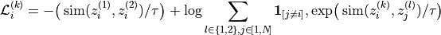
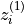
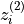
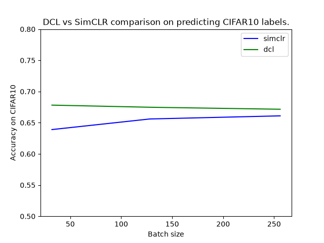

Note
Go to the end to download the full example code.
Decoupled Contrastive Learning¶
This tutorial illustrates the use of Decoupled Contrastive Learning (DCL) [1] which introduces a reformulation of the InfoNCE loss used in SimCLR [2] that removes the negative-positive coupling in the loss. This modification stabilizes optimization and improves performance, especially when training with small batch sizes.
In this tutorial, we will use the CIFAR10 dataset to train models based on DCL and SimCLR and compare their performances for different batch sizes using the nidl library.
We will follow these steps:
Load the CIFAR10 dataset.
Define the data augmentations for self-supervised training.
Define the DCL and SimCLR models.
Train the models for different batch sizes.
Compare the obtained representations on CIFAR10 test set with linear probing.
Setup¶
This notebook requires some packages besides nidl. Let’s first start with importing our standard libraries below:
import matplotlib.pyplot as plt
import numpy as np
import torch
from lightning_fabric import seed_everything
from sklearn.linear_model import LogisticRegression
from sklearn.metrics import accuracy_score
from torch import nn
from torch.utils.data import DataLoader, Subset
from torchvision import transforms
from torchvision.datasets import CIFAR10
from torchvision.models import resnet18
from nidl.estimators.ssl import DCL, SimCLR
from nidl.transforms.transforms import MultiViewsTransform
from nidl.utils.weights import Weights
We define some global parameters that will be used throughout the notebook. The parameter load_trained_models allows you to directly load the weights of the trained models from HuggingFace hub instead of training them directly in the notebook which takes time and resources (~3h on a NVIDIA RTX 4500 GPU).
Path where data should be downloaded
data_dir = "/tmp/cifar10"
# Whether to load the pretrained models or train them on your device
load_pretrained = True
# If loading model, directory where to save the weights
model_dir = "/tmp/nidl_example_dcl_vs_simclr"
# What accelerator to use: GPU if available, else CPU
accelerator = "gpu" if torch.cuda.is_available() else "cpu"
# Latent size of the representation
# /!\ If changing latent_size then you cannot load pretrained weights
latent_size = 128
# Number of workers (cpu cores) to use in dataloaders
num_workers = 4
# We fix the seed and generator for reproducibility
seed = 42
rd_generator = np.random.default_rng(seed=seed)
seed = seed_everything(seed)
Check parameters values
if latent_size != 128 and load_pretrained == True:
raise ValueError(
"Pretrained models have a latent size of 128 which can"
" not be modified. Set load_pretrained=True or"
" latent_size=128"
)
DCL Loss Function¶
The DCL loss function is based on InfoNCE and is defined as:

Where: -

and
are embeddings of two different augmented views of the same image - is the cosine similarity between normalized embeddings - is a temperature parameter controlling the concentration of
the distribution
-
is a temperature parameter controlling the concentration of
the distribution
- ![\mathbf{1}_{[j \ne i]}](../_images/math/01c2cfb0d00fb1132ac748d4d5c272ecc6462ad0.png) is an indicator function that ensures
decoupling
is an indicator function that ensures
decoupling
The key idea in DCL is to remove the contribution of the positive pair from the log-sum-exp normalization term of the InfoNCE loss. In standard InfoNCE, this term creates an implicit coupling between positive and negative similarities, which can bias gradient estimates when the batch size is small. By decoupling these terms, DCL reduces this bias and leads to more stable contrastive learning.
#
# Data Preparation
# -----------------
#
# We'll use the CIFAR10 dataset, which contains 50,000 training images and
# 10,000 test images of 10 different classes. We'll apply standard scaling
# transforms, the test dataset will be used to evaluate the model performance
# on the classification task. We subsample the dataset for faster inference.
#
# Load CIFAR10 dataset with standard scaling
#
# We subsample the test dataset to run the notebook faster.
scale_transforms = transforms.Compose(
[transforms.ToTensor(), transforms.Normalize((0.5,), (0.5,))]
)
train_xy_dataset = CIFAR10(
data_dir, train=True, transform=scale_transforms, download=True
)
train_indices = rd_generator.choice(
np.arange(len(train_xy_dataset)), size=10000, replace=False
)
train_xy_dataset = Subset(train_xy_dataset, train_indices)
test_xy_dataset = CIFAR10(
data_dir, train=False, transform=scale_transforms, download=True
)
test_indices = rd_generator.choice(
np.arange(len(test_xy_dataset)), size=5000, replace=False
)
test_xy_dataset = Subset(test_xy_dataset, test_indices)
0%| | 0.00/170M [00:00<?, ?B/s]
0%| | 32.8k/170M [00:00<43:19, 65.6kB/s]
0%| | 65.5k/170M [00:01<1:07:45, 41.9kB/s]
0%| | 98.3k/170M [00:03<1:43:50, 27.3kB/s]
0%| | 131k/170M [00:04<1:44:21, 27.2kB/s]
0%| | 164k/170M [00:04<1:20:26, 35.3kB/s]
0%| | 197k/170M [00:05<1:01:29, 46.2kB/s]
0%| | 229k/170M [00:05<1:01:15, 46.3kB/s]
0%| | 262k/170M [00:06<48:43, 58.2kB/s]
0%| | 295k/170M [00:06<48:36, 58.4kB/s]
0%| | 328k/170M [00:08<1:34:26, 30.0kB/s]
0%| | 360k/170M [00:09<1:20:26, 35.3kB/s]
0%| | 393k/170M [00:09<1:07:53, 41.8kB/s]
0%| | 426k/170M [00:10<1:04:35, 43.9kB/s]
0%| | 459k/170M [00:11<1:02:51, 45.1kB/s]
0%| | 492k/170M [00:11<59:22, 47.7kB/s]
0%| | 524k/170M [00:12<52:37, 53.8kB/s]
0%| | 557k/170M [00:12<52:02, 54.4kB/s]
0%| | 590k/170M [00:13<44:40, 63.4kB/s]
0%| | 623k/170M [00:13<39:49, 71.1kB/s]
0%| | 655k/170M [00:13<35:27, 79.8kB/s]
0%| | 688k/170M [00:14<37:07, 76.2kB/s]
0%| | 721k/170M [00:14<34:22, 82.3kB/s]
0%| | 754k/170M [00:15<39:25, 71.7kB/s]
0%| | 786k/170M [00:15<39:26, 71.7kB/s]
0%| | 819k/170M [00:16<40:30, 69.8kB/s]
0%| | 852k/170M [00:16<40:22, 70.0kB/s]
1%| | 885k/170M [00:17<53:57, 52.4kB/s]
1%| | 918k/170M [00:18<56:30, 50.0kB/s]
1%| | 950k/170M [00:19<1:02:43, 45.0kB/s]
1%| | 983k/170M [00:19<56:19, 50.2kB/s]
1%| | 1.02M/170M [00:20<50:30, 55.9kB/s]
1%| | 1.05M/170M [00:20<49:49, 56.7kB/s]
1%| | 1.08M/170M [00:21<49:06, 57.5kB/s]
1%| | 1.11M/170M [00:22<58:36, 48.2kB/s]
1%| | 1.15M/170M [00:22<1:00:24, 46.7kB/s]
1%| | 1.18M/170M [00:23<1:00:07, 46.9kB/s]
1%| | 1.21M/170M [00:24<1:04:54, 43.5kB/s]
1%| | 1.25M/170M [00:24<57:02, 49.4kB/s]
1%| | 1.28M/170M [00:25<50:05, 56.3kB/s]
1%| | 1.31M/170M [00:25<42:06, 67.0kB/s]
1%| | 1.34M/170M [00:25<36:28, 77.3kB/s]
1%| | 1.38M/170M [00:26<34:53, 80.8kB/s]
1%| | 1.41M/170M [00:26<32:03, 87.9kB/s]
1%| | 1.44M/170M [00:27<42:24, 66.4kB/s]
1%| | 1.47M/170M [00:27<38:53, 72.4kB/s]
1%| | 1.51M/170M [00:27<34:42, 81.2kB/s]
1%| | 1.54M/170M [00:28<32:50, 85.7kB/s]
1%| | 1.57M/170M [00:28<28:52, 97.5kB/s]
1%| | 1.61M/170M [00:28<28:08, 100kB/s]
1%| | 1.64M/170M [00:29<27:07, 104kB/s]
1%| | 1.67M/170M [00:29<25:50, 109kB/s]
1%| | 1.70M/170M [00:29<28:37, 98.3kB/s]
1%| | 1.74M/170M [00:30<26:58, 104kB/s]
1%| | 1.77M/170M [00:30<24:47, 113kB/s]
1%| | 1.80M/170M [00:30<32:34, 86.3kB/s]
1%| | 1.84M/170M [00:31<31:54, 88.1kB/s]
1%| | 1.87M/170M [00:31<28:32, 98.5kB/s]
1%| | 1.90M/170M [00:31<26:49, 105kB/s]
1%| | 1.93M/170M [00:32<26:46, 105kB/s]
1%| | 1.97M/170M [00:32<27:34, 102kB/s]
1%| | 2.00M/170M [00:32<25:01, 112kB/s]
1%| | 2.03M/170M [00:32<24:25, 115kB/s]
1%| | 2.06M/170M [00:33<25:26, 110kB/s]
1%| | 2.10M/170M [00:33<23:52, 118kB/s]
1%| | 2.13M/170M [00:33<23:15, 121kB/s]
1%|▏ | 2.16M/170M [00:33<22:35, 124kB/s]
1%|▏ | 2.20M/170M [00:34<37:33, 74.7kB/s]
1%|▏ | 2.23M/170M [00:35<45:33, 61.6kB/s]
1%|▏ | 2.26M/170M [00:35<40:42, 68.9kB/s]
1%|▏ | 2.29M/170M [00:36<39:53, 70.3kB/s]
1%|▏ | 2.33M/170M [00:37<45:45, 61.3kB/s]
1%|▏ | 2.36M/170M [00:37<43:13, 64.8kB/s]
1%|▏ | 2.39M/170M [00:37<42:11, 66.4kB/s]
1%|▏ | 2.42M/170M [00:38<36:19, 77.1kB/s]
1%|▏ | 2.46M/170M [00:38<32:50, 85.3kB/s]
1%|▏ | 2.49M/170M [00:38<29:48, 93.9kB/s]
1%|▏ | 2.52M/170M [00:39<28:18, 98.9kB/s]
1%|▏ | 2.56M/170M [00:39<29:31, 94.8kB/s]
2%|▏ | 2.59M/170M [00:40<48:40, 57.5kB/s]
2%|▏ | 2.62M/170M [00:41<51:01, 54.8kB/s]
2%|▏ | 2.65M/170M [00:41<44:40, 62.6kB/s]
2%|▏ | 2.69M/170M [00:41<38:03, 73.5kB/s]
2%|▏ | 2.72M/170M [00:42<44:54, 62.3kB/s]
2%|▏ | 2.75M/170M [00:43<57:23, 48.7kB/s]
2%|▏ | 2.79M/170M [00:45<1:30:55, 30.7kB/s]
2%|▏ | 2.82M/170M [00:46<1:34:18, 29.6kB/s]
2%|▏ | 2.85M/170M [00:47<1:21:20, 34.3kB/s]
2%|▏ | 2.88M/170M [00:48<1:14:21, 37.6kB/s]
2%|▏ | 2.92M/170M [00:48<1:03:03, 44.3kB/s]
2%|▏ | 2.95M/170M [00:49<1:04:26, 43.3kB/s]
2%|▏ | 2.98M/170M [00:49<57:20, 48.7kB/s]
2%|▏ | 3.01M/170M [00:50<52:06, 53.6kB/s]
2%|▏ | 3.05M/170M [00:50<47:52, 58.3kB/s]
2%|▏ | 3.08M/170M [00:51<45:46, 61.0kB/s]
2%|▏ | 3.11M/170M [00:51<40:21, 69.1kB/s]
2%|▏ | 3.15M/170M [00:51<35:51, 77.8kB/s]
2%|▏ | 3.18M/170M [00:52<35:02, 79.6kB/s]
2%|▏ | 3.21M/170M [00:52<29:25, 94.8kB/s]
2%|▏ | 3.24M/170M [00:52<27:38, 101kB/s]
2%|▏ | 3.28M/170M [00:52<26:45, 104kB/s]
2%|▏ | 3.31M/170M [00:53<27:22, 102kB/s]
2%|▏ | 3.34M/170M [00:53<26:18, 106kB/s]
2%|▏ | 3.38M/170M [00:53<26:34, 105kB/s]
2%|▏ | 3.41M/170M [00:54<25:31, 109kB/s]
2%|▏ | 3.44M/170M [00:54<28:07, 99.0kB/s]
2%|▏ | 3.47M/170M [00:54<27:24, 102kB/s]
2%|▏ | 3.51M/170M [00:55<30:08, 92.3kB/s]
2%|▏ | 3.54M/170M [00:55<30:17, 91.9kB/s]
2%|▏ | 3.57M/170M [00:56<32:02, 86.8kB/s]
2%|▏ | 3.60M/170M [00:56<29:32, 94.2kB/s]
2%|▏ | 3.64M/170M [00:56<27:27, 101kB/s]
2%|▏ | 3.67M/170M [00:56<27:00, 103kB/s]
2%|▏ | 3.70M/170M [00:57<25:59, 107kB/s]
2%|▏ | 3.74M/170M [00:57<25:47, 108kB/s]
2%|▏ | 3.77M/170M [00:57<27:36, 101kB/s]
2%|▏ | 3.80M/170M [00:58<27:46, 100kB/s]
2%|▏ | 3.83M/170M [00:58<26:30, 105kB/s]
2%|▏ | 3.87M/170M [00:58<26:26, 105kB/s]
2%|▏ | 3.90M/170M [00:59<29:45, 93.3kB/s]
2%|▏ | 3.93M/170M [01:00<47:29, 58.5kB/s]
2%|▏ | 3.96M/170M [01:00<48:13, 57.6kB/s]
2%|▏ | 4.00M/170M [01:01<44:44, 62.0kB/s]
2%|▏ | 4.03M/170M [01:01<40:47, 68.0kB/s]
2%|▏ | 4.06M/170M [01:01<37:21, 74.2kB/s]
2%|▏ | 4.10M/170M [01:03<1:07:00, 41.4kB/s]
2%|▏ | 4.13M/170M [01:03<56:11, 49.4kB/s]
2%|▏ | 4.16M/170M [01:04<57:04, 48.6kB/s]
2%|▏ | 4.19M/170M [01:05<55:37, 49.8kB/s]
2%|▏ | 4.23M/170M [01:05<49:35, 55.9kB/s]
2%|▏ | 4.26M/170M [01:06<43:08, 64.2kB/s]
3%|▎ | 4.29M/170M [01:06<41:59, 66.0kB/s]
3%|▎ | 4.33M/170M [01:07<54:26, 50.9kB/s]
3%|▎ | 4.36M/170M [01:07<46:46, 59.2kB/s]
3%|▎ | 4.39M/170M [01:08<39:20, 70.4kB/s]
3%|▎ | 4.42M/170M [01:08<33:39, 82.2kB/s]
3%|▎ | 4.46M/170M [01:08<32:23, 85.4kB/s]
3%|▎ | 4.49M/170M [01:08<29:29, 93.8kB/s]
3%|▎ | 4.52M/170M [01:09<26:32, 104kB/s]
3%|▎ | 4.55M/170M [01:09<25:01, 110kB/s]
3%|▎ | 4.59M/170M [01:09<23:41, 117kB/s]
3%|▎ | 4.62M/170M [01:09<22:53, 121kB/s]
3%|▎ | 4.65M/170M [01:10<22:09, 125kB/s]
3%|▎ | 4.69M/170M [01:10<21:56, 126kB/s]
3%|▎ | 4.72M/170M [01:10<27:29, 101kB/s]
3%|▎ | 4.75M/170M [01:11<30:00, 92.1kB/s]
3%|▎ | 4.78M/170M [01:12<38:55, 70.9kB/s]
3%|▎ | 4.82M/170M [01:12<38:46, 71.2kB/s]
3%|▎ | 4.85M/170M [01:13<41:34, 66.4kB/s]
3%|▎ | 4.88M/170M [01:16<1:46:28, 25.9kB/s]
3%|▎ | 4.92M/170M [01:16<1:26:01, 32.1kB/s]
3%|▎ | 4.95M/170M [01:17<1:25:37, 32.2kB/s]
3%|▎ | 4.98M/170M [01:18<1:27:11, 31.6kB/s]
3%|▎ | 5.01M/170M [01:19<1:22:51, 33.3kB/s]
3%|▎ | 5.05M/170M [01:20<1:12:44, 37.9kB/s]
3%|▎ | 5.08M/170M [01:20<57:48, 47.7kB/s]
3%|▎ | 5.11M/170M [01:21<1:01:30, 44.8kB/s]
3%|▎ | 5.14M/170M [01:21<54:25, 50.6kB/s]
3%|▎ | 5.18M/170M [01:22<46:52, 58.8kB/s]
3%|▎ | 5.21M/170M [01:22<41:47, 65.9kB/s]
3%|▎ | 5.24M/170M [01:22<40:20, 68.3kB/s]
3%|▎ | 5.28M/170M [01:23<37:06, 74.2kB/s]
3%|▎ | 5.31M/170M [01:23<36:11, 76.1kB/s]
3%|▎ | 5.34M/170M [01:24<36:46, 74.9kB/s]
3%|▎ | 5.37M/170M [01:24<40:42, 67.6kB/s]
3%|▎ | 5.41M/170M [01:25<49:43, 55.3kB/s]
3%|▎ | 5.44M/170M [01:26<1:10:09, 39.2kB/s]
3%|▎ | 5.47M/170M [01:27<58:31, 47.0kB/s]
3%|▎ | 5.51M/170M [01:27<48:18, 56.9kB/s]
3%|▎ | 5.54M/170M [01:27<43:31, 63.2kB/s]
3%|▎ | 5.57M/170M [01:28<38:56, 70.6kB/s]
3%|▎ | 5.60M/170M [01:28<36:42, 74.9kB/s]
3%|▎ | 5.64M/170M [01:28<32:52, 83.6kB/s]
3%|▎ | 5.67M/170M [01:29<31:29, 87.3kB/s]
3%|▎ | 5.70M/170M [01:29<30:35, 89.8kB/s]
3%|▎ | 5.73M/170M [01:29<30:12, 90.9kB/s]
3%|▎ | 5.77M/170M [01:30<30:54, 88.8kB/s]
3%|▎ | 5.80M/170M [01:30<34:00, 80.7kB/s]
3%|▎ | 5.83M/170M [01:31<30:47, 89.1kB/s]
3%|▎ | 5.87M/170M [01:31<29:55, 91.7kB/s]
3%|▎ | 5.90M/170M [01:31<29:21, 93.4kB/s]
3%|▎ | 5.93M/170M [01:32<31:56, 85.9kB/s]
3%|▎ | 5.96M/170M [01:32<29:54, 91.7kB/s]
4%|▎ | 6.00M/170M [01:32<30:15, 90.6kB/s]
4%|▎ | 6.03M/170M [01:33<28:30, 96.2kB/s]
4%|▎ | 6.06M/170M [01:33<29:29, 92.9kB/s]
4%|▎ | 6.09M/170M [01:33<27:30, 99.6kB/s]
4%|▎ | 6.13M/170M [01:34<26:24, 104kB/s]
4%|▎ | 6.16M/170M [01:34<28:52, 94.9kB/s]
4%|▎ | 6.19M/170M [01:34<27:38, 99.1kB/s]
4%|▎ | 6.23M/170M [01:35<26:46, 102kB/s]
4%|▎ | 6.26M/170M [01:35<30:04, 91.0kB/s]
4%|▎ | 6.29M/170M [01:35<31:15, 87.5kB/s]
4%|▎ | 6.32M/170M [01:36<31:44, 86.2kB/s]
4%|▎ | 6.36M/170M [01:36<29:53, 91.5kB/s]
4%|▎ | 6.39M/170M [01:37<30:02, 91.0kB/s]
4%|▍ | 6.42M/170M [01:37<28:52, 94.7kB/s]
4%|▍ | 6.46M/170M [01:37<29:04, 94.0kB/s]
4%|▍ | 6.49M/170M [01:38<30:15, 90.3kB/s]
4%|▍ | 6.52M/170M [01:38<39:07, 69.9kB/s]
4%|▍ | 6.55M/170M [01:39<41:57, 65.1kB/s]
4%|▍ | 6.59M/170M [01:40<47:09, 57.9kB/s]
4%|▍ | 6.62M/170M [01:40<44:42, 61.1kB/s]
4%|▍ | 6.65M/170M [01:41<47:23, 57.6kB/s]
4%|▍ | 6.68M/170M [01:42<1:03:07, 43.3kB/s]
4%|▍ | 6.72M/170M [01:43<1:06:30, 41.0kB/s]
4%|▍ | 6.75M/170M [01:43<58:50, 46.4kB/s]
4%|▍ | 6.78M/170M [01:44<50:04, 54.5kB/s]
4%|▍ | 6.82M/170M [01:44<44:01, 62.0kB/s]
4%|▍ | 6.85M/170M [01:45<42:27, 64.2kB/s]
4%|▍ | 6.88M/170M [01:45<37:23, 72.9kB/s]
4%|▍ | 6.91M/170M [01:45<35:56, 75.9kB/s]
4%|▍ | 6.95M/170M [01:46<33:27, 81.5kB/s]
4%|▍ | 6.98M/170M [01:46<33:26, 81.5kB/s]
4%|▍ | 7.01M/170M [01:46<31:51, 85.5kB/s]
4%|▍ | 7.05M/170M [01:47<30:44, 88.6kB/s]
4%|▍ | 7.08M/170M [01:47<28:08, 96.8kB/s]
4%|▍ | 7.11M/170M [01:47<28:36, 95.2kB/s]
4%|▍ | 7.14M/170M [01:48<26:42, 102kB/s]
4%|▍ | 7.18M/170M [01:48<31:29, 86.4kB/s]
4%|▍ | 7.21M/170M [01:49<48:28, 56.1kB/s]
4%|▍ | 7.24M/170M [01:50<56:13, 48.4kB/s]
4%|▍ | 7.27M/170M [01:51<1:06:12, 41.1kB/s]
4%|▍ | 7.31M/170M [01:52<58:24, 46.6kB/s]
4%|▍ | 7.34M/170M [01:52<52:21, 51.9kB/s]
4%|▍ | 7.37M/170M [01:52<46:36, 58.3kB/s]
4%|▍ | 7.41M/170M [01:53<44:59, 60.4kB/s]
4%|▍ | 7.44M/170M [01:53<44:17, 61.3kB/s]
4%|▍ | 7.47M/170M [01:54<46:17, 58.7kB/s]
4%|▍ | 7.50M/170M [01:55<47:22, 57.3kB/s]
4%|▍ | 7.54M/170M [01:55<46:04, 58.9kB/s]
4%|▍ | 7.57M/170M [01:56<51:39, 52.6kB/s]
4%|▍ | 7.60M/170M [01:57<58:08, 46.7kB/s]
4%|▍ | 7.63M/170M [01:58<1:17:07, 35.2kB/s]
4%|▍ | 7.67M/170M [01:59<1:03:16, 42.9kB/s]
5%|▍ | 7.70M/170M [01:59<50:24, 53.8kB/s]
5%|▍ | 7.73M/170M [01:59<42:26, 63.9kB/s]
5%|▍ | 7.77M/170M [01:59<35:49, 75.7kB/s]
5%|▍ | 7.80M/170M [02:00<32:16, 84.0kB/s]
5%|▍ | 7.83M/170M [02:00<28:18, 95.8kB/s]
5%|▍ | 7.86M/170M [02:00<27:14, 99.5kB/s]
5%|▍ | 7.90M/170M [02:01<26:43, 101kB/s]
5%|▍ | 7.93M/170M [02:01<26:26, 102kB/s]
5%|▍ | 7.96M/170M [02:01<24:53, 109kB/s]
5%|▍ | 8.00M/170M [02:01<23:08, 117kB/s]
5%|▍ | 8.03M/170M [02:02<24:28, 111kB/s]
5%|▍ | 8.06M/170M [02:02<26:22, 103kB/s]
5%|▍ | 8.09M/170M [02:03<33:29, 80.8kB/s]
5%|▍ | 8.13M/170M [02:04<51:40, 52.4kB/s]
5%|▍ | 8.16M/170M [02:04<48:33, 55.7kB/s]
5%|▍ | 8.19M/170M [02:06<1:04:15, 42.1kB/s]
5%|▍ | 8.22M/170M [02:06<57:33, 47.0kB/s]
5%|▍ | 8.26M/170M [02:07<52:48, 51.2kB/s]
5%|▍ | 8.29M/170M [02:08<1:10:04, 38.6kB/s]
5%|▍ | 8.32M/170M [02:08<1:02:03, 43.6kB/s]
5%|▍ | 8.36M/170M [02:09<55:54, 48.3kB/s]
5%|▍ | 8.39M/170M [02:09<46:18, 58.3kB/s]
5%|▍ | 8.42M/170M [02:09<38:43, 69.8kB/s]
5%|▍ | 8.45M/170M [02:10<36:40, 73.7kB/s]
5%|▍ | 8.49M/170M [02:10<34:16, 78.8kB/s]
5%|▍ | 8.52M/170M [02:11<34:44, 77.7kB/s]
5%|▌ | 8.55M/170M [02:11<34:29, 78.2kB/s]
5%|▌ | 8.59M/170M [02:12<38:41, 69.7kB/s]
5%|▌ | 8.62M/170M [02:13<56:43, 47.6kB/s]
5%|▌ | 8.65M/170M [02:13<50:53, 53.0kB/s]
5%|▌ | 8.68M/170M [02:14<45:09, 59.7kB/s]
5%|▌ | 8.72M/170M [02:14<40:26, 66.7kB/s]
5%|▌ | 8.75M/170M [02:15<46:47, 57.6kB/s]
5%|▌ | 8.78M/170M [02:15<41:00, 65.7kB/s]
5%|▌ | 8.81M/170M [02:15<34:48, 77.4kB/s]
5%|▌ | 8.85M/170M [02:16<30:57, 87.0kB/s]
5%|▌ | 8.88M/170M [02:16<29:48, 90.4kB/s]
5%|▌ | 8.91M/170M [02:16<26:24, 102kB/s]
5%|▌ | 8.95M/170M [02:17<26:26, 102kB/s]
5%|▌ | 8.98M/170M [02:17<27:55, 96.4kB/s]
5%|▌ | 9.01M/170M [02:17<30:41, 87.7kB/s]
5%|▌ | 9.04M/170M [02:18<29:50, 90.2kB/s]
5%|▌ | 9.08M/170M [02:18<31:51, 84.4kB/s]
5%|▌ | 9.11M/170M [02:19<48:02, 56.0kB/s]
5%|▌ | 9.14M/170M [02:20<58:55, 45.6kB/s]
5%|▌ | 9.18M/170M [02:21<1:02:15, 43.2kB/s]
5%|▌ | 9.21M/170M [02:22<1:06:04, 40.7kB/s]
5%|▌ | 9.24M/170M [02:23<1:04:58, 41.4kB/s]
5%|▌ | 9.27M/170M [02:23<55:07, 48.7kB/s]
5%|▌ | 9.31M/170M [02:23<45:22, 59.2kB/s]
5%|▌ | 9.34M/170M [02:24<39:51, 67.4kB/s]
5%|▌ | 9.37M/170M [02:24<34:22, 78.1kB/s]
6%|▌ | 9.40M/170M [02:25<55:21, 48.5kB/s]
6%|▌ | 9.44M/170M [02:26<52:14, 51.4kB/s]
6%|▌ | 9.47M/170M [02:27<1:07:40, 39.7kB/s]
6%|▌ | 9.50M/170M [02:28<1:05:46, 40.8kB/s]
6%|▌ | 9.54M/170M [02:29<1:04:35, 41.5kB/s]
6%|▌ | 9.57M/170M [02:29<55:36, 48.2kB/s]
6%|▌ | 9.60M/170M [02:29<48:47, 55.0kB/s]
6%|▌ | 9.63M/170M [02:32<1:46:18, 25.2kB/s]
6%|▌ | 9.67M/170M [02:33<1:29:49, 29.8kB/s]
6%|▌ | 9.70M/170M [02:34<1:29:43, 29.9kB/s]
6%|▌ | 9.73M/170M [02:35<1:15:40, 35.4kB/s]
6%|▌ | 9.76M/170M [02:35<1:00:25, 44.3kB/s]
6%|▌ | 9.80M/170M [02:35<48:49, 54.9kB/s]
6%|▌ | 9.83M/170M [02:36<42:30, 63.0kB/s]
6%|▌ | 9.86M/170M [02:36<35:00, 76.5kB/s]
6%|▌ | 9.90M/170M [02:36<33:33, 79.8kB/s]
6%|▌ | 9.93M/170M [02:36<31:01, 86.3kB/s]
6%|▌ | 9.96M/170M [02:37<27:22, 97.7kB/s]
6%|▌ | 9.99M/170M [02:37<27:25, 97.6kB/s]
6%|▌ | 10.0M/170M [02:37<27:45, 96.3kB/s]
6%|▌ | 10.1M/170M [02:38<29:09, 91.7kB/s]
6%|▌ | 10.1M/170M [02:38<30:05, 88.9kB/s]
6%|▌ | 10.1M/170M [02:39<30:53, 86.5kB/s]
6%|▌ | 10.2M/170M [02:39<32:23, 82.5kB/s]
6%|▌ | 10.2M/170M [02:39<33:08, 80.6kB/s]
6%|▌ | 10.2M/170M [02:40<44:00, 60.7kB/s]
6%|▌ | 10.3M/170M [02:41<45:21, 58.9kB/s]
6%|▌ | 10.3M/170M [02:41<43:52, 60.9kB/s]
6%|▌ | 10.3M/170M [02:42<52:16, 51.1kB/s]
6%|▌ | 10.4M/170M [02:43<53:30, 49.9kB/s]
6%|▌ | 10.4M/170M [02:43<48:32, 55.0kB/s]
6%|▌ | 10.4M/170M [02:44<46:51, 56.9kB/s]
6%|▌ | 10.5M/170M [02:45<51:04, 52.2kB/s]
6%|▌ | 10.5M/170M [02:46<56:53, 46.9kB/s]
6%|▌ | 10.5M/170M [02:46<45:22, 58.8kB/s]
6%|▌ | 10.6M/170M [02:46<37:41, 70.7kB/s]
6%|▌ | 10.6M/170M [02:46<38:12, 69.8kB/s]
6%|▌ | 10.6M/170M [02:47<36:16, 73.5kB/s]
6%|▌ | 10.6M/170M [02:47<33:37, 79.2kB/s]
6%|▋ | 10.7M/170M [02:48<45:11, 59.0kB/s]
6%|▋ | 10.7M/170M [02:50<1:15:59, 35.0kB/s]
6%|▋ | 10.7M/170M [02:51<1:07:45, 39.3kB/s]
6%|▋ | 10.8M/170M [02:51<57:34, 46.2kB/s]
6%|▋ | 10.8M/170M [02:51<46:52, 56.8kB/s]
6%|▋ | 10.8M/170M [02:51<38:32, 69.0kB/s]
6%|▋ | 10.9M/170M [02:52<33:25, 79.6kB/s]
6%|▋ | 10.9M/170M [02:52<28:58, 91.8kB/s]
6%|▋ | 10.9M/170M [02:52<28:38, 92.9kB/s]
6%|▋ | 11.0M/170M [02:53<25:53, 103kB/s]
6%|▋ | 11.0M/170M [02:53<23:53, 111kB/s]
6%|▋ | 11.0M/170M [02:53<23:10, 115kB/s]
6%|▋ | 11.1M/170M [02:53<22:27, 118kB/s]
7%|▋ | 11.1M/170M [02:54<22:27, 118kB/s]
7%|▋ | 11.1M/170M [02:54<21:11, 125kB/s]
7%|▋ | 11.2M/170M [02:54<21:55, 121kB/s]
7%|▋ | 11.2M/170M [02:54<20:50, 127kB/s]
7%|▋ | 11.2M/170M [02:55<20:42, 128kB/s]
7%|▋ | 11.3M/170M [02:55<22:27, 118kB/s]
7%|▋ | 11.3M/170M [02:55<22:30, 118kB/s]
7%|▋ | 11.3M/170M [02:55<21:13, 125kB/s]
7%|▋ | 11.4M/170M [02:56<25:18, 105kB/s]
7%|▋ | 11.4M/170M [02:56<28:56, 91.6kB/s]
7%|▋ | 11.4M/170M [02:58<59:37, 44.5kB/s]
7%|▋ | 11.5M/170M [02:58<49:47, 53.2kB/s]
7%|▋ | 11.5M/170M [02:59<42:34, 62.2kB/s]
7%|▋ | 11.5M/170M [02:59<37:39, 70.3kB/s]
7%|▋ | 11.6M/170M [02:59<33:33, 78.9kB/s]
7%|▋ | 11.6M/170M [03:00<32:52, 80.5kB/s]
7%|▋ | 11.6M/170M [03:01<1:00:02, 44.1kB/s]
7%|▋ | 11.7M/170M [03:02<52:20, 50.6kB/s]
7%|▋ | 11.7M/170M [03:02<47:36, 55.6kB/s]
7%|▋ | 11.7M/170M [03:03<47:54, 55.2kB/s]
7%|▋ | 11.8M/170M [03:03<43:51, 60.3kB/s]
7%|▋ | 11.8M/170M [03:03<38:48, 68.2kB/s]
7%|▋ | 11.8M/170M [03:04<34:22, 76.9kB/s]
7%|▋ | 11.9M/170M [03:04<33:38, 78.6kB/s]
7%|▋ | 11.9M/170M [03:04<31:10, 84.8kB/s]
7%|▋ | 11.9M/170M [03:05<37:30, 70.5kB/s]
7%|▋ | 12.0M/170M [03:06<1:01:28, 43.0kB/s]
7%|▋ | 12.0M/170M [03:07<1:00:48, 43.4kB/s]
7%|▋ | 12.0M/170M [03:08<53:18, 49.5kB/s]
7%|▋ | 12.1M/170M [03:08<44:46, 59.0kB/s]
7%|▋ | 12.1M/170M [03:08<38:02, 69.4kB/s]
7%|▋ | 12.1M/170M [03:09<56:53, 46.4kB/s]
7%|▋ | 12.2M/170M [03:10<1:00:13, 43.8kB/s]
7%|▋ | 12.2M/170M [03:11<52:06, 50.6kB/s]
7%|▋ | 12.2M/170M [03:11<49:13, 53.6kB/s]
7%|▋ | 12.3M/170M [03:12<46:01, 57.3kB/s]
7%|▋ | 12.3M/170M [03:12<46:27, 56.7kB/s]
7%|▋ | 12.3M/170M [03:13<46:51, 56.3kB/s]
7%|▋ | 12.4M/170M [03:14<51:52, 50.8kB/s]
7%|▋ | 12.4M/170M [03:14<49:26, 53.3kB/s]
7%|▋ | 12.4M/170M [03:15<45:41, 57.7kB/s]
7%|▋ | 12.5M/170M [03:15<48:03, 54.8kB/s]
7%|▋ | 12.5M/170M [03:16<51:51, 50.8kB/s]
7%|▋ | 12.5M/170M [03:17<46:09, 57.0kB/s]
7%|▋ | 12.6M/170M [03:17<42:29, 61.9kB/s]
7%|▋ | 12.6M/170M [03:17<38:40, 68.1kB/s]
7%|▋ | 12.6M/170M [03:18<34:33, 76.1kB/s]
7%|▋ | 12.6M/170M [03:18<35:14, 74.7kB/s]
7%|▋ | 12.7M/170M [03:18<29:40, 88.6kB/s]
7%|▋ | 12.7M/170M [03:19<27:10, 96.8kB/s]
7%|▋ | 12.7M/170M [03:19<24:31, 107kB/s]
7%|▋ | 12.8M/170M [03:19<23:13, 113kB/s]
8%|▊ | 12.8M/170M [03:19<22:28, 117kB/s]
8%|▊ | 12.8M/170M [03:20<23:21, 112kB/s]
8%|▊ | 12.9M/170M [03:20<20:52, 126kB/s]
8%|▊ | 12.9M/170M [03:20<20:42, 127kB/s]
8%|▊ | 12.9M/170M [03:20<20:52, 126kB/s]
8%|▊ | 13.0M/170M [03:21<21:27, 122kB/s]
8%|▊ | 13.0M/170M [03:21<21:08, 124kB/s]
8%|▊ | 13.0M/170M [03:21<20:29, 128kB/s]
8%|▊ | 13.1M/170M [03:21<20:30, 128kB/s]
8%|▊ | 13.1M/170M [03:22<19:49, 132kB/s]
8%|▊ | 13.1M/170M [03:22<19:51, 132kB/s]
8%|▊ | 13.2M/170M [03:22<20:00, 131kB/s]
8%|▊ | 13.2M/170M [03:22<19:38, 133kB/s]
8%|▊ | 13.2M/170M [03:23<19:50, 132kB/s]
8%|▊ | 13.3M/170M [03:23<20:00, 131kB/s]
8%|▊ | 13.3M/170M [03:23<19:59, 131kB/s]
8%|▊ | 13.3M/170M [03:23<21:07, 124kB/s]
8%|▊ | 13.4M/170M [03:24<20:37, 127kB/s]
8%|▊ | 13.4M/170M [03:24<21:40, 121kB/s]
8%|▊ | 13.4M/170M [03:24<20:10, 130kB/s]
8%|▊ | 13.5M/170M [03:24<20:03, 130kB/s]
8%|▊ | 13.5M/170M [03:25<20:08, 130kB/s]
8%|▊ | 13.5M/170M [03:25<19:44, 133kB/s]
8%|▊ | 13.6M/170M [03:25<19:16, 136kB/s]
8%|▊ | 13.6M/170M [03:25<19:38, 133kB/s]
8%|▊ | 13.6M/170M [03:26<20:07, 130kB/s]
8%|▊ | 13.7M/170M [03:26<22:59, 114kB/s]
8%|▊ | 13.7M/170M [03:26<22:38, 115kB/s]
8%|▊ | 13.7M/170M [03:27<21:34, 121kB/s]
8%|▊ | 13.8M/170M [03:27<21:12, 123kB/s]
8%|▊ | 13.8M/170M [03:27<20:56, 125kB/s]
8%|▊ | 13.8M/170M [03:27<20:16, 129kB/s]
8%|▊ | 13.9M/170M [03:28<20:48, 125kB/s]
8%|▊ | 13.9M/170M [03:28<19:54, 131kB/s]
8%|▊ | 13.9M/170M [03:28<19:44, 132kB/s]
8%|▊ | 14.0M/170M [03:28<19:35, 133kB/s]
8%|▊ | 14.0M/170M [03:29<21:37, 121kB/s]
8%|▊ | 14.0M/170M [03:29<20:46, 125kB/s]
8%|▊ | 14.1M/170M [03:29<20:36, 127kB/s]
8%|▊ | 14.1M/170M [03:29<20:30, 127kB/s]
8%|▊ | 14.1M/170M [03:30<20:37, 126kB/s]
8%|▊ | 14.2M/170M [03:30<20:13, 129kB/s]
8%|▊ | 14.2M/170M [03:30<19:49, 131kB/s]
8%|▊ | 14.2M/170M [03:30<20:36, 126kB/s]
8%|▊ | 14.3M/170M [03:31<19:32, 133kB/s]
8%|▊ | 14.3M/170M [03:31<19:48, 131kB/s]
8%|▊ | 14.3M/170M [03:31<19:57, 130kB/s]
8%|▊ | 14.4M/170M [03:32<27:06, 96.0kB/s]
8%|▊ | 14.4M/170M [03:32<39:19, 66.2kB/s]
8%|▊ | 14.4M/170M [03:33<39:18, 66.2kB/s]
8%|▊ | 14.5M/170M [03:33<36:54, 70.5kB/s]
8%|▊ | 14.5M/170M [03:34<33:59, 76.5kB/s]
9%|▊ | 14.5M/170M [03:34<29:00, 89.6kB/s]
9%|▊ | 14.5M/170M [03:34<26:05, 99.6kB/s]
9%|▊ | 14.6M/170M [03:34<23:53, 109kB/s]
9%|▊ | 14.6M/170M [03:35<22:28, 116kB/s]
9%|▊ | 14.6M/170M [03:35<21:28, 121kB/s]
9%|▊ | 14.7M/170M [03:35<28:08, 92.3kB/s]
9%|▊ | 14.7M/170M [03:36<25:48, 101kB/s]
9%|▊ | 14.7M/170M [03:36<24:33, 106kB/s]
9%|▊ | 14.8M/170M [03:36<22:49, 114kB/s]
9%|▊ | 14.8M/170M [03:36<22:01, 118kB/s]
9%|▊ | 14.8M/170M [03:37<31:44, 81.7kB/s]
9%|▊ | 14.9M/170M [03:39<1:03:48, 40.7kB/s]
9%|▊ | 14.9M/170M [03:40<1:13:52, 35.1kB/s]
9%|▉ | 14.9M/170M [03:41<1:00:57, 42.5kB/s]
9%|▉ | 15.0M/170M [03:41<54:27, 47.6kB/s]
9%|▉ | 15.0M/170M [03:42<49:53, 51.9kB/s]
9%|▉ | 15.0M/170M [03:42<46:35, 55.6kB/s]
9%|▉ | 15.1M/170M [03:43<49:45, 52.1kB/s]
9%|▉ | 15.1M/170M [03:43<48:08, 53.8kB/s]
9%|▉ | 15.1M/170M [03:44<59:07, 43.8kB/s]
9%|▉ | 15.2M/170M [03:45<56:20, 45.9kB/s]
9%|▉ | 15.2M/170M [03:45<48:51, 53.0kB/s]
9%|▉ | 15.2M/170M [03:46<47:50, 54.1kB/s]
9%|▉ | 15.3M/170M [03:46<44:58, 57.5kB/s]
9%|▉ | 15.3M/170M [03:48<1:05:09, 39.7kB/s]
9%|▉ | 15.3M/170M [03:50<1:28:28, 29.2kB/s]
9%|▉ | 15.4M/170M [03:51<1:26:00, 30.1kB/s]
9%|▉ | 15.4M/170M [03:51<1:11:41, 36.1kB/s]
9%|▉ | 15.4M/170M [03:52<58:57, 43.8kB/s]
9%|▉ | 15.5M/170M [03:52<54:13, 47.6kB/s]
9%|▉ | 15.5M/170M [03:52<44:47, 57.7kB/s]
9%|▉ | 15.5M/170M [03:53<37:44, 68.4kB/s]
9%|▉ | 15.6M/170M [03:53<33:24, 77.3kB/s]
9%|▉ | 15.6M/170M [03:53<29:55, 86.3kB/s]
9%|▉ | 15.6M/170M [03:54<29:28, 87.6kB/s]
9%|▉ | 15.7M/170M [03:54<25:45, 100kB/s]
9%|▉ | 15.7M/170M [03:54<24:26, 106kB/s]
9%|▉ | 15.7M/170M [03:55<27:21, 94.3kB/s]
9%|▉ | 15.8M/170M [03:56<1:00:35, 42.6kB/s]
9%|▉ | 15.8M/170M [03:57<1:06:11, 39.0kB/s]
9%|▉ | 15.8M/170M [03:58<1:06:49, 38.6kB/s]
9%|▉ | 15.9M/170M [03:59<1:05:56, 39.1kB/s]
9%|▉ | 15.9M/170M [04:01<1:24:54, 30.3kB/s]
9%|▉ | 15.9M/170M [04:01<1:17:36, 33.2kB/s]
9%|▉ | 16.0M/170M [04:03<1:24:05, 30.6kB/s]
9%|▉ | 16.0M/170M [04:03<1:14:22, 34.6kB/s]
9%|▉ | 16.0M/170M [04:04<1:07:48, 38.0kB/s]
9%|▉ | 16.1M/170M [04:05<1:08:22, 37.6kB/s]
9%|▉ | 16.1M/170M [04:05<55:29, 46.4kB/s]
9%|▉ | 16.1M/170M [04:06<48:13, 53.4kB/s]
9%|▉ | 16.2M/170M [04:06<44:12, 58.2kB/s]
9%|▉ | 16.2M/170M [04:06<39:36, 64.9kB/s]
10%|▉ | 16.2M/170M [04:07<35:38, 72.1kB/s]
10%|▉ | 16.3M/170M [04:07<42:35, 60.4kB/s]
10%|▉ | 16.3M/170M [04:08<44:20, 58.0kB/s]
10%|▉ | 16.3M/170M [04:08<40:06, 64.1kB/s]
10%|▉ | 16.4M/170M [04:09<37:48, 68.0kB/s]
10%|▉ | 16.4M/170M [04:09<39:17, 65.4kB/s]
10%|▉ | 16.4M/170M [04:11<1:02:13, 41.3kB/s]
10%|▉ | 16.4M/170M [04:12<1:11:42, 35.8kB/s]
10%|▉ | 16.5M/170M [04:13<1:09:25, 37.0kB/s]
10%|▉ | 16.5M/170M [04:14<1:17:14, 33.2kB/s]
10%|▉ | 16.5M/170M [04:15<1:02:24, 41.1kB/s]
10%|▉ | 16.6M/170M [04:16<1:14:43, 34.3kB/s]
10%|▉ | 16.6M/170M [04:17<1:12:26, 35.4kB/s]
10%|▉ | 16.6M/170M [04:17<1:07:35, 37.9kB/s]
10%|▉ | 16.7M/170M [04:18<57:41, 44.4kB/s]
10%|▉ | 16.7M/170M [04:19<59:07, 43.4kB/s]
10%|▉ | 16.7M/170M [04:19<50:44, 50.5kB/s]
10%|▉ | 16.8M/170M [04:19<43:31, 58.9kB/s]
10%|▉ | 16.8M/170M [04:20<36:54, 69.4kB/s]
10%|▉ | 16.8M/170M [04:20<30:48, 83.1kB/s]
10%|▉ | 16.9M/170M [04:20<27:32, 93.0kB/s]
10%|▉ | 16.9M/170M [04:20<25:02, 102kB/s]
10%|▉ | 16.9M/170M [04:21<23:52, 107kB/s]
10%|▉ | 17.0M/170M [04:21<23:04, 111kB/s]
10%|▉ | 17.0M/170M [04:21<23:13, 110kB/s]
10%|▉ | 17.0M/170M [04:22<23:53, 107kB/s]
10%|█ | 17.1M/170M [04:22<24:32, 104kB/s]
10%|█ | 17.1M/170M [04:22<23:11, 110kB/s]
10%|█ | 17.1M/170M [04:22<23:03, 111kB/s]
10%|█ | 17.2M/170M [04:23<23:12, 110kB/s]
10%|█ | 17.2M/170M [04:23<22:19, 114kB/s]
10%|█ | 17.2M/170M [04:23<22:27, 114kB/s]
10%|█ | 17.3M/170M [04:24<22:53, 112kB/s]
10%|█ | 17.3M/170M [04:24<22:19, 114kB/s]
10%|█ | 17.3M/170M [04:24<21:06, 121kB/s]
10%|█ | 17.4M/170M [04:24<20:50, 122kB/s]
10%|█ | 17.4M/170M [04:25<20:52, 122kB/s]
10%|█ | 17.4M/170M [04:25<22:31, 113kB/s]
10%|█ | 17.5M/170M [04:25<21:43, 117kB/s]
10%|█ | 17.5M/170M [04:26<21:33, 118kB/s]
10%|█ | 17.5M/170M [04:26<21:38, 118kB/s]
10%|█ | 17.6M/170M [04:26<21:27, 119kB/s]
10%|█ | 17.6M/170M [04:26<22:25, 114kB/s]
10%|█ | 17.6M/170M [04:27<22:43, 112kB/s]
10%|█ | 17.7M/170M [04:27<21:22, 119kB/s]
10%|█ | 17.7M/170M [04:27<21:34, 118kB/s]
10%|█ | 17.7M/170M [04:28<24:56, 102kB/s]
10%|█ | 17.8M/170M [04:28<32:16, 78.9kB/s]
10%|█ | 17.8M/170M [04:29<35:07, 72.5kB/s]
10%|█ | 17.8M/170M [04:29<39:51, 63.8kB/s]
10%|█ | 17.9M/170M [04:30<45:26, 56.0kB/s]
10%|█ | 17.9M/170M [04:31<46:01, 55.3kB/s]
11%|█ | 17.9M/170M [04:31<41:44, 60.9kB/s]
11%|█ | 18.0M/170M [04:32<36:31, 69.6kB/s]
11%|█ | 18.0M/170M [04:32<32:08, 79.1kB/s]
11%|█ | 18.0M/170M [04:32<28:55, 87.8kB/s]
11%|█ | 18.1M/170M [04:32<27:25, 92.7kB/s]
11%|█ | 18.1M/170M [04:33<30:00, 84.6kB/s]
11%|█ | 18.1M/170M [04:33<27:07, 93.6kB/s]
11%|█ | 18.2M/170M [04:33<25:44, 98.6kB/s]
11%|█ | 18.2M/170M [04:34<25:49, 98.3kB/s]
11%|█ | 18.2M/170M [04:34<23:49, 107kB/s]
11%|█ | 18.3M/170M [04:34<24:39, 103kB/s]
11%|█ | 18.3M/170M [04:35<24:58, 102kB/s]
11%|█ | 18.3M/170M [04:35<25:19, 100kB/s]
11%|█ | 18.4M/170M [04:35<25:49, 98.2kB/s]
11%|█ | 18.4M/170M [04:36<25:41, 98.7kB/s]
11%|█ | 18.4M/170M [04:36<26:46, 94.7kB/s]
11%|█ | 18.4M/170M [04:36<27:07, 93.4kB/s]
11%|█ | 18.5M/170M [04:37<25:44, 98.4kB/s]
11%|█ | 18.5M/170M [04:38<42:56, 59.0kB/s]
11%|█ | 18.5M/170M [04:38<41:37, 60.8kB/s]
11%|█ | 18.6M/170M [04:39<41:52, 60.5kB/s]
11%|█ | 18.6M/170M [04:40<57:11, 44.3kB/s]
11%|█ | 18.6M/170M [04:40<49:31, 51.1kB/s]
11%|█ | 18.7M/170M [04:41<46:00, 55.0kB/s]
11%|█ | 18.7M/170M [04:41<43:48, 57.8kB/s]
11%|█ | 18.7M/170M [04:43<1:17:08, 32.8kB/s]
11%|█ | 18.8M/170M [04:44<1:17:27, 32.6kB/s]
11%|█ | 18.8M/170M [04:45<1:02:40, 40.3kB/s]
11%|█ | 18.8M/170M [04:46<1:01:07, 41.4kB/s]
11%|█ | 18.9M/170M [04:46<1:03:19, 39.9kB/s]
11%|█ | 18.9M/170M [04:47<53:45, 47.0kB/s]
11%|█ | 18.9M/170M [04:47<45:37, 55.4kB/s]
11%|█ | 19.0M/170M [04:48<53:49, 46.9kB/s]
11%|█ | 19.0M/170M [04:48<44:14, 57.1kB/s]
11%|█ | 19.0M/170M [04:49<42:33, 59.3kB/s]
11%|█ | 19.1M/170M [04:49<36:12, 69.7kB/s]
11%|█ | 19.1M/170M [04:50<42:56, 58.8kB/s]
11%|█ | 19.1M/170M [04:51<51:30, 49.0kB/s]
11%|█ | 19.2M/170M [04:51<46:39, 54.1kB/s]
11%|█▏ | 19.2M/170M [04:52<39:59, 63.1kB/s]
11%|█▏ | 19.2M/170M [04:52<34:16, 73.6kB/s]
11%|█▏ | 19.3M/170M [04:52<30:22, 83.0kB/s]
11%|█▏ | 19.3M/170M [04:53<27:36, 91.3kB/s]
11%|█▏ | 19.3M/170M [04:53<26:07, 96.5kB/s]
11%|█▏ | 19.4M/170M [04:53<25:52, 97.3kB/s]
11%|█▏ | 19.4M/170M [04:53<23:14, 108kB/s]
11%|█▏ | 19.4M/170M [04:54<22:32, 112kB/s]
11%|█▏ | 19.5M/170M [04:54<23:23, 108kB/s]
11%|█▏ | 19.5M/170M [04:54<22:18, 113kB/s]
11%|█▏ | 19.5M/170M [04:55<21:33, 117kB/s]
11%|█▏ | 19.6M/170M [04:55<20:57, 120kB/s]
11%|█▏ | 19.6M/170M [04:55<20:52, 121kB/s]
12%|█▏ | 19.6M/170M [04:55<19:56, 126kB/s]
12%|█▏ | 19.7M/170M [04:56<21:03, 119kB/s]
12%|█▏ | 19.7M/170M [04:56<19:25, 129kB/s]
12%|█▏ | 19.7M/170M [04:56<19:36, 128kB/s]
12%|█▏ | 19.8M/170M [04:56<19:48, 127kB/s]
12%|█▏ | 19.8M/170M [04:57<19:06, 131kB/s]
12%|█▏ | 19.8M/170M [04:57<26:39, 94.2kB/s]
12%|█▏ | 19.9M/170M [04:57<25:03, 100kB/s]
12%|█▏ | 19.9M/170M [04:58<23:55, 105kB/s]
12%|█▏ | 19.9M/170M [04:58<22:08, 113kB/s]
12%|█▏ | 20.0M/170M [04:58<21:49, 115kB/s]
12%|█▏ | 20.0M/170M [04:58<21:28, 117kB/s]
12%|█▏ | 20.0M/170M [04:59<22:30, 111kB/s]
12%|█▏ | 20.1M/170M [04:59<25:03, 100kB/s]
12%|█▏ | 20.1M/170M [04:59<23:18, 108kB/s]
12%|█▏ | 20.1M/170M [05:00<21:45, 115kB/s]
12%|█▏ | 20.2M/170M [05:00<22:47, 110kB/s]
12%|█▏ | 20.2M/170M [05:00<20:52, 120kB/s]
12%|█▏ | 20.2M/170M [05:00<20:40, 121kB/s]
12%|█▏ | 20.3M/170M [05:01<20:04, 125kB/s]
12%|█▏ | 20.3M/170M [05:01<19:56, 126kB/s]
12%|█▏ | 20.3M/170M [05:01<20:00, 125kB/s]
12%|█▏ | 20.3M/170M [05:01<19:54, 126kB/s]
12%|█▏ | 20.4M/170M [05:02<19:13, 130kB/s]
12%|█▏ | 20.4M/170M [05:02<19:21, 129kB/s]
12%|█▏ | 20.4M/170M [05:02<19:28, 128kB/s]
12%|█▏ | 20.5M/170M [05:03<28:11, 88.7kB/s]
12%|█▏ | 20.5M/170M [05:05<58:42, 42.6kB/s]
12%|█▏ | 20.5M/170M [05:05<57:12, 43.7kB/s]
12%|█▏ | 20.6M/170M [05:06<56:49, 44.0kB/s]
12%|█▏ | 20.6M/170M [05:07<51:35, 48.4kB/s]
12%|█▏ | 20.6M/170M [05:09<1:38:13, 25.4kB/s]
12%|█▏ | 20.7M/170M [05:10<1:24:09, 29.7kB/s]
12%|█▏ | 20.7M/170M [05:11<1:19:00, 31.6kB/s]
12%|█▏ | 20.7M/170M [05:11<1:04:40, 38.6kB/s]
12%|█▏ | 20.8M/170M [05:12<54:45, 45.6kB/s]
12%|█▏ | 20.8M/170M [05:12<46:41, 53.4kB/s]
12%|█▏ | 20.8M/170M [05:13<53:25, 46.7kB/s]
12%|█▏ | 20.9M/170M [05:14<1:08:44, 36.3kB/s]
12%|█▏ | 20.9M/170M [05:16<1:21:14, 30.7kB/s]
12%|█▏ | 20.9M/170M [05:16<1:08:59, 36.1kB/s]
12%|█▏ | 21.0M/170M [05:17<1:14:44, 33.3kB/s]
12%|█▏ | 21.0M/170M [05:18<1:01:01, 40.8kB/s]
12%|█▏ | 21.0M/170M [05:18<50:27, 49.4kB/s]
12%|█▏ | 21.1M/170M [05:18<40:08, 62.0kB/s]
12%|█▏ | 21.1M/170M [05:19<33:30, 74.3kB/s]
12%|█▏ | 21.1M/170M [05:19<29:11, 85.3kB/s]
12%|█▏ | 21.2M/170M [05:19<27:22, 90.9kB/s]
12%|█▏ | 21.2M/170M [05:19<24:36, 101kB/s]
12%|█▏ | 21.2M/170M [05:20<23:34, 106kB/s]
12%|█▏ | 21.3M/170M [05:20<21:02, 118kB/s]
12%|█▏ | 21.3M/170M [05:20<20:17, 123kB/s]
13%|█▎ | 21.3M/170M [05:20<19:44, 126kB/s]
13%|█▎ | 21.4M/170M [05:21<18:55, 131kB/s]
13%|█▎ | 21.4M/170M [05:21<19:07, 130kB/s]
13%|█▎ | 21.4M/170M [05:21<19:37, 127kB/s]
13%|█▎ | 21.5M/170M [05:21<19:09, 130kB/s]
13%|█▎ | 21.5M/170M [05:22<19:00, 131kB/s]
13%|█▎ | 21.5M/170M [05:22<28:16, 87.8kB/s]
13%|█▎ | 21.6M/170M [05:23<26:39, 93.1kB/s]
13%|█▎ | 21.6M/170M [05:23<24:46, 100kB/s]
13%|█▎ | 21.6M/170M [05:23<24:20, 102kB/s]
13%|█▎ | 21.7M/170M [05:23<22:47, 109kB/s]
13%|█▎ | 21.7M/170M [05:24<22:20, 111kB/s]
13%|█▎ | 21.7M/170M [05:24<20:22, 122kB/s]
13%|█▎ | 21.8M/170M [05:24<20:11, 123kB/s]
13%|█▎ | 21.8M/170M [05:24<20:32, 121kB/s]
13%|█▎ | 21.8M/170M [05:25<19:00, 130kB/s]
13%|█▎ | 21.9M/170M [05:25<21:25, 116kB/s]
13%|█▎ | 21.9M/170M [05:25<19:37, 126kB/s]
13%|█▎ | 21.9M/170M [05:25<19:34, 126kB/s]
13%|█▎ | 22.0M/170M [05:26<19:01, 130kB/s]
13%|█▎ | 22.0M/170M [05:26<19:03, 130kB/s]
13%|█▎ | 22.0M/170M [05:26<19:45, 125kB/s]
13%|█▎ | 22.1M/170M [05:26<18:42, 132kB/s]
13%|█▎ | 22.1M/170M [05:27<18:43, 132kB/s]
13%|█▎ | 22.1M/170M [05:27<18:43, 132kB/s]
13%|█▎ | 22.2M/170M [05:27<18:34, 133kB/s]
13%|█▎ | 22.2M/170M [05:27<19:48, 125kB/s]
13%|█▎ | 22.2M/170M [05:28<19:35, 126kB/s]
13%|█▎ | 22.2M/170M [05:28<20:06, 123kB/s]
13%|█▎ | 22.3M/170M [05:28<18:40, 132kB/s]
13%|█▎ | 22.3M/170M [05:28<18:54, 131kB/s]
13%|█▎ | 22.3M/170M [05:29<20:04, 123kB/s]
13%|█▎ | 22.4M/170M [05:29<19:53, 124kB/s]
13%|█▎ | 22.4M/170M [05:29<20:17, 122kB/s]
13%|█▎ | 22.4M/170M [05:30<20:37, 120kB/s]
13%|█▎ | 22.5M/170M [05:30<20:17, 122kB/s]
13%|█▎ | 22.5M/170M [05:30<19:37, 126kB/s]
13%|█▎ | 22.5M/170M [05:30<20:57, 118kB/s]
13%|█▎ | 22.6M/170M [05:31<20:04, 123kB/s]
13%|█▎ | 22.6M/170M [05:31<20:23, 121kB/s]
13%|█▎ | 22.6M/170M [05:31<18:53, 130kB/s]
13%|█▎ | 22.7M/170M [05:31<18:52, 130kB/s]
13%|█▎ | 22.7M/170M [05:32<19:19, 127kB/s]
13%|█▎ | 22.7M/170M [05:32<20:41, 119kB/s]
13%|█▎ | 22.8M/170M [05:32<23:06, 107kB/s]
13%|█▎ | 22.8M/170M [05:33<23:09, 106kB/s]
13%|█▎ | 22.8M/170M [05:33<23:36, 104kB/s]
13%|█▎ | 22.9M/170M [05:35<56:49, 43.3kB/s]
13%|█▎ | 22.9M/170M [05:36<1:10:33, 34.9kB/s]
13%|█▎ | 22.9M/170M [05:37<1:15:03, 32.8kB/s]
13%|█▎ | 23.0M/170M [05:39<1:32:46, 26.5kB/s]
13%|█▎ | 23.0M/170M [05:40<1:25:19, 28.8kB/s]
14%|█▎ | 23.0M/170M [05:41<1:11:20, 34.4kB/s]
14%|█▎ | 23.1M/170M [05:41<59:36, 41.2kB/s]
14%|█▎ | 23.1M/170M [05:41<51:20, 47.9kB/s]
14%|█▎ | 23.1M/170M [05:42<50:56, 48.2kB/s]
14%|█▎ | 23.2M/170M [05:43<50:46, 48.4kB/s]
14%|█▎ | 23.2M/170M [05:44<54:27, 45.1kB/s]
14%|█▎ | 23.2M/170M [05:45<1:04:38, 38.0kB/s]
14%|█▎ | 23.3M/170M [05:45<54:30, 45.0kB/s]
14%|█▎ | 23.3M/170M [05:46<52:12, 47.0kB/s]
14%|█▎ | 23.3M/170M [05:46<44:14, 55.4kB/s]
14%|█▎ | 23.4M/170M [05:47<43:12, 56.7kB/s]
14%|█▎ | 23.4M/170M [05:47<44:26, 55.2kB/s]
14%|█▎ | 23.4M/170M [05:48<44:54, 54.6kB/s]
14%|█▍ | 23.5M/170M [05:49<52:37, 46.6kB/s]
14%|█▍ | 23.5M/170M [05:50<52:45, 46.4kB/s]
14%|█▍ | 23.5M/170M [05:50<42:47, 57.2kB/s]
14%|█▍ | 23.6M/170M [05:50<38:30, 63.6kB/s]
14%|█▍ | 23.6M/170M [05:51<34:05, 71.8kB/s]
14%|█▍ | 23.6M/170M [05:51<31:14, 78.4kB/s]
14%|█▍ | 23.7M/170M [05:51<28:31, 85.8kB/s]
14%|█▍ | 23.7M/170M [05:52<30:02, 81.5kB/s]
14%|█▍ | 23.7M/170M [05:52<28:54, 84.6kB/s]
14%|█▍ | 23.8M/170M [05:52<27:08, 90.1kB/s]
14%|█▍ | 23.8M/170M [05:53<32:58, 74.1kB/s]
14%|█▍ | 23.8M/170M [05:53<34:01, 71.9kB/s]
14%|█▍ | 23.9M/170M [05:54<30:00, 81.5kB/s]
14%|█▍ | 23.9M/170M [05:54<26:22, 92.6kB/s]
14%|█▍ | 23.9M/170M [05:54<25:10, 97.0kB/s]
14%|█▍ | 24.0M/170M [05:54<23:18, 105kB/s]
14%|█▍ | 24.0M/170M [05:55<22:20, 109kB/s]
14%|█▍ | 24.0M/170M [05:55<20:37, 118kB/s]
14%|█▍ | 24.1M/170M [05:55<20:03, 122kB/s]
14%|█▍ | 24.1M/170M [05:55<20:22, 120kB/s]
14%|█▍ | 24.1M/170M [05:56<19:02, 128kB/s]
14%|█▍ | 24.2M/170M [05:56<18:50, 129kB/s]
14%|█▍ | 24.2M/170M [05:56<20:02, 122kB/s]
14%|█▍ | 24.2M/170M [05:57<24:18, 100kB/s]
14%|█▍ | 24.2M/170M [05:57<23:54, 102kB/s]
14%|█▍ | 24.3M/170M [05:58<37:43, 64.6kB/s]
14%|█▍ | 24.3M/170M [05:59<40:33, 60.1kB/s]
14%|█▍ | 24.3M/170M [06:00<58:41, 41.5kB/s]
14%|█▍ | 24.4M/170M [06:01<1:09:07, 35.2kB/s]
14%|█▍ | 24.4M/170M [06:02<59:33, 40.9kB/s]
14%|█▍ | 24.4M/170M [06:02<55:41, 43.7kB/s]
14%|█▍ | 24.5M/170M [06:03<47:20, 51.4kB/s]
14%|█▍ | 24.5M/170M [06:03<39:14, 62.0kB/s]
14%|█▍ | 24.5M/170M [06:03<32:58, 73.8kB/s]
14%|█▍ | 24.6M/170M [06:04<30:49, 78.9kB/s]
14%|█▍ | 24.6M/170M [06:04<25:53, 93.9kB/s]
14%|█▍ | 24.6M/170M [06:04<23:54, 102kB/s]
14%|█▍ | 24.7M/170M [06:04<23:18, 104kB/s]
14%|█▍ | 24.7M/170M [06:05<20:56, 116kB/s]
15%|█▍ | 24.7M/170M [06:05<19:41, 123kB/s]
15%|█▍ | 24.8M/170M [06:05<19:51, 122kB/s]
15%|█▍ | 24.8M/170M [06:05<19:04, 127kB/s]
15%|█▍ | 24.8M/170M [06:06<18:41, 130kB/s]
15%|█▍ | 24.9M/170M [06:06<19:20, 126kB/s]
15%|█▍ | 24.9M/170M [06:06<18:02, 134kB/s]
15%|█▍ | 24.9M/170M [06:06<19:40, 123kB/s]
15%|█▍ | 25.0M/170M [06:07<19:23, 125kB/s]
15%|█▍ | 25.0M/170M [06:07<19:03, 127kB/s]
15%|█▍ | 25.0M/170M [06:07<18:46, 129kB/s]
15%|█▍ | 25.1M/170M [06:07<18:44, 129kB/s]
15%|█▍ | 25.1M/170M [06:08<18:53, 128kB/s]
15%|█▍ | 25.1M/170M [06:08<18:29, 131kB/s]
15%|█▍ | 25.2M/170M [06:08<18:44, 129kB/s]
15%|█▍ | 25.2M/170M [06:08<18:42, 129kB/s]
15%|█▍ | 25.2M/170M [06:09<18:38, 130kB/s]
15%|█▍ | 25.3M/170M [06:09<21:00, 115kB/s]
15%|█▍ | 25.3M/170M [06:09<19:08, 126kB/s]
15%|█▍ | 25.3M/170M [06:09<19:00, 127kB/s]
15%|█▍ | 25.4M/170M [06:10<23:50, 101kB/s]
15%|█▍ | 25.4M/170M [06:10<22:42, 106kB/s]
15%|█▍ | 25.4M/170M [06:10<21:35, 112kB/s]
15%|█▍ | 25.5M/170M [06:11<25:45, 93.9kB/s]
15%|█▍ | 25.5M/170M [06:13<54:41, 44.2kB/s]
15%|█▍ | 25.5M/170M [06:14<1:03:40, 37.9kB/s]
15%|█▍ | 25.6M/170M [06:14<55:35, 43.4kB/s]
15%|█▌ | 25.6M/170M [06:15<1:00:04, 40.2kB/s]
15%|█▌ | 25.6M/170M [06:16<52:53, 45.6kB/s]
15%|█▌ | 25.7M/170M [06:17<1:02:29, 38.6kB/s]
15%|█▌ | 25.7M/170M [06:19<1:27:28, 27.6kB/s]
15%|█▌ | 25.7M/170M [06:20<1:18:32, 30.7kB/s]
15%|█▌ | 25.8M/170M [06:20<1:03:49, 37.8kB/s]
15%|█▌ | 25.8M/170M [06:20<50:40, 47.6kB/s]
15%|█▌ | 25.8M/170M [06:20<40:55, 58.9kB/s]
15%|█▌ | 25.9M/170M [06:21<33:56, 71.0kB/s]
15%|█▌ | 25.9M/170M [06:21<33:15, 72.5kB/s]
15%|█▌ | 25.9M/170M [06:22<32:37, 73.8kB/s]
15%|█▌ | 26.0M/170M [06:22<35:20, 68.2kB/s]
15%|█▌ | 26.0M/170M [06:22<32:31, 74.0kB/s]
15%|█▌ | 26.0M/170M [06:23<32:42, 73.6kB/s]
15%|█▌ | 26.1M/170M [06:23<31:02, 77.6kB/s]
15%|█▌ | 26.1M/170M [06:26<1:21:44, 29.4kB/s]
15%|█▌ | 26.1M/170M [06:27<1:09:52, 34.4kB/s]
15%|█▌ | 26.1M/170M [06:27<1:03:06, 38.1kB/s]
15%|█▌ | 26.2M/170M [06:28<55:27, 43.4kB/s]
15%|█▌ | 26.2M/170M [06:29<1:16:12, 31.6kB/s]
15%|█▌ | 26.2M/170M [06:30<1:03:18, 38.0kB/s]
15%|█▌ | 26.3M/170M [06:30<53:16, 45.1kB/s]
15%|█▌ | 26.3M/170M [06:31<44:53, 53.5kB/s]
15%|█▌ | 26.3M/170M [06:31<39:28, 60.9kB/s]
15%|█▌ | 26.4M/170M [06:31<35:21, 67.9kB/s]
15%|█▌ | 26.4M/170M [06:32<32:57, 72.9kB/s]
16%|█▌ | 26.4M/170M [06:32<34:15, 70.1kB/s]
16%|█▌ | 26.5M/170M [06:33<31:24, 76.4kB/s]
16%|█▌ | 26.5M/170M [06:33<28:50, 83.2kB/s]
16%|█▌ | 26.5M/170M [06:33<26:19, 91.1kB/s]
16%|█▌ | 26.6M/170M [06:34<33:21, 71.9kB/s]
16%|█▌ | 26.6M/170M [06:34<32:13, 74.4kB/s]
16%|█▌ | 26.6M/170M [06:35<31:03, 77.2kB/s]
16%|█▌ | 26.7M/170M [06:35<28:57, 82.8kB/s]
16%|█▌ | 26.7M/170M [06:35<27:35, 86.8kB/s]
16%|█▌ | 26.7M/170M [06:36<25:02, 95.7kB/s]
16%|█▌ | 26.8M/170M [06:36<23:52, 100kB/s]
16%|█▌ | 26.8M/170M [06:37<35:06, 68.2kB/s]
16%|█▌ | 26.8M/170M [06:38<42:23, 56.5kB/s]
16%|█▌ | 26.9M/170M [06:39<1:00:48, 39.4kB/s]
16%|█▌ | 26.9M/170M [06:40<54:59, 43.5kB/s]
16%|█▌ | 26.9M/170M [06:40<51:55, 46.1kB/s]
16%|█▌ | 27.0M/170M [06:41<53:56, 44.3kB/s]
16%|█▌ | 27.0M/170M [06:42<50:04, 47.8kB/s]
16%|█▌ | 27.0M/170M [06:42<45:44, 52.3kB/s]
16%|█▌ | 27.1M/170M [06:42<38:42, 61.8kB/s]
16%|█▌ | 27.1M/170M [06:43<33:49, 70.7kB/s]
16%|█▌ | 27.1M/170M [06:43<29:44, 80.4kB/s]
16%|█▌ | 27.2M/170M [06:43<27:17, 87.5kB/s]
16%|█▌ | 27.2M/170M [06:43<25:50, 92.4kB/s]
16%|█▌ | 27.2M/170M [06:45<51:06, 46.7kB/s]
16%|█▌ | 27.3M/170M [06:46<56:48, 42.0kB/s]
16%|█▌ | 27.3M/170M [06:47<59:33, 40.1kB/s]
16%|█▌ | 27.3M/170M [06:47<49:55, 47.8kB/s]
16%|█▌ | 27.4M/170M [06:48<41:12, 57.9kB/s]
16%|█▌ | 27.4M/170M [06:48<33:01, 72.2kB/s]
16%|█▌ | 27.4M/170M [06:48<28:48, 82.8kB/s]
16%|█▌ | 27.5M/170M [06:48<26:36, 89.6kB/s]
16%|█▌ | 27.5M/170M [06:48<23:26, 102kB/s]
16%|█▌ | 27.5M/170M [06:49<21:23, 111kB/s]
16%|█▌ | 27.6M/170M [06:49<20:40, 115kB/s]
16%|█▌ | 27.6M/170M [06:49<19:48, 120kB/s]
16%|█▌ | 27.6M/170M [06:49<19:05, 125kB/s]
16%|█▌ | 27.7M/170M [06:50<20:10, 118kB/s]
16%|█▌ | 27.7M/170M [06:50<20:30, 116kB/s]
16%|█▋ | 27.7M/170M [06:50<21:15, 112kB/s]
16%|█▋ | 27.8M/170M [06:53<1:02:29, 38.1kB/s]
16%|█▋ | 27.8M/170M [06:53<1:03:07, 37.7kB/s]
16%|█▋ | 27.8M/170M [06:55<1:09:54, 34.0kB/s]
16%|█▋ | 27.9M/170M [06:57<1:35:07, 25.0kB/s]
16%|█▋ | 27.9M/170M [06:59<1:48:20, 21.9kB/s]
16%|█▋ | 27.9M/170M [07:00<1:36:47, 24.6kB/s]
16%|█▋ | 28.0M/170M [07:01<1:26:23, 27.5kB/s]
16%|█▋ | 28.0M/170M [07:01<1:18:09, 30.4kB/s]
16%|█▋ | 28.0M/170M [07:02<1:14:18, 32.0kB/s]
16%|█▋ | 28.0M/170M [07:03<59:54, 39.6kB/s]
16%|█▋ | 28.1M/170M [07:03<55:39, 42.7kB/s]
16%|█▋ | 28.1M/170M [07:04<46:42, 50.8kB/s]
17%|█▋ | 28.1M/170M [07:04<39:07, 60.6kB/s]
17%|█▋ | 28.2M/170M [07:04<36:20, 65.3kB/s]
17%|█▋ | 28.2M/170M [07:05<30:42, 77.2kB/s]
17%|█▋ | 28.2M/170M [07:05<27:14, 87.0kB/s]
17%|█▋ | 28.3M/170M [07:05<24:08, 98.2kB/s]
17%|█▋ | 28.3M/170M [07:05<23:44, 99.8kB/s]
17%|█▋ | 28.3M/170M [07:06<29:37, 80.0kB/s]
17%|█▋ | 28.4M/170M [07:06<29:14, 81.0kB/s]
17%|█▋ | 28.4M/170M [07:07<26:05, 90.8kB/s]
17%|█▋ | 28.4M/170M [07:07<22:55, 103kB/s]
17%|█▋ | 28.5M/170M [07:07<21:38, 109kB/s]
17%|█▋ | 28.5M/170M [07:07<21:22, 111kB/s]
17%|█▋ | 28.5M/170M [07:08<19:38, 120kB/s]
17%|█▋ | 28.6M/170M [07:08<19:04, 124kB/s]
17%|█▋ | 28.6M/170M [07:08<18:43, 126kB/s]
17%|█▋ | 28.6M/170M [07:08<18:53, 125kB/s]
17%|█▋ | 28.7M/170M [07:09<20:02, 118kB/s]
17%|█▋ | 28.7M/170M [07:09<19:15, 123kB/s]
17%|█▋ | 28.7M/170M [07:09<18:55, 125kB/s]
17%|█▋ | 28.8M/170M [07:09<18:47, 126kB/s]
17%|█▋ | 28.8M/170M [07:10<19:21, 122kB/s]
17%|█▋ | 28.8M/170M [07:10<23:38, 99.9kB/s]
17%|█▋ | 28.9M/170M [07:10<22:55, 103kB/s]
17%|█▋ | 28.9M/170M [07:11<33:53, 69.6kB/s]
17%|█▋ | 28.9M/170M [07:12<32:07, 73.4kB/s]
17%|█▋ | 29.0M/170M [07:12<30:00, 78.6kB/s]
17%|█▋ | 29.0M/170M [07:12<26:46, 88.1kB/s]
17%|█▋ | 29.0M/170M [07:13<31:02, 75.9kB/s]
17%|█▋ | 29.1M/170M [07:13<29:45, 79.2kB/s]
17%|█▋ | 29.1M/170M [07:14<39:02, 60.4kB/s]
17%|█▋ | 29.1M/170M [07:15<50:30, 46.7kB/s]
17%|█▋ | 29.2M/170M [07:16<43:04, 54.7kB/s]
17%|█▋ | 29.2M/170M [07:16<35:31, 66.3kB/s]
17%|█▋ | 29.2M/170M [07:16<30:52, 76.3kB/s]
17%|█▋ | 29.3M/170M [07:16<29:14, 80.5kB/s]
17%|█▋ | 29.3M/170M [07:17<24:52, 94.6kB/s]
17%|█▋ | 29.3M/170M [07:17<33:10, 70.9kB/s]
17%|█▋ | 29.4M/170M [07:19<1:03:44, 36.9kB/s]
17%|█▋ | 29.4M/170M [07:20<1:04:04, 36.7kB/s]
17%|█▋ | 29.4M/170M [07:21<54:43, 43.0kB/s]
17%|█▋ | 29.5M/170M [07:21<47:01, 50.0kB/s]
17%|█▋ | 29.5M/170M [07:22<50:35, 46.4kB/s]
17%|█▋ | 29.5M/170M [07:23<56:54, 41.3kB/s]
17%|█▋ | 29.6M/170M [07:24<56:20, 41.7kB/s]
17%|█▋ | 29.6M/170M [07:25<1:04:14, 36.6kB/s]
17%|█▋ | 29.6M/170M [07:25<52:51, 44.4kB/s]
17%|█▋ | 29.7M/170M [07:26<47:19, 49.6kB/s]
17%|█▋ | 29.7M/170M [07:27<58:55, 39.8kB/s]
17%|█▋ | 29.7M/170M [07:28<1:02:19, 37.6kB/s]
17%|█▋ | 29.8M/170M [07:28<51:46, 45.3kB/s]
17%|█▋ | 29.8M/170M [07:28<42:42, 54.9kB/s]
17%|█▋ | 29.8M/170M [07:29<35:39, 65.8kB/s]
18%|█▊ | 29.9M/170M [07:29<33:10, 70.6kB/s]
18%|█▊ | 29.9M/170M [07:29<28:24, 82.5kB/s]
18%|█▊ | 29.9M/170M [07:30<25:38, 91.3kB/s]
18%|█▊ | 29.9M/170M [07:30<32:11, 72.8kB/s]
18%|█▊ | 30.0M/170M [07:31<31:00, 75.5kB/s]
18%|█▊ | 30.0M/170M [07:31<27:09, 86.2kB/s]
18%|█▊ | 30.0M/170M [07:31<26:21, 88.8kB/s]
18%|█▊ | 30.1M/170M [07:32<24:09, 96.9kB/s]
18%|█▊ | 30.1M/170M [07:32<23:14, 101kB/s]
18%|█▊ | 30.1M/170M [07:32<20:45, 113kB/s]
18%|█▊ | 30.2M/170M [07:33<25:11, 92.9kB/s]
18%|█▊ | 30.2M/170M [07:33<29:45, 78.6kB/s]
18%|█▊ | 30.2M/170M [07:34<49:14, 47.5kB/s]
18%|█▊ | 30.3M/170M [07:35<56:40, 41.2kB/s]
18%|█▊ | 30.3M/170M [07:36<48:01, 48.7kB/s]
18%|█▊ | 30.3M/170M [07:36<40:55, 57.1kB/s]
18%|█▊ | 30.4M/170M [07:36<34:51, 67.0kB/s]
18%|█▊ | 30.4M/170M [07:37<29:41, 78.6kB/s]
18%|█▊ | 30.4M/170M [07:37<25:56, 90.0kB/s]
18%|█▊ | 30.5M/170M [07:37<24:10, 96.6kB/s]
18%|█▊ | 30.5M/170M [07:38<22:32, 103kB/s]
18%|█▊ | 30.5M/170M [07:38<20:58, 111kB/s]
18%|█▊ | 30.6M/170M [07:38<19:51, 117kB/s]
18%|█▊ | 30.6M/170M [07:38<19:40, 118kB/s]
18%|█▊ | 30.6M/170M [07:39<18:40, 125kB/s]
18%|█▊ | 30.7M/170M [07:39<18:34, 125kB/s]
18%|█▊ | 30.7M/170M [07:39<18:12, 128kB/s]
18%|█▊ | 30.7M/170M [07:39<19:08, 122kB/s]
18%|█▊ | 30.8M/170M [07:40<18:30, 126kB/s]
18%|█▊ | 30.8M/170M [07:40<17:54, 130kB/s]
18%|█▊ | 30.8M/170M [07:40<18:03, 129kB/s]
18%|█▊ | 30.9M/170M [07:40<17:43, 131kB/s]
18%|█▊ | 30.9M/170M [07:41<17:58, 129kB/s]
18%|█▊ | 30.9M/170M [07:41<17:41, 131kB/s]
18%|█▊ | 31.0M/170M [07:41<17:36, 132kB/s]
18%|█▊ | 31.0M/170M [07:41<17:42, 131kB/s]
18%|█▊ | 31.0M/170M [07:42<17:54, 130kB/s]
18%|█▊ | 31.1M/170M [07:42<19:29, 119kB/s]
18%|█▊ | 31.1M/170M [07:42<18:55, 123kB/s]
18%|█▊ | 31.1M/170M [07:42<18:36, 125kB/s]
18%|█▊ | 31.2M/170M [07:43<18:11, 128kB/s]
18%|█▊ | 31.2M/170M [07:43<18:07, 128kB/s]
18%|█▊ | 31.2M/170M [07:43<18:08, 128kB/s]
18%|█▊ | 31.3M/170M [07:43<17:35, 132kB/s]
18%|█▊ | 31.3M/170M [07:44<17:40, 131kB/s]
18%|█▊ | 31.3M/170M [07:44<18:24, 126kB/s]
18%|█▊ | 31.4M/170M [07:44<21:53, 106kB/s]
18%|█▊ | 31.4M/170M [07:46<42:02, 55.1kB/s]
18%|█▊ | 31.4M/170M [07:48<1:21:57, 28.3kB/s]
18%|█▊ | 31.5M/170M [07:49<1:10:41, 32.8kB/s]
18%|█▊ | 31.5M/170M [07:49<1:03:20, 36.6kB/s]
18%|█▊ | 31.5M/170M [07:50<53:46, 43.1kB/s]
19%|█▊ | 31.6M/170M [07:50<48:54, 47.3kB/s]
19%|█▊ | 31.6M/170M [07:51<48:32, 47.7kB/s]
19%|█▊ | 31.6M/170M [07:51<44:58, 51.5kB/s]
19%|█▊ | 31.7M/170M [07:54<1:18:55, 29.3kB/s]
19%|█▊ | 31.7M/170M [07:55<1:27:29, 26.4kB/s]
19%|█▊ | 31.7M/170M [07:56<1:23:04, 27.8kB/s]
19%|█▊ | 31.8M/170M [07:58<1:31:16, 25.3kB/s]
19%|█▊ | 31.8M/170M [07:58<1:09:13, 33.4kB/s]
19%|█▊ | 31.8M/170M [07:58<54:14, 42.6kB/s]
19%|█▊ | 31.9M/170M [07:59<44:02, 52.5kB/s]
19%|█▊ | 31.9M/170M [07:59<35:40, 64.8kB/s]
19%|█▊ | 31.9M/170M [07:59<30:11, 76.5kB/s]
19%|█▊ | 31.9M/170M [07:59<27:06, 85.2kB/s]
19%|█▉ | 32.0M/170M [08:00<23:33, 98.0kB/s]
19%|█▉ | 32.0M/170M [08:00<21:58, 105kB/s]
19%|█▉ | 32.0M/170M [08:00<20:51, 111kB/s]
19%|█▉ | 32.1M/170M [08:00<19:35, 118kB/s]
19%|█▉ | 32.1M/170M [08:01<21:06, 109kB/s]
19%|█▉ | 32.1M/170M [08:01<21:09, 109kB/s]
19%|█▉ | 32.2M/170M [08:01<19:15, 120kB/s]
19%|█▉ | 32.2M/170M [08:02<18:57, 122kB/s]
19%|█▉ | 32.2M/170M [08:02<19:16, 120kB/s]
19%|█▉ | 32.3M/170M [08:02<18:04, 127kB/s]
19%|█▉ | 32.3M/170M [08:02<17:50, 129kB/s]
19%|█▉ | 32.3M/170M [08:03<18:13, 126kB/s]
19%|█▉ | 32.4M/170M [08:03<17:32, 131kB/s]
19%|█▉ | 32.4M/170M [08:03<18:26, 125kB/s]
19%|█▉ | 32.4M/170M [08:03<18:38, 123kB/s]
19%|█▉ | 32.5M/170M [08:04<18:13, 126kB/s]
19%|█▉ | 32.5M/170M [08:05<34:16, 67.1kB/s]
19%|█▉ | 32.5M/170M [08:06<53:37, 42.9kB/s]
19%|█▉ | 32.6M/170M [08:06<45:43, 50.3kB/s]
19%|█▉ | 32.6M/170M [08:07<38:47, 59.3kB/s]
19%|█▉ | 32.6M/170M [08:07<34:06, 67.4kB/s]
19%|█▉ | 32.7M/170M [08:07<29:16, 78.4kB/s]
19%|█▉ | 32.7M/170M [08:08<26:07, 87.9kB/s]
19%|█▉ | 32.7M/170M [08:08<23:53, 96.1kB/s]
19%|█▉ | 32.8M/170M [08:08<23:02, 99.6kB/s]
19%|█▉ | 32.8M/170M [08:08<21:35, 106kB/s]
19%|█▉ | 32.8M/170M [08:09<20:10, 114kB/s]
19%|█▉ | 32.9M/170M [08:09<19:53, 115kB/s]
19%|█▉ | 32.9M/170M [08:09<19:07, 120kB/s]
19%|█▉ | 32.9M/170M [08:09<19:22, 118kB/s]
19%|█▉ | 33.0M/170M [08:10<18:26, 124kB/s]
19%|█▉ | 33.0M/170M [08:10<18:06, 127kB/s]
19%|█▉ | 33.0M/170M [08:10<17:53, 128kB/s]
19%|█▉ | 33.1M/170M [08:10<17:08, 134kB/s]
19%|█▉ | 33.1M/170M [08:11<17:27, 131kB/s]
19%|█▉ | 33.1M/170M [08:11<18:31, 124kB/s]
19%|█▉ | 33.2M/170M [08:11<18:38, 123kB/s]
19%|█▉ | 33.2M/170M [08:11<17:35, 130kB/s]
19%|█▉ | 33.2M/170M [08:12<17:29, 131kB/s]
20%|█▉ | 33.3M/170M [08:12<18:34, 123kB/s]
20%|█▉ | 33.3M/170M [08:12<19:54, 115kB/s]
20%|█▉ | 33.3M/170M [08:13<22:23, 102kB/s]
20%|█▉ | 33.4M/170M [08:13<28:22, 80.6kB/s]
20%|█▉ | 33.4M/170M [08:14<37:55, 60.3kB/s]
20%|█▉ | 33.4M/170M [08:15<33:57, 67.3kB/s]
20%|█▉ | 33.5M/170M [08:16<45:35, 50.1kB/s]
20%|█▉ | 33.5M/170M [08:16<40:57, 55.8kB/s]
20%|█▉ | 33.5M/170M [08:16<37:06, 61.5kB/s]
20%|█▉ | 33.6M/170M [08:17<34:05, 67.0kB/s]
20%|█▉ | 33.6M/170M [08:17<30:35, 74.6kB/s]
20%|█▉ | 33.6M/170M [08:17<26:46, 85.2kB/s]
20%|█▉ | 33.7M/170M [08:18<26:42, 85.4kB/s]
20%|█▉ | 33.7M/170M [08:18<26:04, 87.4kB/s]
20%|█▉ | 33.7M/170M [08:18<23:57, 95.1kB/s]
20%|█▉ | 33.8M/170M [08:19<21:52, 104kB/s]
20%|█▉ | 33.8M/170M [08:19<20:35, 111kB/s]
20%|█▉ | 33.8M/170M [08:19<20:46, 110kB/s]
20%|█▉ | 33.8M/170M [08:19<19:46, 115kB/s]
20%|█▉ | 33.9M/170M [08:20<18:50, 121kB/s]
20%|█▉ | 33.9M/170M [08:20<18:08, 126kB/s]
20%|█▉ | 33.9M/170M [08:20<18:07, 126kB/s]
20%|█▉ | 34.0M/170M [08:20<17:49, 128kB/s]
20%|█▉ | 34.0M/170M [08:21<27:00, 84.2kB/s]
20%|█▉ | 34.0M/170M [08:21<25:39, 88.7kB/s]
20%|█▉ | 34.1M/170M [08:22<23:10, 98.1kB/s]
20%|██ | 34.1M/170M [08:22<21:06, 108kB/s]
20%|██ | 34.1M/170M [08:22<21:34, 105kB/s]
20%|██ | 34.2M/170M [08:23<20:21, 112kB/s]
20%|██ | 34.2M/170M [08:23<20:07, 113kB/s]
20%|██ | 34.2M/170M [08:23<18:19, 124kB/s]
20%|██ | 34.3M/170M [08:23<17:59, 126kB/s]
20%|██ | 34.3M/170M [08:24<18:03, 126kB/s]
20%|██ | 34.3M/170M [08:24<17:41, 128kB/s]
20%|██ | 34.4M/170M [08:24<17:32, 129kB/s]
20%|██ | 34.4M/170M [08:24<17:36, 129kB/s]
20%|██ | 34.4M/170M [08:25<20:51, 109kB/s]
20%|██ | 34.5M/170M [08:25<25:42, 88.2kB/s]
20%|██ | 34.5M/170M [08:26<32:30, 69.7kB/s]
20%|██ | 34.5M/170M [08:27<54:05, 41.9kB/s]
20%|██ | 34.6M/170M [08:30<1:33:05, 24.3kB/s]
20%|██ | 34.6M/170M [08:32<1:43:08, 22.0kB/s]
20%|██ | 34.6M/170M [08:33<1:26:42, 26.1kB/s]
20%|██ | 34.7M/170M [08:33<1:09:07, 32.8kB/s]
20%|██ | 34.7M/170M [08:33<55:59, 40.4kB/s]
20%|██ | 34.7M/170M [08:34<44:54, 50.4kB/s]
20%|██ | 34.8M/170M [08:34<40:33, 55.8kB/s]
20%|██ | 34.8M/170M [08:36<57:39, 39.2kB/s]
20%|██ | 34.8M/170M [08:36<49:00, 46.1kB/s]
20%|██ | 34.9M/170M [08:36<43:00, 52.6kB/s]
20%|██ | 34.9M/170M [08:37<45:47, 49.4kB/s]
20%|██ | 34.9M/170M [08:38<51:51, 43.6kB/s]
21%|██ | 35.0M/170M [08:39<46:27, 48.6kB/s]
21%|██ | 35.0M/170M [08:39<42:57, 52.6kB/s]
21%|██ | 35.0M/170M [08:40<50:40, 44.6kB/s]
21%|██ | 35.1M/170M [08:41<51:10, 44.1kB/s]
21%|██ | 35.1M/170M [08:41<45:12, 49.9kB/s]
21%|██ | 35.1M/170M [08:42<55:45, 40.5kB/s]
21%|██ | 35.2M/170M [08:43<46:56, 48.1kB/s]
21%|██ | 35.2M/170M [08:44<48:34, 46.4kB/s]
21%|██ | 35.2M/170M [08:45<57:33, 39.2kB/s]
21%|██ | 35.3M/170M [08:45<51:43, 43.6kB/s]
21%|██ | 35.3M/170M [08:46<46:34, 48.4kB/s]
21%|██ | 35.3M/170M [08:46<41:29, 54.3kB/s]
21%|██ | 35.4M/170M [08:47<35:53, 62.8kB/s]
21%|██ | 35.4M/170M [08:49<1:06:30, 33.9kB/s]
21%|██ | 35.4M/170M [08:51<1:29:30, 25.2kB/s]
21%|██ | 35.5M/170M [08:52<1:23:06, 27.1kB/s]
21%|██ | 35.5M/170M [08:52<1:13:51, 30.5kB/s]
21%|██ | 35.5M/170M [08:54<1:16:28, 29.4kB/s]
21%|██ | 35.6M/170M [08:54<1:06:20, 33.9kB/s]
21%|██ | 35.6M/170M [08:55<1:00:21, 37.3kB/s]
21%|██ | 35.6M/170M [08:55<51:04, 44.0kB/s]
21%|██ | 35.7M/170M [08:56<43:08, 52.1kB/s]
21%|██ | 35.7M/170M [08:56<37:21, 60.1kB/s]
21%|██ | 35.7M/170M [08:56<33:00, 68.0kB/s]
21%|██ | 35.7M/170M [08:57<31:45, 70.7kB/s]
21%|██ | 35.8M/170M [08:57<29:35, 75.9kB/s]
21%|██ | 35.8M/170M [08:58<28:25, 79.0kB/s]
21%|██ | 35.8M/170M [08:58<32:41, 68.6kB/s]
21%|██ | 35.9M/170M [09:00<54:30, 41.2kB/s]
21%|██ | 35.9M/170M [09:00<45:06, 49.7kB/s]
21%|██ | 35.9M/170M [09:00<36:35, 61.3kB/s]
21%|██ | 36.0M/170M [09:01<30:53, 72.6kB/s]
21%|██ | 36.0M/170M [09:01<26:55, 83.2kB/s]
21%|██ | 36.0M/170M [09:01<24:21, 92.0kB/s]
21%|██ | 36.1M/170M [09:01<21:57, 102kB/s]
21%|██ | 36.1M/170M [09:02<21:03, 106kB/s]
21%|██ | 36.1M/170M [09:02<20:36, 109kB/s]
21%|██ | 36.2M/170M [09:02<20:02, 112kB/s]
21%|██ | 36.2M/170M [09:02<20:11, 111kB/s]
21%|██▏ | 36.2M/170M [09:03<19:11, 117kB/s]
21%|██▏ | 36.3M/170M [09:03<18:58, 118kB/s]
21%|██▏ | 36.3M/170M [09:03<17:55, 125kB/s]
21%|██▏ | 36.3M/170M [09:03<17:43, 126kB/s]
21%|██▏ | 36.4M/170M [09:04<17:18, 129kB/s]
21%|██▏ | 36.4M/170M [09:04<18:42, 120kB/s]
21%|██▏ | 36.4M/170M [09:06<44:15, 50.5kB/s]
21%|██▏ | 36.5M/170M [09:06<38:45, 57.6kB/s]
21%|██▏ | 36.5M/170M [09:07<47:19, 47.2kB/s]
21%|██▏ | 36.5M/170M [09:08<45:34, 49.0kB/s]
21%|██▏ | 36.6M/170M [09:08<37:28, 59.6kB/s]
21%|██▏ | 36.6M/170M [09:09<56:09, 39.7kB/s]
21%|██▏ | 36.6M/170M [09:10<58:02, 38.4kB/s]
22%|██▏ | 36.7M/170M [09:11<1:06:46, 33.4kB/s]
22%|██▏ | 36.7M/170M [09:12<57:31, 38.8kB/s]
22%|██▏ | 36.7M/170M [09:12<44:55, 49.6kB/s]
22%|██▏ | 36.8M/170M [09:13<42:52, 52.0kB/s]
22%|██▏ | 36.8M/170M [09:13<37:00, 60.2kB/s]
22%|██▏ | 36.8M/170M [09:13<30:42, 72.5kB/s]
22%|██▏ | 36.9M/170M [09:14<32:03, 69.5kB/s]
22%|██▏ | 36.9M/170M [09:15<42:35, 52.3kB/s]
22%|██▏ | 36.9M/170M [09:16<56:44, 39.2kB/s]
22%|██▏ | 37.0M/170M [09:17<50:52, 43.7kB/s]
22%|██▏ | 37.0M/170M [09:17<47:49, 46.5kB/s]
22%|██▏ | 37.0M/170M [09:18<49:04, 45.3kB/s]
22%|██▏ | 37.1M/170M [09:19<54:25, 40.9kB/s]
22%|██▏ | 37.1M/170M [09:21<1:13:25, 30.3kB/s]
22%|██▏ | 37.1M/170M [09:21<1:01:20, 36.2kB/s]
22%|██▏ | 37.2M/170M [09:22<52:28, 42.3kB/s]
22%|██▏ | 37.2M/170M [09:22<48:29, 45.8kB/s]
22%|██▏ | 37.2M/170M [09:23<56:23, 39.4kB/s]
22%|██▏ | 37.3M/170M [09:24<46:17, 48.0kB/s]
22%|██▏ | 37.3M/170M [09:24<38:18, 58.0kB/s]
22%|██▏ | 37.3M/170M [09:24<32:47, 67.7kB/s]
22%|██▏ | 37.4M/170M [09:25<31:43, 70.0kB/s]
22%|██▏ | 37.4M/170M [09:25<30:57, 71.7kB/s]
22%|██▏ | 37.4M/170M [09:26<28:27, 77.9kB/s]
22%|██▏ | 37.5M/170M [09:26<26:04, 85.0kB/s]
22%|██▏ | 37.5M/170M [09:26<25:08, 88.2kB/s]
22%|██▏ | 37.5M/170M [09:27<25:13, 87.9kB/s]
22%|██▏ | 37.6M/170M [09:27<33:42, 65.7kB/s]
22%|██▏ | 37.6M/170M [09:28<44:53, 49.3kB/s]
22%|██▏ | 37.6M/170M [09:30<55:02, 40.2kB/s]
22%|██▏ | 37.7M/170M [09:31<1:01:13, 36.2kB/s]
22%|██▏ | 37.7M/170M [09:31<49:28, 44.7kB/s]
22%|██▏ | 37.7M/170M [09:31<39:44, 55.7kB/s]
22%|██▏ | 37.7M/170M [09:32<32:58, 67.1kB/s]
22%|██▏ | 37.8M/170M [09:32<28:05, 78.8kB/s]
22%|██▏ | 37.8M/170M [09:32<24:31, 90.2kB/s]
22%|██▏ | 37.8M/170M [09:32<22:38, 97.6kB/s]
22%|██▏ | 37.9M/170M [09:33<20:45, 106kB/s]
22%|██▏ | 37.9M/170M [09:33<21:35, 102kB/s]
22%|██▏ | 37.9M/170M [09:33<19:34, 113kB/s]
22%|██▏ | 38.0M/170M [09:33<18:57, 116kB/s]
22%|██▏ | 38.0M/170M [09:34<20:08, 110kB/s]
22%|██▏ | 38.0M/170M [09:34<23:11, 95.2kB/s]
22%|██▏ | 38.1M/170M [09:35<26:56, 81.9kB/s]
22%|██▏ | 38.1M/170M [09:35<30:43, 71.8kB/s]
22%|██▏ | 38.1M/170M [09:36<29:51, 73.9kB/s]
22%|██▏ | 38.2M/170M [09:36<30:00, 73.5kB/s]
22%|██▏ | 38.2M/170M [09:37<29:05, 75.8kB/s]
22%|██▏ | 38.2M/170M [09:38<47:12, 46.7kB/s]
22%|██▏ | 38.3M/170M [09:39<45:15, 48.7kB/s]
22%|██▏ | 38.3M/170M [09:39<47:56, 46.0kB/s]
22%|██▏ | 38.3M/170M [09:40<51:00, 43.2kB/s]
23%|██▎ | 38.4M/170M [09:41<49:43, 44.3kB/s]
23%|██▎ | 38.4M/170M [09:42<48:41, 45.2kB/s]
23%|██▎ | 38.4M/170M [09:42<45:37, 48.2kB/s]
23%|██▎ | 38.5M/170M [09:43<41:08, 53.5kB/s]
23%|██▎ | 38.5M/170M [09:44<46:46, 47.0kB/s]
23%|██▎ | 38.5M/170M [09:44<48:46, 45.1kB/s]
23%|██▎ | 38.6M/170M [09:45<43:39, 50.4kB/s]
23%|██▎ | 38.6M/170M [09:46<52:15, 42.1kB/s]
23%|██▎ | 38.6M/170M [09:47<1:04:46, 33.9kB/s]
23%|██▎ | 38.7M/170M [09:48<1:06:07, 33.2kB/s]
23%|██▎ | 38.7M/170M [09:49<54:10, 40.6kB/s]
23%|██▎ | 38.7M/170M [09:49<50:32, 43.5kB/s]
23%|██▎ | 38.8M/170M [09:50<43:19, 50.7kB/s]
23%|██▎ | 38.8M/170M [09:50<35:48, 61.3kB/s]
23%|██▎ | 38.8M/170M [09:50<32:01, 68.5kB/s]
23%|██▎ | 38.9M/170M [09:51<28:56, 75.8kB/s]
23%|██▎ | 38.9M/170M [09:51<25:12, 87.0kB/s]
23%|██▎ | 38.9M/170M [09:51<25:25, 86.2kB/s]
23%|██▎ | 39.0M/170M [09:52<25:00, 87.6kB/s]
23%|██▎ | 39.0M/170M [09:52<22:52, 95.8kB/s]
23%|██▎ | 39.0M/170M [09:52<22:24, 97.8kB/s]
23%|██▎ | 39.1M/170M [09:53<21:29, 102kB/s]
23%|██▎ | 39.1M/170M [09:53<20:16, 108kB/s]
23%|██▎ | 39.1M/170M [09:53<21:05, 104kB/s]
23%|██▎ | 39.2M/170M [09:53<21:04, 104kB/s]
23%|██▎ | 39.2M/170M [09:54<21:45, 101kB/s]
23%|██▎ | 39.2M/170M [09:54<23:23, 93.5kB/s]
23%|██▎ | 39.3M/170M [09:55<25:55, 84.4kB/s]
23%|██▎ | 39.3M/170M [09:55<26:07, 83.7kB/s]
23%|██▎ | 39.3M/170M [09:56<37:22, 58.5kB/s]
23%|██▎ | 39.4M/170M [09:57<42:06, 51.9kB/s]
23%|██▎ | 39.4M/170M [09:57<33:56, 64.4kB/s]
23%|██▎ | 39.4M/170M [09:57<32:17, 67.7kB/s]
23%|██▎ | 39.5M/170M [09:58<31:19, 69.7kB/s]
23%|██▎ | 39.5M/170M [09:58<28:27, 76.7kB/s]
23%|██▎ | 39.5M/170M [09:59<27:16, 80.0kB/s]
23%|██▎ | 39.6M/170M [09:59<25:02, 87.2kB/s]
23%|██▎ | 39.6M/170M [09:59<23:30, 92.8kB/s]
23%|██▎ | 39.6M/170M [10:00<23:15, 93.8kB/s]
23%|██▎ | 39.6M/170M [10:00<23:11, 94.1kB/s]
23%|██▎ | 39.7M/170M [10:00<22:10, 98.3kB/s]
23%|██▎ | 39.7M/170M [10:00<21:25, 102kB/s]
23%|██▎ | 39.7M/170M [10:01<21:15, 103kB/s]
23%|██▎ | 39.8M/170M [10:01<20:24, 107kB/s]
23%|██▎ | 39.8M/170M [10:01<21:04, 103kB/s]
23%|██▎ | 39.8M/170M [10:02<21:41, 100kB/s]
23%|██▎ | 39.9M/170M [10:02<21:47, 99.9kB/s]
23%|██▎ | 39.9M/170M [10:02<22:37, 96.2kB/s]
23%|██▎ | 39.9M/170M [10:03<25:44, 84.5kB/s]
23%|██▎ | 40.0M/170M [10:03<24:36, 88.4kB/s]
23%|██▎ | 40.0M/170M [10:04<23:56, 90.8kB/s]
23%|██▎ | 40.0M/170M [10:04<23:56, 90.8kB/s]
24%|██▎ | 40.1M/170M [10:04<26:29, 82.0kB/s]
24%|██▎ | 40.1M/170M [10:06<47:24, 45.8kB/s]
24%|██▎ | 40.1M/170M [10:06<39:56, 54.4kB/s]
24%|██▎ | 40.2M/170M [10:07<33:41, 64.5kB/s]
24%|██▎ | 40.2M/170M [10:07<29:08, 74.5kB/s]
24%|██▎ | 40.2M/170M [10:07<26:59, 80.4kB/s]
24%|██▎ | 40.3M/170M [10:08<27:54, 77.8kB/s]
24%|██▎ | 40.3M/170M [10:09<50:47, 42.7kB/s]
24%|██▎ | 40.3M/170M [10:10<51:09, 42.4kB/s]
24%|██▎ | 40.4M/170M [10:10<44:42, 48.5kB/s]
24%|██▎ | 40.4M/170M [10:11<36:45, 59.0kB/s]
24%|██▎ | 40.4M/170M [10:11<30:41, 70.6kB/s]
24%|██▎ | 40.5M/170M [10:11<30:51, 70.2kB/s]
24%|██▍ | 40.5M/170M [10:12<30:18, 71.5kB/s]
24%|██▍ | 40.5M/170M [10:12<28:51, 75.1kB/s]
24%|██▍ | 40.6M/170M [10:13<28:56, 74.8kB/s]
24%|██▍ | 40.6M/170M [10:13<26:35, 81.4kB/s]
24%|██▍ | 40.6M/170M [10:13<27:46, 77.9kB/s]
24%|██▍ | 40.7M/170M [10:14<26:10, 82.7kB/s]
24%|██▍ | 40.7M/170M [10:14<23:40, 91.4kB/s]
24%|██▍ | 40.7M/170M [10:14<23:41, 91.3kB/s]
24%|██▍ | 40.8M/170M [10:15<21:58, 98.4kB/s]
24%|██▍ | 40.8M/170M [10:15<21:36, 100kB/s]
24%|██▍ | 40.8M/170M [10:15<20:54, 103kB/s]
24%|██▍ | 40.9M/170M [10:16<20:58, 103kB/s]
24%|██▍ | 40.9M/170M [10:16<19:06, 113kB/s]
24%|██▍ | 40.9M/170M [10:16<20:09, 107kB/s]
24%|██▍ | 41.0M/170M [10:17<23:13, 92.9kB/s]
24%|██▍ | 41.0M/170M [10:18<33:27, 64.5kB/s]
24%|██▍ | 41.0M/170M [10:18<32:50, 65.7kB/s]
24%|██▍ | 41.1M/170M [10:18<30:29, 70.7kB/s]
24%|██▍ | 41.1M/170M [10:19<26:11, 82.3kB/s]
24%|██▍ | 41.1M/170M [10:19<24:26, 88.2kB/s]
24%|██▍ | 41.2M/170M [10:19<23:28, 91.8kB/s]
24%|██▍ | 41.2M/170M [10:20<21:35, 99.8kB/s]
24%|██▍ | 41.2M/170M [10:20<21:57, 98.1kB/s]
24%|██▍ | 41.3M/170M [10:20<20:35, 105kB/s]
24%|██▍ | 41.3M/170M [10:20<20:13, 106kB/s]
24%|██▍ | 41.3M/170M [10:21<21:00, 102kB/s]
24%|██▍ | 41.4M/170M [10:21<22:36, 95.2kB/s]
24%|██▍ | 41.4M/170M [10:22<22:18, 96.4kB/s]
24%|██▍ | 41.4M/170M [10:22<23:03, 93.3kB/s]
24%|██▍ | 41.5M/170M [10:22<22:48, 94.3kB/s]
24%|██▍ | 41.5M/170M [10:23<21:51, 98.3kB/s]
24%|██▍ | 41.5M/170M [10:23<21:01, 102kB/s]
24%|██▍ | 41.5M/170M [10:23<21:19, 101kB/s]
24%|██▍ | 41.6M/170M [10:23<19:12, 112kB/s]
24%|██▍ | 41.6M/170M [10:24<18:31, 116kB/s]
24%|██▍ | 41.6M/170M [10:24<20:05, 107kB/s]
24%|██▍ | 41.7M/170M [10:24<23:24, 91.7kB/s]
24%|██▍ | 41.7M/170M [10:25<22:32, 95.2kB/s]
24%|██▍ | 41.7M/170M [10:25<21:34, 99.5kB/s]
25%|██▍ | 41.8M/170M [10:25<21:21, 100kB/s]
25%|██▍ | 41.8M/170M [10:26<20:53, 103kB/s]
25%|██▍ | 41.8M/170M [10:26<20:59, 102kB/s]
25%|██▍ | 41.9M/170M [10:26<20:01, 107kB/s]
25%|██▍ | 41.9M/170M [10:27<21:27, 99.9kB/s]
25%|██▍ | 41.9M/170M [10:27<19:55, 108kB/s]
25%|██▍ | 42.0M/170M [10:27<19:38, 109kB/s]
25%|██▍ | 42.0M/170M [10:28<20:56, 102kB/s]
25%|██▍ | 42.0M/170M [10:28<20:58, 102kB/s]
25%|██▍ | 42.1M/170M [10:28<20:34, 104kB/s]
25%|██▍ | 42.1M/170M [10:29<23:44, 90.1kB/s]
25%|██▍ | 42.1M/170M [10:29<31:32, 67.8kB/s]
25%|██▍ | 42.2M/170M [10:30<27:53, 76.7kB/s]
25%|██▍ | 42.2M/170M [10:30<25:02, 85.4kB/s]
25%|██▍ | 42.2M/170M [10:30<22:36, 94.6kB/s]
25%|██▍ | 42.3M/170M [10:32<42:20, 50.5kB/s]
25%|██▍ | 42.3M/170M [10:33<50:30, 42.3kB/s]
25%|██▍ | 42.3M/170M [10:34<54:36, 39.1kB/s]
25%|██▍ | 42.4M/170M [10:34<48:40, 43.9kB/s]
25%|██▍ | 42.4M/170M [10:35<39:55, 53.5kB/s]
25%|██▍ | 42.4M/170M [10:36<49:39, 43.0kB/s]
25%|██▍ | 42.5M/170M [10:37<1:08:11, 31.3kB/s]
25%|██▍ | 42.5M/170M [10:38<1:07:23, 31.7kB/s]
25%|██▍ | 42.5M/170M [10:39<52:36, 40.5kB/s]
25%|██▍ | 42.6M/170M [10:39<42:20, 50.4kB/s]
25%|██▍ | 42.6M/170M [10:39<34:02, 62.6kB/s]
25%|██▌ | 42.6M/170M [10:40<31:46, 67.1kB/s]
25%|██▌ | 42.7M/170M [10:41<44:24, 48.0kB/s]
25%|██▌ | 42.7M/170M [10:41<45:07, 47.2kB/s]
25%|██▌ | 42.7M/170M [10:42<47:39, 44.7kB/s]
25%|██▌ | 42.8M/170M [10:43<39:17, 54.2kB/s]
25%|██▌ | 42.8M/170M [10:43<32:18, 65.9kB/s]
25%|██▌ | 42.8M/170M [10:43<27:32, 77.2kB/s]
25%|██▌ | 42.9M/170M [10:43<23:49, 89.3kB/s]
25%|██▌ | 42.9M/170M [10:44<21:35, 98.5kB/s]
25%|██▌ | 42.9M/170M [10:44<20:21, 104kB/s]
25%|██▌ | 43.0M/170M [10:44<18:36, 114kB/s]
25%|██▌ | 43.0M/170M [10:44<17:57, 118kB/s]
25%|██▌ | 43.0M/170M [10:45<18:24, 115kB/s]
25%|██▌ | 43.1M/170M [10:45<17:55, 118kB/s]
25%|██▌ | 43.1M/170M [10:45<17:44, 120kB/s]
25%|██▌ | 43.1M/170M [10:45<16:57, 125kB/s]
25%|██▌ | 43.2M/170M [10:46<19:17, 110kB/s]
25%|██▌ | 43.2M/170M [10:46<22:02, 96.2kB/s]
25%|██▌ | 43.2M/170M [10:46<21:10, 100kB/s]
25%|██▌ | 43.3M/170M [10:47<21:04, 101kB/s]
25%|██▌ | 43.3M/170M [10:47<22:40, 93.5kB/s]
25%|██▌ | 43.3M/170M [10:48<25:21, 83.6kB/s]
25%|██▌ | 43.4M/170M [10:49<51:21, 41.3kB/s]
25%|██▌ | 43.4M/170M [10:50<46:27, 45.6kB/s]
25%|██▌ | 43.4M/170M [10:51<48:05, 44.0kB/s]
25%|██▌ | 43.5M/170M [10:54<1:32:55, 22.8kB/s]
26%|██▌ | 43.5M/170M [10:55<1:25:01, 24.9kB/s]
26%|██▌ | 43.5M/170M [10:56<1:21:48, 25.9kB/s]
26%|██▌ | 43.5M/170M [10:58<1:29:40, 23.6kB/s]
26%|██▌ | 43.6M/170M [10:59<1:34:12, 22.5kB/s]
26%|██▌ | 43.6M/170M [11:00<1:18:58, 26.8kB/s]
26%|██▌ | 43.6M/170M [11:02<1:24:50, 24.9kB/s]
26%|██▌ | 43.7M/170M [11:02<1:14:19, 28.4kB/s]
26%|██▌ | 43.7M/170M [11:03<1:13:45, 28.6kB/s]
26%|██▌ | 43.7M/170M [11:04<58:32, 36.1kB/s]
26%|██▌ | 43.8M/170M [11:04<51:51, 40.7kB/s]
26%|██▌ | 43.8M/170M [11:05<54:11, 39.0kB/s]
26%|██▌ | 43.8M/170M [11:06<44:38, 47.3kB/s]
26%|██▌ | 43.9M/170M [11:06<39:05, 54.0kB/s]
26%|██▌ | 43.9M/170M [11:06<36:33, 57.7kB/s]
26%|██▌ | 43.9M/170M [11:07<35:14, 59.8kB/s]
26%|██▌ | 44.0M/170M [11:08<35:21, 59.6kB/s]
26%|██▌ | 44.0M/170M [11:08<35:43, 59.0kB/s]
26%|██▌ | 44.0M/170M [11:09<38:24, 54.9kB/s]
26%|██▌ | 44.1M/170M [11:09<33:07, 63.6kB/s]
26%|██▌ | 44.1M/170M [11:09<28:54, 72.9kB/s]
26%|██▌ | 44.1M/170M [11:10<25:09, 83.7kB/s]
26%|██▌ | 44.2M/170M [11:10<29:24, 71.6kB/s]
26%|██▌ | 44.2M/170M [11:11<27:44, 75.9kB/s]
26%|██▌ | 44.2M/170M [11:11<22:16, 94.5kB/s]
26%|██▌ | 44.3M/170M [11:11<20:47, 101kB/s]
26%|██▌ | 44.3M/170M [11:11<19:32, 108kB/s]
26%|██▌ | 44.3M/170M [11:12<18:48, 112kB/s]
26%|██▌ | 44.4M/170M [11:12<18:08, 116kB/s]
26%|██▌ | 44.4M/170M [11:12<18:48, 112kB/s]
26%|██▌ | 44.4M/170M [11:13<21:28, 97.8kB/s]
26%|██▌ | 44.5M/170M [11:13<21:31, 97.6kB/s]
26%|██▌ | 44.5M/170M [11:14<35:39, 58.9kB/s]
26%|██▌ | 44.5M/170M [11:16<59:52, 35.1kB/s]
26%|██▌ | 44.6M/170M [11:17<1:02:07, 33.8kB/s]
26%|██▌ | 44.6M/170M [11:18<1:04:09, 32.7kB/s]
26%|██▌ | 44.6M/170M [11:18<53:27, 39.2kB/s]
26%|██▌ | 44.7M/170M [11:20<58:44, 35.7kB/s]
26%|██▌ | 44.7M/170M [11:20<53:57, 38.9kB/s]
26%|██▌ | 44.7M/170M [11:22<1:10:17, 29.8kB/s]
26%|██▋ | 44.8M/170M [11:23<1:11:31, 29.3kB/s]
26%|██▋ | 44.8M/170M [11:24<1:05:28, 32.0kB/s]
26%|██▋ | 44.8M/170M [11:25<1:05:15, 32.1kB/s]
26%|██▋ | 44.9M/170M [11:25<57:32, 36.4kB/s]
26%|██▋ | 44.9M/170M [11:26<56:09, 37.3kB/s]
26%|██▋ | 44.9M/170M [11:27<56:58, 36.7kB/s]
26%|██▋ | 45.0M/170M [11:28<56:32, 37.0kB/s]
26%|██▋ | 45.0M/170M [11:29<50:00, 41.8kB/s]
26%|██▋ | 45.0M/170M [11:29<46:14, 45.2kB/s]
26%|██▋ | 45.1M/170M [11:30<41:10, 50.8kB/s]
26%|██▋ | 45.1M/170M [11:31<55:24, 37.7kB/s]
26%|██▋ | 45.1M/170M [11:32<1:00:31, 34.5kB/s]
26%|██▋ | 45.2M/170M [11:34<1:12:01, 29.0kB/s]
27%|██▋ | 45.2M/170M [11:34<1:01:59, 33.7kB/s]
27%|██▋ | 45.2M/170M [11:35<50:09, 41.6kB/s]
27%|██▋ | 45.3M/170M [11:35<44:27, 47.0kB/s]
27%|██▋ | 45.3M/170M [11:37<55:20, 37.7kB/s]
27%|██▋ | 45.3M/170M [11:37<46:28, 44.9kB/s]
27%|██▋ | 45.4M/170M [11:37<37:36, 55.5kB/s]
27%|██▋ | 45.4M/170M [11:38<34:04, 61.2kB/s]
27%|██▋ | 45.4M/170M [11:38<30:35, 68.1kB/s]
27%|██▋ | 45.4M/170M [11:38<27:13, 76.5kB/s]
27%|██▋ | 45.5M/170M [11:39<24:55, 83.6kB/s]
27%|██▋ | 45.5M/170M [11:39<24:17, 85.7kB/s]
27%|██▋ | 45.5M/170M [11:39<21:39, 96.2kB/s]
27%|██▋ | 45.6M/170M [11:39<21:26, 97.1kB/s]
27%|██▋ | 45.6M/170M [11:40<20:26, 102kB/s]
27%|██▋ | 45.6M/170M [11:40<19:44, 105kB/s]
27%|██▋ | 45.7M/170M [11:40<18:59, 110kB/s]
27%|██▋ | 45.7M/170M [11:41<19:21, 107kB/s]
27%|██▋ | 45.7M/170M [11:41<24:55, 83.4kB/s]
27%|██▋ | 45.8M/170M [11:42<26:48, 77.5kB/s]
27%|██▋ | 45.8M/170M [11:43<38:39, 53.8kB/s]
27%|██▋ | 45.8M/170M [11:44<45:40, 45.5kB/s]
27%|██▋ | 45.9M/170M [11:45<48:23, 42.9kB/s]
27%|██▋ | 45.9M/170M [11:46<51:03, 40.7kB/s]
27%|██▋ | 45.9M/170M [11:46<53:09, 39.0kB/s]
27%|██▋ | 46.0M/170M [11:48<1:09:09, 30.0kB/s]
27%|██▋ | 46.0M/170M [11:49<1:00:19, 34.4kB/s]
27%|██▋ | 46.0M/170M [11:49<47:00, 44.1kB/s]
27%|██▋ | 46.1M/170M [11:50<50:19, 41.2kB/s]
27%|██▋ | 46.1M/170M [11:51<1:04:15, 32.3kB/s]
27%|██▋ | 46.1M/170M [11:52<56:06, 36.9kB/s]
27%|██▋ | 46.2M/170M [11:52<43:56, 47.2kB/s]
27%|██▋ | 46.2M/170M [11:53<40:13, 51.5kB/s]
27%|██▋ | 46.2M/170M [11:53<34:23, 60.2kB/s]
27%|██▋ | 46.3M/170M [11:53<27:53, 74.2kB/s]
27%|██▋ | 46.3M/170M [11:54<25:04, 82.6kB/s]
27%|██▋ | 46.3M/170M [11:54<22:34, 91.7kB/s]
27%|██▋ | 46.4M/170M [11:54<20:09, 103kB/s]
27%|██▋ | 46.4M/170M [11:54<18:47, 110kB/s]
27%|██▋ | 46.4M/170M [11:55<18:52, 110kB/s]
27%|██▋ | 46.5M/170M [11:55<18:22, 112kB/s]
27%|██▋ | 46.5M/170M [11:55<17:58, 115kB/s]
27%|██▋ | 46.5M/170M [11:55<16:40, 124kB/s]
27%|██▋ | 46.6M/170M [11:56<16:19, 127kB/s]
27%|██▋ | 46.6M/170M [11:56<16:18, 127kB/s]
27%|██▋ | 46.6M/170M [11:56<17:06, 121kB/s]
27%|██▋ | 46.7M/170M [11:57<18:08, 114kB/s]
27%|██▋ | 46.7M/170M [11:57<19:06, 108kB/s]
27%|██▋ | 46.7M/170M [11:57<17:24, 119kB/s]
27%|██▋ | 46.8M/170M [11:57<18:56, 109kB/s]
27%|██▋ | 46.8M/170M [11:58<18:09, 114kB/s]
27%|██▋ | 46.8M/170M [11:58<19:31, 106kB/s]
27%|██▋ | 46.9M/170M [11:59<22:37, 91.1kB/s]
28%|██▊ | 46.9M/170M [11:59<24:58, 82.5kB/s]
28%|██▊ | 46.9M/170M [11:59<25:07, 82.0kB/s]
28%|██▊ | 47.0M/170M [12:00<26:22, 78.1kB/s]
28%|██▊ | 47.0M/170M [12:00<25:30, 80.7kB/s]
28%|██▊ | 47.0M/170M [12:01<24:43, 83.2kB/s]
28%|██▊ | 47.1M/170M [12:01<24:47, 83.0kB/s]
28%|██▊ | 47.1M/170M [12:01<23:27, 87.7kB/s]
28%|██▊ | 47.1M/170M [12:02<26:26, 77.8kB/s]
28%|██▊ | 47.2M/170M [12:03<43:09, 47.6kB/s]
28%|██▊ | 47.2M/170M [12:04<38:52, 52.9kB/s]
28%|██▊ | 47.2M/170M [12:04<40:41, 50.5kB/s]
28%|██▊ | 47.3M/170M [12:05<41:36, 49.4kB/s]
28%|██▊ | 47.3M/170M [12:06<41:13, 49.8kB/s]
28%|██▊ | 47.3M/170M [12:06<35:46, 57.4kB/s]
28%|██▊ | 47.3M/170M [12:07<33:57, 60.5kB/s]
28%|██▊ | 47.4M/170M [12:07<30:27, 67.4kB/s]
28%|██▊ | 47.4M/170M [12:07<26:19, 77.9kB/s]
28%|██▊ | 47.4M/170M [12:08<24:48, 82.7kB/s]
28%|██▊ | 47.5M/170M [12:08<23:06, 88.7kB/s]
28%|██▊ | 47.5M/170M [12:08<22:03, 92.9kB/s]
28%|██▊ | 47.5M/170M [12:08<21:12, 96.7kB/s]
28%|██▊ | 47.6M/170M [12:09<19:56, 103kB/s]
28%|██▊ | 47.6M/170M [12:09<19:19, 106kB/s]
28%|██▊ | 47.6M/170M [12:09<18:42, 109kB/s]
28%|██▊ | 47.7M/170M [12:10<18:26, 111kB/s]
28%|██▊ | 47.7M/170M [12:10<17:21, 118kB/s]
28%|██▊ | 47.7M/170M [12:10<16:47, 122kB/s]
28%|██▊ | 47.8M/170M [12:10<17:04, 120kB/s]
28%|██▊ | 47.8M/170M [12:11<17:08, 119kB/s]
28%|██▊ | 47.8M/170M [12:11<17:02, 120kB/s]
28%|██▊ | 47.9M/170M [12:11<16:15, 126kB/s]
28%|██▊ | 47.9M/170M [12:11<16:13, 126kB/s]
28%|██▊ | 47.9M/170M [12:12<15:55, 128kB/s]
28%|██▊ | 48.0M/170M [12:12<15:30, 132kB/s]
28%|██▊ | 48.0M/170M [12:12<15:29, 132kB/s]
28%|██▊ | 48.0M/170M [12:12<15:31, 131kB/s]
28%|██▊ | 48.1M/170M [12:13<15:16, 134kB/s]
28%|██▊ | 48.1M/170M [12:13<15:42, 130kB/s]
28%|██▊ | 48.1M/170M [12:13<16:44, 122kB/s]
28%|██▊ | 48.2M/170M [12:13<16:36, 123kB/s]
28%|██▊ | 48.2M/170M [12:14<16:09, 126kB/s]
28%|██▊ | 48.2M/170M [12:14<15:58, 128kB/s]
28%|██▊ | 48.3M/170M [12:14<16:02, 127kB/s]
28%|██▊ | 48.3M/170M [12:14<15:45, 129kB/s]
28%|██▊ | 48.3M/170M [12:15<16:06, 126kB/s]
28%|██▊ | 48.4M/170M [12:15<16:07, 126kB/s]
28%|██▊ | 48.4M/170M [12:15<16:21, 124kB/s]
28%|██▊ | 48.4M/170M [12:16<21:01, 96.7kB/s]
28%|██▊ | 48.5M/170M [12:16<23:36, 86.2kB/s]
28%|██▊ | 48.5M/170M [12:17<25:43, 79.0kB/s]
28%|██▊ | 48.5M/170M [12:17<26:26, 76.9kB/s]
28%|██▊ | 48.6M/170M [12:18<30:50, 65.9kB/s]
29%|██▊ | 48.6M/170M [12:19<39:18, 51.7kB/s]
29%|██▊ | 48.6M/170M [12:20<54:29, 37.3kB/s]
29%|██▊ | 48.7M/170M [12:21<47:02, 43.2kB/s]
29%|██▊ | 48.7M/170M [12:22<47:34, 42.7kB/s]
29%|██▊ | 48.7M/170M [12:23<51:51, 39.1kB/s]
29%|██▊ | 48.8M/170M [12:25<1:16:43, 26.4kB/s]
29%|██▊ | 48.8M/170M [12:26<1:21:57, 24.8kB/s]
29%|██▊ | 48.8M/170M [12:27<1:16:11, 26.6kB/s]
29%|██▊ | 48.9M/170M [12:28<1:00:37, 33.4kB/s]
29%|██▊ | 48.9M/170M [12:28<47:50, 42.4kB/s]
29%|██▊ | 48.9M/170M [12:28<38:12, 53.0kB/s]
29%|██▊ | 49.0M/170M [12:28<31:33, 64.2kB/s]
29%|██▊ | 49.0M/170M [12:29<26:56, 75.2kB/s]
29%|██▉ | 49.0M/170M [12:29<24:08, 83.8kB/s]
29%|██▉ | 49.1M/170M [12:29<20:53, 96.9kB/s]
29%|██▉ | 49.1M/170M [12:29<19:30, 104kB/s]
29%|██▉ | 49.1M/170M [12:30<20:30, 98.6kB/s]
29%|██▉ | 49.2M/170M [12:30<22:10, 91.2kB/s]
29%|██▉ | 49.2M/170M [12:31<21:34, 93.7kB/s]
29%|██▉ | 49.2M/170M [12:31<20:03, 101kB/s]
29%|██▉ | 49.3M/170M [12:31<20:45, 97.3kB/s]
29%|██▉ | 49.3M/170M [12:32<20:02, 101kB/s]
29%|██▉ | 49.3M/170M [12:32<19:53, 102kB/s]
29%|██▉ | 49.3M/170M [12:33<31:13, 64.7kB/s]
29%|██▉ | 49.4M/170M [12:35<1:07:33, 29.9kB/s]
29%|██▉ | 49.4M/170M [12:36<1:10:09, 28.8kB/s]
29%|██▉ | 49.4M/170M [12:37<1:05:14, 30.9kB/s]
29%|██▉ | 49.5M/170M [12:38<52:41, 38.3kB/s]
29%|██▉ | 49.5M/170M [12:38<44:51, 45.0kB/s]
29%|██▉ | 49.5M/170M [12:39<42:31, 47.4kB/s]
29%|██▉ | 49.6M/170M [12:39<42:07, 47.8kB/s]
29%|██▉ | 49.6M/170M [12:40<36:47, 54.8kB/s]
29%|██▉ | 49.6M/170M [12:40<37:10, 54.2kB/s]
29%|██▉ | 49.7M/170M [12:41<31:22, 64.2kB/s]
29%|██▉ | 49.7M/170M [12:41<26:23, 76.3kB/s]
29%|██▉ | 49.7M/170M [12:41<23:03, 87.3kB/s]
29%|██▉ | 49.8M/170M [12:42<21:10, 95.0kB/s]
29%|██▉ | 49.8M/170M [12:42<19:14, 104kB/s]
29%|██▉ | 49.8M/170M [12:42<19:05, 105kB/s]
29%|██▉ | 49.9M/170M [12:42<20:37, 97.5kB/s]
29%|██▉ | 49.9M/170M [12:44<39:31, 50.8kB/s]
29%|██▉ | 49.9M/170M [12:44<39:18, 51.1kB/s]
29%|██▉ | 50.0M/170M [12:45<41:54, 47.9kB/s]
29%|██▉ | 50.0M/170M [12:46<48:53, 41.1kB/s]
29%|██▉ | 50.0M/170M [12:47<52:06, 38.5kB/s]
29%|██▉ | 50.1M/170M [12:48<44:30, 45.1kB/s]
29%|██▉ | 50.1M/170M [12:49<57:46, 34.7kB/s]
29%|██▉ | 50.1M/170M [12:50<51:23, 39.0kB/s]
29%|██▉ | 50.2M/170M [12:50<46:13, 43.4kB/s]
29%|██▉ | 50.2M/170M [12:51<51:04, 39.3kB/s]
29%|██▉ | 50.2M/170M [12:52<52:02, 38.5kB/s]
29%|██▉ | 50.3M/170M [12:53<44:23, 45.1kB/s]
30%|██▉ | 50.3M/170M [12:54<49:57, 40.1kB/s]
30%|██▉ | 50.3M/170M [12:55<52:40, 38.0kB/s]
30%|██▉ | 50.4M/170M [12:55<49:51, 40.2kB/s]
30%|██▉ | 50.4M/170M [12:56<43:59, 45.5kB/s]
30%|██▉ | 50.4M/170M [12:56<37:40, 53.1kB/s]
30%|██▉ | 50.5M/170M [12:58<53:50, 37.2kB/s]
30%|██▉ | 50.5M/170M [12:58<48:00, 41.7kB/s]
30%|██▉ | 50.5M/170M [12:59<47:44, 41.9kB/s]
30%|██▉ | 50.6M/170M [13:00<50:41, 39.4kB/s]
30%|██▉ | 50.6M/170M [13:01<44:54, 44.5kB/s]
30%|██▉ | 50.6M/170M [13:01<38:31, 51.9kB/s]
30%|██▉ | 50.7M/170M [13:01<35:26, 56.4kB/s]
30%|██▉ | 50.7M/170M [13:02<29:52, 66.8kB/s]
30%|██▉ | 50.7M/170M [13:02<29:24, 67.9kB/s]
30%|██▉ | 50.8M/170M [13:03<29:10, 68.4kB/s]
30%|██▉ | 50.8M/170M [13:03<30:44, 64.9kB/s]
30%|██▉ | 50.8M/170M [13:04<32:34, 61.2kB/s]
30%|██▉ | 50.9M/170M [13:04<31:19, 63.7kB/s]
30%|██▉ | 50.9M/170M [13:05<37:37, 53.0kB/s]
30%|██▉ | 50.9M/170M [13:07<54:56, 36.3kB/s]
30%|██▉ | 51.0M/170M [13:08<54:56, 36.3kB/s]
30%|██▉ | 51.0M/170M [13:08<52:15, 38.1kB/s]
30%|██▉ | 51.0M/170M [13:09<46:38, 42.7kB/s]
30%|██▉ | 51.1M/170M [13:09<42:43, 46.6kB/s]
30%|██▉ | 51.1M/170M [13:10<45:39, 43.6kB/s]
30%|██▉ | 51.1M/170M [13:11<45:54, 43.3kB/s]
30%|███ | 51.2M/170M [13:12<48:02, 41.4kB/s]
30%|███ | 51.2M/170M [13:13<47:41, 41.7kB/s]
30%|███ | 51.2M/170M [13:13<43:59, 45.2kB/s]
30%|███ | 51.2M/170M [13:14<39:15, 50.6kB/s]
30%|███ | 51.3M/170M [13:14<34:58, 56.8kB/s]
30%|███ | 51.3M/170M [13:15<31:51, 62.3kB/s]
30%|███ | 51.3M/170M [13:15<32:27, 61.2kB/s]
30%|███ | 51.4M/170M [13:16<30:21, 65.4kB/s]
30%|███ | 51.4M/170M [13:17<44:43, 44.4kB/s]
30%|███ | 51.4M/170M [13:18<57:54, 34.3kB/s]
30%|███ | 51.5M/170M [13:19<50:20, 39.4kB/s]
30%|███ | 51.5M/170M [13:20<57:42, 34.4kB/s]
30%|███ | 51.5M/170M [13:20<46:09, 42.9kB/s]
30%|███ | 51.6M/170M [13:21<36:58, 53.6kB/s]
30%|███ | 51.6M/170M [13:21<30:51, 64.2kB/s]
30%|███ | 51.6M/170M [13:21<26:05, 75.9kB/s]
30%|███ | 51.7M/170M [13:22<24:33, 80.6kB/s]
30%|███ | 51.7M/170M [13:22<21:22, 92.6kB/s]
30%|███ | 51.7M/170M [13:22<20:03, 98.7kB/s]
30%|███ | 51.8M/170M [13:22<18:19, 108kB/s]
30%|███ | 51.8M/170M [13:23<18:12, 109kB/s]
30%|███ | 51.8M/170M [13:23<17:05, 116kB/s]
30%|███ | 51.9M/170M [13:23<16:31, 120kB/s]
30%|███ | 51.9M/170M [13:23<17:29, 113kB/s]
30%|███ | 51.9M/170M [13:24<16:43, 118kB/s]
30%|███ | 52.0M/170M [13:24<17:01, 116kB/s]
31%|███ | 52.0M/170M [13:24<16:06, 123kB/s]
31%|███ | 52.0M/170M [13:24<15:57, 124kB/s]
31%|███ | 52.1M/170M [13:25<15:47, 125kB/s]
31%|███ | 52.1M/170M [13:25<15:01, 131kB/s]
31%|███ | 52.1M/170M [13:25<19:30, 101kB/s]
31%|███ | 52.2M/170M [13:26<22:45, 86.7kB/s]
31%|███ | 52.2M/170M [13:26<25:16, 78.0kB/s]
31%|███ | 52.2M/170M [13:27<32:59, 59.7kB/s]
31%|███ | 52.3M/170M [13:28<36:10, 54.5kB/s]
31%|███ | 52.3M/170M [13:29<43:19, 45.5kB/s]
31%|███ | 52.3M/170M [13:29<35:37, 55.3kB/s]
31%|███ | 52.4M/170M [13:30<29:28, 66.8kB/s]
31%|███ | 52.4M/170M [13:30<25:19, 77.7kB/s]
31%|███ | 52.4M/170M [13:30<27:10, 72.4kB/s]
31%|███ | 52.5M/170M [13:31<32:24, 60.7kB/s]
31%|███ | 52.5M/170M [13:32<31:17, 62.9kB/s]
31%|███ | 52.5M/170M [13:32<37:12, 52.8kB/s]
31%|███ | 52.6M/170M [13:33<31:27, 62.5kB/s]
31%|███ | 52.6M/170M [13:33<29:33, 66.5kB/s]
31%|███ | 52.6M/170M [13:33<26:45, 73.4kB/s]
31%|███ | 52.7M/170M [13:34<24:57, 78.7kB/s]
31%|███ | 52.7M/170M [13:34<23:44, 82.7kB/s]
31%|███ | 52.7M/170M [13:34<22:35, 86.9kB/s]
31%|███ | 52.8M/170M [13:35<20:50, 94.2kB/s]
31%|███ | 52.8M/170M [13:35<21:39, 90.6kB/s]
31%|███ | 52.8M/170M [13:36<22:44, 86.2kB/s]
31%|███ | 52.9M/170M [13:36<21:28, 91.3kB/s]
31%|███ | 52.9M/170M [13:36<24:54, 78.7kB/s]
31%|███ | 52.9M/170M [13:37<26:28, 74.0kB/s]
31%|███ | 53.0M/170M [13:37<23:30, 83.3kB/s]
31%|███ | 53.0M/170M [13:38<24:55, 78.6kB/s]
31%|███ | 53.0M/170M [13:38<24:18, 80.6kB/s]
31%|███ | 53.1M/170M [13:39<27:09, 72.1kB/s]
31%|███ | 53.1M/170M [13:39<28:35, 68.5kB/s]
31%|███ | 53.1M/170M [13:41<44:02, 44.4kB/s]
31%|███ | 53.1M/170M [13:41<43:49, 44.6kB/s]
31%|███ | 53.2M/170M [13:42<37:51, 51.7kB/s]
31%|███ | 53.2M/170M [13:42<31:12, 62.6kB/s]
31%|███ | 53.2M/170M [13:42<27:22, 71.4kB/s]
31%|███▏ | 53.3M/170M [13:42<23:39, 82.6kB/s]
31%|███▏ | 53.3M/170M [13:43<21:21, 91.5kB/s]
31%|███▏ | 53.3M/170M [13:43<19:16, 101kB/s]
31%|███▏ | 53.4M/170M [13:43<18:07, 108kB/s]
31%|███▏ | 53.4M/170M [13:44<17:35, 111kB/s]
31%|███▏ | 53.4M/170M [13:44<17:20, 113kB/s]
31%|███▏ | 53.5M/170M [13:44<16:36, 117kB/s]
31%|███▏ | 53.5M/170M [13:44<16:12, 120kB/s]
31%|███▏ | 53.5M/170M [13:45<16:54, 115kB/s]
31%|███▏ | 53.6M/170M [13:45<15:51, 123kB/s]
31%|███▏ | 53.6M/170M [13:45<16:42, 117kB/s]
31%|███▏ | 53.6M/170M [13:45<16:46, 116kB/s]
31%|███▏ | 53.7M/170M [13:46<17:40, 110kB/s]
31%|███▏ | 53.7M/170M [13:46<20:36, 94.5kB/s]
32%|███▏ | 53.7M/170M [13:47<26:44, 72.8kB/s]
32%|███▏ | 53.8M/170M [13:48<29:33, 65.8kB/s]
32%|███▏ | 53.8M/170M [13:48<28:01, 69.4kB/s]
32%|███▏ | 53.8M/170M [13:48<27:56, 69.6kB/s]
32%|███▏ | 53.9M/170M [13:49<30:23, 64.0kB/s]
32%|███▏ | 53.9M/170M [13:50<33:19, 58.3kB/s]
32%|███▏ | 53.9M/170M [13:52<1:02:56, 30.9kB/s]
32%|███▏ | 54.0M/170M [13:53<56:10, 34.6kB/s]
32%|███▏ | 54.0M/170M [13:53<50:41, 38.3kB/s]
32%|███▏ | 54.0M/170M [13:54<49:05, 39.5kB/s]
32%|███▏ | 54.1M/170M [13:55<49:50, 38.9kB/s]
32%|███▏ | 54.1M/170M [13:55<43:49, 44.3kB/s]
32%|███▏ | 54.1M/170M [13:56<40:22, 48.0kB/s]
32%|███▏ | 54.2M/170M [13:57<44:18, 43.8kB/s]
32%|███▏ | 54.2M/170M [13:57<36:34, 53.0kB/s]
32%|███▏ | 54.2M/170M [13:58<33:43, 57.5kB/s]
32%|███▏ | 54.3M/170M [13:59<46:38, 41.5kB/s]
32%|███▏ | 54.3M/170M [14:00<45:33, 42.5kB/s]
32%|███▏ | 54.3M/170M [14:00<38:30, 50.3kB/s]
32%|███▏ | 54.4M/170M [14:01<38:06, 50.8kB/s]
32%|███▏ | 54.4M/170M [14:01<33:24, 57.9kB/s]
32%|███▏ | 54.4M/170M [14:01<31:06, 62.2kB/s]
32%|███▏ | 54.5M/170M [14:02<28:22, 68.2kB/s]
32%|███▏ | 54.5M/170M [14:02<27:23, 70.6kB/s]
32%|███▏ | 54.5M/170M [14:03<26:27, 73.0kB/s]
32%|███▏ | 54.6M/170M [14:03<24:49, 77.8kB/s]
32%|███▏ | 54.6M/170M [14:04<25:29, 75.8kB/s]
32%|███▏ | 54.6M/170M [14:06<53:32, 36.1kB/s]
32%|███▏ | 54.7M/170M [14:06<49:31, 39.0kB/s]
32%|███▏ | 54.7M/170M [14:07<52:01, 37.1kB/s]
32%|███▏ | 54.7M/170M [14:08<48:35, 39.7kB/s]
32%|███▏ | 54.8M/170M [14:09<46:05, 41.9kB/s]
32%|███▏ | 54.8M/170M [14:09<41:34, 46.4kB/s]
32%|███▏ | 54.8M/170M [14:10<38:16, 50.4kB/s]
32%|███▏ | 54.9M/170M [14:10<36:35, 52.7kB/s]
32%|███▏ | 54.9M/170M [14:11<33:07, 58.2kB/s]
32%|███▏ | 54.9M/170M [14:11<30:26, 63.3kB/s]
32%|███▏ | 55.0M/170M [14:11<29:50, 64.5kB/s]
32%|███▏ | 55.0M/170M [14:12<25:48, 74.6kB/s]
32%|███▏ | 55.0M/170M [14:12<25:33, 75.3kB/s]
32%|███▏ | 55.1M/170M [14:13<27:14, 70.6kB/s]
32%|███▏ | 55.1M/170M [14:13<32:42, 58.8kB/s]
32%|███▏ | 55.1M/170M [14:14<36:11, 53.1kB/s]
32%|███▏ | 55.1M/170M [14:16<48:18, 39.8kB/s]
32%|███▏ | 55.2M/170M [14:17<54:04, 35.5kB/s]
32%|███▏ | 55.2M/170M [14:17<48:38, 39.5kB/s]
32%|███▏ | 55.2M/170M [14:18<41:21, 46.5kB/s]
32%|███▏ | 55.3M/170M [14:20<1:05:26, 29.3kB/s]
32%|███▏ | 55.3M/170M [14:21<1:09:30, 27.6kB/s]
32%|███▏ | 55.3M/170M [14:22<1:05:17, 29.4kB/s]
32%|███▏ | 55.4M/170M [14:23<53:12, 36.1kB/s]
32%|███▏ | 55.4M/170M [14:23<43:57, 43.6kB/s]
33%|███▎ | 55.4M/170M [14:23<38:50, 49.4kB/s]
33%|███▎ | 55.5M/170M [14:25<51:58, 36.9kB/s]
33%|███▎ | 55.5M/170M [14:26<1:04:40, 29.6kB/s]
33%|███▎ | 55.5M/170M [14:27<51:22, 37.3kB/s]
33%|███▎ | 55.6M/170M [14:27<40:27, 47.3kB/s]
33%|███▎ | 55.6M/170M [14:27<33:06, 57.8kB/s]
33%|███▎ | 55.6M/170M [14:28<30:13, 63.3kB/s]
33%|███▎ | 55.7M/170M [14:28<26:06, 73.3kB/s]
33%|███▎ | 55.7M/170M [14:28<22:45, 84.1kB/s]
33%|███▎ | 55.7M/170M [14:29<21:15, 89.9kB/s]
33%|███▎ | 55.8M/170M [14:29<20:10, 94.8kB/s]
33%|███▎ | 55.8M/170M [14:29<23:45, 80.4kB/s]
33%|███▎ | 55.8M/170M [14:30<35:23, 54.0kB/s]
33%|███▎ | 55.9M/170M [14:32<47:08, 40.5kB/s]
33%|███▎ | 55.9M/170M [14:33<53:40, 35.6kB/s]
33%|███▎ | 55.9M/170M [14:33<45:52, 41.6kB/s]
33%|███▎ | 56.0M/170M [14:34<40:09, 47.5kB/s]
33%|███▎ | 56.0M/170M [14:35<39:33, 48.2kB/s]
33%|███▎ | 56.0M/170M [14:35<34:36, 55.1kB/s]
33%|███▎ | 56.1M/170M [14:35<31:07, 61.3kB/s]
33%|███▎ | 56.1M/170M [14:36<29:04, 65.6kB/s]
33%|███▎ | 56.1M/170M [14:36<27:21, 69.7kB/s]
33%|███▎ | 56.2M/170M [14:37<28:27, 67.0kB/s]
33%|███▎ | 56.2M/170M [14:37<31:10, 61.1kB/s]
33%|███▎ | 56.2M/170M [14:38<31:19, 60.8kB/s]
33%|███▎ | 56.3M/170M [14:38<28:48, 66.1kB/s]
33%|███▎ | 56.3M/170M [14:39<26:50, 70.9kB/s]
33%|███▎ | 56.3M/170M [14:40<45:25, 41.9kB/s]
33%|███▎ | 56.4M/170M [14:40<36:43, 51.8kB/s]
33%|███▎ | 56.4M/170M [14:41<38:08, 49.9kB/s]
33%|███▎ | 56.4M/170M [14:42<48:07, 39.5kB/s]
33%|███▎ | 56.5M/170M [14:43<40:20, 47.1kB/s]
33%|███▎ | 56.5M/170M [14:43<34:23, 55.3kB/s]
33%|███▎ | 56.5M/170M [14:44<31:30, 60.3kB/s]
33%|███▎ | 56.6M/170M [14:44<29:04, 65.3kB/s]
33%|███▎ | 56.6M/170M [14:45<35:24, 53.6kB/s]
33%|███▎ | 56.6M/170M [14:45<33:36, 56.5kB/s]
33%|███▎ | 56.7M/170M [14:47<58:10, 32.6kB/s]
33%|███▎ | 56.7M/170M [14:48<58:17, 32.5kB/s]
33%|███▎ | 56.7M/170M [14:49<1:00:23, 31.4kB/s]
33%|███▎ | 56.8M/170M [14:51<1:05:47, 28.8kB/s]
33%|███▎ | 56.8M/170M [14:51<54:00, 35.1kB/s]
33%|███▎ | 56.8M/170M [14:52<42:37, 44.4kB/s]
33%|███▎ | 56.9M/170M [14:52<34:33, 54.8kB/s]
33%|███▎ | 56.9M/170M [14:53<43:01, 44.0kB/s]
33%|███▎ | 56.9M/170M [14:54<45:30, 41.6kB/s]
33%|███▎ | 57.0M/170M [14:55<44:48, 42.2kB/s]
33%|███▎ | 57.0M/170M [14:55<41:56, 45.1kB/s]
33%|███▎ | 57.0M/170M [14:57<1:06:19, 28.5kB/s]
33%|███▎ | 57.0M/170M [14:58<51:03, 37.0kB/s]
33%|███▎ | 57.1M/170M [14:58<40:34, 46.6kB/s]
33%|███▎ | 57.1M/170M [14:58<33:00, 57.3kB/s]
34%|███▎ | 57.1M/170M [14:58<28:53, 65.4kB/s]
34%|███▎ | 57.2M/170M [14:59<25:19, 74.6kB/s]
34%|███▎ | 57.2M/170M [14:59<26:48, 70.4kB/s]
34%|███▎ | 57.2M/170M [15:00<26:24, 71.5kB/s]
34%|███▎ | 57.3M/170M [15:01<36:16, 52.0kB/s]
34%|███▎ | 57.3M/170M [15:01<34:56, 54.0kB/s]
34%|███▎ | 57.3M/170M [15:02<32:47, 57.5kB/s]
34%|███▎ | 57.4M/170M [15:02<29:42, 63.5kB/s]
34%|███▎ | 57.4M/170M [15:03<37:32, 50.2kB/s]
34%|███▎ | 57.4M/170M [15:04<35:48, 52.6kB/s]
34%|███▎ | 57.5M/170M [15:04<38:41, 48.7kB/s]
34%|███▎ | 57.5M/170M [15:05<34:01, 55.3kB/s]
34%|███▎ | 57.5M/170M [15:06<37:39, 50.0kB/s]
34%|███▍ | 57.6M/170M [15:07<44:07, 42.6kB/s]
34%|███▍ | 57.6M/170M [15:07<38:40, 48.7kB/s]
34%|███▍ | 57.6M/170M [15:08<35:28, 53.0kB/s]
34%|███▍ | 57.7M/170M [15:08<32:27, 57.9kB/s]
34%|███▍ | 57.7M/170M [15:09<31:20, 60.0kB/s]
34%|███▍ | 57.7M/170M [15:09<28:19, 66.4kB/s]
34%|███▍ | 57.8M/170M [15:09<27:02, 69.5kB/s]
34%|███▍ | 57.8M/170M [15:10<25:35, 73.4kB/s]
34%|███▍ | 57.8M/170M [15:10<28:32, 65.8kB/s]
34%|███▍ | 57.9M/170M [15:11<35:21, 53.1kB/s]
34%|███▍ | 57.9M/170M [15:13<58:49, 31.9kB/s]
34%|███▍ | 57.9M/170M [15:14<49:46, 37.7kB/s]
34%|███▍ | 58.0M/170M [15:15<48:13, 38.9kB/s]
34%|███▍ | 58.0M/170M [15:15<38:53, 48.2kB/s]
34%|███▍ | 58.0M/170M [15:15<33:22, 56.2kB/s]
34%|███▍ | 58.1M/170M [15:16<30:17, 61.9kB/s]
34%|███▍ | 58.1M/170M [15:17<43:47, 42.8kB/s]
34%|███▍ | 58.1M/170M [15:18<40:48, 45.9kB/s]
34%|███▍ | 58.2M/170M [15:18<36:31, 51.3kB/s]
34%|███▍ | 58.2M/170M [15:18<32:10, 58.2kB/s]
34%|███▍ | 58.2M/170M [15:19<29:49, 62.7kB/s]
34%|███▍ | 58.3M/170M [15:19<26:17, 71.2kB/s]
34%|███▍ | 58.3M/170M [15:19<24:00, 77.9kB/s]
34%|███▍ | 58.3M/170M [15:20<20:34, 90.9kB/s]
34%|███▍ | 58.4M/170M [15:20<20:44, 90.1kB/s]
34%|███▍ | 58.4M/170M [15:20<20:33, 90.9kB/s]
34%|███▍ | 58.4M/170M [15:21<20:01, 93.3kB/s]
34%|███▍ | 58.5M/170M [15:21<17:52, 104kB/s]
34%|███▍ | 58.5M/170M [15:21<17:24, 107kB/s]
34%|███▍ | 58.5M/170M [15:22<16:58, 110kB/s]
34%|███▍ | 58.6M/170M [15:22<23:05, 80.8kB/s]
34%|███▍ | 58.6M/170M [15:23<24:05, 77.4kB/s]
34%|███▍ | 58.6M/170M [15:24<33:45, 55.2kB/s]
34%|███▍ | 58.7M/170M [15:25<42:16, 44.1kB/s]
34%|███▍ | 58.7M/170M [15:25<41:31, 44.9kB/s]
34%|███▍ | 58.7M/170M [15:26<41:19, 45.1kB/s]
34%|███▍ | 58.8M/170M [15:26<33:00, 56.4kB/s]
34%|███▍ | 58.8M/170M [15:27<28:41, 64.9kB/s]
34%|███▍ | 58.8M/170M [15:27<26:24, 70.5kB/s]
35%|███▍ | 58.9M/170M [15:28<31:00, 60.0kB/s]
35%|███▍ | 58.9M/170M [15:29<35:52, 51.9kB/s]
35%|███▍ | 58.9M/170M [15:29<36:18, 51.2kB/s]
35%|███▍ | 58.9M/170M [15:30<30:15, 61.4kB/s]
35%|███▍ | 59.0M/170M [15:30<32:56, 56.4kB/s]
35%|███▍ | 59.0M/170M [15:31<32:08, 57.8kB/s]
35%|███▍ | 59.0M/170M [15:32<38:00, 48.9kB/s]
35%|███▍ | 59.1M/170M [15:32<33:17, 55.8kB/s]
35%|███▍ | 59.1M/170M [15:33<37:39, 49.3kB/s]
35%|███▍ | 59.1M/170M [15:34<39:49, 46.6kB/s]
35%|███▍ | 59.2M/170M [15:39<2:04:43, 14.9kB/s]
35%|███▍ | 59.2M/170M [15:40<1:41:33, 18.3kB/s]
35%|███▍ | 59.2M/170M [15:42<1:35:42, 19.4kB/s]
35%|███▍ | 59.3M/170M [15:42<1:13:29, 25.2kB/s]
35%|███▍ | 59.3M/170M [15:42<55:59, 33.1kB/s]
35%|███▍ | 59.3M/170M [15:43<44:39, 41.5kB/s]
35%|███▍ | 59.4M/170M [15:43<39:55, 46.4kB/s]
35%|███▍ | 59.4M/170M [15:44<36:00, 51.4kB/s]
35%|███▍ | 59.4M/170M [15:44<31:40, 58.4kB/s]
35%|███▍ | 59.5M/170M [15:45<31:42, 58.3kB/s]
35%|███▍ | 59.5M/170M [15:45<35:26, 52.2kB/s]
35%|███▍ | 59.5M/170M [15:46<37:52, 48.8kB/s]
35%|███▍ | 59.6M/170M [15:47<37:41, 49.1kB/s]
35%|███▍ | 59.6M/170M [15:49<58:48, 31.4kB/s]
35%|███▍ | 59.6M/170M [15:50<1:01:37, 30.0kB/s]
35%|███▍ | 59.7M/170M [15:50<49:06, 37.6kB/s]
35%|███▌ | 59.7M/170M [15:51<38:59, 47.4kB/s]
35%|███▌ | 59.7M/170M [15:51<32:49, 56.2kB/s]
35%|███▌ | 59.8M/170M [15:51<26:34, 69.4kB/s]
35%|███▌ | 59.8M/170M [15:51<22:43, 81.2kB/s]
35%|███▌ | 59.8M/170M [15:52<20:12, 91.3kB/s]
35%|███▌ | 59.9M/170M [15:52<18:14, 101kB/s]
35%|███▌ | 59.9M/170M [15:52<17:24, 106kB/s]
35%|███▌ | 59.9M/170M [15:52<16:18, 113kB/s]
35%|███▌ | 60.0M/170M [15:53<15:29, 119kB/s]
35%|███▌ | 60.0M/170M [15:53<15:07, 122kB/s]
35%|███▌ | 60.0M/170M [15:53<16:17, 113kB/s]
35%|███▌ | 60.1M/170M [15:54<17:16, 107kB/s]
35%|███▌ | 60.1M/170M [15:55<27:03, 68.0kB/s]
35%|███▌ | 60.1M/170M [15:55<24:36, 74.8kB/s]
35%|███▌ | 60.2M/170M [15:55<21:19, 86.2kB/s]
35%|███▌ | 60.2M/170M [15:55<19:26, 94.6kB/s]
35%|███▌ | 60.2M/170M [15:56<18:05, 102kB/s]
35%|███▌ | 60.3M/170M [15:56<17:18, 106kB/s]
35%|███▌ | 60.3M/170M [15:56<16:49, 109kB/s]
35%|███▌ | 60.3M/170M [15:56<16:02, 114kB/s]
35%|███▌ | 60.4M/170M [15:57<14:48, 124kB/s]
35%|███▌ | 60.4M/170M [15:57<15:48, 116kB/s]
35%|███▌ | 60.4M/170M [15:57<15:26, 119kB/s]
35%|███▌ | 60.5M/170M [15:58<15:23, 119kB/s]
35%|███▌ | 60.5M/170M [15:58<15:34, 118kB/s]
35%|███▌ | 60.5M/170M [15:58<14:31, 126kB/s]
36%|███▌ | 60.6M/170M [15:58<14:26, 127kB/s]
36%|███▌ | 60.6M/170M [15:59<14:32, 126kB/s]
36%|███▌ | 60.6M/170M [15:59<13:36, 135kB/s]
36%|███▌ | 60.7M/170M [15:59<13:51, 132kB/s]
36%|███▌ | 60.7M/170M [16:00<19:01, 96.2kB/s]
36%|███▌ | 60.7M/170M [16:00<17:45, 103kB/s]
36%|███▌ | 60.8M/170M [16:00<16:24, 111kB/s]
36%|███▌ | 60.8M/170M [16:01<20:25, 89.6kB/s]
36%|███▌ | 60.8M/170M [16:01<20:00, 91.4kB/s]
36%|███▌ | 60.9M/170M [16:01<18:02, 101kB/s]
36%|███▌ | 60.9M/170M [16:01<16:35, 110kB/s]
36%|███▌ | 60.9M/170M [16:02<15:53, 115kB/s]
36%|███▌ | 60.9M/170M [16:02<15:20, 119kB/s]
36%|███▌ | 61.0M/170M [16:02<14:54, 122kB/s]
36%|███▌ | 61.0M/170M [16:02<14:40, 124kB/s]
36%|███▌ | 61.0M/170M [16:03<15:06, 121kB/s]
36%|███▌ | 61.1M/170M [16:03<13:56, 131kB/s]
36%|███▌ | 61.1M/170M [16:03<15:14, 120kB/s]
36%|███▌ | 61.1M/170M [16:03<14:38, 124kB/s]
36%|███▌ | 61.2M/170M [16:04<15:46, 116kB/s]
36%|███▌ | 61.2M/170M [16:04<17:35, 104kB/s]
36%|███▌ | 61.2M/170M [16:06<34:48, 52.3kB/s]
36%|███▌ | 61.3M/170M [16:07<49:32, 36.7kB/s]
36%|███▌ | 61.3M/170M [16:08<44:03, 41.3kB/s]
36%|███▌ | 61.3M/170M [16:08<38:50, 46.8kB/s]
36%|███▌ | 61.4M/170M [16:09<34:37, 52.5kB/s]
36%|███▌ | 61.4M/170M [16:10<45:09, 40.3kB/s]
36%|███▌ | 61.4M/170M [16:11<44:25, 40.9kB/s]
36%|███▌ | 61.5M/170M [16:11<36:58, 49.1kB/s]
36%|███▌ | 61.5M/170M [16:11<31:23, 57.9kB/s]
36%|███▌ | 61.5M/170M [16:12<40:03, 45.3kB/s]
36%|███▌ | 61.6M/170M [16:13<42:31, 42.7kB/s]
36%|███▌ | 61.6M/170M [16:14<36:09, 50.2kB/s]
36%|███▌ | 61.6M/170M [16:14<31:09, 58.2kB/s]
36%|███▌ | 61.7M/170M [16:14<26:40, 68.0kB/s]
36%|███▌ | 61.7M/170M [16:15<23:00, 78.8kB/s]
36%|███▌ | 61.7M/170M [16:15<22:12, 81.6kB/s]
36%|███▌ | 61.8M/170M [16:15<20:22, 89.0kB/s]
36%|███▌ | 61.8M/170M [16:16<19:59, 90.6kB/s]
36%|███▋ | 61.8M/170M [16:16<18:32, 97.7kB/s]
36%|███▋ | 61.9M/170M [16:16<17:53, 101kB/s]
36%|███▋ | 61.9M/170M [16:16<17:33, 103kB/s]
36%|███▋ | 61.9M/170M [16:17<17:47, 102kB/s]
36%|███▋ | 62.0M/170M [16:17<16:56, 107kB/s]
36%|███▋ | 62.0M/170M [16:17<16:28, 110kB/s]
36%|███▋ | 62.0M/170M [16:18<24:05, 75.0kB/s]
36%|███▋ | 62.1M/170M [16:19<28:59, 62.3kB/s]
36%|███▋ | 62.1M/170M [16:19<25:36, 70.5kB/s]
36%|███▋ | 62.1M/170M [16:19<24:01, 75.2kB/s]
36%|███▋ | 62.2M/170M [16:20<30:27, 59.3kB/s]
36%|███▋ | 62.2M/170M [16:21<29:58, 60.2kB/s]
36%|███▋ | 62.2M/170M [16:21<26:40, 67.7kB/s]
37%|███▋ | 62.3M/170M [16:22<38:48, 46.5kB/s]
37%|███▋ | 62.3M/170M [16:24<47:41, 37.8kB/s]
37%|███▋ | 62.3M/170M [16:25<49:36, 36.3kB/s]
37%|███▋ | 62.4M/170M [16:25<40:07, 44.9kB/s]
37%|███▋ | 62.4M/170M [16:25<33:02, 54.5kB/s]
37%|███▋ | 62.4M/170M [16:26<27:27, 65.6kB/s]
37%|███▋ | 62.5M/170M [16:26<24:04, 74.8kB/s]
37%|███▋ | 62.5M/170M [16:26<22:37, 79.6kB/s]
37%|███▋ | 62.5M/170M [16:26<20:45, 86.7kB/s]
37%|███▋ | 62.6M/170M [16:27<19:41, 91.4kB/s]
37%|███▋ | 62.6M/170M [16:27<18:34, 96.9kB/s]
37%|███▋ | 62.6M/170M [16:27<18:14, 98.6kB/s]
37%|███▋ | 62.7M/170M [16:28<19:05, 94.2kB/s]
37%|███▋ | 62.7M/170M [16:28<19:23, 92.6kB/s]
37%|███▋ | 62.7M/170M [16:29<21:02, 85.4kB/s]
37%|███▋ | 62.8M/170M [16:29<21:24, 83.9kB/s]
37%|███▋ | 62.8M/170M [16:29<21:30, 83.5kB/s]
37%|███▋ | 62.8M/170M [16:30<23:39, 75.8kB/s]
37%|███▋ | 62.8M/170M [16:31<32:01, 56.0kB/s]
37%|███▋ | 62.9M/170M [16:32<33:04, 54.2kB/s]
37%|███▋ | 62.9M/170M [16:32<32:45, 54.7kB/s]
37%|███▋ | 62.9M/170M [16:33<40:28, 44.3kB/s]
37%|███▋ | 63.0M/170M [16:34<36:51, 48.6kB/s]
37%|███▋ | 63.0M/170M [16:34<33:36, 53.3kB/s]
37%|███▋ | 63.0M/170M [16:35<37:03, 48.3kB/s]
37%|███▋ | 63.1M/170M [16:36<35:28, 50.5kB/s]
37%|███▋ | 63.1M/170M [16:36<32:02, 55.9kB/s]
37%|███▋ | 63.1M/170M [16:37<31:41, 56.4kB/s]
37%|███▋ | 63.2M/170M [16:37<28:59, 61.7kB/s]
37%|███▋ | 63.2M/170M [16:37<25:11, 71.0kB/s]
37%|███▋ | 63.2M/170M [16:38<21:35, 82.8kB/s]
37%|███▋ | 63.3M/170M [16:38<19:16, 92.7kB/s]
37%|███▋ | 63.3M/170M [16:38<19:06, 93.5kB/s]
37%|███▋ | 63.3M/170M [16:39<25:42, 69.5kB/s]
37%|███▋ | 63.4M/170M [16:39<25:19, 70.5kB/s]
37%|███▋ | 63.4M/170M [16:41<42:51, 41.6kB/s]
37%|███▋ | 63.4M/170M [16:42<55:23, 32.2kB/s]
37%|███▋ | 63.5M/170M [16:43<52:23, 34.0kB/s]
37%|███▋ | 63.5M/170M [16:44<42:33, 41.9kB/s]
37%|███▋ | 63.5M/170M [16:44<38:09, 46.7kB/s]
37%|███▋ | 63.6M/170M [16:44<31:10, 57.2kB/s]
37%|███▋ | 63.6M/170M [16:45<27:34, 64.6kB/s]
37%|███▋ | 63.6M/170M [16:45<23:52, 74.6kB/s]
37%|███▋ | 63.7M/170M [16:45<22:05, 80.6kB/s]
37%|███▋ | 63.7M/170M [16:46<19:09, 92.9kB/s]
37%|███▋ | 63.7M/170M [16:46<19:42, 90.3kB/s]
37%|███▋ | 63.8M/170M [16:46<19:23, 91.7kB/s]
37%|███▋ | 63.8M/170M [16:47<20:09, 88.2kB/s]
37%|███▋ | 63.8M/170M [16:47<22:21, 79.5kB/s]
37%|███▋ | 63.9M/170M [16:48<22:22, 79.4kB/s]
37%|███▋ | 63.9M/170M [16:48<22:14, 79.9kB/s]
37%|███▋ | 63.9M/170M [16:49<26:14, 67.7kB/s]
38%|███▊ | 64.0M/170M [16:50<37:26, 47.4kB/s]
38%|███▊ | 64.0M/170M [16:52<57:38, 30.8kB/s]
38%|███▊ | 64.0M/170M [16:52<44:58, 39.5kB/s]
38%|███▊ | 64.1M/170M [16:52<36:11, 49.0kB/s]
38%|███▊ | 64.1M/170M [16:53<32:57, 53.8kB/s]
38%|███▊ | 64.1M/170M [16:53<31:15, 56.7kB/s]
38%|███▊ | 64.2M/170M [16:54<32:38, 54.3kB/s]
38%|███▊ | 64.2M/170M [16:57<1:13:02, 24.3kB/s]
38%|███▊ | 64.2M/170M [16:58<1:03:17, 28.0kB/s]
38%|███▊ | 64.3M/170M [16:59<1:03:14, 28.0kB/s]
38%|███▊ | 64.3M/170M [17:00<54:29, 32.5kB/s]
38%|███▊ | 64.3M/170M [17:00<44:54, 39.4kB/s]
38%|███▊ | 64.4M/170M [17:01<44:07, 40.1kB/s]
38%|███▊ | 64.4M/170M [17:02<42:03, 42.0kB/s]
38%|███▊ | 64.4M/170M [17:02<36:58, 47.8kB/s]
38%|███▊ | 64.5M/170M [17:02<31:39, 55.8kB/s]
38%|███▊ | 64.5M/170M [17:03<26:23, 66.9kB/s]
38%|███▊ | 64.5M/170M [17:03<25:43, 68.7kB/s]
38%|███▊ | 64.6M/170M [17:03<22:51, 77.3kB/s]
38%|███▊ | 64.6M/170M [17:04<21:30, 82.1kB/s]
38%|███▊ | 64.6M/170M [17:04<19:25, 90.8kB/s]
38%|███▊ | 64.7M/170M [17:04<18:06, 97.4kB/s]
38%|███▊ | 64.7M/170M [17:05<17:54, 98.5kB/s]
38%|███▊ | 64.7M/170M [17:05<16:17, 108kB/s]
38%|███▊ | 64.7M/170M [17:05<16:09, 109kB/s]
38%|███▊ | 64.8M/170M [17:05<15:21, 115kB/s]
38%|███▊ | 64.8M/170M [17:06<15:15, 115kB/s]
38%|███▊ | 64.8M/170M [17:06<13:55, 126kB/s]
38%|███▊ | 64.9M/170M [17:06<15:37, 113kB/s]
38%|███▊ | 64.9M/170M [17:06<14:16, 123kB/s]
38%|███▊ | 64.9M/170M [17:07<13:53, 127kB/s]
38%|███▊ | 65.0M/170M [17:07<14:33, 121kB/s]
38%|███▊ | 65.0M/170M [17:07<15:05, 117kB/s]
38%|███▊ | 65.0M/170M [17:08<14:24, 122kB/s]
38%|███▊ | 65.1M/170M [17:08<14:22, 122kB/s]
38%|███▊ | 65.1M/170M [17:08<14:51, 118kB/s]
38%|███▊ | 65.1M/170M [17:08<14:26, 122kB/s]
38%|███▊ | 65.2M/170M [17:09<14:07, 124kB/s]
38%|███▊ | 65.2M/170M [17:09<14:52, 118kB/s]
38%|███▊ | 65.2M/170M [17:09<14:22, 122kB/s]
38%|███▊ | 65.3M/170M [17:09<14:25, 122kB/s]
38%|███▊ | 65.3M/170M [17:10<13:55, 126kB/s]
38%|███▊ | 65.3M/170M [17:10<13:54, 126kB/s]
38%|███▊ | 65.4M/170M [17:10<13:56, 126kB/s]
38%|███▊ | 65.4M/170M [17:10<14:17, 123kB/s]
38%|███▊ | 65.4M/170M [17:11<14:28, 121kB/s]
38%|███▊ | 65.5M/170M [17:11<14:47, 118kB/s]
38%|███▊ | 65.5M/170M [17:11<14:52, 118kB/s]
38%|███▊ | 65.5M/170M [17:12<16:12, 108kB/s]
38%|███▊ | 65.6M/170M [17:12<19:10, 91.2kB/s]
38%|███▊ | 65.6M/170M [17:13<22:21, 78.2kB/s]
38%|███▊ | 65.6M/170M [17:13<22:22, 78.1kB/s]
39%|███▊ | 65.7M/170M [17:14<21:41, 80.6kB/s]
39%|███▊ | 65.7M/170M [17:14<20:39, 84.6kB/s]
39%|███▊ | 65.7M/170M [17:14<19:58, 87.4kB/s]
39%|███▊ | 65.8M/170M [17:15<20:03, 87.0kB/s]
39%|███▊ | 65.8M/170M [17:15<20:23, 85.6kB/s]
39%|███▊ | 65.8M/170M [17:15<19:04, 91.4kB/s]
39%|███▊ | 65.9M/170M [17:16<20:23, 85.5kB/s]
39%|███▊ | 65.9M/170M [17:16<21:40, 80.4kB/s]
39%|███▊ | 65.9M/170M [17:17<21:53, 79.6kB/s]
39%|███▊ | 66.0M/170M [17:17<23:57, 72.7kB/s]
39%|███▊ | 66.0M/170M [17:18<22:11, 78.5kB/s]
39%|███▊ | 66.0M/170M [17:18<21:15, 81.9kB/s]
39%|███▊ | 66.1M/170M [17:20<42:23, 41.1kB/s]
39%|███▉ | 66.1M/170M [17:21<59:12, 29.4kB/s]
39%|███▉ | 66.1M/170M [17:22<51:16, 33.9kB/s]
39%|███▉ | 66.2M/170M [17:23<51:49, 33.5kB/s]
39%|███▉ | 66.2M/170M [17:24<52:50, 32.9kB/s]
39%|███▉ | 66.2M/170M [17:25<47:55, 36.3kB/s]
39%|███▉ | 66.3M/170M [17:25<43:40, 39.8kB/s]
39%|███▉ | 66.3M/170M [17:26<37:39, 46.1kB/s]
39%|███▉ | 66.3M/170M [17:27<36:37, 47.4kB/s]
39%|███▉ | 66.4M/170M [17:27<40:01, 43.4kB/s]
39%|███▉ | 66.4M/170M [17:28<42:03, 41.3kB/s]
39%|███▉ | 66.4M/170M [17:30<52:01, 33.3kB/s]
39%|███▉ | 66.5M/170M [17:30<44:13, 39.2kB/s]
39%|███▉ | 66.5M/170M [17:31<46:00, 37.7kB/s]
39%|███▉ | 66.5M/170M [17:32<39:48, 43.5kB/s]
39%|███▉ | 66.6M/170M [17:32<35:45, 48.5kB/s]
39%|███▉ | 66.6M/170M [17:34<55:20, 31.3kB/s]
39%|███▉ | 66.6M/170M [17:35<47:03, 36.8kB/s]
39%|███▉ | 66.7M/170M [17:35<41:24, 41.8kB/s]
39%|███▉ | 66.7M/170M [17:36<37:18, 46.4kB/s]
39%|███▉ | 66.7M/170M [17:36<30:05, 57.5kB/s]
39%|███▉ | 66.7M/170M [17:36<25:59, 66.5kB/s]
39%|███▉ | 66.8M/170M [17:37<27:56, 61.9kB/s]
39%|███▉ | 66.8M/170M [17:38<30:45, 56.2kB/s]
39%|███▉ | 66.8M/170M [17:38<31:41, 54.5kB/s]
39%|███▉ | 66.9M/170M [17:38<26:03, 66.3kB/s]
39%|███▉ | 66.9M/170M [17:39<23:17, 74.1kB/s]
39%|███▉ | 66.9M/170M [17:39<20:40, 83.5kB/s]
39%|███▉ | 67.0M/170M [17:39<18:41, 92.3kB/s]
39%|███▉ | 67.0M/170M [17:40<18:27, 93.5kB/s]
39%|███▉ | 67.0M/170M [17:40<17:15, 99.9kB/s]
39%|███▉ | 67.1M/170M [17:40<16:49, 102kB/s]
39%|███▉ | 67.1M/170M [17:41<17:15, 99.8kB/s]
39%|███▉ | 67.1M/170M [17:41<16:31, 104kB/s]
39%|███▉ | 67.2M/170M [17:41<15:53, 108kB/s]
39%|███▉ | 67.2M/170M [17:41<16:02, 107kB/s]
39%|███▉ | 67.2M/170M [17:42<23:16, 74.0kB/s]
39%|███▉ | 67.3M/170M [17:43<28:21, 60.7kB/s]
39%|███▉ | 67.3M/170M [17:44<31:58, 53.8kB/s]
39%|███▉ | 67.3M/170M [17:45<42:57, 40.0kB/s]
40%|███▉ | 67.4M/170M [17:46<46:41, 36.8kB/s]
40%|███▉ | 67.4M/170M [17:47<50:44, 33.9kB/s]
40%|███▉ | 67.4M/170M [17:49<59:02, 29.1kB/s]
40%|███▉ | 67.5M/170M [17:49<52:51, 32.5kB/s]
40%|███▉ | 67.5M/170M [17:51<1:02:25, 27.5kB/s]
40%|███▉ | 67.5M/170M [17:51<47:54, 35.8kB/s]
40%|███▉ | 67.6M/170M [17:52<37:46, 45.4kB/s]
40%|███▉ | 67.6M/170M [17:52<31:24, 54.6kB/s]
40%|███▉ | 67.6M/170M [17:52<26:52, 63.8kB/s]
40%|███▉ | 67.7M/170M [17:53<23:36, 72.6kB/s]
40%|███▉ | 67.7M/170M [17:53<21:43, 78.8kB/s]
40%|███▉ | 67.7M/170M [17:53<18:58, 90.2kB/s]
40%|███▉ | 67.8M/170M [17:53<17:35, 97.4kB/s]
40%|███▉ | 67.8M/170M [17:54<18:09, 94.3kB/s]
40%|███▉ | 67.8M/170M [17:54<19:09, 89.3kB/s]
40%|███▉ | 67.9M/170M [17:54<17:20, 98.6kB/s]
40%|███▉ | 67.9M/170M [17:55<25:50, 66.2kB/s]
40%|███▉ | 67.9M/170M [17:56<29:38, 57.7kB/s]
40%|███▉ | 68.0M/170M [17:56<25:05, 68.1kB/s]
40%|███▉ | 68.0M/170M [17:57<22:40, 75.3kB/s]
40%|███▉ | 68.0M/170M [17:57<19:05, 89.5kB/s]
40%|███▉ | 68.1M/170M [17:57<17:24, 98.1kB/s]
40%|███▉ | 68.1M/170M [17:57<16:25, 104kB/s]
40%|███▉ | 68.1M/170M [17:58<14:59, 114kB/s]
40%|███▉ | 68.2M/170M [17:58<14:29, 118kB/s]
40%|███▉ | 68.2M/170M [17:58<13:58, 122kB/s]
40%|████ | 68.2M/170M [17:58<13:31, 126kB/s]
40%|████ | 68.3M/170M [17:59<13:48, 123kB/s]
40%|████ | 68.3M/170M [17:59<13:55, 122kB/s]
40%|████ | 68.3M/170M [17:59<13:32, 126kB/s]
40%|████ | 68.4M/170M [17:59<13:44, 124kB/s]
40%|████ | 68.4M/170M [18:00<13:40, 124kB/s]
40%|████ | 68.4M/170M [18:00<14:39, 116kB/s]
40%|████ | 68.5M/170M [18:00<15:38, 109kB/s]
40%|████ | 68.5M/170M [18:01<14:56, 114kB/s]
40%|████ | 68.5M/170M [18:01<14:09, 120kB/s]
40%|████ | 68.6M/170M [18:01<13:52, 122kB/s]
40%|████ | 68.6M/170M [18:01<14:54, 114kB/s]
40%|████ | 68.6M/170M [18:02<14:24, 118kB/s]
40%|████ | 68.6M/170M [18:02<14:05, 121kB/s]
40%|████ | 68.7M/170M [18:02<13:43, 124kB/s]
40%|████ | 68.7M/170M [18:02<13:23, 127kB/s]
40%|████ | 68.7M/170M [18:03<13:19, 127kB/s]
40%|████ | 68.8M/170M [18:03<13:18, 127kB/s]
40%|████ | 68.8M/170M [18:03<12:53, 131kB/s]
40%|████ | 68.8M/170M [18:03<12:48, 132kB/s]
40%|████ | 68.9M/170M [18:04<13:08, 129kB/s]
40%|████ | 68.9M/170M [18:04<16:30, 103kB/s]
40%|████ | 68.9M/170M [18:05<17:31, 96.6kB/s]
40%|████ | 69.0M/170M [18:05<20:11, 83.8kB/s]
40%|████ | 69.0M/170M [18:05<17:42, 95.5kB/s]
40%|████ | 69.0M/170M [18:06<16:21, 103kB/s]
41%|████ | 69.1M/170M [18:06<14:57, 113kB/s]
41%|████ | 69.1M/170M [18:06<15:56, 106kB/s]
41%|████ | 69.1M/170M [18:07<17:04, 98.9kB/s]
41%|████ | 69.2M/170M [18:08<28:56, 58.4kB/s]
41%|████ | 69.2M/170M [18:09<33:20, 50.6kB/s]
41%|████ | 69.2M/170M [18:09<32:36, 51.7kB/s]
41%|████ | 69.3M/170M [18:10<30:31, 55.3kB/s]
41%|████ | 69.3M/170M [18:10<31:59, 52.7kB/s]
41%|████ | 69.3M/170M [18:11<40:48, 41.3kB/s]
41%|████ | 69.4M/170M [18:13<49:22, 34.1kB/s]
41%|████ | 69.4M/170M [18:14<49:02, 34.4kB/s]
41%|████ | 69.4M/170M [18:15<52:20, 32.2kB/s]
41%|████ | 69.5M/170M [18:15<41:52, 40.2kB/s]
41%|████ | 69.5M/170M [18:16<34:01, 49.5kB/s]
41%|████ | 69.5M/170M [18:17<44:24, 37.9kB/s]
41%|████ | 69.6M/170M [18:18<40:23, 41.6kB/s]
41%|████ | 69.6M/170M [18:18<34:48, 48.3kB/s]
41%|████ | 69.6M/170M [18:19<35:24, 47.5kB/s]
41%|████ | 69.7M/170M [18:19<31:18, 53.7kB/s]
41%|████ | 69.7M/170M [18:19<26:30, 63.4kB/s]
41%|████ | 69.7M/170M [18:20<23:29, 71.5kB/s]
41%|████ | 69.8M/170M [18:20<23:34, 71.2kB/s]
41%|████ | 69.8M/170M [18:21<24:55, 67.3kB/s]
41%|████ | 69.8M/170M [18:21<24:12, 69.3kB/s]
41%|████ | 69.9M/170M [18:22<22:56, 73.1kB/s]
41%|████ | 69.9M/170M [18:23<35:16, 47.5kB/s]
41%|████ | 69.9M/170M [18:24<49:20, 34.0kB/s]
41%|████ | 70.0M/170M [18:25<49:39, 33.7kB/s]
41%|████ | 70.0M/170M [18:26<42:17, 39.6kB/s]
41%|████ | 70.0M/170M [18:26<37:44, 44.4kB/s]
41%|████ | 70.1M/170M [18:27<31:29, 53.2kB/s]
41%|████ | 70.1M/170M [18:27<28:47, 58.1kB/s]
41%|████ | 70.1M/170M [18:28<34:51, 48.0kB/s]
41%|████ | 70.2M/170M [18:29<30:30, 54.8kB/s]
41%|████ | 70.2M/170M [18:29<30:40, 54.5kB/s]
41%|████ | 70.2M/170M [18:30<36:25, 45.9kB/s]
41%|████ | 70.3M/170M [18:31<43:30, 38.4kB/s]
41%|████ | 70.3M/170M [18:32<37:08, 45.0kB/s]
41%|████ | 70.3M/170M [18:32<33:16, 50.2kB/s]
41%|████▏ | 70.4M/170M [18:34<43:19, 38.5kB/s]
41%|████▏ | 70.4M/170M [18:34<42:55, 38.9kB/s]
41%|████▏ | 70.4M/170M [18:35<44:06, 37.8kB/s]
41%|████▏ | 70.5M/170M [18:36<42:48, 39.0kB/s]
41%|████▏ | 70.5M/170M [18:37<39:28, 42.2kB/s]
41%|████▏ | 70.5M/170M [18:37<38:52, 42.9kB/s]
41%|████▏ | 70.5M/170M [18:38<35:58, 46.3kB/s]
41%|████▏ | 70.6M/170M [18:38<28:22, 58.7kB/s]
41%|████▏ | 70.6M/170M [18:38<23:53, 69.7kB/s]
41%|████▏ | 70.6M/170M [18:39<20:39, 80.6kB/s]
41%|████▏ | 70.7M/170M [18:39<19:26, 85.6kB/s]
41%|████▏ | 70.7M/170M [18:39<17:25, 95.4kB/s]
41%|████▏ | 70.7M/170M [18:40<16:55, 98.2kB/s]
42%|████▏ | 70.8M/170M [18:40<15:44, 106kB/s]
42%|████▏ | 70.8M/170M [18:40<14:57, 111kB/s]
42%|████▏ | 70.8M/170M [18:40<14:37, 114kB/s]
42%|████▏ | 70.9M/170M [18:41<13:58, 119kB/s]
42%|████▏ | 70.9M/170M [18:41<13:27, 123kB/s]
42%|████▏ | 70.9M/170M [18:41<13:04, 127kB/s]
42%|████▏ | 71.0M/170M [18:41<13:05, 127kB/s]
42%|████▏ | 71.0M/170M [18:42<17:22, 95.4kB/s]
42%|████▏ | 71.0M/170M [18:42<19:27, 85.2kB/s]
42%|████▏ | 71.1M/170M [18:44<31:57, 51.9kB/s]
42%|████▏ | 71.1M/170M [18:44<30:49, 53.7kB/s]
42%|████▏ | 71.1M/170M [18:45<30:00, 55.2kB/s]
42%|████▏ | 71.2M/170M [18:45<27:05, 61.1kB/s]
42%|████▏ | 71.2M/170M [18:45<23:32, 70.3kB/s]
42%|████▏ | 71.2M/170M [18:46<21:24, 77.3kB/s]
42%|████▏ | 71.3M/170M [18:46<19:39, 84.1kB/s]
42%|████▏ | 71.3M/170M [18:47<20:49, 79.4kB/s]
42%|████▏ | 71.3M/170M [18:47<22:44, 72.7kB/s]
42%|████▏ | 71.4M/170M [18:48<27:42, 59.6kB/s]
42%|████▏ | 71.4M/170M [18:49<32:05, 51.5kB/s]
42%|████▏ | 71.4M/170M [18:49<32:08, 51.4kB/s]
42%|████▏ | 71.5M/170M [18:50<28:58, 57.0kB/s]
42%|████▏ | 71.5M/170M [18:50<24:38, 66.9kB/s]
42%|████▏ | 71.5M/170M [18:50<22:12, 74.2kB/s]
42%|████▏ | 71.6M/170M [18:51<20:49, 79.2kB/s]
42%|████▏ | 71.6M/170M [18:51<20:35, 80.0kB/s]
42%|████▏ | 71.6M/170M [18:51<19:12, 85.8kB/s]
42%|████▏ | 71.7M/170M [18:52<17:57, 91.7kB/s]
42%|████▏ | 71.7M/170M [18:52<18:29, 89.1kB/s]
42%|████▏ | 71.7M/170M [18:53<17:53, 92.0kB/s]
42%|████▏ | 71.8M/170M [18:53<16:01, 103kB/s]
42%|████▏ | 71.8M/170M [18:53<18:41, 88.0kB/s]
42%|████▏ | 71.8M/170M [18:54<19:29, 84.4kB/s]
42%|████▏ | 71.9M/170M [18:54<19:39, 83.6kB/s]
42%|████▏ | 71.9M/170M [18:55<20:53, 78.7kB/s]
42%|████▏ | 71.9M/170M [18:56<29:36, 55.5kB/s]
42%|████▏ | 72.0M/170M [18:56<27:22, 60.0kB/s]
42%|████▏ | 72.0M/170M [18:57<28:43, 57.2kB/s]
42%|████▏ | 72.0M/170M [18:58<37:52, 43.3kB/s]
42%|████▏ | 72.1M/170M [18:58<34:36, 47.4kB/s]
42%|████▏ | 72.1M/170M [18:59<34:01, 48.2kB/s]
42%|████▏ | 72.1M/170M [19:00<32:28, 50.5kB/s]
42%|████▏ | 72.2M/170M [19:00<31:34, 51.9kB/s]
42%|████▏ | 72.2M/170M [19:01<33:35, 48.8kB/s]
42%|████▏ | 72.2M/170M [19:02<35:47, 45.8kB/s]
42%|████▏ | 72.3M/170M [19:03<36:47, 44.5kB/s]
42%|████▏ | 72.3M/170M [19:03<31:12, 52.5kB/s]
42%|████▏ | 72.3M/170M [19:03<27:36, 59.3kB/s]
42%|████▏ | 72.4M/170M [19:04<24:50, 65.8kB/s]
42%|████▏ | 72.4M/170M [19:04<27:06, 60.3kB/s]
42%|████▏ | 72.4M/170M [19:05<26:23, 62.0kB/s]
42%|████▏ | 72.5M/170M [19:06<34:01, 48.0kB/s]
43%|████▎ | 72.5M/170M [19:06<30:49, 53.0kB/s]
43%|████▎ | 72.5M/170M [19:08<41:30, 39.3kB/s]
43%|████▎ | 72.5M/170M [19:08<40:01, 40.8kB/s]
43%|████▎ | 72.6M/170M [19:09<38:52, 42.0kB/s]
43%|████▎ | 72.6M/170M [19:10<36:27, 44.7kB/s]
43%|████▎ | 72.6M/170M [19:11<44:31, 36.6kB/s]
43%|████▎ | 72.7M/170M [19:12<41:43, 39.1kB/s]
43%|████▎ | 72.7M/170M [19:12<39:52, 40.9kB/s]
43%|████▎ | 72.7M/170M [19:13<32:42, 49.8kB/s]
43%|████▎ | 72.8M/170M [19:13<27:23, 59.5kB/s]
43%|████▎ | 72.8M/170M [19:13<24:02, 67.7kB/s]
43%|████▎ | 72.8M/170M [19:14<23:25, 69.5kB/s]
43%|████▎ | 72.9M/170M [19:14<21:45, 74.8kB/s]
43%|████▎ | 72.9M/170M [19:15<20:28, 79.4kB/s]
43%|████▎ | 72.9M/170M [19:15<18:49, 86.3kB/s]
43%|████▎ | 73.0M/170M [19:15<18:30, 87.8kB/s]
43%|████▎ | 73.0M/170M [19:16<18:46, 86.5kB/s]
43%|████▎ | 73.0M/170M [19:16<23:20, 69.6kB/s]
43%|████▎ | 73.1M/170M [19:17<21:42, 74.8kB/s]
43%|████▎ | 73.1M/170M [19:17<20:26, 79.4kB/s]
43%|████▎ | 73.1M/170M [19:17<19:00, 85.4kB/s]
43%|████▎ | 73.2M/170M [19:18<17:38, 91.9kB/s]
43%|████▎ | 73.2M/170M [19:18<17:39, 91.8kB/s]
43%|████▎ | 73.2M/170M [19:18<15:27, 105kB/s]
43%|████▎ | 73.3M/170M [19:18<14:39, 111kB/s]
43%|████▎ | 73.3M/170M [19:19<14:10, 114kB/s]
43%|████▎ | 73.3M/170M [19:19<13:47, 117kB/s]
43%|████▎ | 73.4M/170M [19:20<28:07, 57.6kB/s]
43%|████▎ | 73.4M/170M [19:21<26:27, 61.2kB/s]
43%|████▎ | 73.4M/170M [19:21<28:51, 56.0kB/s]
43%|████▎ | 73.5M/170M [19:22<25:07, 64.4kB/s]
43%|████▎ | 73.5M/170M [19:22<25:23, 63.7kB/s]
43%|████▎ | 73.5M/170M [19:23<27:33, 58.7kB/s]
43%|████▎ | 73.6M/170M [19:23<23:25, 69.0kB/s]
43%|████▎ | 73.6M/170M [19:23<20:04, 80.4kB/s]
43%|████▎ | 73.6M/170M [19:24<18:04, 89.3kB/s]
43%|████▎ | 73.7M/170M [19:24<16:02, 101kB/s]
43%|████▎ | 73.7M/170M [19:24<14:53, 108kB/s]
43%|████▎ | 73.7M/170M [19:24<15:01, 107kB/s]
43%|████▎ | 73.8M/170M [19:25<14:46, 109kB/s]
43%|████▎ | 73.8M/170M [19:25<14:10, 114kB/s]
43%|████▎ | 73.8M/170M [19:25<14:27, 111kB/s]
43%|████▎ | 73.9M/170M [19:26<14:39, 110kB/s]
43%|████▎ | 73.9M/170M [19:26<15:14, 106kB/s]
43%|████▎ | 73.9M/170M [19:26<15:26, 104kB/s]
43%|████▎ | 74.0M/170M [19:27<16:26, 97.8kB/s]
43%|████▎ | 74.0M/170M [19:27<14:50, 108kB/s]
43%|████▎ | 74.0M/170M [19:27<15:39, 103kB/s]
43%|████▎ | 74.1M/170M [19:28<15:32, 103kB/s]
43%|████▎ | 74.1M/170M [19:28<22:42, 70.7kB/s]
43%|████▎ | 74.1M/170M [19:29<30:53, 52.0kB/s]
43%|████▎ | 74.2M/170M [19:30<28:38, 56.1kB/s]
44%|████▎ | 74.2M/170M [19:30<25:30, 62.9kB/s]
44%|████▎ | 74.2M/170M [19:31<23:23, 68.6kB/s]
44%|████▎ | 74.3M/170M [19:31<21:55, 73.1kB/s]
44%|████▎ | 74.3M/170M [19:31<21:46, 73.6kB/s]
44%|████▎ | 74.3M/170M [19:32<30:55, 51.8kB/s]
44%|████▎ | 74.4M/170M [19:33<33:50, 47.4kB/s]
44%|████▎ | 74.4M/170M [19:34<28:38, 55.9kB/s]
44%|████▎ | 74.4M/170M [19:34<26:50, 59.6kB/s]
44%|████▎ | 74.4M/170M [19:34<23:27, 68.3kB/s]
44%|████▎ | 74.5M/170M [19:35<21:27, 74.6kB/s]
44%|████▎ | 74.5M/170M [19:35<19:11, 83.4kB/s]
44%|████▎ | 74.5M/170M [19:37<35:33, 45.0kB/s]
44%|████▎ | 74.6M/170M [19:38<45:27, 35.2kB/s]
44%|████▍ | 74.6M/170M [19:39<40:00, 39.9kB/s]
44%|████▍ | 74.6M/170M [19:39<36:19, 44.0kB/s]
44%|████▍ | 74.7M/170M [19:39<29:56, 53.3kB/s]
44%|████▍ | 74.7M/170M [19:40<26:12, 60.9kB/s]
44%|████▍ | 74.7M/170M [19:40<22:07, 72.1kB/s]
44%|████▍ | 74.8M/170M [19:40<21:07, 75.5kB/s]
44%|████▍ | 74.8M/170M [19:41<20:43, 77.0kB/s]
44%|████▍ | 74.8M/170M [19:42<27:47, 57.4kB/s]
44%|████▍ | 74.9M/170M [19:42<24:53, 64.0kB/s]
44%|████▍ | 74.9M/170M [19:42<20:23, 78.1kB/s]
44%|████▍ | 74.9M/170M [19:43<18:24, 86.5kB/s]
44%|████▍ | 75.0M/170M [19:44<29:22, 54.2kB/s]
44%|████▍ | 75.0M/170M [19:45<32:45, 48.6kB/s]
44%|████▍ | 75.0M/170M [19:45<30:38, 51.9kB/s]
44%|████▍ | 75.1M/170M [19:46<28:54, 55.0kB/s]
44%|████▍ | 75.1M/170M [19:46<27:11, 58.5kB/s]
44%|████▍ | 75.1M/170M [19:47<30:04, 52.9kB/s]
44%|████▍ | 75.2M/170M [19:48<34:34, 45.9kB/s]
44%|████▍ | 75.2M/170M [19:49<42:16, 37.6kB/s]
44%|████▍ | 75.2M/170M [19:50<37:09, 42.7kB/s]
44%|████▍ | 75.3M/170M [19:50<31:37, 50.2kB/s]
44%|████▍ | 75.3M/170M [19:50<27:01, 58.7kB/s]
44%|████▍ | 75.3M/170M [19:51<25:50, 61.4kB/s]
44%|████▍ | 75.4M/170M [19:51<25:38, 61.9kB/s]
44%|████▍ | 75.4M/170M [19:52<24:04, 65.8kB/s]
44%|████▍ | 75.4M/170M [19:52<23:07, 68.5kB/s]
44%|████▍ | 75.5M/170M [19:53<21:58, 72.1kB/s]
44%|████▍ | 75.5M/170M [19:53<24:50, 63.7kB/s]
44%|████▍ | 75.5M/170M [19:54<32:05, 49.3kB/s]
44%|████▍ | 75.6M/170M [19:56<46:40, 33.9kB/s]
44%|████▍ | 75.6M/170M [19:56<38:03, 41.6kB/s]
44%|████▍ | 75.6M/170M [19:57<41:32, 38.1kB/s]
44%|████▍ | 75.7M/170M [19:59<50:39, 31.2kB/s]
44%|████▍ | 75.7M/170M [20:01<1:06:18, 23.8kB/s]
44%|████▍ | 75.7M/170M [20:02<58:59, 26.8kB/s]
44%|████▍ | 75.8M/170M [20:02<47:21, 33.3kB/s]
44%|████▍ | 75.8M/170M [20:03<42:52, 36.8kB/s]
44%|████▍ | 75.8M/170M [20:03<36:17, 43.5kB/s]
44%|████▍ | 75.9M/170M [20:04<37:46, 41.8kB/s]
45%|████▍ | 75.9M/170M [20:05<42:14, 37.3kB/s]
45%|████▍ | 75.9M/170M [20:06<40:24, 39.0kB/s]
45%|████▍ | 76.0M/170M [20:07<44:50, 35.1kB/s]
45%|████▍ | 76.0M/170M [20:08<47:11, 33.4kB/s]
45%|████▍ | 76.0M/170M [20:09<48:28, 32.5kB/s]
45%|████▍ | 76.1M/170M [20:10<47:38, 33.0kB/s]
45%|████▍ | 76.1M/170M [20:12<55:06, 28.6kB/s]
45%|████▍ | 76.1M/170M [20:14<1:03:24, 24.8kB/s]
45%|████▍ | 76.2M/170M [20:14<50:38, 31.0kB/s]
45%|████▍ | 76.2M/170M [20:15<51:51, 30.3kB/s]
45%|████▍ | 76.2M/170M [20:17<1:00:32, 26.0kB/s]
45%|████▍ | 76.3M/170M [20:17<47:11, 33.3kB/s]
45%|████▍ | 76.3M/170M [20:18<45:49, 34.3kB/s]
45%|████▍ | 76.3M/170M [20:19<41:18, 38.0kB/s]
45%|████▍ | 76.3M/170M [20:19<36:36, 42.9kB/s]
45%|████▍ | 76.4M/170M [20:20<37:59, 41.3kB/s]
45%|████▍ | 76.4M/170M [20:20<31:52, 49.2kB/s]
45%|████▍ | 76.4M/170M [20:21<26:49, 58.4kB/s]
45%|████▍ | 76.5M/170M [20:21<23:24, 66.9kB/s]
45%|████▍ | 76.5M/170M [20:21<19:53, 78.7kB/s]
45%|████▍ | 76.5M/170M [20:22<17:52, 87.6kB/s]
45%|████▍ | 76.6M/170M [20:22<15:51, 98.7kB/s]
45%|████▍ | 76.6M/170M [20:23<22:16, 70.2kB/s]
45%|████▍ | 76.6M/170M [20:23<22:29, 69.5kB/s]
45%|████▍ | 76.7M/170M [20:23<19:17, 81.0kB/s]
45%|████▍ | 76.7M/170M [20:24<17:25, 89.7kB/s]
45%|████▌ | 76.7M/170M [20:24<15:48, 98.9kB/s]
45%|████▌ | 76.8M/170M [20:24<15:05, 104kB/s]
45%|████▌ | 76.8M/170M [20:24<14:31, 107kB/s]
45%|████▌ | 76.8M/170M [20:25<14:00, 111kB/s]
45%|████▌ | 76.9M/170M [20:25<13:50, 113kB/s]
45%|████▌ | 76.9M/170M [20:26<24:49, 62.8kB/s]
45%|████▌ | 76.9M/170M [20:26<24:13, 64.4kB/s]
45%|████▌ | 77.0M/170M [20:27<26:54, 57.9kB/s]
45%|████▌ | 77.0M/170M [20:28<28:43, 54.2kB/s]
45%|████▌ | 77.0M/170M [20:28<27:39, 56.3kB/s]
45%|████▌ | 77.1M/170M [20:30<41:11, 37.8kB/s]
45%|████▌ | 77.1M/170M [20:32<56:57, 27.3kB/s]
45%|████▌ | 77.1M/170M [20:32<45:46, 34.0kB/s]
45%|████▌ | 77.2M/170M [20:33<44:29, 35.0kB/s]
45%|████▌ | 77.2M/170M [20:34<47:08, 33.0kB/s]
45%|████▌ | 77.2M/170M [20:35<49:08, 31.6kB/s]
45%|████▌ | 77.3M/170M [20:36<40:01, 38.8kB/s]
45%|████▌ | 77.3M/170M [20:36<36:34, 42.5kB/s]
45%|████▌ | 77.3M/170M [20:37<37:52, 41.0kB/s]
45%|████▌ | 77.4M/170M [20:39<45:42, 34.0kB/s]
45%|████▌ | 77.4M/170M [20:40<51:59, 29.8kB/s]
45%|████▌ | 77.4M/170M [20:40<41:54, 37.0kB/s]
45%|████▌ | 77.5M/170M [20:41<34:15, 45.3kB/s]
45%|████▌ | 77.5M/170M [20:42<45:55, 33.8kB/s]
45%|████▌ | 77.5M/170M [20:44<52:45, 29.4kB/s]
45%|████▌ | 77.6M/170M [20:45<46:52, 33.0kB/s]
46%|████▌ | 77.6M/170M [20:45<38:24, 40.3kB/s]
46%|████▌ | 77.6M/170M [20:45<32:03, 48.3kB/s]
46%|████▌ | 77.7M/170M [20:46<25:40, 60.3kB/s]
46%|████▌ | 77.7M/170M [20:46<21:11, 73.0kB/s]
46%|████▌ | 77.7M/170M [20:46<19:33, 79.0kB/s]
46%|████▌ | 77.8M/170M [20:46<16:24, 94.2kB/s]
46%|████▌ | 77.8M/170M [20:47<15:16, 101kB/s]
46%|████▌ | 77.8M/170M [20:47<15:01, 103kB/s]
46%|████▌ | 77.9M/170M [20:48<23:01, 67.0kB/s]
46%|████▌ | 77.9M/170M [20:49<31:24, 49.1kB/s]
46%|████▌ | 77.9M/170M [20:50<38:51, 39.7kB/s]
46%|████▌ | 78.0M/170M [20:50<33:55, 45.5kB/s]
46%|████▌ | 78.0M/170M [20:51<27:39, 55.8kB/s]
46%|████▌ | 78.0M/170M [20:51<23:54, 64.5kB/s]
46%|████▌ | 78.1M/170M [20:51<21:10, 72.8kB/s]
46%|████▌ | 78.1M/170M [20:52<18:27, 83.4kB/s]
46%|████▌ | 78.1M/170M [20:52<16:55, 90.9kB/s]
46%|████▌ | 78.2M/170M [20:52<17:26, 88.3kB/s]
46%|████▌ | 78.2M/170M [20:53<17:48, 86.4kB/s]
46%|████▌ | 78.2M/170M [20:53<17:05, 90.0kB/s]
46%|████▌ | 78.2M/170M [20:53<16:28, 93.3kB/s]
46%|████▌ | 78.3M/170M [20:54<15:23, 99.9kB/s]
46%|████▌ | 78.3M/170M [20:54<15:32, 98.9kB/s]
46%|████▌ | 78.3M/170M [20:54<15:03, 102kB/s]
46%|████▌ | 78.4M/170M [20:55<13:55, 110kB/s]
46%|████▌ | 78.4M/170M [20:55<13:23, 115kB/s]
46%|████▌ | 78.4M/170M [20:55<12:50, 119kB/s]
46%|████▌ | 78.5M/170M [20:55<12:30, 123kB/s]
46%|████▌ | 78.5M/170M [20:56<13:33, 113kB/s]
46%|████▌ | 78.5M/170M [20:56<13:19, 115kB/s]
46%|████▌ | 78.6M/170M [20:56<14:32, 105kB/s]
46%|████▌ | 78.6M/170M [20:57<14:42, 104kB/s]
46%|████▌ | 78.6M/170M [20:57<15:55, 96.1kB/s]
46%|████▌ | 78.7M/170M [20:57<15:00, 102kB/s]
46%|████▌ | 78.7M/170M [20:58<17:58, 85.1kB/s]
46%|████▌ | 78.7M/170M [20:58<21:39, 70.6kB/s]
46%|████▌ | 78.8M/170M [20:59<27:40, 55.3kB/s]
46%|████▌ | 78.8M/170M [21:00<28:23, 53.8kB/s]
46%|████▌ | 78.8M/170M [21:00<23:30, 65.0kB/s]
46%|████▋ | 78.9M/170M [21:01<20:48, 73.4kB/s]
46%|████▋ | 78.9M/170M [21:01<18:00, 84.8kB/s]
46%|████▋ | 78.9M/170M [21:01<16:12, 94.1kB/s]
46%|████▋ | 79.0M/170M [21:01<14:41, 104kB/s]
46%|████▋ | 79.0M/170M [21:02<13:53, 110kB/s]
46%|████▋ | 79.0M/170M [21:02<13:16, 115kB/s]
46%|████▋ | 79.1M/170M [21:02<12:50, 119kB/s]
46%|████▋ | 79.1M/170M [21:02<12:28, 122kB/s]
46%|████▋ | 79.1M/170M [21:03<12:27, 122kB/s]
46%|████▋ | 79.2M/170M [21:03<13:37, 112kB/s]
46%|████▋ | 79.2M/170M [21:03<15:55, 95.5kB/s]
46%|████▋ | 79.2M/170M [21:04<15:28, 98.3kB/s]
46%|████▋ | 79.3M/170M [21:04<15:30, 98.0kB/s]
47%|████▋ | 79.3M/170M [21:04<14:51, 102kB/s]
47%|████▋ | 79.3M/170M [21:05<14:52, 102kB/s]
47%|████▋ | 79.4M/170M [21:05<14:52, 102kB/s]
47%|████▋ | 79.4M/170M [21:05<16:14, 93.5kB/s]
47%|████▋ | 79.4M/170M [21:06<16:17, 93.1kB/s]
47%|████▋ | 79.5M/170M [21:06<15:52, 95.6kB/s]
47%|████▋ | 79.5M/170M [21:06<16:09, 93.8kB/s]
47%|████▋ | 79.5M/170M [21:07<17:12, 88.1kB/s]
47%|████▋ | 79.6M/170M [21:07<16:05, 94.2kB/s]
47%|████▋ | 79.6M/170M [21:07<15:32, 97.5kB/s]
47%|████▋ | 79.6M/170M [21:08<15:16, 99.2kB/s]
47%|████▋ | 79.7M/170M [21:08<15:22, 98.4kB/s]
47%|████▋ | 79.7M/170M [21:09<15:56, 94.9kB/s]
47%|████▋ | 79.7M/170M [21:09<17:30, 86.4kB/s]
47%|████▋ | 79.8M/170M [21:09<19:02, 79.5kB/s]
47%|████▋ | 79.8M/170M [21:10<23:48, 63.5kB/s]
47%|████▋ | 79.8M/170M [21:11<31:54, 47.4kB/s]
47%|████▋ | 79.9M/170M [21:12<28:56, 52.2kB/s]
47%|████▋ | 79.9M/170M [21:14<53:42, 28.1kB/s]
47%|████▋ | 79.9M/170M [21:15<43:58, 34.3kB/s]
47%|████▋ | 80.0M/170M [21:16<54:05, 27.9kB/s]
47%|████▋ | 80.0M/170M [21:18<58:34, 25.8kB/s]
47%|████▋ | 80.0M/170M [21:19<57:23, 26.3kB/s]
47%|████▋ | 80.1M/170M [21:21<1:05:25, 23.0kB/s]
47%|████▋ | 80.1M/170M [21:21<51:38, 29.2kB/s]
47%|████▋ | 80.1M/170M [21:22<42:13, 35.7kB/s]
47%|████▋ | 80.2M/170M [21:22<35:31, 42.4kB/s]
47%|████▋ | 80.2M/170M [21:23<30:06, 50.0kB/s]
47%|████▋ | 80.2M/170M [21:23<28:53, 52.1kB/s]
47%|████▋ | 80.2M/170M [21:24<27:39, 54.4kB/s]
47%|████▋ | 80.3M/170M [21:25<36:49, 40.8kB/s]
47%|████▋ | 80.3M/170M [21:26<35:37, 42.2kB/s]
47%|████▋ | 80.3M/170M [21:27<42:39, 35.2kB/s]
47%|████▋ | 80.4M/170M [21:28<47:24, 31.7kB/s]
47%|████▋ | 80.4M/170M [21:29<38:16, 39.2kB/s]
47%|████▋ | 80.4M/170M [21:29<31:02, 48.4kB/s]
47%|████▋ | 80.5M/170M [21:29<25:51, 58.0kB/s]
47%|████▋ | 80.5M/170M [21:30<22:28, 66.7kB/s]
47%|████▋ | 80.5M/170M [21:30<20:11, 74.3kB/s]
47%|████▋ | 80.6M/170M [21:31<23:56, 62.6kB/s]
47%|████▋ | 80.6M/170M [21:31<20:28, 73.1kB/s]
47%|████▋ | 80.6M/170M [21:31<17:32, 85.4kB/s]
47%|████▋ | 80.7M/170M [21:31<15:49, 94.6kB/s]
47%|████▋ | 80.7M/170M [21:32<17:46, 84.2kB/s]
47%|████▋ | 80.7M/170M [21:32<21:13, 70.5kB/s]
47%|████▋ | 80.8M/170M [21:33<20:23, 73.3kB/s]
47%|████▋ | 80.8M/170M [21:33<18:12, 82.1kB/s]
47%|████▋ | 80.8M/170M [21:33<16:28, 90.7kB/s]
47%|████▋ | 80.9M/170M [21:34<14:08, 106kB/s]
47%|████▋ | 80.9M/170M [21:34<18:08, 82.3kB/s]
47%|████▋ | 80.9M/170M [21:35<17:05, 87.3kB/s]
47%|████▋ | 81.0M/170M [21:35<17:00, 87.7kB/s]
48%|████▊ | 81.0M/170M [21:35<18:55, 78.8kB/s]
48%|████▊ | 81.0M/170M [21:36<19:42, 75.6kB/s]
48%|████▊ | 81.1M/170M [21:36<21:16, 70.1kB/s]
48%|████▊ | 81.1M/170M [21:37<21:52, 68.1kB/s]
48%|████▊ | 81.1M/170M [21:37<18:44, 79.5kB/s]
48%|████▊ | 81.2M/170M [21:37<16:13, 91.8kB/s]
48%|████▊ | 81.2M/170M [21:38<16:58, 87.6kB/s]
48%|████▊ | 81.2M/170M [21:38<18:34, 80.1kB/s]
48%|████▊ | 81.3M/170M [21:40<33:22, 44.6kB/s]
48%|████▊ | 81.3M/170M [21:40<28:38, 51.9kB/s]
48%|████▊ | 81.3M/170M [21:41<24:49, 59.9kB/s]
48%|████▊ | 81.4M/170M [21:41<21:25, 69.3kB/s]
48%|████▊ | 81.4M/170M [21:41<21:14, 69.9kB/s]
48%|████▊ | 81.4M/170M [21:43<31:11, 47.6kB/s]
48%|████▊ | 81.5M/170M [21:43<28:54, 51.3kB/s]
48%|████▊ | 81.5M/170M [21:43<24:10, 61.4kB/s]
48%|████▊ | 81.5M/170M [21:44<22:05, 67.1kB/s]
48%|████▊ | 81.6M/170M [21:44<24:24, 60.7kB/s]
48%|████▊ | 81.6M/170M [21:45<27:54, 53.1kB/s]
48%|████▊ | 81.6M/170M [21:46<29:24, 50.4kB/s]
48%|████▊ | 81.7M/170M [21:46<28:04, 52.7kB/s]
48%|████▊ | 81.7M/170M [21:48<35:49, 41.3kB/s]
48%|████▊ | 81.7M/170M [21:49<40:45, 36.3kB/s]
48%|████▊ | 81.8M/170M [21:49<37:17, 39.7kB/s]
48%|████▊ | 81.8M/170M [21:50<35:57, 41.1kB/s]
48%|████▊ | 81.8M/170M [21:51<29:30, 50.1kB/s]
48%|████▊ | 81.9M/170M [21:51<24:58, 59.2kB/s]
48%|████▊ | 81.9M/170M [21:51<21:10, 69.7kB/s]
48%|████▊ | 81.9M/170M [21:51<19:34, 75.4kB/s]
48%|████▊ | 82.0M/170M [21:52<17:31, 84.2kB/s]
48%|████▊ | 82.0M/170M [21:52<16:26, 89.7kB/s]
48%|████▊ | 82.0M/170M [21:52<16:02, 91.9kB/s]
48%|████▊ | 82.1M/170M [21:53<15:18, 96.3kB/s]
48%|████▊ | 82.1M/170M [21:53<15:04, 97.8kB/s]
48%|████▊ | 82.1M/170M [21:53<13:28, 109kB/s]
48%|████▊ | 82.1M/170M [21:54<13:20, 110kB/s]
48%|████▊ | 82.2M/170M [21:54<13:35, 108kB/s]
48%|████▊ | 82.2M/170M [21:54<12:42, 116kB/s]
48%|████▊ | 82.2M/170M [21:54<12:29, 118kB/s]
48%|████▊ | 82.3M/170M [21:55<13:21, 110kB/s]
48%|████▊ | 82.3M/170M [21:55<12:35, 117kB/s]
48%|████▊ | 82.3M/170M [21:55<12:12, 120kB/s]
48%|████▊ | 82.4M/170M [21:55<12:21, 119kB/s]
48%|████▊ | 82.4M/170M [21:56<11:33, 127kB/s]
48%|████▊ | 82.4M/170M [21:56<11:38, 126kB/s]
48%|████▊ | 82.5M/170M [21:56<12:16, 120kB/s]
48%|████▊ | 82.5M/170M [21:57<13:52, 106kB/s]
48%|████▊ | 82.5M/170M [21:57<15:09, 96.7kB/s]
48%|████▊ | 82.6M/170M [21:58<16:36, 88.2kB/s]
48%|████▊ | 82.6M/170M [21:58<21:53, 66.9kB/s]
48%|████▊ | 82.6M/170M [21:59<20:20, 72.0kB/s]
48%|████▊ | 82.7M/170M [21:59<19:12, 76.2kB/s]
49%|████▊ | 82.7M/170M [21:59<17:44, 82.5kB/s]
49%|████▊ | 82.7M/170M [22:00<16:55, 86.4kB/s]
49%|████▊ | 82.8M/170M [22:00<15:30, 94.3kB/s]
49%|████▊ | 82.8M/170M [22:00<15:18, 95.5kB/s]
49%|████▊ | 82.8M/170M [22:01<15:52, 92.0kB/s]
49%|████▊ | 82.9M/170M [22:01<16:39, 87.7kB/s]
49%|████▊ | 82.9M/170M [22:01<15:57, 91.4kB/s]
49%|████▊ | 82.9M/170M [22:02<15:53, 91.8kB/s]
49%|████▊ | 83.0M/170M [22:02<16:38, 87.6kB/s]
49%|████▊ | 83.0M/170M [22:02<14:59, 97.3kB/s]
49%|████▊ | 83.0M/170M [22:03<14:32, 100kB/s]
49%|████▊ | 83.1M/170M [22:03<14:26, 101kB/s]
49%|████▊ | 83.1M/170M [22:03<13:51, 105kB/s]
49%|████▉ | 83.1M/170M [22:04<13:55, 105kB/s]
49%|████▉ | 83.2M/170M [22:04<14:13, 102kB/s]
49%|████▉ | 83.2M/170M [22:04<14:20, 101kB/s]
49%|████▉ | 83.2M/170M [22:05<14:21, 101kB/s]
49%|████▉ | 83.3M/170M [22:05<15:20, 94.7kB/s]
49%|████▉ | 83.3M/170M [22:06<21:51, 66.5kB/s]
49%|████▉ | 83.3M/170M [22:06<21:39, 67.1kB/s]
49%|████▉ | 83.4M/170M [22:07<20:41, 70.2kB/s]
49%|████▉ | 83.4M/170M [22:07<19:21, 75.0kB/s]
49%|████▉ | 83.4M/170M [22:08<20:21, 71.3kB/s]
49%|████▉ | 83.5M/170M [22:08<23:03, 62.9kB/s]
49%|████▉ | 83.5M/170M [22:09<23:19, 62.1kB/s]
49%|████▉ | 83.5M/170M [22:11<40:46, 35.6kB/s]
49%|████▉ | 83.6M/170M [22:11<36:32, 39.7kB/s]
49%|████▉ | 83.6M/170M [22:12<32:49, 44.1kB/s]
49%|████▉ | 83.6M/170M [22:12<29:41, 48.8kB/s]
49%|████▉ | 83.7M/170M [22:13<25:50, 56.0kB/s]
49%|████▉ | 83.7M/170M [22:13<27:24, 52.8kB/s]
49%|████▉ | 83.7M/170M [22:14<29:57, 48.3kB/s]
49%|████▉ | 83.8M/170M [22:15<29:39, 48.8kB/s]
49%|████▉ | 83.8M/170M [22:15<25:36, 56.4kB/s]
49%|████▉ | 83.8M/170M [22:18<47:41, 30.3kB/s]
49%|████▉ | 83.9M/170M [22:18<40:17, 35.8kB/s]
49%|████▉ | 83.9M/170M [22:20<51:27, 28.1kB/s]
49%|████▉ | 83.9M/170M [22:20<44:49, 32.2kB/s]
49%|████▉ | 84.0M/170M [22:21<42:49, 33.7kB/s]
49%|████▉ | 84.0M/170M [22:22<39:39, 36.4kB/s]
49%|████▉ | 84.0M/170M [22:23<39:17, 36.7kB/s]
49%|████▉ | 84.0M/170M [22:24<36:30, 39.5kB/s]
49%|████▉ | 84.1M/170M [22:25<46:23, 31.0kB/s]
49%|████▉ | 84.1M/170M [22:26<44:52, 32.1kB/s]
49%|████▉ | 84.1M/170M [22:27<45:10, 31.9kB/s]
49%|████▉ | 84.2M/170M [22:28<42:11, 34.1kB/s]
49%|████▉ | 84.2M/170M [22:29<36:51, 39.0kB/s]
49%|████▉ | 84.2M/170M [22:29<29:20, 49.0kB/s]
49%|████▉ | 84.3M/170M [22:30<38:52, 37.0kB/s]
49%|████▉ | 84.3M/170M [22:32<45:24, 31.6kB/s]
49%|████▉ | 84.3M/170M [22:36<1:28:50, 16.2kB/s]
49%|████▉ | 84.4M/170M [22:37<1:14:31, 19.3kB/s]
50%|████▉ | 84.4M/170M [22:37<56:31, 25.4kB/s]
50%|████▉ | 84.4M/170M [22:38<43:38, 32.9kB/s]
50%|████▉ | 84.5M/170M [22:38<34:11, 41.9kB/s]
50%|████▉ | 84.5M/170M [22:38<28:43, 49.9kB/s]
50%|████▉ | 84.5M/170M [22:38<23:39, 60.6kB/s]
50%|████▉ | 84.6M/170M [22:39<20:14, 70.7kB/s]
50%|████▉ | 84.6M/170M [22:39<17:49, 80.3kB/s]
50%|████▉ | 84.6M/170M [22:39<16:16, 87.9kB/s]
50%|████▉ | 84.7M/170M [22:40<20:47, 68.8kB/s]
50%|████▉ | 84.7M/170M [22:41<22:46, 62.8kB/s]
50%|████▉ | 84.7M/170M [22:41<19:54, 71.8kB/s]
50%|████▉ | 84.8M/170M [22:41<18:10, 78.6kB/s]
50%|████▉ | 84.8M/170M [22:42<16:36, 86.0kB/s]
50%|████▉ | 84.8M/170M [22:42<15:34, 91.6kB/s]
50%|████▉ | 84.9M/170M [22:42<14:34, 98.0kB/s]
50%|████▉ | 84.9M/170M [22:42<14:02, 102kB/s]
50%|████▉ | 84.9M/170M [22:43<13:21, 107kB/s]
50%|████▉ | 85.0M/170M [22:43<13:26, 106kB/s]
50%|████▉ | 85.0M/170M [22:43<13:43, 104kB/s]
50%|████▉ | 85.0M/170M [22:44<13:17, 107kB/s]
50%|████▉ | 85.1M/170M [22:44<14:34, 97.7kB/s]
50%|████▉ | 85.1M/170M [22:44<13:20, 107kB/s]
50%|████▉ | 85.1M/170M [22:45<13:10, 108kB/s]
50%|████▉ | 85.2M/170M [22:45<12:13, 116kB/s]
50%|████▉ | 85.2M/170M [22:45<12:12, 117kB/s]
50%|████▉ | 85.2M/170M [22:45<11:22, 125kB/s]
50%|█████ | 85.3M/170M [22:46<11:51, 120kB/s]
50%|█████ | 85.3M/170M [22:46<10:48, 131kB/s]
50%|█████ | 85.3M/170M [22:46<11:23, 125kB/s]
50%|█████ | 85.4M/170M [22:46<12:01, 118kB/s]
50%|█████ | 85.4M/170M [22:48<27:18, 52.0kB/s]
50%|█████ | 85.4M/170M [22:49<31:29, 45.0kB/s]
50%|█████ | 85.5M/170M [22:50<30:51, 45.9kB/s]
50%|█████ | 85.5M/170M [22:50<25:35, 55.3kB/s]
50%|█████ | 85.5M/170M [22:50<21:15, 66.6kB/s]
50%|█████ | 85.6M/170M [22:50<18:26, 76.7kB/s]
50%|█████ | 85.6M/170M [22:51<16:49, 84.1kB/s]
50%|█████ | 85.6M/170M [22:51<16:36, 85.2kB/s]
50%|█████ | 85.7M/170M [22:51<17:03, 82.9kB/s]
50%|█████ | 85.7M/170M [22:52<20:31, 68.9kB/s]
50%|█████ | 85.7M/170M [22:53<25:55, 54.5kB/s]
50%|█████ | 85.8M/170M [22:55<40:14, 35.1kB/s]
50%|█████ | 85.8M/170M [22:56<43:28, 32.5kB/s]
50%|█████ | 85.8M/170M [22:57<42:12, 33.4kB/s]
50%|█████ | 85.9M/170M [22:57<37:39, 37.5kB/s]
50%|█████ | 85.9M/170M [22:58<34:49, 40.5kB/s]
50%|█████ | 85.9M/170M [22:58<29:01, 48.6kB/s]
50%|█████ | 86.0M/170M [22:59<24:22, 57.8kB/s]
50%|█████ | 86.0M/170M [22:59<20:28, 68.8kB/s]
50%|█████ | 86.0M/170M [23:01<33:43, 41.8kB/s]
50%|█████ | 86.0M/170M [23:01<28:01, 50.2kB/s]
50%|█████ | 86.1M/170M [23:01<23:35, 59.6kB/s]
51%|█████ | 86.1M/170M [23:02<21:34, 65.2kB/s]
51%|█████ | 86.1M/170M [23:02<23:55, 58.8kB/s]
51%|█████ | 86.2M/170M [23:03<27:01, 52.0kB/s]
51%|█████ | 86.2M/170M [23:03<23:39, 59.4kB/s]
51%|█████ | 86.2M/170M [23:04<25:53, 54.3kB/s]
51%|█████ | 86.3M/170M [23:05<25:35, 54.8kB/s]
51%|█████ | 86.3M/170M [23:06<32:32, 43.1kB/s]
51%|█████ | 86.3M/170M [23:07<41:30, 33.8kB/s]
51%|█████ | 86.4M/170M [23:08<36:07, 38.8kB/s]
51%|█████ | 86.4M/170M [23:08<31:21, 44.7kB/s]
51%|█████ | 86.4M/170M [23:09<34:19, 40.8kB/s]
51%|█████ | 86.5M/170M [23:10<33:16, 42.1kB/s]
51%|█████ | 86.5M/170M [23:10<28:31, 49.1kB/s]
51%|█████ | 86.5M/170M [23:11<24:37, 56.8kB/s]
51%|█████ | 86.6M/170M [23:11<23:04, 60.6kB/s]
51%|█████ | 86.6M/170M [23:12<21:35, 64.8kB/s]
51%|█████ | 86.6M/170M [23:12<22:53, 61.1kB/s]
51%|█████ | 86.7M/170M [23:13<19:08, 73.0kB/s]
51%|█████ | 86.7M/170M [23:13<17:54, 78.0kB/s]
51%|█████ | 86.7M/170M [23:13<15:50, 88.2kB/s]
51%|█████ | 86.8M/170M [23:13<14:35, 95.7kB/s]
51%|█████ | 86.8M/170M [23:14<13:24, 104kB/s]
51%|█████ | 86.8M/170M [23:14<12:17, 113kB/s]
51%|█████ | 86.9M/170M [23:14<12:41, 110kB/s]
51%|█████ | 86.9M/170M [23:14<11:24, 122kB/s]
51%|█████ | 86.9M/170M [23:15<11:02, 126kB/s]
51%|█████ | 87.0M/170M [23:15<10:46, 129kB/s]
51%|█████ | 87.0M/170M [23:15<10:59, 127kB/s]
51%|█████ | 87.0M/170M [23:15<10:29, 133kB/s]
51%|█████ | 87.1M/170M [23:16<11:37, 120kB/s]
51%|█████ | 87.1M/170M [23:16<10:56, 127kB/s]
51%|█████ | 87.1M/170M [23:16<10:48, 128kB/s]
51%|█████ | 87.2M/170M [23:17<11:03, 126kB/s]
51%|█████ | 87.2M/170M [23:17<10:38, 130kB/s]
51%|█████ | 87.2M/170M [23:17<10:35, 131kB/s]
51%|█████ | 87.3M/170M [23:17<10:40, 130kB/s]
51%|█████ | 87.3M/170M [23:17<10:22, 134kB/s]
51%|█████ | 87.3M/170M [23:18<10:33, 131kB/s]
51%|█████ | 87.4M/170M [23:18<10:28, 132kB/s]
51%|█████▏ | 87.4M/170M [23:18<11:08, 124kB/s]
51%|█████▏ | 87.4M/170M [23:19<14:19, 96.6kB/s]
51%|█████▏ | 87.5M/170M [23:19<13:57, 99.2kB/s]
51%|█████▏ | 87.5M/170M [23:20<19:36, 70.6kB/s]
51%|█████▏ | 87.5M/170M [23:20<16:50, 82.1kB/s]
51%|█████▏ | 87.6M/170M [23:21<21:28, 64.4kB/s]
51%|█████▏ | 87.6M/170M [23:22<23:58, 57.6kB/s]
51%|█████▏ | 87.6M/170M [23:23<30:22, 45.5kB/s]
51%|█████▏ | 87.7M/170M [23:25<46:33, 29.7kB/s]
51%|█████▏ | 87.7M/170M [23:25<38:08, 36.2kB/s]
51%|█████▏ | 87.7M/170M [23:26<32:44, 42.1kB/s]
51%|█████▏ | 87.8M/170M [23:27<37:08, 37.1kB/s]
51%|█████▏ | 87.8M/170M [23:28<47:15, 29.2kB/s]
52%|█████▏ | 87.8M/170M [23:29<38:16, 36.0kB/s]
52%|█████▏ | 87.9M/170M [23:29<30:42, 44.9kB/s]
52%|█████▏ | 87.9M/170M [23:29<24:23, 56.4kB/s]
52%|█████▏ | 87.9M/170M [23:30<20:21, 67.6kB/s]
52%|█████▏ | 87.9M/170M [23:30<19:00, 72.4kB/s]
52%|█████▏ | 88.0M/170M [23:30<17:03, 80.6kB/s]
52%|█████▏ | 88.0M/170M [23:31<15:03, 91.3kB/s]
52%|█████▏ | 88.0M/170M [23:31<13:59, 98.2kB/s]
52%|█████▏ | 88.1M/170M [23:31<14:28, 94.8kB/s]
52%|█████▏ | 88.1M/170M [23:31<12:49, 107kB/s]
52%|█████▏ | 88.1M/170M [23:32<12:04, 114kB/s]
52%|█████▏ | 88.2M/170M [23:32<11:34, 119kB/s]
52%|█████▏ | 88.2M/170M [23:32<11:33, 119kB/s]
52%|█████▏ | 88.2M/170M [23:33<13:00, 105kB/s]
52%|█████▏ | 88.3M/170M [23:33<13:25, 102kB/s]
52%|█████▏ | 88.3M/170M [23:33<13:46, 99.4kB/s]
52%|█████▏ | 88.3M/170M [23:34<13:46, 99.4kB/s]
52%|█████▏ | 88.4M/170M [23:34<14:41, 93.2kB/s]
52%|█████▏ | 88.4M/170M [23:34<16:23, 83.5kB/s]
52%|█████▏ | 88.4M/170M [23:35<16:13, 84.3kB/s]
52%|█████▏ | 88.5M/170M [23:35<15:31, 88.0kB/s]
52%|█████▏ | 88.5M/170M [23:36<15:25, 88.6kB/s]
52%|█████▏ | 88.5M/170M [23:36<16:17, 83.8kB/s]
52%|█████▏ | 88.6M/170M [23:36<15:32, 87.9kB/s]
52%|█████▏ | 88.6M/170M [23:37<15:11, 89.9kB/s]
52%|█████▏ | 88.6M/170M [23:38<23:06, 59.1kB/s]
52%|█████▏ | 88.7M/170M [23:39<31:26, 43.4kB/s]
52%|█████▏ | 88.7M/170M [23:39<27:06, 50.3kB/s]
52%|█████▏ | 88.7M/170M [23:40<26:20, 51.7kB/s]
52%|█████▏ | 88.8M/170M [23:41<32:02, 42.5kB/s]
52%|█████▏ | 88.8M/170M [23:41<28:22, 48.0kB/s]
52%|█████▏ | 88.8M/170M [23:42<24:55, 54.6kB/s]
52%|█████▏ | 88.9M/170M [23:42<21:32, 63.2kB/s]
52%|█████▏ | 88.9M/170M [23:43<19:25, 70.0kB/s]
52%|█████▏ | 88.9M/170M [23:43<16:43, 81.3kB/s]
52%|█████▏ | 89.0M/170M [23:43<15:13, 89.3kB/s]
52%|█████▏ | 89.0M/170M [23:43<14:14, 95.4kB/s]
52%|█████▏ | 89.0M/170M [23:44<13:27, 101kB/s]
52%|█████▏ | 89.1M/170M [23:44<14:03, 96.5kB/s]
52%|█████▏ | 89.1M/170M [23:45<15:53, 85.3kB/s]
52%|█████▏ | 89.1M/170M [23:45<15:23, 88.1kB/s]
52%|█████▏ | 89.2M/170M [23:45<15:30, 87.4kB/s]
52%|█████▏ | 89.2M/170M [23:46<14:23, 94.2kB/s]
52%|█████▏ | 89.2M/170M [23:46<14:13, 95.2kB/s]
52%|█████▏ | 89.3M/170M [23:46<13:43, 98.7kB/s]
52%|█████▏ | 89.3M/170M [23:46<13:20, 101kB/s]
52%|█████▏ | 89.3M/170M [23:47<12:36, 107kB/s]
52%|█████▏ | 89.4M/170M [23:47<13:02, 104kB/s]
52%|█████▏ | 89.4M/170M [23:48<17:40, 76.5kB/s]
52%|█████▏ | 89.4M/170M [23:48<17:38, 76.6kB/s]
52%|█████▏ | 89.5M/170M [23:49<23:44, 56.9kB/s]
52%|█████▏ | 89.5M/170M [23:49<20:27, 66.0kB/s]
53%|█████▎ | 89.5M/170M [23:50<19:12, 70.3kB/s]
53%|█████▎ | 89.6M/170M [23:50<17:44, 76.1kB/s]
53%|█████▎ | 89.6M/170M [23:51<18:33, 72.7kB/s]
53%|█████▎ | 89.6M/170M [23:51<17:06, 78.8kB/s]
53%|█████▎ | 89.7M/170M [23:52<22:08, 60.8kB/s]
53%|█████▎ | 89.7M/170M [23:53<26:12, 51.4kB/s]
53%|█████▎ | 89.7M/170M [23:53<23:20, 57.7kB/s]
53%|█████▎ | 89.8M/170M [23:54<26:51, 50.1kB/s]
53%|█████▎ | 89.8M/170M [23:55<27:43, 48.5kB/s]
53%|█████▎ | 89.8M/170M [23:55<25:39, 52.4kB/s]
53%|█████▎ | 89.8M/170M [23:56<23:57, 56.1kB/s]
53%|█████▎ | 89.9M/170M [23:57<27:01, 49.7kB/s]
53%|█████▎ | 89.9M/170M [23:57<24:09, 55.6kB/s]
53%|█████▎ | 89.9M/170M [23:57<22:59, 58.4kB/s]
53%|█████▎ | 90.0M/170M [23:58<21:13, 63.2kB/s]
53%|█████▎ | 90.0M/170M [23:58<19:56, 67.3kB/s]
53%|█████▎ | 90.0M/170M [23:59<18:20, 73.1kB/s]
53%|█████▎ | 90.1M/170M [23:59<22:51, 58.6kB/s]
53%|█████▎ | 90.1M/170M [24:00<23:38, 56.7kB/s]
53%|█████▎ | 90.1M/170M [24:01<30:30, 43.9kB/s]
53%|█████▎ | 90.2M/170M [24:03<41:39, 32.1kB/s]
53%|█████▎ | 90.2M/170M [24:04<43:54, 30.5kB/s]
53%|█████▎ | 90.2M/170M [24:06<49:07, 27.2kB/s]
53%|█████▎ | 90.3M/170M [24:06<44:55, 29.8kB/s]
53%|█████▎ | 90.3M/170M [24:07<37:00, 36.1kB/s]
53%|█████▎ | 90.3M/170M [24:07<29:32, 45.2kB/s]
53%|█████▎ | 90.4M/170M [24:07<24:07, 55.3kB/s]
53%|█████▎ | 90.4M/170M [24:08<21:33, 61.9kB/s]
53%|█████▎ | 90.4M/170M [24:08<21:02, 63.4kB/s]
53%|█████▎ | 90.5M/170M [24:09<19:09, 69.6kB/s]
53%|█████▎ | 90.5M/170M [24:09<17:26, 76.4kB/s]
53%|█████▎ | 90.5M/170M [24:09<17:40, 75.4kB/s]
53%|█████▎ | 90.6M/170M [24:10<17:16, 77.1kB/s]
53%|█████▎ | 90.6M/170M [24:10<16:39, 79.9kB/s]
53%|█████▎ | 90.6M/170M [24:11<17:56, 74.2kB/s]
53%|█████▎ | 90.7M/170M [24:11<18:22, 72.4kB/s]
53%|█████▎ | 90.7M/170M [24:13<29:09, 45.6kB/s]
53%|█████▎ | 90.7M/170M [24:13<26:00, 51.1kB/s]
53%|█████▎ | 90.8M/170M [24:13<22:27, 59.2kB/s]
53%|█████▎ | 90.8M/170M [24:14<21:33, 61.6kB/s]
53%|█████▎ | 90.8M/170M [24:14<19:05, 69.5kB/s]
53%|█████▎ | 90.9M/170M [24:15<20:17, 65.4kB/s]
53%|█████▎ | 90.9M/170M [24:16<33:16, 39.9kB/s]
53%|█████▎ | 90.9M/170M [24:17<29:23, 45.1kB/s]
53%|█████▎ | 91.0M/170M [24:17<25:33, 51.9kB/s]
53%|█████▎ | 91.0M/170M [24:18<24:46, 53.5kB/s]
53%|█████▎ | 91.0M/170M [24:20<42:13, 31.4kB/s]
53%|█████▎ | 91.1M/170M [24:20<36:08, 36.6kB/s]
53%|█████▎ | 91.1M/170M [24:21<31:09, 42.5kB/s]
53%|█████▎ | 91.1M/170M [24:21<25:33, 51.7kB/s]
53%|█████▎ | 91.2M/170M [24:22<22:44, 58.2kB/s]
53%|█████▎ | 91.2M/170M [24:22<19:48, 66.7kB/s]
54%|█████▎ | 91.2M/170M [24:22<17:22, 76.0kB/s]
54%|█████▎ | 91.3M/170M [24:23<17:21, 76.1kB/s]
54%|█████▎ | 91.3M/170M [24:23<15:57, 82.7kB/s]
54%|█████▎ | 91.3M/170M [24:23<14:53, 88.7kB/s]
54%|█████▎ | 91.4M/170M [24:24<14:41, 89.7kB/s]
54%|█████▎ | 91.4M/170M [24:24<14:50, 88.9kB/s]
54%|█████▎ | 91.4M/170M [24:25<18:23, 71.7kB/s]
54%|█████▎ | 91.5M/170M [24:26<22:59, 57.3kB/s]
54%|█████▎ | 91.5M/170M [24:26<20:59, 62.7kB/s]
54%|█████▎ | 91.5M/170M [24:26<19:20, 68.0kB/s]
54%|█████▎ | 91.6M/170M [24:27<22:11, 59.3kB/s]
54%|█████▎ | 91.6M/170M [24:28<24:43, 53.2kB/s]
54%|█████▎ | 91.6M/170M [24:28<21:24, 61.4kB/s]
54%|█████▍ | 91.7M/170M [24:29<20:33, 63.9kB/s]
54%|█████▍ | 91.7M/170M [24:30<26:18, 49.9kB/s]
54%|█████▍ | 91.7M/170M [24:31<31:28, 41.7kB/s]
54%|█████▍ | 91.8M/170M [24:32<38:57, 33.7kB/s]
54%|█████▍ | 91.8M/170M [24:32<31:27, 41.7kB/s]
54%|█████▍ | 91.8M/170M [24:33<27:55, 47.0kB/s]
54%|█████▍ | 91.8M/170M [24:33<24:44, 53.0kB/s]
54%|█████▍ | 91.9M/170M [24:34<23:42, 55.3kB/s]
54%|█████▍ | 91.9M/170M [24:35<24:58, 52.4kB/s]
54%|█████▍ | 91.9M/170M [24:35<22:37, 57.9kB/s]
54%|█████▍ | 92.0M/170M [24:36<22:02, 59.4kB/s]
54%|█████▍ | 92.0M/170M [24:36<19:19, 67.7kB/s]
54%|█████▍ | 92.0M/170M [24:36<16:53, 77.4kB/s]
54%|█████▍ | 92.1M/170M [24:36<15:15, 85.7kB/s]
54%|█████▍ | 92.1M/170M [24:37<15:58, 81.8kB/s]
54%|█████▍ | 92.1M/170M [24:38<18:30, 70.6kB/s]
54%|█████▍ | 92.2M/170M [24:39<29:46, 43.8kB/s]
54%|█████▍ | 92.2M/170M [24:40<35:12, 37.1kB/s]
54%|█████▍ | 92.2M/170M [24:41<30:34, 42.7kB/s]
54%|█████▍ | 92.3M/170M [24:41<25:24, 51.3kB/s]
54%|█████▍ | 92.3M/170M [24:41<23:42, 55.0kB/s]
54%|█████▍ | 92.3M/170M [24:42<21:38, 60.2kB/s]
54%|█████▍ | 92.4M/170M [24:42<19:20, 67.3kB/s]
54%|█████▍ | 92.4M/170M [24:43<17:31, 74.3kB/s]
54%|█████▍ | 92.4M/170M [24:43<17:14, 75.5kB/s]
54%|█████▍ | 92.5M/170M [24:43<15:43, 82.7kB/s]
54%|█████▍ | 92.5M/170M [24:44<16:40, 77.9kB/s]
54%|█████▍ | 92.5M/170M [24:44<17:33, 74.0kB/s]
54%|█████▍ | 92.6M/170M [24:45<18:00, 72.1kB/s]
54%|█████▍ | 92.6M/170M [24:45<18:05, 71.7kB/s]
54%|█████▍ | 92.6M/170M [24:46<17:06, 75.8kB/s]
54%|█████▍ | 92.7M/170M [24:46<16:00, 81.0kB/s]
54%|█████▍ | 92.7M/170M [24:46<14:41, 88.3kB/s]
54%|█████▍ | 92.7M/170M [24:47<18:27, 70.2kB/s]
54%|█████▍ | 92.8M/170M [24:47<18:57, 68.3kB/s]
54%|█████▍ | 92.8M/170M [24:48<17:20, 74.7kB/s]
54%|█████▍ | 92.8M/170M [24:48<15:42, 82.4kB/s]
54%|█████▍ | 92.9M/170M [24:48<15:31, 83.3kB/s]
54%|█████▍ | 92.9M/170M [24:49<15:38, 82.7kB/s]
55%|█████▍ | 92.9M/170M [24:49<14:08, 91.5kB/s]
55%|█████▍ | 93.0M/170M [24:49<13:20, 96.9kB/s]
55%|█████▍ | 93.0M/170M [24:50<12:32, 103kB/s]
55%|█████▍ | 93.0M/170M [24:50<12:12, 106kB/s]
55%|█████▍ | 93.1M/170M [24:50<13:21, 96.6kB/s]
55%|█████▍ | 93.1M/170M [24:51<13:42, 94.1kB/s]
55%|█████▍ | 93.1M/170M [24:52<23:52, 54.0kB/s]
55%|█████▍ | 93.2M/170M [24:52<22:11, 58.1kB/s]
55%|█████▍ | 93.2M/170M [24:53<25:25, 50.7kB/s]
55%|█████▍ | 93.2M/170M [24:54<26:29, 48.6kB/s]
55%|█████▍ | 93.3M/170M [24:55<28:16, 45.5kB/s]
55%|█████▍ | 93.3M/170M [24:56<33:14, 38.7kB/s]
55%|█████▍ | 93.3M/170M [24:57<29:45, 43.2kB/s]
55%|█████▍ | 93.4M/170M [24:58<43:12, 29.8kB/s]
55%|█████▍ | 93.4M/170M [25:00<45:08, 28.5kB/s]
55%|█████▍ | 93.4M/170M [25:01<50:37, 25.4kB/s]
55%|█████▍ | 93.5M/170M [25:02<46:57, 27.3kB/s]
55%|█████▍ | 93.5M/170M [25:03<38:53, 33.0kB/s]
55%|█████▍ | 93.5M/170M [25:03<34:49, 36.8kB/s]
55%|█████▍ | 93.6M/170M [25:04<31:51, 40.3kB/s]
55%|█████▍ | 93.6M/170M [25:05<28:48, 44.5kB/s]
55%|█████▍ | 93.6M/170M [25:05<26:47, 47.8kB/s]
55%|█████▍ | 93.7M/170M [25:05<22:08, 57.8kB/s]
55%|█████▍ | 93.7M/170M [25:06<18:35, 68.8kB/s]
55%|█████▍ | 93.7M/170M [25:06<16:09, 79.2kB/s]
55%|█████▍ | 93.7M/170M [25:06<14:53, 85.9kB/s]
55%|█████▌ | 93.8M/170M [25:07<13:39, 93.6kB/s]
55%|█████▌ | 93.8M/170M [25:07<13:46, 92.8kB/s]
55%|█████▌ | 93.8M/170M [25:08<19:14, 66.4kB/s]
55%|█████▌ | 93.9M/170M [25:09<26:34, 48.0kB/s]
55%|█████▌ | 93.9M/170M [25:09<24:15, 52.6kB/s]
55%|█████▌ | 93.9M/170M [25:10<24:23, 52.3kB/s]
55%|█████▌ | 94.0M/170M [25:12<38:30, 33.1kB/s]
55%|█████▌ | 94.0M/170M [25:12<32:51, 38.8kB/s]
55%|█████▌ | 94.0M/170M [25:13<27:53, 45.7kB/s]
55%|█████▌ | 94.1M/170M [25:13<24:16, 52.5kB/s]
55%|█████▌ | 94.1M/170M [25:14<23:14, 54.8kB/s]
55%|█████▌ | 94.1M/170M [25:14<21:20, 59.6kB/s]
55%|█████▌ | 94.2M/170M [25:15<19:53, 63.9kB/s]
55%|█████▌ | 94.2M/170M [25:15<19:12, 66.2kB/s]
55%|█████▌ | 94.2M/170M [25:16<18:43, 67.9kB/s]
55%|█████▌ | 94.3M/170M [25:16<19:15, 65.9kB/s]
55%|█████▌ | 94.3M/170M [25:16<18:13, 69.7kB/s]
55%|█████▌ | 94.3M/170M [25:17<17:38, 71.9kB/s]
55%|█████▌ | 94.4M/170M [25:17<18:21, 69.1kB/s]
55%|█████▌ | 94.4M/170M [25:18<16:25, 77.2kB/s]
55%|█████▌ | 94.4M/170M [25:19<32:23, 39.1kB/s]
55%|█████▌ | 94.5M/170M [25:20<29:31, 42.9kB/s]
55%|█████▌ | 94.5M/170M [25:21<30:11, 42.0kB/s]
55%|█████▌ | 94.5M/170M [25:21<27:54, 45.4kB/s]
55%|█████▌ | 94.6M/170M [25:22<29:32, 42.8kB/s]
55%|█████▌ | 94.6M/170M [25:23<26:49, 47.2kB/s]
56%|█████▌ | 94.6M/170M [25:24<30:37, 41.3kB/s]
56%|█████▌ | 94.7M/170M [25:25<31:43, 39.8kB/s]
56%|█████▌ | 94.7M/170M [25:26<32:54, 38.4kB/s]
56%|█████▌ | 94.7M/170M [25:27<33:37, 37.6kB/s]
56%|█████▌ | 94.8M/170M [25:28<41:28, 30.4kB/s]
56%|█████▌ | 94.8M/170M [25:30<45:42, 27.6kB/s]
56%|█████▌ | 94.8M/170M [25:30<37:09, 33.9kB/s]
56%|█████▌ | 94.9M/170M [25:31<31:41, 39.8kB/s]
56%|█████▌ | 94.9M/170M [25:31<25:53, 48.7kB/s]
56%|█████▌ | 94.9M/170M [25:31<21:32, 58.5kB/s]
56%|█████▌ | 95.0M/170M [25:33<30:04, 41.9kB/s]
56%|█████▌ | 95.0M/170M [25:34<35:01, 35.9kB/s]
56%|█████▌ | 95.0M/170M [25:34<33:21, 37.7kB/s]
56%|█████▌ | 95.1M/170M [25:35<29:14, 43.0kB/s]
56%|█████▌ | 95.1M/170M [25:35<24:09, 52.0kB/s]
56%|█████▌ | 95.1M/170M [25:36<20:42, 60.6kB/s]
56%|█████▌ | 95.2M/170M [25:36<19:14, 65.2kB/s]
56%|█████▌ | 95.2M/170M [25:36<18:20, 68.4kB/s]
56%|█████▌ | 95.2M/170M [25:37<17:24, 72.1kB/s]
56%|█████▌ | 95.3M/170M [25:37<18:24, 68.1kB/s]
56%|█████▌ | 95.3M/170M [25:39<27:33, 45.5kB/s]
56%|█████▌ | 95.3M/170M [25:40<37:41, 33.2kB/s]
56%|█████▌ | 95.4M/170M [25:42<39:54, 31.4kB/s]
56%|█████▌ | 95.4M/170M [25:43<39:38, 31.6kB/s]
56%|█████▌ | 95.4M/170M [25:44<40:32, 30.9kB/s]
56%|█████▌ | 95.5M/170M [25:44<33:15, 37.6kB/s]
56%|█████▌ | 95.5M/170M [25:44<27:45, 45.0kB/s]
56%|█████▌ | 95.5M/170M [25:45<23:49, 52.5kB/s]
56%|█████▌ | 95.6M/170M [25:45<21:46, 57.4kB/s]
56%|█████▌ | 95.6M/170M [25:46<19:47, 63.1kB/s]
56%|█████▌ | 95.6M/170M [25:46<16:49, 74.2kB/s]
56%|█████▌ | 95.6M/170M [25:46<14:51, 84.0kB/s]
56%|█████▌ | 95.7M/170M [25:47<13:42, 91.0kB/s]
56%|█████▌ | 95.7M/170M [25:47<14:15, 87.4kB/s]
56%|█████▌ | 95.7M/170M [25:47<14:56, 83.4kB/s]
56%|█████▌ | 95.8M/170M [25:48<16:42, 74.5kB/s]
56%|█████▌ | 95.8M/170M [25:48<16:31, 75.3kB/s]
56%|█████▌ | 95.8M/170M [25:49<15:41, 79.3kB/s]
56%|█████▌ | 95.9M/170M [25:49<14:57, 83.1kB/s]
56%|█████▋ | 95.9M/170M [25:50<19:37, 63.3kB/s]
56%|█████▋ | 95.9M/170M [25:50<18:16, 68.0kB/s]
56%|█████▋ | 96.0M/170M [25:51<18:31, 67.0kB/s]
56%|█████▋ | 96.0M/170M [25:53<34:30, 36.0kB/s]
56%|█████▋ | 96.0M/170M [25:53<30:39, 40.5kB/s]
56%|█████▋ | 96.1M/170M [25:54<31:33, 39.3kB/s]
56%|█████▋ | 96.1M/170M [25:55<28:19, 43.8kB/s]
56%|█████▋ | 96.1M/170M [25:55<24:28, 50.6kB/s]
56%|█████▋ | 96.2M/170M [25:55<20:50, 59.4kB/s]
56%|█████▋ | 96.2M/170M [25:56<19:51, 62.3kB/s]
56%|█████▋ | 96.2M/170M [25:56<18:49, 65.7kB/s]
56%|█████▋ | 96.3M/170M [25:58<34:37, 35.7kB/s]
56%|█████▋ | 96.3M/170M [25:59<30:15, 40.9kB/s]
57%|█████▋ | 96.3M/170M [25:59<25:01, 49.4kB/s]
57%|█████▋ | 96.4M/170M [25:59<21:31, 57.4kB/s]
57%|█████▋ | 96.4M/170M [26:00<19:29, 63.4kB/s]
57%|█████▋ | 96.4M/170M [26:00<16:45, 73.7kB/s]
57%|█████▋ | 96.5M/170M [26:00<14:48, 83.3kB/s]
57%|█████▋ | 96.5M/170M [26:01<14:24, 85.6kB/s]
57%|█████▋ | 96.5M/170M [26:01<12:35, 97.9kB/s]
57%|█████▋ | 96.6M/170M [26:01<11:57, 103kB/s]
57%|█████▋ | 96.6M/170M [26:02<16:09, 76.2kB/s]
57%|█████▋ | 96.6M/170M [26:02<16:52, 73.0kB/s]
57%|█████▋ | 96.7M/170M [26:03<15:38, 78.6kB/s]
57%|█████▋ | 96.7M/170M [26:03<16:45, 73.4kB/s]
57%|█████▋ | 96.7M/170M [26:04<17:18, 71.0kB/s]
57%|█████▋ | 96.8M/170M [26:04<16:26, 74.8kB/s]
57%|█████▋ | 96.8M/170M [26:05<17:47, 69.1kB/s]
57%|█████▋ | 96.8M/170M [26:05<19:20, 63.5kB/s]
57%|█████▋ | 96.9M/170M [26:06<21:00, 58.4kB/s]
57%|█████▋ | 96.9M/170M [26:07<22:22, 54.8kB/s]
57%|█████▋ | 96.9M/170M [26:07<22:55, 53.5kB/s]
57%|█████▋ | 97.0M/170M [26:09<33:26, 36.6kB/s]
57%|█████▋ | 97.0M/170M [26:10<39:45, 30.8kB/s]
57%|█████▋ | 97.0M/170M [26:11<36:08, 33.9kB/s]
57%|█████▋ | 97.1M/170M [26:12<35:22, 34.6kB/s]
57%|█████▋ | 97.1M/170M [26:12<27:48, 44.0kB/s]
57%|█████▋ | 97.1M/170M [26:13<22:32, 54.3kB/s]
57%|█████▋ | 97.2M/170M [26:13<19:20, 63.2kB/s]
57%|█████▋ | 97.2M/170M [26:13<16:00, 76.4kB/s]
57%|█████▋ | 97.2M/170M [26:13<14:23, 84.9kB/s]
57%|█████▋ | 97.3M/170M [26:14<12:55, 94.4kB/s]
57%|█████▋ | 97.3M/170M [26:14<12:20, 98.9kB/s]
57%|█████▋ | 97.3M/170M [26:14<11:47, 103kB/s]
57%|█████▋ | 97.4M/170M [26:14<10:31, 116kB/s]
57%|█████▋ | 97.4M/170M [26:15<10:15, 119kB/s]
57%|█████▋ | 97.4M/170M [26:15<10:46, 113kB/s]
57%|█████▋ | 97.5M/170M [26:16<23:01, 52.9kB/s]
57%|█████▋ | 97.5M/170M [26:17<22:10, 54.9kB/s]
57%|█████▋ | 97.5M/170M [26:18<28:15, 43.0kB/s]
57%|█████▋ | 97.6M/170M [26:20<36:56, 32.9kB/s]
57%|█████▋ | 97.6M/170M [26:20<32:02, 37.9kB/s]
57%|█████▋ | 97.6M/170M [26:21<26:45, 45.4kB/s]
57%|█████▋ | 97.6M/170M [26:21<24:00, 50.6kB/s]
57%|█████▋ | 97.7M/170M [26:21<20:04, 60.5kB/s]
57%|█████▋ | 97.7M/170M [26:22<18:17, 66.3kB/s]
57%|█████▋ | 97.7M/170M [26:22<15:07, 80.2kB/s]
57%|█████▋ | 97.8M/170M [26:22<13:49, 87.7kB/s]
57%|█████▋ | 97.8M/170M [26:22<12:52, 94.1kB/s]
57%|█████▋ | 97.8M/170M [26:23<12:00, 101kB/s]
57%|█████▋ | 97.9M/170M [26:23<11:47, 103kB/s]
57%|█████▋ | 97.9M/170M [26:23<12:00, 101kB/s]
57%|█████▋ | 97.9M/170M [26:25<21:29, 56.3kB/s]
57%|█████▋ | 98.0M/170M [26:26<28:58, 41.7kB/s]
57%|█████▋ | 98.0M/170M [26:26<24:52, 48.6kB/s]
58%|█████▊ | 98.0M/170M [26:27<21:10, 57.0kB/s]
58%|█████▊ | 98.1M/170M [26:27<18:13, 66.2kB/s]
58%|█████▊ | 98.1M/170M [26:27<16:22, 73.7kB/s]
58%|█████▊ | 98.1M/170M [26:28<14:56, 80.7kB/s]
58%|█████▊ | 98.2M/170M [26:28<14:19, 84.2kB/s]
58%|█████▊ | 98.2M/170M [26:28<15:24, 78.2kB/s]
58%|█████▊ | 98.2M/170M [26:29<15:09, 79.5kB/s]
58%|█████▊ | 98.3M/170M [26:30<19:49, 60.7kB/s]
58%|█████▊ | 98.3M/170M [26:31<27:27, 43.8kB/s]
58%|█████▊ | 98.3M/170M [26:31<21:32, 55.8kB/s]
58%|█████▊ | 98.4M/170M [26:31<18:35, 64.6kB/s]
58%|█████▊ | 98.4M/170M [26:32<16:26, 73.1kB/s]
58%|█████▊ | 98.4M/170M [26:32<15:13, 78.9kB/s]
58%|█████▊ | 98.5M/170M [26:32<14:11, 84.6kB/s]
58%|█████▊ | 98.5M/170M [26:33<13:30, 88.8kB/s]
58%|█████▊ | 98.5M/170M [26:33<14:36, 82.1kB/s]
58%|█████▊ | 98.6M/170M [26:34<16:41, 71.8kB/s]
58%|█████▊ | 98.6M/170M [26:34<14:47, 81.0kB/s]
58%|█████▊ | 98.6M/170M [26:34<13:19, 89.9kB/s]
58%|█████▊ | 98.7M/170M [26:35<13:19, 89.8kB/s]
58%|█████▊ | 98.7M/170M [26:35<13:12, 90.6kB/s]
58%|█████▊ | 98.7M/170M [26:35<12:33, 95.2kB/s]
58%|█████▊ | 98.8M/170M [26:36<14:59, 79.8kB/s]
58%|█████▊ | 98.8M/170M [26:36<15:01, 79.6kB/s]
58%|█████▊ | 98.8M/170M [26:37<17:29, 68.3kB/s]
58%|█████▊ | 98.9M/170M [26:37<17:18, 69.0kB/s]
58%|█████▊ | 98.9M/170M [26:38<16:42, 71.4kB/s]
58%|█████▊ | 98.9M/170M [26:39<20:46, 57.4kB/s]
58%|█████▊ | 99.0M/170M [26:39<18:38, 63.9kB/s]
58%|█████▊ | 99.0M/170M [26:40<18:31, 64.3kB/s]
58%|█████▊ | 99.0M/170M [26:40<15:48, 75.3kB/s]
58%|█████▊ | 99.1M/170M [26:41<20:29, 58.1kB/s]
58%|█████▊ | 99.1M/170M [26:42<24:35, 48.4kB/s]
58%|█████▊ | 99.1M/170M [26:42<21:14, 56.0kB/s]
58%|█████▊ | 99.2M/170M [26:43<21:43, 54.7kB/s]
58%|█████▊ | 99.2M/170M [26:43<18:40, 63.6kB/s]
58%|█████▊ | 99.2M/170M [26:43<15:13, 78.0kB/s]
58%|█████▊ | 99.3M/170M [26:43<13:24, 88.6kB/s]
58%|█████▊ | 99.3M/170M [26:44<12:32, 94.7kB/s]
58%|█████▊ | 99.3M/170M [26:45<18:40, 63.5kB/s]
58%|█████▊ | 99.4M/170M [26:45<20:56, 56.6kB/s]
58%|█████▊ | 99.4M/170M [26:46<19:07, 61.9kB/s]
58%|█████▊ | 99.4M/170M [26:47<24:06, 49.1kB/s]
58%|█████▊ | 99.5M/170M [26:48<28:15, 41.9kB/s]
58%|█████▊ | 99.5M/170M [26:49<32:07, 36.8kB/s]
58%|█████▊ | 99.5M/170M [26:51<40:17, 29.4kB/s]
58%|█████▊ | 99.5M/170M [26:52<43:38, 27.1kB/s]
58%|█████▊ | 99.6M/170M [26:53<36:49, 32.1kB/s]
58%|█████▊ | 99.6M/170M [26:53<29:40, 39.8kB/s]
58%|█████▊ | 99.6M/170M [26:54<30:08, 39.2kB/s]
58%|█████▊ | 99.7M/170M [26:54<28:54, 40.8kB/s]
58%|█████▊ | 99.7M/170M [26:55<23:25, 50.4kB/s]
59%|█████▊ | 99.7M/170M [26:55<20:09, 58.5kB/s]
59%|█████▊ | 99.8M/170M [26:55<16:40, 70.7kB/s]
59%|█████▊ | 99.8M/170M [26:56<16:55, 69.6kB/s]
59%|█████▊ | 99.8M/170M [26:56<16:13, 72.6kB/s]
59%|█████▊ | 99.9M/170M [26:57<17:16, 68.1kB/s]
59%|█████▊ | 99.9M/170M [26:58<20:43, 56.8kB/s]
59%|█████▊ | 99.9M/170M [26:58<23:09, 50.8kB/s]
59%|█████▊ | 100M/170M [26:59<25:19, 46.4kB/s]
59%|█████▊ | 100M/170M [27:00<24:50, 47.3kB/s]
59%|█████▊ | 100M/170M [27:01<26:40, 44.0kB/s]
59%|█████▊ | 100M/170M [27:01<23:39, 49.6kB/s]
59%|█████▊ | 100M/170M [27:02<21:31, 54.5kB/s]
59%|█████▊ | 100M/170M [27:02<19:31, 60.1kB/s]
59%|█████▉ | 100M/170M [27:03<19:12, 61.0kB/s]
59%|█████▉ | 100M/170M [27:03<18:12, 64.4kB/s]
59%|█████▉ | 100M/170M [27:03<15:58, 73.3kB/s]
59%|█████▉ | 100M/170M [27:04<17:02, 68.7kB/s]
59%|█████▉ | 100M/170M [27:04<17:23, 67.2kB/s]
59%|█████▉ | 100M/170M [27:05<16:21, 71.5kB/s]
59%|█████▉ | 100M/170M [27:05<14:50, 78.8kB/s]
59%|█████▉ | 100M/170M [27:05<13:34, 86.0kB/s]
59%|█████▉ | 100M/170M [27:06<12:16, 95.2kB/s]
59%|█████▉ | 100M/170M [27:06<12:06, 96.4kB/s]
59%|█████▉ | 100M/170M [27:06<11:35, 101kB/s]
59%|█████▉ | 101M/170M [27:07<11:25, 102kB/s]
59%|█████▉ | 101M/170M [27:07<11:57, 97.5kB/s]
59%|█████▉ | 101M/170M [27:07<12:38, 92.1kB/s]
59%|█████▉ | 101M/170M [27:08<11:51, 98.2kB/s]
59%|█████▉ | 101M/170M [27:08<12:42, 91.6kB/s]
59%|█████▉ | 101M/170M [27:08<12:34, 92.5kB/s]
59%|█████▉ | 101M/170M [27:09<12:36, 92.2kB/s]
59%|█████▉ | 101M/170M [27:09<14:03, 82.7kB/s]
59%|█████▉ | 101M/170M [27:10<15:49, 73.4kB/s]
59%|█████▉ | 101M/170M [27:11<25:02, 46.4kB/s]
59%|█████▉ | 101M/170M [27:12<23:01, 50.4kB/s]
59%|█████▉ | 101M/170M [27:13<27:08, 42.8kB/s]
59%|█████▉ | 101M/170M [27:14<34:35, 33.5kB/s]
59%|█████▉ | 101M/170M [27:15<28:45, 40.3kB/s]
59%|█████▉ | 101M/170M [27:15<27:06, 42.7kB/s]
59%|█████▉ | 101M/170M [27:16<24:09, 47.9kB/s]
59%|█████▉ | 101M/170M [27:17<32:04, 36.1kB/s]
59%|█████▉ | 101M/170M [27:18<25:27, 45.4kB/s]
59%|█████▉ | 101M/170M [27:19<35:14, 32.8kB/s]
59%|█████▉ | 101M/170M [27:20<33:27, 34.5kB/s]
59%|█████▉ | 101M/170M [27:21<31:41, 36.4kB/s]
59%|█████▉ | 101M/170M [27:21<27:42, 41.7kB/s]
59%|█████▉ | 101M/170M [27:22<21:49, 52.9kB/s]
59%|█████▉ | 101M/170M [27:22<18:45, 61.5kB/s]
59%|█████▉ | 101M/170M [27:22<18:01, 64.0kB/s]
59%|█████▉ | 101M/170M [27:23<22:11, 51.9kB/s]
59%|█████▉ | 101M/170M [27:24<24:02, 47.9kB/s]
59%|█████▉ | 101M/170M [27:25<24:18, 47.4kB/s]
60%|█████▉ | 101M/170M [27:25<21:56, 52.5kB/s]
60%|█████▉ | 101M/170M [27:26<18:53, 60.9kB/s]
60%|█████▉ | 102M/170M [27:27<26:10, 43.9kB/s]
60%|█████▉ | 102M/170M [27:27<21:40, 53.0kB/s]
60%|█████▉ | 102M/170M [27:27<18:58, 60.6kB/s]
60%|█████▉ | 102M/170M [27:28<21:14, 54.1kB/s]
60%|█████▉ | 102M/170M [27:30<36:20, 31.6kB/s]
60%|█████▉ | 102M/170M [27:31<29:11, 39.3kB/s]
60%|█████▉ | 102M/170M [27:31<23:43, 48.3kB/s]
60%|█████▉ | 102M/170M [27:31<21:38, 53.0kB/s]
60%|█████▉ | 102M/170M [27:32<18:50, 60.8kB/s]
60%|█████▉ | 102M/170M [27:32<16:33, 69.1kB/s]
60%|█████▉ | 102M/170M [27:32<15:29, 73.8kB/s]
60%|█████▉ | 102M/170M [27:33<15:10, 75.4kB/s]
60%|█████▉ | 102M/170M [27:33<14:13, 80.3kB/s]
60%|█████▉ | 102M/170M [27:34<14:55, 76.6kB/s]
60%|█████▉ | 102M/170M [27:34<14:56, 76.5kB/s]
60%|█████▉ | 102M/170M [27:34<13:34, 84.1kB/s]
60%|█████▉ | 102M/170M [27:35<12:59, 87.8kB/s]
60%|█████▉ | 102M/170M [27:35<13:40, 83.4kB/s]
60%|█████▉ | 102M/170M [27:36<13:26, 84.8kB/s]
60%|█████▉ | 102M/170M [27:36<14:00, 81.3kB/s]
60%|█████▉ | 102M/170M [27:36<13:23, 85.0kB/s]
60%|█████▉ | 102M/170M [27:37<12:54, 88.2kB/s]
60%|█████▉ | 102M/170M [27:37<14:44, 77.2kB/s]
60%|█████▉ | 102M/170M [27:38<14:03, 80.9kB/s]
60%|██████ | 102M/170M [27:38<13:33, 83.8kB/s]
60%|██████ | 102M/170M [27:38<12:22, 91.8kB/s]
60%|██████ | 102M/170M [27:39<11:53, 95.5kB/s]
60%|██████ | 102M/170M [27:39<13:53, 81.7kB/s]
60%|██████ | 102M/170M [27:39<13:30, 84.0kB/s]
60%|██████ | 102M/170M [27:40<12:36, 90.0kB/s]
60%|██████ | 102M/170M [27:40<12:12, 92.8kB/s]
60%|██████ | 103M/170M [27:41<18:10, 62.3kB/s]
60%|██████ | 103M/170M [27:43<33:29, 33.8kB/s]
60%|██████ | 103M/170M [27:44<32:49, 34.5kB/s]
60%|██████ | 103M/170M [27:45<33:35, 33.7kB/s]
60%|██████ | 103M/170M [27:47<40:07, 28.2kB/s]
60%|██████ | 103M/170M [27:47<36:41, 30.8kB/s]
60%|██████ | 103M/170M [27:49<40:22, 28.0kB/s]
60%|██████ | 103M/170M [27:49<33:09, 34.0kB/s]
60%|██████ | 103M/170M [27:50<28:02, 40.2kB/s]
60%|██████ | 103M/170M [27:50<25:18, 44.6kB/s]
60%|██████ | 103M/170M [27:51<21:21, 52.8kB/s]
60%|██████ | 103M/170M [27:51<17:44, 63.5kB/s]
60%|██████ | 103M/170M [27:51<15:04, 74.7kB/s]
60%|██████ | 103M/170M [27:51<13:28, 83.6kB/s]
60%|██████ | 103M/170M [27:52<12:39, 88.9kB/s]
60%|██████ | 103M/170M [27:53<18:22, 61.2kB/s]
60%|██████ | 103M/170M [27:53<16:45, 67.1kB/s]
60%|██████ | 103M/170M [27:53<14:39, 76.6kB/s]
60%|██████ | 103M/170M [27:54<13:16, 84.5kB/s]
61%|██████ | 103M/170M [27:54<11:30, 97.5kB/s]
61%|██████ | 103M/170M [27:54<10:33, 106kB/s]
61%|██████ | 103M/170M [27:54<10:10, 110kB/s]
61%|██████ | 103M/170M [27:55<09:27, 119kB/s]
61%|██████ | 103M/170M [27:55<09:09, 122kB/s]
61%|██████ | 103M/170M [27:55<09:03, 124kB/s]
61%|██████ | 103M/170M [27:55<08:55, 125kB/s]
61%|██████ | 103M/170M [27:56<10:31, 106kB/s]
61%|██████ | 103M/170M [27:56<10:20, 108kB/s]
61%|██████ | 103M/170M [27:57<13:03, 85.6kB/s]
61%|██████ | 103M/170M [27:57<15:17, 73.0kB/s]
61%|██████ | 104M/170M [27:58<22:48, 48.9kB/s]
61%|██████ | 104M/170M [27:59<19:57, 55.9kB/s]
61%|██████ | 104M/170M [28:00<23:06, 48.2kB/s]
61%|██████ | 104M/170M [28:01<26:29, 42.1kB/s]
61%|██████ | 104M/170M [28:02<29:07, 38.3kB/s]
61%|██████ | 104M/170M [28:02<26:41, 41.7kB/s]
61%|██████ | 104M/170M [28:03<22:59, 48.4kB/s]
61%|██████ | 104M/170M [28:03<20:21, 54.6kB/s]
61%|██████ | 104M/170M [28:04<25:01, 44.4kB/s]
61%|██████ | 104M/170M [28:05<21:24, 51.9kB/s]
61%|██████ | 104M/170M [28:05<23:02, 48.2kB/s]
61%|██████ | 104M/170M [28:07<34:40, 32.0kB/s]
61%|██████ | 104M/170M [28:08<32:11, 34.5kB/s]
61%|██████ | 104M/170M [28:09<29:06, 38.1kB/s]
61%|██████ | 104M/170M [28:10<28:31, 38.9kB/s]
61%|██████ | 104M/170M [28:10<25:21, 43.7kB/s]
61%|██████ | 104M/170M [28:11<22:13, 49.8kB/s]
61%|██████ | 104M/170M [28:11<20:00, 55.4kB/s]
61%|██████ | 104M/170M [28:12<19:54, 55.6kB/s]
61%|██████ | 104M/170M [28:12<17:27, 63.3kB/s]
61%|██████ | 104M/170M [28:13<25:28, 43.4kB/s]
61%|██████ | 104M/170M [28:14<25:25, 43.5kB/s]
61%|██████ | 104M/170M [28:16<35:27, 31.1kB/s]
61%|██████ | 104M/170M [28:17<36:28, 30.3kB/s]
61%|██████ | 104M/170M [28:18<39:50, 27.7kB/s]
61%|██████ | 104M/170M [28:19<36:37, 30.1kB/s]
61%|██████ | 104M/170M [28:20<31:56, 34.5kB/s]
61%|██████ | 104M/170M [28:20<27:29, 40.1kB/s]
61%|██████▏ | 104M/170M [28:21<23:36, 46.6kB/s]
61%|██████▏ | 104M/170M [28:22<28:27, 38.7kB/s]
61%|██████▏ | 104M/170M [28:23<26:42, 41.2kB/s]
61%|██████▏ | 105M/170M [28:23<22:57, 47.9kB/s]
61%|██████▏ | 105M/170M [28:23<19:26, 56.5kB/s]
61%|██████▏ | 105M/170M [28:24<18:00, 61.0kB/s]
61%|██████▏ | 105M/170M [28:24<19:39, 55.9kB/s]
61%|██████▏ | 105M/170M [28:25<17:59, 61.0kB/s]
61%|██████▏ | 105M/170M [28:25<18:06, 60.5kB/s]
61%|██████▏ | 105M/170M [28:26<15:40, 70.0kB/s]
61%|██████▏ | 105M/170M [28:26<15:32, 70.5kB/s]
61%|██████▏ | 105M/170M [28:27<17:28, 62.7kB/s]
61%|██████▏ | 105M/170M [28:27<18:26, 59.4kB/s]
62%|██████▏ | 105M/170M [28:28<16:51, 64.9kB/s]
62%|██████▏ | 105M/170M [28:28<14:28, 75.5kB/s]
62%|██████▏ | 105M/170M [28:28<13:25, 81.4kB/s]
62%|██████▏ | 105M/170M [28:29<12:11, 89.6kB/s]
62%|██████▏ | 105M/170M [28:29<12:08, 89.9kB/s]
62%|██████▏ | 105M/170M [28:30<13:09, 82.9kB/s]
62%|██████▏ | 105M/170M [28:30<12:50, 84.9kB/s]
62%|██████▏ | 105M/170M [28:30<12:16, 88.8kB/s]
62%|██████▏ | 105M/170M [28:31<11:33, 94.3kB/s]
62%|██████▏ | 105M/170M [28:31<11:59, 90.8kB/s]
62%|██████▏ | 105M/170M [28:32<15:27, 70.4kB/s]
62%|██████▏ | 105M/170M [28:32<17:46, 61.2kB/s]
62%|██████▏ | 105M/170M [28:33<21:23, 50.8kB/s]
62%|██████▏ | 105M/170M [28:34<19:22, 56.1kB/s]
62%|██████▏ | 105M/170M [28:34<17:01, 63.8kB/s]
62%|██████▏ | 105M/170M [28:34<16:09, 67.2kB/s]
62%|██████▏ | 105M/170M [28:35<15:42, 69.1kB/s]
62%|██████▏ | 105M/170M [28:36<19:43, 55.0kB/s]
62%|██████▏ | 105M/170M [28:37<21:44, 49.9kB/s]
62%|██████▏ | 105M/170M [28:39<42:33, 25.5kB/s]
62%|██████▏ | 106M/170M [28:40<32:26, 33.4kB/s]
62%|██████▏ | 106M/170M [28:40<25:26, 42.6kB/s]
62%|██████▏ | 106M/170M [28:40<19:59, 54.1kB/s]
62%|██████▏ | 106M/170M [28:40<16:38, 65.0kB/s]
62%|██████▏ | 106M/170M [28:41<15:59, 67.6kB/s]
62%|██████▏ | 106M/170M [28:41<15:54, 67.9kB/s]
62%|██████▏ | 106M/170M [28:42<13:58, 77.3kB/s]
62%|██████▏ | 106M/170M [28:42<12:38, 85.4kB/s]
62%|██████▏ | 106M/170M [28:42<12:05, 89.3kB/s]
62%|██████▏ | 106M/170M [28:43<11:39, 92.5kB/s]
62%|██████▏ | 106M/170M [28:43<11:46, 91.5kB/s]
62%|██████▏ | 106M/170M [28:44<14:45, 73.0kB/s]
62%|██████▏ | 106M/170M [28:45<19:57, 54.0kB/s]
62%|██████▏ | 106M/170M [28:45<16:43, 64.3kB/s]
62%|██████▏ | 106M/170M [28:45<14:49, 72.6kB/s]
62%|██████▏ | 106M/170M [28:46<15:36, 68.8kB/s]
62%|██████▏ | 106M/170M [28:46<13:50, 77.6kB/s]
62%|██████▏ | 106M/170M [28:46<12:04, 88.9kB/s]
62%|██████▏ | 106M/170M [28:47<11:16, 95.2kB/s]
62%|██████▏ | 106M/170M [28:47<10:08, 106kB/s]
62%|██████▏ | 106M/170M [28:47<10:56, 97.9kB/s]
62%|██████▏ | 106M/170M [28:47<09:42, 110kB/s]
62%|██████▏ | 106M/170M [28:48<09:11, 116kB/s]
62%|██████▏ | 106M/170M [28:48<09:31, 112kB/s]
62%|██████▏ | 106M/170M [28:48<10:09, 105kB/s]
62%|██████▏ | 106M/170M [28:48<09:22, 114kB/s]
62%|██████▏ | 106M/170M [28:49<09:20, 114kB/s]
62%|██████▏ | 106M/170M [28:49<08:38, 124kB/s]
62%|██████▏ | 106M/170M [28:49<08:33, 125kB/s]
62%|██████▏ | 106M/170M [28:50<08:33, 125kB/s]
62%|██████▏ | 106M/170M [28:50<09:22, 114kB/s]
62%|██████▏ | 107M/170M [28:50<09:16, 115kB/s]
63%|██████▎ | 107M/170M [28:50<08:52, 120kB/s]
63%|██████▎ | 107M/170M [28:51<08:57, 119kB/s]
63%|██████▎ | 107M/170M [28:51<09:33, 111kB/s]
63%|██████▎ | 107M/170M [28:52<12:03, 88.2kB/s]
63%|██████▎ | 107M/170M [28:52<13:53, 76.5kB/s]
63%|██████▎ | 107M/170M [28:53<16:44, 63.5kB/s]
63%|██████▎ | 107M/170M [28:55<30:45, 34.5kB/s]
63%|██████▎ | 107M/170M [28:55<27:29, 38.6kB/s]
63%|██████▎ | 107M/170M [28:56<22:43, 46.7kB/s]
63%|██████▎ | 107M/170M [28:56<19:12, 55.2kB/s]
63%|██████▎ | 107M/170M [28:56<16:02, 66.1kB/s]
63%|██████▎ | 107M/170M [28:57<17:33, 60.4kB/s]
63%|██████▎ | 107M/170M [28:57<15:43, 67.3kB/s]
63%|██████▎ | 107M/170M [28:58<13:00, 81.4kB/s]
63%|██████▎ | 107M/170M [28:58<11:50, 89.4kB/s]
63%|██████▎ | 107M/170M [28:58<11:07, 95.1kB/s]
63%|██████▎ | 107M/170M [28:58<10:15, 103kB/s]
63%|██████▎ | 107M/170M [28:59<10:00, 106kB/s]
63%|██████▎ | 107M/170M [28:59<09:47, 108kB/s]
63%|██████▎ | 107M/170M [28:59<11:04, 95.3kB/s]
63%|██████▎ | 107M/170M [29:00<10:37, 99.3kB/s]
63%|██████▎ | 107M/170M [29:01<14:54, 70.7kB/s]
63%|██████▎ | 107M/170M [29:01<15:37, 67.4kB/s]
63%|██████▎ | 107M/170M [29:01<13:08, 80.1kB/s]
63%|██████▎ | 107M/170M [29:02<12:53, 81.7kB/s]
63%|██████▎ | 107M/170M [29:02<13:04, 80.5kB/s]
63%|██████▎ | 107M/170M [29:04<29:34, 35.5kB/s]
63%|██████▎ | 107M/170M [29:06<40:12, 26.1kB/s]
63%|██████▎ | 107M/170M [29:07<30:56, 33.9kB/s]
63%|██████▎ | 108M/170M [29:07<24:01, 43.7kB/s]
63%|██████▎ | 108M/170M [29:08<28:11, 37.2kB/s]
63%|██████▎ | 108M/170M [29:08<24:45, 42.3kB/s]
63%|██████▎ | 108M/170M [29:09<20:42, 50.6kB/s]
63%|██████▎ | 108M/170M [29:09<18:08, 57.7kB/s]
63%|██████▎ | 108M/170M [29:10<15:39, 66.9kB/s]
63%|██████▎ | 108M/170M [29:10<15:21, 68.2kB/s]
63%|██████▎ | 108M/170M [29:10<13:59, 74.8kB/s]
63%|██████▎ | 108M/170M [29:11<13:21, 78.2kB/s]
63%|██████▎ | 108M/170M [29:11<12:28, 83.8kB/s]
63%|██████▎ | 108M/170M [29:12<19:15, 54.2kB/s]
63%|██████▎ | 108M/170M [29:13<18:04, 57.7kB/s]
63%|██████▎ | 108M/170M [29:13<16:17, 64.0kB/s]
63%|██████▎ | 108M/170M [29:14<17:16, 60.3kB/s]
63%|██████▎ | 108M/170M [29:14<14:31, 71.7kB/s]
63%|██████▎ | 108M/170M [29:14<13:00, 80.0kB/s]
63%|██████▎ | 108M/170M [29:14<11:05, 93.8kB/s]
63%|██████▎ | 108M/170M [29:15<13:35, 76.6kB/s]
63%|██████▎ | 108M/170M [29:15<14:12, 73.2kB/s]
63%|██████▎ | 108M/170M [29:16<12:23, 83.8kB/s]
63%|██████▎ | 108M/170M [29:17<19:25, 53.5kB/s]
63%|██████▎ | 108M/170M [29:19<36:02, 28.8kB/s]
63%|██████▎ | 108M/170M [29:21<39:16, 26.4kB/s]
63%|██████▎ | 108M/170M [29:21<33:01, 31.4kB/s]
64%|██████▎ | 108M/170M [29:22<33:59, 30.5kB/s]
64%|██████▎ | 108M/170M [29:23<26:12, 39.5kB/s]
64%|██████▎ | 108M/170M [29:23<21:15, 48.7kB/s]
64%|██████▎ | 108M/170M [29:25<29:14, 35.4kB/s]
64%|██████▎ | 108M/170M [29:25<28:20, 36.5kB/s]
64%|██████▎ | 108M/170M [29:26<29:19, 35.3kB/s]
64%|██████▎ | 108M/170M [29:27<28:26, 36.3kB/s]
64%|██████▎ | 109M/170M [29:28<27:12, 38.0kB/s]
64%|██████▎ | 109M/170M [29:28<23:11, 44.5kB/s]
64%|██████▎ | 109M/170M [29:29<19:51, 51.9kB/s]
64%|██████▎ | 109M/170M [29:29<16:42, 61.7kB/s]
64%|██████▎ | 109M/170M [29:29<14:13, 72.4kB/s]
64%|██████▎ | 109M/170M [29:30<12:38, 81.5kB/s]
64%|██████▍ | 109M/170M [29:30<11:28, 89.7kB/s]
64%|██████▍ | 109M/170M [29:31<16:39, 61.7kB/s]
64%|██████▍ | 109M/170M [29:34<36:49, 27.9kB/s]
64%|██████▍ | 109M/170M [29:34<33:14, 30.9kB/s]
64%|██████▍ | 109M/170M [29:36<36:25, 28.2kB/s]
64%|██████▍ | 109M/170M [29:37<38:49, 26.4kB/s]
64%|██████▍ | 109M/170M [29:37<30:28, 33.7kB/s]
64%|██████▍ | 109M/170M [29:38<24:15, 42.3kB/s]
64%|██████▍ | 109M/170M [29:38<20:19, 50.4kB/s]
64%|██████▍ | 109M/170M [29:38<16:34, 61.8kB/s]
64%|██████▍ | 109M/170M [29:39<14:29, 70.7kB/s]
64%|██████▍ | 109M/170M [29:39<12:23, 82.6kB/s]
64%|██████▍ | 109M/170M [29:39<10:56, 93.4kB/s]
64%|██████▍ | 109M/170M [29:39<10:02, 102kB/s]
64%|██████▍ | 109M/170M [29:40<09:34, 107kB/s]
64%|██████▍ | 109M/170M [29:40<09:24, 108kB/s]
64%|██████▍ | 109M/170M [29:40<09:08, 112kB/s]
64%|██████▍ | 109M/170M [29:41<10:03, 101kB/s]
64%|██████▍ | 109M/170M [29:42<21:04, 48.4kB/s]
64%|██████▍ | 109M/170M [29:42<17:42, 57.6kB/s]
64%|██████▍ | 109M/170M [29:43<16:50, 60.5kB/s]
64%|██████▍ | 109M/170M [29:44<18:40, 54.5kB/s]
64%|██████▍ | 109M/170M [29:44<18:30, 55.0kB/s]
64%|██████▍ | 109M/170M [29:45<17:47, 57.2kB/s]
64%|██████▍ | 110M/170M [29:48<40:08, 25.3kB/s]
64%|██████▍ | 110M/170M [29:49<40:01, 25.4kB/s]
64%|██████▍ | 110M/170M [29:50<33:44, 30.1kB/s]
64%|██████▍ | 110M/170M [29:51<33:47, 30.0kB/s]
64%|██████▍ | 110M/170M [29:53<42:13, 24.0kB/s]
64%|██████▍ | 110M/170M [29:53<33:59, 29.8kB/s]
64%|██████▍ | 110M/170M [29:54<27:13, 37.2kB/s]
64%|██████▍ | 110M/170M [29:54<26:33, 38.1kB/s]
64%|██████▍ | 110M/170M [29:55<23:42, 42.7kB/s]
64%|██████▍ | 110M/170M [29:55<20:37, 49.0kB/s]
64%|██████▍ | 110M/170M [29:56<19:58, 50.6kB/s]
64%|██████▍ | 110M/170M [29:57<25:30, 39.6kB/s]
64%|██████▍ | 110M/170M [29:58<22:12, 45.5kB/s]
64%|██████▍ | 110M/170M [29:58<18:29, 54.6kB/s]
64%|██████▍ | 110M/170M [29:59<18:34, 54.3kB/s]
65%|██████▍ | 110M/170M [30:00<23:03, 43.7kB/s]
65%|██████▍ | 110M/170M [30:01<23:14, 43.4kB/s]
65%|██████▍ | 110M/170M [30:02<25:59, 38.7kB/s]
65%|██████▍ | 110M/170M [30:02<23:14, 43.3kB/s]
65%|██████▍ | 110M/170M [30:03<19:41, 51.1kB/s]
65%|██████▍ | 110M/170M [30:03<17:26, 57.7kB/s]
65%|██████▍ | 110M/170M [30:03<15:13, 66.0kB/s]
65%|██████▍ | 110M/170M [30:04<14:10, 70.8kB/s]
65%|██████▍ | 110M/170M [30:04<17:01, 59.0kB/s]
65%|██████▍ | 110M/170M [30:05<16:36, 60.4kB/s]
65%|██████▍ | 110M/170M [30:07<28:12, 35.6kB/s]
65%|██████▍ | 110M/170M [30:07<23:10, 43.2kB/s]
65%|██████▍ | 110M/170M [30:08<27:46, 36.1kB/s]
65%|██████▍ | 110M/170M [30:09<29:17, 34.2kB/s]
65%|██████▍ | 110M/170M [30:10<23:29, 42.6kB/s]
65%|██████▍ | 110M/170M [30:10<21:12, 47.1kB/s]
65%|██████▍ | 111M/170M [30:11<21:31, 46.4kB/s]
65%|██████▍ | 111M/170M [30:11<17:41, 56.4kB/s]
65%|██████▍ | 111M/170M [30:12<16:21, 61.0kB/s]
65%|██████▍ | 111M/170M [30:12<17:08, 58.2kB/s]
65%|██████▍ | 111M/170M [30:13<18:18, 54.5kB/s]
65%|██████▍ | 111M/170M [30:14<20:05, 49.6kB/s]
65%|██████▍ | 111M/170M [30:14<17:45, 56.1kB/s]
65%|██████▍ | 111M/170M [30:15<15:11, 65.5kB/s]
65%|██████▍ | 111M/170M [30:16<19:45, 50.4kB/s]
65%|██████▍ | 111M/170M [30:16<17:52, 55.7kB/s]
65%|██████▌ | 111M/170M [30:17<19:05, 52.1kB/s]
65%|██████▌ | 111M/170M [30:17<16:43, 59.4kB/s]
65%|██████▌ | 111M/170M [30:17<14:26, 68.8kB/s]
65%|██████▌ | 111M/170M [30:18<14:14, 69.7kB/s]
65%|██████▌ | 111M/170M [30:18<15:41, 63.2kB/s]
65%|██████▌ | 111M/170M [30:19<13:35, 73.0kB/s]
65%|██████▌ | 111M/170M [30:19<11:53, 83.3kB/s]
65%|██████▌ | 111M/170M [30:19<10:15, 96.5kB/s]
65%|██████▌ | 111M/170M [30:20<09:30, 104kB/s]
65%|██████▌ | 111M/170M [30:20<09:01, 110kB/s]
65%|██████▌ | 111M/170M [30:20<09:13, 107kB/s]
65%|██████▌ | 111M/170M [30:20<08:20, 119kB/s]
65%|██████▌ | 111M/170M [30:21<12:39, 78.1kB/s]
65%|██████▌ | 111M/170M [30:22<17:35, 56.1kB/s]
65%|██████▌ | 111M/170M [30:23<22:10, 44.5kB/s]
65%|██████▌ | 111M/170M [30:23<18:27, 53.4kB/s]
65%|██████▌ | 111M/170M [30:24<19:25, 50.7kB/s]
65%|██████▌ | 111M/170M [30:25<20:34, 47.9kB/s]
65%|██████▌ | 111M/170M [30:25<19:17, 51.0kB/s]
65%|██████▌ | 111M/170M [30:26<18:35, 52.9kB/s]
65%|██████▌ | 112M/170M [30:26<15:27, 63.6kB/s]
65%|██████▌ | 112M/170M [30:27<13:56, 70.5kB/s]
65%|██████▌ | 112M/170M [30:27<13:48, 71.1kB/s]
65%|██████▌ | 112M/170M [30:28<13:28, 72.8kB/s]
65%|██████▌ | 112M/170M [30:29<25:02, 39.2kB/s]
65%|██████▌ | 112M/170M [30:30<24:46, 39.6kB/s]
66%|██████▌ | 112M/170M [30:31<28:58, 33.8kB/s]
66%|██████▌ | 112M/170M [30:32<29:03, 33.7kB/s]
66%|██████▌ | 112M/170M [30:33<23:23, 41.8kB/s]
66%|██████▌ | 112M/170M [30:34<28:29, 34.3kB/s]
66%|██████▌ | 112M/170M [30:35<24:57, 39.2kB/s]
66%|██████▌ | 112M/170M [30:35<22:38, 43.2kB/s]
66%|██████▌ | 112M/170M [30:36<23:18, 41.9kB/s]
66%|██████▌ | 112M/170M [30:37<25:46, 37.9kB/s]
66%|██████▌ | 112M/170M [30:38<27:15, 35.8kB/s]
66%|██████▌ | 112M/170M [30:40<34:22, 28.4kB/s]
66%|██████▌ | 112M/170M [30:42<40:25, 24.1kB/s]
66%|██████▌ | 112M/170M [30:42<32:45, 29.7kB/s]
66%|██████▌ | 112M/170M [30:43<27:41, 35.2kB/s]
66%|██████▌ | 112M/170M [30:43<23:27, 41.5kB/s]
66%|██████▌ | 112M/170M [30:44<19:23, 50.1kB/s]
66%|██████▌ | 112M/170M [30:44<16:25, 59.2kB/s]
66%|██████▌ | 112M/170M [30:44<14:03, 69.1kB/s]
66%|██████▌ | 112M/170M [30:45<14:02, 69.1kB/s]
66%|██████▌ | 112M/170M [30:45<13:51, 70.0kB/s]
66%|██████▌ | 112M/170M [30:46<17:48, 54.5kB/s]
66%|██████▌ | 112M/170M [30:47<24:56, 38.8kB/s]
66%|██████▌ | 112M/170M [30:48<26:33, 36.5kB/s]
66%|██████▌ | 112M/170M [30:49<22:00, 44.0kB/s]
66%|██████▌ | 112M/170M [30:49<19:11, 50.4kB/s]
66%|██████▌ | 112M/170M [30:50<16:13, 59.6kB/s]
66%|██████▌ | 113M/170M [30:50<14:35, 66.2kB/s]
66%|██████▌ | 113M/170M [30:52<26:32, 36.4kB/s]
66%|██████▌ | 113M/170M [30:53<28:27, 33.9kB/s]
66%|██████▌ | 113M/170M [30:54<26:03, 37.0kB/s]
66%|██████▌ | 113M/170M [30:54<22:17, 43.2kB/s]
66%|██████▌ | 113M/170M [30:54<18:17, 52.7kB/s]
66%|██████▌ | 113M/170M [30:55<21:02, 45.8kB/s]
66%|██████▌ | 113M/170M [30:56<17:38, 54.6kB/s]
66%|██████▌ | 113M/170M [30:56<16:54, 56.9kB/s]
66%|██████▌ | 113M/170M [30:57<15:32, 61.8kB/s]
66%|██████▌ | 113M/170M [30:57<15:08, 63.4kB/s]
66%|██████▌ | 113M/170M [30:57<14:04, 68.2kB/s]
66%|██████▌ | 113M/170M [30:58<12:44, 75.3kB/s]
66%|██████▌ | 113M/170M [30:58<11:35, 82.7kB/s]
66%|██████▋ | 113M/170M [30:58<11:49, 81.0kB/s]
66%|██████▋ | 113M/170M [30:59<10:57, 87.4kB/s]
66%|██████▋ | 113M/170M [30:59<12:54, 74.2kB/s]
66%|██████▋ | 113M/170M [31:00<17:29, 54.7kB/s]
66%|██████▋ | 113M/170M [31:01<21:01, 45.5kB/s]
66%|██████▋ | 113M/170M [31:03<29:12, 32.7kB/s]
66%|██████▋ | 113M/170M [31:05<37:58, 25.2kB/s]
66%|██████▋ | 113M/170M [31:05<30:15, 31.5kB/s]
66%|██████▋ | 113M/170M [31:06<29:23, 32.5kB/s]
66%|██████▋ | 113M/170M [31:08<33:23, 28.6kB/s]
66%|██████▋ | 113M/170M [31:09<30:31, 31.2kB/s]
66%|██████▋ | 113M/170M [31:10<32:01, 29.7kB/s]
66%|██████▋ | 113M/170M [31:11<30:03, 31.7kB/s]
67%|██████▋ | 113M/170M [31:11<25:28, 37.3kB/s]
67%|██████▋ | 113M/170M [31:12<20:48, 45.7kB/s]
67%|██████▋ | 113M/170M [31:12<17:51, 53.2kB/s]
67%|██████▋ | 114M/170M [31:12<16:28, 57.7kB/s]
67%|██████▋ | 114M/170M [31:14<21:02, 45.1kB/s]
67%|██████▋ | 114M/170M [31:14<18:49, 50.4kB/s]
67%|██████▋ | 114M/170M [31:14<16:14, 58.4kB/s]
67%|██████▋ | 114M/170M [31:15<13:44, 69.0kB/s]
67%|██████▋ | 114M/170M [31:15<13:43, 69.0kB/s]
67%|██████▋ | 114M/170M [31:16<13:32, 69.9kB/s]
67%|██████▋ | 114M/170M [31:16<13:12, 71.6kB/s]
67%|██████▋ | 114M/170M [31:17<13:33, 69.8kB/s]
67%|██████▋ | 114M/170M [31:17<14:27, 65.4kB/s]
67%|██████▋ | 114M/170M [31:19<22:55, 41.2kB/s]
67%|██████▋ | 114M/170M [31:19<22:19, 42.3kB/s]
67%|██████▋ | 114M/170M [31:20<20:15, 46.6kB/s]
67%|██████▋ | 114M/170M [31:20<17:44, 53.1kB/s]
67%|██████▋ | 114M/170M [31:21<15:59, 58.9kB/s]
67%|██████▋ | 114M/170M [31:21<14:42, 64.0kB/s]
67%|██████▋ | 114M/170M [31:22<21:10, 44.5kB/s]
67%|██████▋ | 114M/170M [31:23<19:06, 49.2kB/s]
67%|██████▋ | 114M/170M [31:23<18:27, 50.9kB/s]
67%|██████▋ | 114M/170M [31:25<23:44, 39.6kB/s]
67%|██████▋ | 114M/170M [31:25<21:07, 44.4kB/s]
67%|██████▋ | 114M/170M [31:26<19:17, 48.7kB/s]
67%|██████▋ | 114M/170M [31:26<17:39, 53.1kB/s]
67%|██████▋ | 114M/170M [31:27<23:17, 40.2kB/s]
67%|██████▋ | 114M/170M [31:28<23:44, 39.5kB/s]
67%|██████▋ | 114M/170M [31:29<22:28, 41.7kB/s]
67%|██████▋ | 114M/170M [31:30<20:44, 45.1kB/s]
67%|██████▋ | 114M/170M [31:30<19:37, 47.7kB/s]
67%|██████▋ | 114M/170M [31:31<19:18, 48.4kB/s]
67%|██████▋ | 114M/170M [31:31<17:24, 53.6kB/s]
67%|██████▋ | 114M/170M [31:32<17:41, 52.8kB/s]
67%|██████▋ | 115M/170M [31:33<18:18, 51.0kB/s]
67%|██████▋ | 115M/170M [31:33<16:34, 56.3kB/s]
67%|██████▋ | 115M/170M [31:35<23:40, 39.4kB/s]
67%|██████▋ | 115M/170M [31:36<29:54, 31.1kB/s]
67%|██████▋ | 115M/170M [31:37<29:29, 31.6kB/s]
67%|██████▋ | 115M/170M [31:38<24:06, 38.6kB/s]
67%|██████▋ | 115M/170M [31:38<19:16, 48.2kB/s]
67%|██████▋ | 115M/170M [31:38<16:03, 57.9kB/s]
67%|██████▋ | 115M/170M [31:38<13:31, 68.7kB/s]
67%|██████▋ | 115M/170M [31:39<11:25, 81.2kB/s]
67%|██████▋ | 115M/170M [31:39<09:58, 93.0kB/s]
67%|██████▋ | 115M/170M [31:40<16:36, 55.8kB/s]
67%|██████▋ | 115M/170M [31:41<20:06, 46.1kB/s]
67%|██████▋ | 115M/170M [31:43<30:46, 30.1kB/s]
67%|██████▋ | 115M/170M [31:43<25:40, 36.0kB/s]
67%|██████▋ | 115M/170M [31:44<22:14, 41.6kB/s]
67%|██████▋ | 115M/170M [31:45<21:13, 43.5kB/s]
67%|██████▋ | 115M/170M [31:45<19:44, 46.8kB/s]
68%|██████▊ | 115M/170M [31:46<17:45, 52.0kB/s]
68%|██████▊ | 115M/170M [31:46<15:21, 60.1kB/s]
68%|██████▊ | 115M/170M [31:46<13:33, 68.0kB/s]
68%|██████▊ | 115M/170M [31:47<16:59, 54.2kB/s]
68%|██████▊ | 115M/170M [31:48<21:36, 42.6kB/s]
68%|██████▊ | 115M/170M [31:49<18:53, 48.7kB/s]
68%|██████▊ | 115M/170M [31:49<17:30, 52.5kB/s]
68%|██████▊ | 115M/170M [31:50<15:24, 59.7kB/s]
68%|██████▊ | 115M/170M [31:50<15:49, 58.1kB/s]
68%|██████▊ | 115M/170M [31:51<14:31, 63.2kB/s]
68%|██████▊ | 115M/170M [31:51<12:57, 70.8kB/s]
68%|██████▊ | 115M/170M [31:52<12:48, 71.6kB/s]
68%|██████▊ | 116M/170M [31:52<12:19, 74.3kB/s]
68%|██████▊ | 116M/170M [31:52<11:11, 81.8kB/s]
68%|██████▊ | 116M/170M [31:53<10:46, 84.9kB/s]
68%|██████▊ | 116M/170M [31:53<13:46, 66.4kB/s]
68%|██████▊ | 116M/170M [31:56<28:32, 32.0kB/s]
68%|██████▊ | 116M/170M [31:56<25:48, 35.4kB/s]
68%|██████▊ | 116M/170M [31:57<23:07, 39.5kB/s]
68%|██████▊ | 116M/170M [31:59<35:44, 25.5kB/s]
68%|██████▊ | 116M/170M [32:00<29:01, 31.4kB/s]
68%|██████▊ | 116M/170M [32:00<23:53, 38.2kB/s]
68%|██████▊ | 116M/170M [32:01<19:55, 45.7kB/s]
68%|██████▊ | 116M/170M [32:01<17:02, 53.4kB/s]
68%|██████▊ | 116M/170M [32:01<15:15, 59.6kB/s]
68%|██████▊ | 116M/170M [32:02<14:19, 63.5kB/s]
68%|██████▊ | 116M/170M [32:02<12:02, 75.5kB/s]
68%|██████▊ | 116M/170M [32:02<11:19, 80.2kB/s]
68%|██████▊ | 116M/170M [32:03<10:13, 88.8kB/s]
68%|██████▊ | 116M/170M [32:03<10:01, 90.5kB/s]
68%|██████▊ | 116M/170M [32:03<09:25, 96.1kB/s]
68%|██████▊ | 116M/170M [32:03<08:54, 102kB/s]
68%|██████▊ | 116M/170M [32:04<13:33, 66.8kB/s]
68%|██████▊ | 116M/170M [32:05<14:03, 64.4kB/s]
68%|██████▊ | 116M/170M [32:06<18:39, 48.5kB/s]
68%|██████▊ | 116M/170M [32:07<17:27, 51.8kB/s]
68%|██████▊ | 116M/170M [32:07<17:48, 50.7kB/s]
68%|██████▊ | 116M/170M [32:08<18:26, 48.9kB/s]
68%|██████▊ | 116M/170M [32:09<18:07, 49.8kB/s]
68%|██████▊ | 116M/170M [32:09<16:09, 55.8kB/s]
68%|██████▊ | 116M/170M [32:09<14:20, 62.8kB/s]
68%|██████▊ | 116M/170M [32:10<13:57, 64.5kB/s]
68%|██████▊ | 116M/170M [32:11<15:59, 56.3kB/s]
68%|██████▊ | 117M/170M [32:11<14:21, 62.6kB/s]
68%|██████▊ | 117M/170M [32:11<13:38, 65.9kB/s]
68%|██████▊ | 117M/170M [32:12<12:44, 70.5kB/s]
68%|██████▊ | 117M/170M [32:12<14:04, 63.8kB/s]
68%|██████▊ | 117M/170M [32:14<21:16, 42.2kB/s]
68%|██████▊ | 117M/170M [32:15<20:58, 42.8kB/s]
68%|██████▊ | 117M/170M [32:15<20:05, 44.6kB/s]
68%|██████▊ | 117M/170M [32:16<20:22, 43.9kB/s]
68%|██████▊ | 117M/170M [32:16<17:42, 50.5kB/s]
69%|██████▊ | 117M/170M [32:17<21:08, 42.3kB/s]
69%|██████▊ | 117M/170M [32:18<19:41, 45.4kB/s]
69%|██████▊ | 117M/170M [32:19<17:35, 50.8kB/s]
69%|██████▊ | 117M/170M [32:19<15:27, 57.8kB/s]
69%|██████▊ | 117M/170M [32:19<13:46, 64.8kB/s]
69%|██████▊ | 117M/170M [32:20<15:09, 58.9kB/s]
69%|██████▊ | 117M/170M [32:20<14:53, 59.8kB/s]
69%|██████▊ | 117M/170M [32:21<17:02, 52.3kB/s]
69%|██████▊ | 117M/170M [32:22<19:21, 46.0kB/s]
69%|██████▊ | 117M/170M [32:23<19:22, 45.9kB/s]
69%|██████▊ | 117M/170M [32:23<16:55, 52.5kB/s]
69%|██████▊ | 117M/170M [32:24<14:19, 62.1kB/s]
69%|██████▊ | 117M/170M [32:24<12:20, 72.0kB/s]
69%|██████▉ | 117M/170M [32:24<10:14, 86.7kB/s]
69%|██████▉ | 117M/170M [32:24<09:05, 97.5kB/s]
69%|██████▉ | 117M/170M [32:25<08:43, 102kB/s]
69%|██████▉ | 117M/170M [32:25<07:50, 113kB/s]
69%|██████▉ | 117M/170M [32:25<07:27, 119kB/s]
69%|██████▉ | 117M/170M [32:25<07:23, 120kB/s]
69%|██████▉ | 117M/170M [32:26<11:54, 74.3kB/s]
69%|██████▉ | 117M/170M [32:27<15:39, 56.4kB/s]
69%|██████▉ | 118M/170M [32:28<15:54, 55.5kB/s]
69%|██████▉ | 118M/170M [32:28<15:07, 58.3kB/s]
69%|██████▉ | 118M/170M [32:29<18:48, 46.9kB/s]
69%|██████▉ | 118M/170M [32:32<32:00, 27.5kB/s]
69%|██████▉ | 118M/170M [32:32<27:04, 32.5kB/s]
69%|██████▉ | 118M/170M [32:34<31:25, 28.0kB/s]
69%|██████▉ | 118M/170M [32:34<24:28, 35.9kB/s]
69%|██████▉ | 118M/170M [32:35<21:04, 41.7kB/s]
69%|██████▉ | 118M/170M [32:35<18:32, 47.4kB/s]
69%|██████▉ | 118M/170M [32:35<16:13, 54.2kB/s]
69%|██████▉ | 118M/170M [32:36<17:16, 50.8kB/s]
69%|██████▉ | 118M/170M [32:37<20:47, 42.2kB/s]
69%|██████▉ | 118M/170M [32:38<22:16, 39.3kB/s]
69%|██████▉ | 118M/170M [32:39<23:49, 36.8kB/s]
69%|██████▉ | 118M/170M [32:40<23:31, 37.2kB/s]
69%|██████▉ | 118M/170M [32:41<20:54, 41.9kB/s]
69%|██████▉ | 118M/170M [32:43<36:34, 23.9kB/s]
69%|██████▉ | 118M/170M [32:45<39:03, 22.4kB/s]
69%|██████▉ | 118M/170M [32:46<32:21, 27.0kB/s]
69%|██████▉ | 118M/170M [32:47<34:23, 25.4kB/s]
69%|██████▉ | 118M/170M [32:49<37:27, 23.3kB/s]
69%|██████▉ | 118M/170M [32:50<33:45, 25.8kB/s]
69%|██████▉ | 118M/170M [32:51<30:18, 28.7kB/s]
69%|██████▉ | 118M/170M [32:52<29:07, 29.9kB/s]
69%|██████▉ | 118M/170M [32:52<22:38, 38.4kB/s]
69%|██████▉ | 118M/170M [32:54<31:12, 27.9kB/s]
69%|██████▉ | 118M/170M [32:55<31:10, 27.9kB/s]
69%|██████▉ | 118M/170M [32:56<27:18, 31.8kB/s]
69%|██████▉ | 118M/170M [32:56<23:38, 36.7kB/s]
69%|██████▉ | 118M/170M [32:57<20:38, 42.0kB/s]
69%|██████▉ | 118M/170M [32:57<17:30, 49.5kB/s]
70%|██████▉ | 119M/170M [32:58<15:39, 55.3kB/s]
70%|██████▉ | 119M/170M [32:58<13:14, 65.4kB/s]
70%|██████▉ | 119M/170M [32:58<10:52, 79.6kB/s]
70%|██████▉ | 119M/170M [32:58<09:34, 90.3kB/s]
70%|██████▉ | 119M/170M [32:59<08:46, 98.4kB/s]
70%|██████▉ | 119M/170M [32:59<08:03, 107kB/s]
70%|██████▉ | 119M/170M [32:59<07:29, 115kB/s]
70%|██████▉ | 119M/170M [32:59<07:15, 119kB/s]
70%|██████▉ | 119M/170M [33:00<07:34, 114kB/s]
70%|██████▉ | 119M/170M [33:00<07:49, 110kB/s]
70%|██████▉ | 119M/170M [33:00<07:41, 112kB/s]
70%|██████▉ | 119M/170M [33:01<07:45, 111kB/s]
70%|██████▉ | 119M/170M [33:01<07:23, 116kB/s]
70%|██████▉ | 119M/170M [33:01<07:21, 117kB/s]
70%|██████▉ | 119M/170M [33:01<06:46, 127kB/s]
70%|██████▉ | 119M/170M [33:02<06:40, 129kB/s]
70%|██████▉ | 119M/170M [33:02<10:04, 85.1kB/s]
70%|██████▉ | 119M/170M [33:03<11:01, 77.8kB/s]
70%|██████▉ | 119M/170M [33:04<18:30, 46.3kB/s]
70%|██████▉ | 119M/170M [33:05<22:33, 37.9kB/s]
70%|██████▉ | 119M/170M [33:06<22:14, 38.4kB/s]
70%|██████▉ | 119M/170M [33:07<19:45, 43.3kB/s]
70%|██████▉ | 119M/170M [33:07<16:08, 52.9kB/s]
70%|██████▉ | 119M/170M [33:07<13:16, 64.3kB/s]
70%|██████▉ | 119M/170M [33:08<11:43, 72.8kB/s]
70%|██████▉ | 119M/170M [33:08<09:55, 85.9kB/s]
70%|███████ | 119M/170M [33:08<08:47, 96.9kB/s]
70%|███████ | 119M/170M [33:08<08:25, 101kB/s]
70%|███████ | 119M/170M [33:09<07:38, 111kB/s]
70%|███████ | 119M/170M [33:09<07:44, 110kB/s]
70%|███████ | 120M/170M [33:09<08:06, 105kB/s]
70%|███████ | 120M/170M [33:09<07:55, 107kB/s]
70%|███████ | 120M/170M [33:10<07:58, 106kB/s]
70%|███████ | 120M/170M [33:11<14:36, 58.1kB/s]
70%|███████ | 120M/170M [33:12<14:40, 57.7kB/s]
70%|███████ | 120M/170M [33:12<13:56, 60.7kB/s]
70%|███████ | 120M/170M [33:13<20:05, 42.2kB/s]
70%|███████ | 120M/170M [33:15<24:24, 34.7kB/s]
70%|███████ | 120M/170M [33:15<20:23, 41.5kB/s]
70%|███████ | 120M/170M [33:15<16:42, 50.6kB/s]
70%|███████ | 120M/170M [33:16<14:02, 60.1kB/s]
70%|███████ | 120M/170M [33:16<11:42, 72.1kB/s]
70%|███████ | 120M/170M [33:16<10:04, 83.7kB/s]
70%|███████ | 120M/170M [33:16<09:15, 91.0kB/s]
70%|███████ | 120M/170M [33:17<08:33, 98.5kB/s]
70%|███████ | 120M/170M [33:17<08:15, 102kB/s]
70%|███████ | 120M/170M [33:17<07:40, 110kB/s]
70%|███████ | 120M/170M [33:18<07:56, 106kB/s]
70%|███████ | 120M/170M [33:18<08:47, 95.5kB/s]
70%|███████ | 120M/170M [33:18<09:17, 90.3kB/s]
70%|███████ | 120M/170M [33:19<09:45, 86.0kB/s]
70%|███████ | 120M/170M [33:19<09:20, 89.8kB/s]
71%|███████ | 120M/170M [33:20<09:17, 90.2kB/s]
71%|███████ | 120M/170M [33:20<09:34, 87.4kB/s]
71%|███████ | 120M/170M [33:20<10:08, 82.5kB/s]
71%|███████ | 120M/170M [33:21<14:49, 56.4kB/s]
71%|███████ | 120M/170M [33:22<13:35, 61.5kB/s]
71%|███████ | 120M/170M [33:22<12:20, 67.6kB/s]
71%|███████ | 120M/170M [33:23<11:19, 73.7kB/s]
71%|███████ | 120M/170M [33:23<11:01, 75.6kB/s]
71%|███████ | 120M/170M [33:23<11:38, 71.6kB/s]
71%|███████ | 121M/170M [33:24<10:08, 82.2kB/s]
71%|███████ | 121M/170M [33:24<11:31, 72.2kB/s]
71%|███████ | 121M/170M [33:25<13:26, 61.9kB/s]
71%|███████ | 121M/170M [33:25<11:26, 72.7kB/s]
71%|███████ | 121M/170M [33:26<15:27, 53.8kB/s]
71%|███████ | 121M/170M [33:27<15:57, 52.0kB/s]
71%|███████ | 121M/170M [33:27<13:52, 59.8kB/s]
71%|███████ | 121M/170M [33:28<12:30, 66.3kB/s]
71%|███████ | 121M/170M [33:28<11:43, 70.7kB/s]
71%|███████ | 121M/170M [33:28<10:34, 78.3kB/s]
71%|███████ | 121M/170M [33:29<10:53, 76.0kB/s]
71%|███████ | 121M/170M [33:29<09:51, 83.9kB/s]
71%|███████ | 121M/170M [33:29<09:20, 88.4kB/s]
71%|███████ | 121M/170M [33:30<08:45, 94.4kB/s]
71%|███████ | 121M/170M [33:30<08:40, 95.2kB/s]
71%|███████ | 121M/170M [33:31<09:41, 85.1kB/s]
71%|███████ | 121M/170M [33:31<09:37, 85.6kB/s]
71%|███████ | 121M/170M [33:31<09:25, 87.4kB/s]
71%|███████ | 121M/170M [33:32<08:51, 93.0kB/s]
71%|███████ | 121M/170M [33:32<08:38, 95.2kB/s]
71%|███████ | 121M/170M [33:33<11:02, 74.4kB/s]
71%|███████ | 121M/170M [33:34<20:39, 39.8kB/s]
71%|███████ | 121M/170M [33:35<17:24, 47.1kB/s]
71%|███████ | 121M/170M [33:36<20:38, 39.7kB/s]
71%|███████ | 121M/170M [33:36<16:20, 50.2kB/s]
71%|███████ | 121M/170M [33:36<13:10, 62.1kB/s]
71%|███████ | 121M/170M [33:37<11:08, 73.5kB/s]
71%|███████ | 121M/170M [33:37<09:47, 83.6kB/s]
71%|███████ | 121M/170M [33:37<08:52, 92.1kB/s]
71%|███████ | 121M/170M [33:37<08:14, 99.2kB/s]
71%|███████▏ | 122M/170M [33:38<07:35, 107kB/s]
71%|███████▏ | 122M/170M [33:38<07:38, 107kB/s]
71%|███████▏ | 122M/170M [33:38<07:27, 109kB/s]
71%|███████▏ | 122M/170M [33:38<06:56, 117kB/s]
71%|███████▏ | 122M/170M [33:39<06:44, 121kB/s]
71%|███████▏ | 122M/170M [33:39<06:43, 121kB/s]
71%|███████▏ | 122M/170M [33:39<06:15, 130kB/s]
71%|███████▏ | 122M/170M [33:40<06:35, 123kB/s]
71%|███████▏ | 122M/170M [33:40<06:30, 125kB/s]
71%|███████▏ | 122M/170M [33:40<06:14, 130kB/s]
71%|███████▏ | 122M/170M [33:40<06:53, 118kB/s]
71%|███████▏ | 122M/170M [33:41<06:49, 119kB/s]
71%|███████▏ | 122M/170M [33:41<07:47, 104kB/s]
72%|███████▏ | 122M/170M [33:41<09:03, 89.3kB/s]
72%|███████▏ | 122M/170M [33:42<09:59, 81.0kB/s]
72%|███████▏ | 122M/170M [33:42<09:56, 81.3kB/s]
72%|███████▏ | 122M/170M [33:43<10:38, 75.9kB/s]
72%|███████▏ | 122M/170M [33:43<10:10, 79.4kB/s]
72%|███████▏ | 122M/170M [33:44<13:27, 60.0kB/s]
72%|███████▏ | 122M/170M [33:46<20:42, 38.9kB/s]
72%|███████▏ | 122M/170M [33:47<24:23, 33.0kB/s]
72%|███████▏ | 122M/170M [33:48<25:56, 31.0kB/s]
72%|███████▏ | 122M/170M [33:49<21:39, 37.1kB/s]
72%|███████▏ | 122M/170M [33:49<20:21, 39.5kB/s]
72%|███████▏ | 122M/170M [33:50<17:23, 46.2kB/s]
72%|███████▏ | 122M/170M [33:50<16:54, 47.5kB/s]
72%|███████▏ | 122M/170M [33:51<15:13, 52.7kB/s]
72%|███████▏ | 122M/170M [33:52<16:36, 48.3kB/s]
72%|███████▏ | 122M/170M [33:52<14:05, 56.8kB/s]
72%|███████▏ | 122M/170M [33:52<11:44, 68.2kB/s]
72%|███████▏ | 122M/170M [33:53<10:00, 80.0kB/s]
72%|███████▏ | 123M/170M [33:53<09:00, 88.8kB/s]
72%|███████▏ | 123M/170M [33:54<13:40, 58.4kB/s]
72%|███████▏ | 123M/170M [33:54<14:05, 56.7kB/s]
72%|███████▏ | 123M/170M [33:55<12:15, 65.1kB/s]
72%|███████▏ | 123M/170M [33:57<22:01, 36.2kB/s]
72%|███████▏ | 123M/170M [33:58<22:00, 36.2kB/s]
72%|███████▏ | 123M/170M [33:58<20:19, 39.2kB/s]
72%|███████▏ | 123M/170M [33:59<19:53, 40.0kB/s]
72%|███████▏ | 123M/170M [34:00<18:05, 44.0kB/s]
72%|███████▏ | 123M/170M [34:00<15:09, 52.4kB/s]
72%|███████▏ | 123M/170M [34:00<12:24, 64.0kB/s]
72%|███████▏ | 123M/170M [34:01<11:47, 67.3kB/s]
72%|███████▏ | 123M/170M [34:01<10:15, 77.4kB/s]
72%|███████▏ | 123M/170M [34:01<08:57, 88.5kB/s]
72%|███████▏ | 123M/170M [34:01<08:18, 95.3kB/s]
72%|███████▏ | 123M/170M [34:02<07:24, 107kB/s]
72%|███████▏ | 123M/170M [34:02<07:03, 112kB/s]
72%|███████▏ | 123M/170M [34:02<06:34, 120kB/s]
72%|███████▏ | 123M/170M [34:02<06:27, 122kB/s]
72%|███████▏ | 123M/170M [34:03<06:14, 126kB/s]
72%|███████▏ | 123M/170M [34:03<06:09, 128kB/s]
72%|███████▏ | 123M/170M [34:03<06:04, 130kB/s]
72%|███████▏ | 123M/170M [34:03<06:21, 124kB/s]
72%|███████▏ | 123M/170M [34:04<06:19, 125kB/s]
72%|███████▏ | 123M/170M [34:04<06:09, 128kB/s]
72%|███████▏ | 123M/170M [34:04<06:25, 122kB/s]
72%|███████▏ | 123M/170M [34:04<06:01, 130kB/s]
72%|███████▏ | 123M/170M [34:05<06:02, 130kB/s]
72%|███████▏ | 123M/170M [34:05<06:10, 127kB/s]
72%|███████▏ | 123M/170M [34:05<05:45, 136kB/s]
72%|███████▏ | 124M/170M [34:05<05:53, 133kB/s]
72%|███████▏ | 124M/170M [34:06<05:47, 135kB/s]
72%|███████▏ | 124M/170M [34:06<06:44, 116kB/s]
72%|███████▏ | 124M/170M [34:06<06:07, 127kB/s]
73%|███████▎ | 124M/170M [34:06<06:00, 130kB/s]
73%|███████▎ | 124M/170M [34:07<06:18, 124kB/s]
73%|███████▎ | 124M/170M [34:07<05:57, 131kB/s]
73%|███████▎ | 124M/170M [34:07<05:56, 131kB/s]
73%|███████▎ | 124M/170M [34:07<06:21, 122kB/s]
73%|███████▎ | 124M/170M [34:08<06:36, 118kB/s]
73%|███████▎ | 124M/170M [34:08<06:23, 122kB/s]
73%|███████▎ | 124M/170M [34:08<06:10, 126kB/s]
73%|███████▎ | 124M/170M [34:09<06:01, 129kB/s]
73%|███████▎ | 124M/170M [34:09<06:26, 120kB/s]
73%|███████▎ | 124M/170M [34:09<06:17, 123kB/s]
73%|███████▎ | 124M/170M [34:09<06:26, 120kB/s]
73%|███████▎ | 124M/170M [34:10<06:11, 125kB/s]
73%|███████▎ | 124M/170M [34:10<06:06, 127kB/s]
73%|███████▎ | 124M/170M [34:10<06:19, 122kB/s]
73%|███████▎ | 124M/170M [34:10<06:03, 128kB/s]
73%|███████▎ | 124M/170M [34:11<05:59, 129kB/s]
73%|███████▎ | 124M/170M [34:11<06:01, 128kB/s]
73%|███████▎ | 124M/170M [34:11<05:47, 133kB/s]
73%|███████▎ | 124M/170M [34:11<06:40, 115kB/s]
73%|███████▎ | 124M/170M [34:12<06:01, 128kB/s]
73%|███████▎ | 124M/170M [34:12<06:03, 127kB/s]
73%|███████▎ | 124M/170M [34:12<06:15, 123kB/s]
73%|███████▎ | 124M/170M [34:12<05:49, 132kB/s]
73%|███████▎ | 124M/170M [34:13<05:56, 129kB/s]
73%|███████▎ | 124M/170M [34:13<07:29, 102kB/s]
73%|███████▎ | 124M/170M [34:13<07:05, 108kB/s]
73%|███████▎ | 125M/170M [34:14<08:29, 90.3kB/s]
73%|███████▎ | 125M/170M [34:15<10:39, 71.8kB/s]
73%|███████▎ | 125M/170M [34:15<10:05, 75.8kB/s]
73%|███████▎ | 125M/170M [34:15<09:38, 79.3kB/s]
73%|███████▎ | 125M/170M [34:16<09:47, 78.0kB/s]
73%|███████▎ | 125M/170M [34:16<09:27, 80.7kB/s]
73%|███████▎ | 125M/170M [34:16<08:30, 89.7kB/s]
73%|███████▎ | 125M/170M [34:17<07:38, 99.9kB/s]
73%|███████▎ | 125M/170M [34:17<09:16, 82.2kB/s]
73%|███████▎ | 125M/170M [34:18<10:27, 72.8kB/s]
73%|███████▎ | 125M/170M [34:18<10:35, 71.9kB/s]
73%|███████▎ | 125M/170M [34:19<09:13, 82.5kB/s]
73%|███████▎ | 125M/170M [34:19<08:11, 92.7kB/s]
73%|███████▎ | 125M/170M [34:19<07:48, 97.3kB/s]
73%|███████▎ | 125M/170M [34:19<07:15, 105kB/s]
73%|███████▎ | 125M/170M [34:20<11:10, 67.8kB/s]
73%|███████▎ | 125M/170M [34:21<12:29, 60.7kB/s]
73%|███████▎ | 125M/170M [34:21<11:00, 68.8kB/s]
73%|███████▎ | 125M/170M [34:21<09:11, 82.2kB/s]
73%|███████▎ | 125M/170M [34:22<08:16, 91.4kB/s]
73%|███████▎ | 125M/170M [34:23<12:18, 61.4kB/s]
73%|███████▎ | 125M/170M [34:23<13:26, 56.1kB/s]
73%|███████▎ | 125M/170M [34:24<12:45, 59.1kB/s]
73%|███████▎ | 125M/170M [34:24<11:53, 63.4kB/s]
73%|███████▎ | 125M/170M [34:25<12:27, 60.5kB/s]
74%|███████▎ | 125M/170M [34:26<13:37, 55.3kB/s]
74%|███████▎ | 125M/170M [34:26<11:26, 65.7kB/s]
74%|███████▎ | 125M/170M [34:26<10:39, 70.5kB/s]
74%|███████▎ | 125M/170M [34:29<22:57, 32.7kB/s]
74%|███████▎ | 125M/170M [34:31<36:01, 20.8kB/s]
74%|███████▎ | 126M/170M [34:33<36:54, 20.3kB/s]
74%|███████▎ | 126M/170M [34:34<33:21, 22.5kB/s]
74%|███████▎ | 126M/170M [34:36<32:20, 23.2kB/s]
74%|███████▎ | 126M/170M [34:36<24:47, 30.2kB/s]
74%|███████▎ | 126M/170M [34:36<20:22, 36.7kB/s]
74%|███████▎ | 126M/170M [34:37<16:11, 46.1kB/s]
74%|███████▎ | 126M/170M [34:37<16:05, 46.4kB/s]
74%|███████▎ | 126M/170M [34:38<13:28, 55.4kB/s]
74%|███████▍ | 126M/170M [34:38<13:46, 54.1kB/s]
74%|███████▍ | 126M/170M [34:39<14:09, 52.6kB/s]
74%|███████▍ | 126M/170M [34:39<13:11, 56.4kB/s]
74%|███████▍ | 126M/170M [34:40<13:21, 55.7kB/s]
74%|███████▍ | 126M/170M [34:40<12:46, 58.2kB/s]
74%|███████▍ | 126M/170M [34:41<11:43, 63.3kB/s]
74%|███████▍ | 126M/170M [34:43<21:45, 34.1kB/s]
74%|███████▍ | 126M/170M [34:44<21:49, 34.0kB/s]
74%|███████▍ | 126M/170M [34:45<21:03, 35.2kB/s]
74%|███████▍ | 126M/170M [34:45<18:59, 39.0kB/s]
74%|███████▍ | 126M/170M [34:46<17:21, 42.7kB/s]
74%|███████▍ | 126M/170M [34:47<18:23, 40.2kB/s]
74%|███████▍ | 126M/170M [34:48<18:19, 40.3kB/s]
74%|███████▍ | 126M/170M [34:48<15:17, 48.3kB/s]
74%|███████▍ | 126M/170M [34:50<23:20, 31.6kB/s]
74%|███████▍ | 126M/170M [34:50<19:05, 38.6kB/s]
74%|███████▍ | 126M/170M [34:51<15:48, 46.6kB/s]
74%|███████▍ | 126M/170M [34:51<14:49, 49.6kB/s]
74%|███████▍ | 126M/170M [34:52<12:40, 58.0kB/s]
74%|███████▍ | 126M/170M [34:52<10:58, 66.9kB/s]
74%|███████▍ | 126M/170M [34:53<16:34, 44.3kB/s]
74%|███████▍ | 126M/170M [34:55<20:33, 35.7kB/s]
74%|███████▍ | 126M/170M [34:56<21:12, 34.6kB/s]
74%|███████▍ | 127M/170M [34:56<20:27, 35.8kB/s]
74%|███████▍ | 127M/170M [34:58<22:41, 32.3kB/s]
74%|███████▍ | 127M/170M [34:59<23:41, 30.9kB/s]
74%|███████▍ | 127M/170M [35:00<23:12, 31.5kB/s]
74%|███████▍ | 127M/170M [35:01<21:58, 33.3kB/s]
74%|███████▍ | 127M/170M [35:02<22:42, 32.2kB/s]
74%|███████▍ | 127M/170M [35:03<24:12, 30.1kB/s]
74%|███████▍ | 127M/170M [35:04<24:35, 29.7kB/s]
74%|███████▍ | 127M/170M [35:04<19:22, 37.6kB/s]
74%|███████▍ | 127M/170M [35:05<16:42, 43.6kB/s]
74%|███████▍ | 127M/170M [35:06<15:39, 46.5kB/s]
74%|███████▍ | 127M/170M [35:06<16:52, 43.1kB/s]
74%|███████▍ | 127M/170M [35:07<17:05, 42.5kB/s]
74%|███████▍ | 127M/170M [35:08<14:34, 49.8kB/s]
74%|███████▍ | 127M/170M [35:08<12:18, 59.0kB/s]
74%|███████▍ | 127M/170M [35:08<10:38, 68.2kB/s]
75%|███████▍ | 127M/170M [35:09<09:04, 79.8kB/s]
75%|███████▍ | 127M/170M [35:09<08:08, 88.9kB/s]
75%|███████▍ | 127M/170M [35:09<07:41, 94.1kB/s]
75%|███████▍ | 127M/170M [35:09<07:56, 91.1kB/s]
75%|███████▍ | 127M/170M [35:10<07:57, 90.7kB/s]
75%|███████▍ | 127M/170M [35:10<08:05, 89.1kB/s]
75%|███████▍ | 127M/170M [35:11<08:16, 87.2kB/s]
75%|███████▍ | 127M/170M [35:11<08:39, 83.1kB/s]
75%|███████▍ | 127M/170M [35:12<10:52, 66.2kB/s]
75%|███████▍ | 127M/170M [35:12<10:07, 71.1kB/s]
75%|███████▍ | 127M/170M [35:14<17:19, 41.5kB/s]
75%|███████▍ | 127M/170M [35:14<14:46, 48.6kB/s]
75%|███████▍ | 127M/170M [35:15<13:19, 53.9kB/s]
75%|███████▍ | 127M/170M [35:15<11:33, 62.0kB/s]
75%|███████▍ | 128M/170M [35:16<12:59, 55.2kB/s]
75%|███████▍ | 128M/170M [35:17<17:29, 40.9kB/s]
75%|███████▍ | 128M/170M [35:17<15:40, 45.7kB/s]
75%|███████▍ | 128M/170M [35:19<22:51, 31.3kB/s]
75%|███████▍ | 128M/170M [35:20<21:58, 32.5kB/s]
75%|███████▍ | 128M/170M [35:21<22:49, 31.3kB/s]
75%|███████▍ | 128M/170M [35:23<25:23, 28.1kB/s]
75%|███████▍ | 128M/170M [35:25<30:06, 23.7kB/s]
75%|███████▍ | 128M/170M [35:25<26:03, 27.3kB/s]
75%|███████▍ | 128M/170M [35:26<20:44, 34.3kB/s]
75%|███████▍ | 128M/170M [35:26<17:53, 39.7kB/s]
75%|███████▍ | 128M/170M [35:27<15:57, 44.5kB/s]
75%|███████▌ | 128M/170M [35:27<14:59, 47.4kB/s]
75%|███████▌ | 128M/170M [35:28<15:52, 44.7kB/s]
75%|███████▌ | 128M/170M [35:29<13:38, 52.0kB/s]
75%|███████▌ | 128M/170M [35:29<12:28, 56.8kB/s]
75%|███████▌ | 128M/170M [35:30<11:51, 59.7kB/s]
75%|███████▌ | 128M/170M [35:30<11:11, 63.2kB/s]
75%|███████▌ | 128M/170M [35:31<11:03, 63.9kB/s]
75%|███████▌ | 128M/170M [35:31<12:04, 58.5kB/s]
75%|███████▌ | 128M/170M [35:32<15:57, 44.2kB/s]
75%|███████▌ | 128M/170M [35:33<15:13, 46.3kB/s]
75%|███████▌ | 128M/170M [35:33<12:56, 54.5kB/s]
75%|███████▌ | 128M/170M [35:34<14:20, 49.1kB/s]
75%|███████▌ | 128M/170M [35:35<12:33, 56.0kB/s]
75%|███████▌ | 128M/170M [35:36<19:57, 35.2kB/s]
75%|███████▌ | 128M/170M [35:37<18:54, 37.2kB/s]
75%|███████▌ | 128M/170M [35:38<16:40, 42.1kB/s]
75%|███████▌ | 128M/170M [35:39<17:50, 39.3kB/s]
75%|███████▌ | 128M/170M [35:39<17:04, 41.0kB/s]
75%|███████▌ | 128M/170M [35:40<15:54, 44.0kB/s]
75%|███████▌ | 129M/170M [35:41<14:45, 47.4kB/s]
75%|███████▌ | 129M/170M [35:42<16:42, 41.9kB/s]
75%|███████▌ | 129M/170M [35:42<13:48, 50.6kB/s]
75%|███████▌ | 129M/170M [35:42<11:49, 59.0kB/s]
75%|███████▌ | 129M/170M [35:43<12:59, 53.7kB/s]
75%|███████▌ | 129M/170M [35:44<16:35, 42.0kB/s]
75%|███████▌ | 129M/170M [35:44<13:27, 51.7kB/s]
76%|███████▌ | 129M/170M [35:45<11:11, 62.2kB/s]
76%|███████▌ | 129M/170M [35:45<09:37, 72.3kB/s]
76%|███████▌ | 129M/170M [35:45<09:46, 71.0kB/s]
76%|███████▌ | 129M/170M [35:46<08:44, 79.4kB/s]
76%|███████▌ | 129M/170M [35:47<15:37, 44.4kB/s]
76%|███████▌ | 129M/170M [35:49<21:58, 31.5kB/s]
76%|███████▌ | 129M/170M [35:49<18:38, 37.2kB/s]
76%|███████▌ | 129M/170M [35:50<14:30, 47.7kB/s]
76%|███████▌ | 129M/170M [35:50<12:43, 54.3kB/s]
76%|███████▌ | 129M/170M [35:51<12:04, 57.2kB/s]
76%|███████▌ | 129M/170M [35:51<09:50, 70.1kB/s]
76%|███████▌ | 129M/170M [35:51<08:35, 80.3kB/s]
76%|███████▌ | 129M/170M [35:51<07:36, 90.6kB/s]
76%|███████▌ | 129M/170M [35:52<06:51, 100kB/s]
76%|███████▌ | 129M/170M [35:52<06:18, 109kB/s]
76%|███████▌ | 129M/170M [35:52<06:16, 110kB/s]
76%|███████▌ | 129M/170M [35:52<05:45, 119kB/s]
76%|███████▌ | 129M/170M [35:53<05:34, 123kB/s]
76%|███████▌ | 129M/170M [35:53<05:32, 124kB/s]
76%|███████▌ | 129M/170M [35:53<05:41, 120kB/s]
76%|███████▌ | 129M/170M [35:53<05:33, 123kB/s]
76%|███████▌ | 129M/170M [35:54<05:21, 128kB/s]
76%|███████▌ | 129M/170M [35:54<05:25, 126kB/s]
76%|███████▌ | 129M/170M [35:54<05:23, 127kB/s]
76%|███████▌ | 130M/170M [35:55<05:58, 114kB/s]
76%|███████▌ | 130M/170M [35:55<05:56, 115kB/s]
76%|███████▌ | 130M/170M [35:55<05:35, 122kB/s]
76%|███████▌ | 130M/170M [35:55<05:43, 119kB/s]
76%|███████▌ | 130M/170M [35:56<05:29, 124kB/s]
76%|███████▌ | 130M/170M [35:56<05:34, 122kB/s]
76%|███████▌ | 130M/170M [35:56<06:19, 107kB/s]
76%|███████▌ | 130M/170M [35:57<12:01, 56.4kB/s]
76%|███████▌ | 130M/170M [35:58<10:59, 61.7kB/s]
76%|███████▌ | 130M/170M [35:58<10:00, 67.7kB/s]
76%|███████▌ | 130M/170M [35:59<12:38, 53.6kB/s]
76%|███████▌ | 130M/170M [36:00<14:11, 47.7kB/s]
76%|███████▌ | 130M/170M [36:01<13:45, 49.1kB/s]
76%|███████▌ | 130M/170M [36:01<11:41, 57.8kB/s]
76%|███████▌ | 130M/170M [36:01<10:05, 67.0kB/s]
76%|███████▋ | 130M/170M [36:02<09:12, 73.2kB/s]
76%|███████▋ | 130M/170M [36:02<08:57, 75.3kB/s]
76%|███████▋ | 130M/170M [36:02<08:14, 81.8kB/s]
76%|███████▋ | 130M/170M [36:03<10:28, 64.3kB/s]
76%|███████▋ | 130M/170M [36:04<13:48, 48.7kB/s]
76%|███████▋ | 130M/170M [36:05<15:23, 43.7kB/s]
76%|███████▋ | 130M/170M [36:06<18:24, 36.5kB/s]
76%|███████▋ | 130M/170M [36:08<24:41, 27.2kB/s]
76%|███████▋ | 130M/170M [36:09<22:41, 29.5kB/s]
76%|███████▋ | 130M/170M [36:10<21:33, 31.1kB/s]
76%|███████▋ | 130M/170M [36:11<18:47, 35.6kB/s]
76%|███████▋ | 130M/170M [36:12<19:21, 34.5kB/s]
76%|███████▋ | 130M/170M [36:13<22:52, 29.2kB/s]
77%|███████▋ | 130M/170M [36:14<22:46, 29.3kB/s]
77%|███████▋ | 130M/170M [36:15<18:38, 35.8kB/s]
77%|███████▋ | 131M/170M [36:15<15:36, 42.7kB/s]
77%|███████▋ | 131M/170M [36:16<12:59, 51.3kB/s]
77%|███████▋ | 131M/170M [36:16<10:34, 62.9kB/s]
77%|███████▋ | 131M/170M [36:16<09:23, 70.8kB/s]
77%|███████▋ | 131M/170M [36:16<08:46, 75.7kB/s]
77%|███████▋ | 131M/170M [36:17<08:03, 82.4kB/s]
77%|███████▋ | 131M/170M [36:17<07:33, 87.7kB/s]
77%|███████▋ | 131M/170M [36:18<07:42, 86.0kB/s]
77%|███████▋ | 131M/170M [36:18<06:58, 95.0kB/s]
77%|███████▋ | 131M/170M [36:18<06:53, 96.0kB/s]
77%|███████▋ | 131M/170M [36:19<10:15, 64.5kB/s]
77%|███████▋ | 131M/170M [36:22<24:35, 26.9kB/s]
77%|███████▋ | 131M/170M [36:23<21:16, 31.0kB/s]
77%|███████▋ | 131M/170M [36:24<24:04, 27.4kB/s]
77%|███████▋ | 131M/170M [36:25<21:37, 30.5kB/s]
77%|███████▋ | 131M/170M [36:26<19:59, 32.9kB/s]
77%|███████▋ | 131M/170M [36:26<17:10, 38.3kB/s]
77%|███████▋ | 131M/170M [36:28<21:01, 31.3kB/s]
77%|███████▋ | 131M/170M [36:29<21:51, 30.0kB/s]
77%|███████▋ | 131M/170M [36:29<18:14, 36.0kB/s]
77%|███████▋ | 131M/170M [36:30<17:57, 36.5kB/s]
77%|███████▋ | 131M/170M [36:32<20:18, 32.2kB/s]
77%|███████▋ | 131M/170M [36:32<19:09, 34.1kB/s]
77%|███████▋ | 131M/170M [36:34<24:26, 26.8kB/s]
77%|███████▋ | 131M/170M [36:35<22:41, 28.8kB/s]
77%|███████▋ | 131M/170M [36:36<19:40, 33.2kB/s]
77%|███████▋ | 131M/170M [36:36<16:43, 39.0kB/s]
77%|███████▋ | 131M/170M [36:38<20:30, 31.8kB/s]
77%|███████▋ | 131M/170M [36:40<28:17, 23.0kB/s]
77%|███████▋ | 131M/170M [36:40<21:47, 29.9kB/s]
77%|███████▋ | 131M/170M [36:41<19:06, 34.0kB/s]
77%|███████▋ | 132M/170M [36:42<16:33, 39.2kB/s]
77%|███████▋ | 132M/170M [36:42<14:37, 44.4kB/s]
77%|███████▋ | 132M/170M [36:43<15:39, 41.4kB/s]
77%|███████▋ | 132M/170M [36:44<16:19, 39.7kB/s]
77%|███████▋ | 132M/170M [36:44<13:51, 46.7kB/s]
77%|███████▋ | 132M/170M [36:45<11:26, 56.5kB/s]
77%|███████▋ | 132M/170M [36:46<13:30, 47.8kB/s]
77%|███████▋ | 132M/170M [36:46<14:23, 44.8kB/s]
77%|███████▋ | 132M/170M [36:47<12:07, 53.2kB/s]
77%|███████▋ | 132M/170M [36:48<12:56, 49.8kB/s]
77%|███████▋ | 132M/170M [36:48<12:06, 53.2kB/s]
77%|███████▋ | 132M/170M [36:48<10:15, 62.8kB/s]
77%|███████▋ | 132M/170M [36:49<08:54, 72.2kB/s]
77%|███████▋ | 132M/170M [36:49<08:11, 78.4kB/s]
77%|███████▋ | 132M/170M [36:49<06:57, 92.2kB/s]
77%|███████▋ | 132M/170M [36:50<06:46, 94.6kB/s]
77%|███████▋ | 132M/170M [36:50<06:37, 96.7kB/s]
77%|███████▋ | 132M/170M [36:50<06:28, 98.8kB/s]
77%|███████▋ | 132M/170M [36:51<06:51, 93.2kB/s]
78%|███████▊ | 132M/170M [36:51<06:30, 98.1kB/s]
78%|███████▊ | 132M/170M [36:51<06:15, 102kB/s]
78%|███████▊ | 132M/170M [36:51<06:08, 104kB/s]
78%|███████▊ | 132M/170M [36:52<05:44, 111kB/s]
78%|███████▊ | 132M/170M [36:52<05:50, 109kB/s]
78%|███████▊ | 132M/170M [36:52<05:46, 110kB/s]
78%|███████▊ | 132M/170M [36:53<05:31, 115kB/s]
78%|███████▊ | 132M/170M [36:53<06:38, 95.7kB/s]
78%|███████▊ | 132M/170M [36:54<07:40, 82.6kB/s]
78%|███████▊ | 132M/170M [36:55<14:08, 44.8kB/s]
78%|███████▊ | 132M/170M [36:56<14:45, 42.9kB/s]
78%|███████▊ | 133M/170M [36:57<16:11, 39.1kB/s]
78%|███████▊ | 133M/170M [36:57<13:41, 46.2kB/s]
78%|███████▊ | 133M/170M [36:58<14:15, 44.3kB/s]
78%|███████▊ | 133M/170M [37:00<19:19, 32.7kB/s]
78%|███████▊ | 133M/170M [37:01<21:43, 29.0kB/s]
78%|███████▊ | 133M/170M [37:02<17:47, 35.4kB/s]
78%|███████▊ | 133M/170M [37:02<14:39, 43.0kB/s]
78%|███████▊ | 133M/170M [37:02<11:43, 53.6kB/s]
78%|███████▊ | 133M/170M [37:03<11:01, 57.0kB/s]
78%|███████▊ | 133M/170M [37:03<09:50, 63.9kB/s]
78%|███████▊ | 133M/170M [37:03<08:49, 71.1kB/s]
78%|███████▊ | 133M/170M [37:04<08:18, 75.5kB/s]
78%|███████▊ | 133M/170M [37:04<09:20, 67.1kB/s]
78%|███████▊ | 133M/170M [37:05<09:25, 66.4kB/s]
78%|███████▊ | 133M/170M [37:05<08:45, 71.4kB/s]
78%|███████▊ | 133M/170M [37:06<09:39, 64.8kB/s]
78%|███████▊ | 133M/170M [37:06<08:57, 69.6kB/s]
78%|███████▊ | 133M/170M [37:07<08:28, 73.6kB/s]
78%|███████▊ | 133M/170M [37:07<07:30, 83.0kB/s]
78%|███████▊ | 133M/170M [37:07<07:39, 81.4kB/s]
78%|███████▊ | 133M/170M [37:08<07:44, 80.3kB/s]
78%|███████▊ | 133M/170M [37:08<07:34, 82.1kB/s]
78%|███████▊ | 133M/170M [37:09<07:50, 79.3kB/s]
78%|███████▊ | 133M/170M [37:10<13:53, 44.7kB/s]
78%|███████▊ | 133M/170M [37:11<12:15, 50.6kB/s]
78%|███████▊ | 133M/170M [37:11<10:44, 57.6kB/s]
78%|███████▊ | 133M/170M [37:11<09:19, 66.3kB/s]
78%|███████▊ | 133M/170M [37:12<08:30, 72.6kB/s]
78%|███████▊ | 133M/170M [37:12<07:27, 82.9kB/s]
78%|███████▊ | 133M/170M [37:12<07:02, 87.6kB/s]
78%|███████▊ | 133M/170M [37:12<06:18, 97.7kB/s]
78%|███████▊ | 134M/170M [37:13<06:01, 102kB/s]
78%|███████▊ | 134M/170M [37:13<05:50, 105kB/s]
78%|███████▊ | 134M/170M [37:13<05:43, 107kB/s]
78%|███████▊ | 134M/170M [37:14<05:57, 103kB/s]
78%|███████▊ | 134M/170M [37:14<05:49, 105kB/s]
78%|███████▊ | 134M/170M [37:14<06:15, 98.1kB/s]
78%|███████▊ | 134M/170M [37:15<06:56, 88.4kB/s]
78%|███████▊ | 134M/170M [37:16<11:32, 53.1kB/s]
78%|███████▊ | 134M/170M [37:17<12:10, 50.2kB/s]
78%|███████▊ | 134M/170M [37:18<16:06, 37.9kB/s]
79%|███████▊ | 134M/170M [37:19<17:39, 34.6kB/s]
79%|███████▊ | 134M/170M [37:20<14:44, 41.4kB/s]
79%|███████▊ | 134M/170M [37:20<12:36, 48.3kB/s]
79%|███████▊ | 134M/170M [37:20<10:33, 57.7kB/s]
79%|███████▊ | 134M/170M [37:21<09:48, 62.0kB/s]
79%|███████▊ | 134M/170M [37:21<08:55, 68.1kB/s]
79%|███████▊ | 134M/170M [37:22<08:40, 70.0kB/s]
79%|███████▊ | 134M/170M [37:24<16:43, 36.3kB/s]
79%|███████▊ | 134M/170M [37:27<28:37, 21.2kB/s]
79%|███████▊ | 134M/170M [37:28<26:23, 23.0kB/s]
79%|███████▊ | 134M/170M [37:28<20:48, 29.1kB/s]
79%|███████▊ | 134M/170M [37:29<16:44, 36.1kB/s]
79%|███████▊ | 134M/170M [37:29<15:22, 39.3kB/s]
79%|███████▉ | 134M/170M [37:30<16:57, 35.6kB/s]
79%|███████▉ | 134M/170M [37:31<14:48, 40.7kB/s]
79%|███████▉ | 134M/170M [37:32<15:19, 39.3kB/s]
79%|███████▉ | 134M/170M [37:33<16:28, 36.6kB/s]
79%|███████▉ | 134M/170M [37:33<14:51, 40.5kB/s]
79%|███████▉ | 134M/170M [37:35<16:25, 36.6kB/s]
79%|███████▉ | 134M/170M [37:35<14:04, 42.7kB/s]
79%|███████▉ | 135M/170M [37:36<14:59, 40.0kB/s]
79%|███████▉ | 135M/170M [37:37<17:20, 34.5kB/s]
79%|███████▉ | 135M/170M [37:38<14:20, 41.7kB/s]
79%|███████▉ | 135M/170M [37:39<17:20, 34.5kB/s]
79%|███████▉ | 135M/170M [37:40<16:53, 35.4kB/s]
79%|███████▉ | 135M/170M [37:41<15:53, 37.6kB/s]
79%|███████▉ | 135M/170M [37:41<14:26, 41.3kB/s]
79%|███████▉ | 135M/170M [37:42<12:07, 49.2kB/s]
79%|███████▉ | 135M/170M [37:44<20:40, 28.8kB/s]
79%|███████▉ | 135M/170M [37:44<17:46, 33.5kB/s]
79%|███████▉ | 135M/170M [37:45<14:46, 40.2kB/s]
79%|███████▉ | 135M/170M [37:46<14:14, 41.7kB/s]
79%|███████▉ | 135M/170M [37:46<13:12, 44.9kB/s]
79%|███████▉ | 135M/170M [37:47<11:41, 50.7kB/s]
79%|███████▉ | 135M/170M [37:47<09:32, 62.1kB/s]
79%|███████▉ | 135M/170M [37:47<08:11, 72.2kB/s]
79%|███████▉ | 135M/170M [37:47<06:58, 84.7kB/s]
79%|███████▉ | 135M/170M [37:48<06:06, 96.6kB/s]
79%|███████▉ | 135M/170M [37:48<05:51, 101kB/s]
79%|███████▉ | 135M/170M [37:48<05:08, 115kB/s]
79%|███████▉ | 135M/170M [37:48<05:22, 110kB/s]
79%|███████▉ | 135M/170M [37:49<04:58, 118kB/s]
79%|███████▉ | 135M/170M [37:49<04:48, 122kB/s]
79%|███████▉ | 135M/170M [37:49<04:49, 122kB/s]
79%|███████▉ | 135M/170M [37:49<04:35, 128kB/s]
79%|███████▉ | 135M/170M [37:50<04:33, 128kB/s]
79%|███████▉ | 135M/170M [37:50<04:34, 128kB/s]
79%|███████▉ | 135M/170M [37:50<04:29, 130kB/s]
79%|███████▉ | 135M/170M [37:50<04:29, 130kB/s]
79%|███████▉ | 135M/170M [37:51<04:30, 129kB/s]
79%|███████▉ | 135M/170M [37:51<04:38, 126kB/s]
79%|███████▉ | 136M/170M [37:51<05:00, 116kB/s]
80%|███████▉ | 136M/170M [37:52<05:02, 115kB/s]
80%|███████▉ | 136M/170M [37:52<05:14, 111kB/s]
80%|███████▉ | 136M/170M [37:52<05:18, 109kB/s]
80%|███████▉ | 136M/170M [37:53<05:43, 101kB/s]
80%|███████▉ | 136M/170M [37:53<05:32, 105kB/s]
80%|███████▉ | 136M/170M [37:53<06:46, 85.5kB/s]
80%|███████▉ | 136M/170M [37:54<07:52, 73.5kB/s]
80%|███████▉ | 136M/170M [37:55<10:31, 54.9kB/s]
80%|███████▉ | 136M/170M [37:56<11:15, 51.3kB/s]
80%|███████▉ | 136M/170M [37:57<12:36, 45.8kB/s]
80%|███████▉ | 136M/170M [37:57<11:47, 48.9kB/s]
80%|███████▉ | 136M/170M [37:58<11:42, 49.2kB/s]
80%|███████▉ | 136M/170M [37:59<15:11, 37.9kB/s]
80%|███████▉ | 136M/170M [38:00<15:14, 37.7kB/s]
80%|███████▉ | 136M/170M [38:01<18:21, 31.3kB/s]
80%|███████▉ | 136M/170M [38:02<16:43, 34.3kB/s]
80%|███████▉ | 136M/170M [38:03<14:29, 39.6kB/s]
80%|███████▉ | 136M/170M [38:03<11:43, 48.9kB/s]
80%|███████▉ | 136M/170M [38:03<09:45, 58.6kB/s]
80%|███████▉ | 136M/170M [38:04<08:29, 67.4kB/s]
80%|███████▉ | 136M/170M [38:04<09:42, 58.8kB/s]
80%|███████▉ | 136M/170M [38:05<09:20, 61.1kB/s]
80%|███████▉ | 136M/170M [38:05<09:03, 63.0kB/s]
80%|███████▉ | 136M/170M [38:06<12:14, 46.5kB/s]
80%|███████▉ | 136M/170M [38:07<10:56, 52.1kB/s]
80%|███████▉ | 136M/170M [38:07<09:49, 57.9kB/s]
80%|████████ | 136M/170M [38:08<10:54, 52.1kB/s]
80%|████████ | 136M/170M [38:09<09:50, 57.7kB/s]
80%|████████ | 136M/170M [38:10<12:44, 44.5kB/s]
80%|████████ | 137M/170M [38:10<11:52, 47.7kB/s]
80%|████████ | 137M/170M [38:11<11:42, 48.3kB/s]
80%|████████ | 137M/170M [38:12<15:16, 37.0kB/s]
80%|████████ | 137M/170M [38:13<14:28, 39.0kB/s]
80%|████████ | 137M/170M [38:14<12:54, 43.7kB/s]
80%|████████ | 137M/170M [38:14<11:22, 49.6kB/s]
80%|████████ | 137M/170M [38:14<10:09, 55.4kB/s]
80%|████████ | 137M/170M [38:15<08:37, 65.2kB/s]
80%|████████ | 137M/170M [38:15<07:27, 75.3kB/s]
80%|████████ | 137M/170M [38:15<06:37, 84.8kB/s]
80%|████████ | 137M/170M [38:16<06:20, 88.5kB/s]
80%|████████ | 137M/170M [38:16<07:05, 79.0kB/s]
80%|████████ | 137M/170M [38:17<07:01, 79.7kB/s]
80%|████████ | 137M/170M [38:17<07:16, 76.8kB/s]
80%|████████ | 137M/170M [38:17<07:36, 73.5kB/s]
80%|████████ | 137M/170M [38:19<11:02, 50.6kB/s]
80%|████████ | 137M/170M [38:19<11:20, 49.2kB/s]
80%|████████ | 137M/170M [38:21<14:38, 38.0kB/s]
80%|████████ | 137M/170M [38:21<14:33, 38.2kB/s]
80%|████████ | 137M/170M [38:22<11:50, 47.0kB/s]
80%|████████ | 137M/170M [38:22<10:32, 52.7kB/s]
80%|████████ | 137M/170M [38:23<09:21, 59.3kB/s]
80%|████████ | 137M/170M [38:23<08:15, 67.2kB/s]
81%|████████ | 137M/170M [38:23<06:49, 81.1kB/s]
81%|████████ | 137M/170M [38:23<05:58, 92.7kB/s]
81%|████████ | 137M/170M [38:24<05:32, 99.8kB/s]
81%|████████ | 137M/170M [38:24<04:58, 111kB/s]
81%|████████ | 137M/170M [38:24<04:47, 115kB/s]
81%|████████ | 137M/170M [38:24<04:32, 121kB/s]
81%|████████ | 137M/170M [38:25<04:25, 125kB/s]
81%|████████ | 137M/170M [38:25<04:30, 122kB/s]
81%|████████ | 138M/170M [38:25<04:14, 130kB/s]
81%|████████ | 138M/170M [38:26<04:59, 110kB/s]
81%|████████ | 138M/170M [38:26<06:12, 88.4kB/s]
81%|████████ | 138M/170M [38:27<09:00, 60.8kB/s]
81%|████████ | 138M/170M [38:27<08:35, 63.7kB/s]
81%|████████ | 138M/170M [38:28<09:14, 59.2kB/s]
81%|████████ | 138M/170M [38:29<09:02, 60.4kB/s]
81%|████████ | 138M/170M [38:29<09:53, 55.2kB/s]
81%|████████ | 138M/170M [38:30<11:27, 47.6kB/s]
81%|████████ | 138M/170M [38:31<12:57, 42.0kB/s]
81%|████████ | 138M/170M [38:33<17:12, 31.6kB/s]
81%|████████ | 138M/170M [38:33<13:22, 40.7kB/s]
81%|████████ | 138M/170M [38:35<18:33, 29.2kB/s]
81%|████████ | 138M/170M [38:36<19:28, 27.8kB/s]
81%|████████ | 138M/170M [38:37<17:35, 30.8kB/s]
81%|████████ | 138M/170M [38:38<14:24, 37.6kB/s]
81%|████████ | 138M/170M [38:38<13:52, 39.0kB/s]
81%|████████ | 138M/170M [38:39<12:58, 41.7kB/s]
81%|████████ | 138M/170M [38:40<14:12, 38.0kB/s]
81%|████████ | 138M/170M [38:41<12:45, 42.3kB/s]
81%|████████ | 138M/170M [38:41<12:03, 44.7kB/s]
81%|████████ | 138M/170M [38:42<11:24, 47.2kB/s]
81%|████████ | 138M/170M [38:42<10:40, 50.3kB/s]
81%|████████ | 138M/170M [38:43<08:58, 59.8kB/s]
81%|████████ | 138M/170M [38:43<08:13, 65.2kB/s]
81%|████████ | 138M/170M [38:43<07:38, 70.1kB/s]
81%|████████ | 138M/170M [38:44<09:23, 57.0kB/s]
81%|████████ | 138M/170M [38:45<08:12, 65.1kB/s]
81%|████████ | 138M/170M [38:45<06:59, 76.5kB/s]
81%|████████ | 138M/170M [38:45<06:21, 83.9kB/s]
81%|████████ | 139M/170M [38:47<12:18, 43.3kB/s]
81%|████████▏ | 139M/170M [38:47<11:50, 45.0kB/s]
81%|████████▏ | 139M/170M [38:48<11:29, 46.3kB/s]
81%|████████▏ | 139M/170M [38:50<19:01, 27.9kB/s]
81%|████████▏ | 139M/170M [38:51<15:11, 34.9kB/s]
81%|████████▏ | 139M/170M [38:51<12:05, 43.9kB/s]
81%|████████▏ | 139M/170M [38:51<09:44, 54.4kB/s]
81%|████████▏ | 139M/170M [38:52<08:20, 63.5kB/s]
81%|████████▏ | 139M/170M [38:52<06:58, 75.9kB/s]
81%|████████▏ | 139M/170M [38:52<06:12, 85.1kB/s]
81%|████████▏ | 139M/170M [38:52<05:44, 92.0kB/s]
81%|████████▏ | 139M/170M [38:53<05:26, 97.0kB/s]
81%|████████▏ | 139M/170M [38:53<05:09, 102kB/s]
81%|████████▏ | 139M/170M [38:54<09:37, 54.6kB/s]
82%|████████▏ | 139M/170M [38:55<08:13, 63.9kB/s]
82%|████████▏ | 139M/170M [38:55<10:02, 52.3kB/s]
82%|████████▏ | 139M/170M [38:56<11:11, 46.8kB/s]
82%|████████▏ | 139M/170M [38:57<10:14, 51.2kB/s]
82%|████████▏ | 139M/170M [38:57<08:22, 62.5kB/s]
82%|████████▏ | 139M/170M [38:57<07:07, 73.3kB/s]
82%|████████▏ | 139M/170M [38:58<06:05, 85.7kB/s]
82%|████████▏ | 139M/170M [38:58<05:34, 93.7kB/s]
82%|████████▏ | 139M/170M [38:58<05:12, 100kB/s]
82%|████████▏ | 139M/170M [38:59<05:22, 96.8kB/s]
82%|████████▏ | 139M/170M [38:59<05:43, 90.8kB/s]
82%|████████▏ | 139M/170M [39:00<08:36, 60.4kB/s]
82%|████████▏ | 139M/170M [39:00<08:37, 60.2kB/s]
82%|████████▏ | 139M/170M [39:01<09:43, 53.3kB/s]
82%|████████▏ | 139M/170M [39:02<08:56, 57.9kB/s]
82%|████████▏ | 139M/170M [39:02<07:54, 65.4kB/s]
82%|████████▏ | 139M/170M [39:03<09:12, 56.1kB/s]
82%|████████▏ | 140M/170M [39:03<07:58, 64.7kB/s]
82%|████████▏ | 140M/170M [39:05<13:31, 38.1kB/s]
82%|████████▏ | 140M/170M [39:05<12:37, 40.8kB/s]
82%|████████▏ | 140M/170M [39:06<12:21, 41.6kB/s]
82%|████████▏ | 140M/170M [39:07<13:24, 38.4kB/s]
82%|████████▏ | 140M/170M [39:08<13:02, 39.4kB/s]
82%|████████▏ | 140M/170M [39:09<14:22, 35.7kB/s]
82%|████████▏ | 140M/170M [39:10<12:34, 40.7kB/s]
82%|████████▏ | 140M/170M [39:10<10:56, 46.7kB/s]
82%|████████▏ | 140M/170M [39:10<09:16, 55.1kB/s]
82%|████████▏ | 140M/170M [39:11<08:10, 62.5kB/s]
82%|████████▏ | 140M/170M [39:11<07:24, 68.9kB/s]
82%|████████▏ | 140M/170M [39:12<06:53, 74.0kB/s]
82%|████████▏ | 140M/170M [39:12<06:38, 76.6kB/s]
82%|████████▏ | 140M/170M [39:12<06:18, 80.6kB/s]
82%|████████▏ | 140M/170M [39:13<06:00, 84.6kB/s]
82%|████████▏ | 140M/170M [39:13<05:32, 91.6kB/s]
82%|████████▏ | 140M/170M [39:13<05:21, 94.5kB/s]
82%|████████▏ | 140M/170M [39:14<05:27, 92.7kB/s]
82%|████████▏ | 140M/170M [39:14<05:14, 96.4kB/s]
82%|████████▏ | 140M/170M [39:14<05:12, 97.1kB/s]
82%|████████▏ | 140M/170M [39:15<04:59, 101kB/s]
82%|████████▏ | 140M/170M [39:15<05:09, 97.7kB/s]
82%|████████▏ | 140M/170M [39:15<05:37, 89.5kB/s]
82%|████████▏ | 140M/170M [39:16<06:09, 81.7kB/s]
82%|████████▏ | 140M/170M [39:16<06:52, 73.1kB/s]
82%|████████▏ | 140M/170M [39:17<06:42, 74.9kB/s]
82%|████████▏ | 140M/170M [39:17<06:23, 78.5kB/s]
82%|████████▏ | 140M/170M [39:18<06:00, 83.5kB/s]
82%|████████▏ | 140M/170M [39:18<05:35, 89.4kB/s]
82%|████████▏ | 141M/170M [39:18<05:01, 99.6kB/s]
82%|████████▏ | 141M/170M [39:18<05:24, 92.4kB/s]
82%|████████▏ | 141M/170M [39:19<05:27, 91.4kB/s]
82%|████████▏ | 141M/170M [39:19<05:07, 97.1kB/s]
82%|████████▏ | 141M/170M [39:20<05:26, 91.5kB/s]
83%|████████▎ | 141M/170M [39:20<07:16, 68.3kB/s]
83%|████████▎ | 141M/170M [39:21<10:13, 48.5kB/s]
83%|████████▎ | 141M/170M [39:22<09:12, 53.9kB/s]
83%|████████▎ | 141M/170M [39:23<09:39, 51.3kB/s]
83%|████████▎ | 141M/170M [39:23<08:32, 57.9kB/s]
83%|████████▎ | 141M/170M [39:24<09:07, 54.2kB/s]
83%|████████▎ | 141M/170M [39:24<08:18, 59.4kB/s]
83%|████████▎ | 141M/170M [39:25<07:46, 63.5kB/s]
83%|████████▎ | 141M/170M [39:25<07:10, 68.7kB/s]
83%|████████▎ | 141M/170M [39:25<07:07, 69.1kB/s]
83%|████████▎ | 141M/170M [39:26<06:52, 71.5kB/s]
83%|████████▎ | 141M/170M [39:26<06:33, 75.0kB/s]
83%|████████▎ | 141M/170M [39:27<08:43, 56.2kB/s]
83%|████████▎ | 141M/170M [39:27<07:39, 64.0kB/s]
83%|████████▎ | 141M/170M [39:28<06:31, 75.0kB/s]
83%|████████▎ | 141M/170M [39:28<05:47, 84.5kB/s]
83%|████████▎ | 141M/170M [39:28<05:21, 91.2kB/s]
83%|████████▎ | 141M/170M [39:29<05:02, 96.6kB/s]
83%|████████▎ | 141M/170M [39:29<04:47, 102kB/s]
83%|████████▎ | 141M/170M [39:29<04:37, 105kB/s]
83%|████████▎ | 141M/170M [39:30<04:59, 97.4kB/s]
83%|████████▎ | 141M/170M [39:30<05:03, 96.1kB/s]
83%|████████▎ | 141M/170M [39:31<06:27, 75.0kB/s]
83%|████████▎ | 141M/170M [39:32<12:46, 37.9kB/s]
83%|████████▎ | 141M/170M [39:33<10:53, 44.5kB/s]
83%|████████▎ | 141M/170M [39:34<10:28, 46.1kB/s]
83%|████████▎ | 142M/170M [39:34<09:10, 52.6kB/s]
83%|████████▎ | 142M/170M [39:34<08:12, 58.7kB/s]
83%|████████▎ | 142M/170M [39:35<08:12, 58.7kB/s]
83%|████████▎ | 142M/170M [39:35<08:08, 59.0kB/s]
83%|████████▎ | 142M/170M [39:36<09:05, 52.9kB/s]
83%|████████▎ | 142M/170M [39:37<08:04, 59.5kB/s]
83%|████████▎ | 142M/170M [39:37<07:20, 65.3kB/s]
83%|████████▎ | 142M/170M [39:37<06:41, 71.6kB/s]
83%|████████▎ | 142M/170M [39:38<06:11, 77.4kB/s]
83%|████████▎ | 142M/170M [39:38<05:51, 81.5kB/s]
83%|████████▎ | 142M/170M [39:40<12:28, 38.3kB/s]
83%|████████▎ | 142M/170M [39:40<10:20, 46.1kB/s]
83%|████████▎ | 142M/170M [39:41<08:29, 56.1kB/s]
83%|████████▎ | 142M/170M [39:41<07:19, 65.0kB/s]
83%|████████▎ | 142M/170M [39:42<07:35, 62.6kB/s]
83%|████████▎ | 142M/170M [39:42<09:09, 51.8kB/s]
83%|████████▎ | 142M/170M [39:43<07:37, 62.2kB/s]
83%|████████▎ | 142M/170M [39:43<08:22, 56.6kB/s]
83%|████████▎ | 142M/170M [39:44<08:59, 52.6kB/s]
83%|████████▎ | 142M/170M [39:45<11:05, 42.6kB/s]
83%|████████▎ | 142M/170M [39:46<10:12, 46.2kB/s]
83%|████████▎ | 142M/170M [39:46<08:45, 53.8kB/s]
83%|████████▎ | 142M/170M [39:47<08:30, 55.3kB/s]
83%|████████▎ | 142M/170M [39:47<07:04, 66.5kB/s]
83%|████████▎ | 142M/170M [39:47<06:06, 76.9kB/s]
83%|████████▎ | 142M/170M [39:48<05:35, 83.8kB/s]
84%|████████▎ | 142M/170M [39:48<05:01, 93.2kB/s]
84%|████████▎ | 142M/170M [39:48<04:41, 99.9kB/s]
84%|████████▎ | 142M/170M [39:48<04:19, 108kB/s]
84%|████████▎ | 142M/170M [39:49<04:04, 115kB/s]
84%|████████▎ | 143M/170M [39:49<03:58, 117kB/s]
84%|████████▎ | 143M/170M [39:49<03:52, 120kB/s]
84%|████████▎ | 143M/170M [39:49<03:40, 127kB/s]
84%|████████▎ | 143M/170M [39:50<05:03, 92.0kB/s]
84%|████████▎ | 143M/170M [39:51<07:57, 58.4kB/s]
84%|████████▎ | 143M/170M [39:52<08:34, 54.0kB/s]
84%|████████▎ | 143M/170M [39:52<08:29, 54.6kB/s]
84%|████████▎ | 143M/170M [39:53<08:23, 55.2kB/s]
84%|████████▎ | 143M/170M [39:53<08:28, 54.5kB/s]
84%|████████▍ | 143M/170M [39:54<07:16, 63.4kB/s]
84%|████████▍ | 143M/170M [39:54<07:04, 65.2kB/s]
84%|████████▍ | 143M/170M [39:55<07:02, 65.4kB/s]
84%|████████▍ | 143M/170M [39:55<07:10, 64.2kB/s]
84%|████████▍ | 143M/170M [39:56<09:17, 49.4kB/s]
84%|████████▍ | 143M/170M [39:57<10:44, 42.7kB/s]
84%|████████▍ | 143M/170M [39:58<09:58, 46.0kB/s]
84%|████████▍ | 143M/170M [39:59<09:37, 47.6kB/s]
84%|████████▍ | 143M/170M [39:59<09:08, 50.0kB/s]
84%|████████▍ | 143M/170M [40:00<08:12, 55.6kB/s]
84%|████████▍ | 143M/170M [40:00<07:33, 60.4kB/s]
84%|████████▍ | 143M/170M [40:01<07:48, 58.4kB/s]
84%|████████▍ | 143M/170M [40:01<07:56, 57.3kB/s]
84%|████████▍ | 143M/170M [40:02<09:10, 49.6kB/s]
84%|████████▍ | 143M/170M [40:04<13:48, 32.9kB/s]
84%|████████▍ | 143M/170M [40:09<30:11, 15.0kB/s]
84%|████████▍ | 143M/170M [40:10<25:38, 17.7kB/s]
84%|████████▍ | 143M/170M [40:11<20:49, 21.7kB/s]
84%|████████▍ | 143M/170M [40:13<23:01, 19.6kB/s]
84%|████████▍ | 143M/170M [40:14<20:39, 21.8kB/s]
84%|████████▍ | 143M/170M [40:14<15:48, 28.5kB/s]
84%|████████▍ | 143M/170M [40:14<11:58, 37.6kB/s]
84%|████████▍ | 144M/170M [40:15<09:44, 46.2kB/s]
84%|████████▍ | 144M/170M [40:15<07:52, 57.1kB/s]
84%|████████▍ | 144M/170M [40:15<06:36, 67.8kB/s]
84%|████████▍ | 144M/170M [40:16<06:13, 72.0kB/s]
84%|████████▍ | 144M/170M [40:17<08:40, 51.6kB/s]
84%|████████▍ | 144M/170M [40:17<09:22, 47.7kB/s]
84%|████████▍ | 144M/170M [40:18<10:30, 42.4kB/s]
84%|████████▍ | 144M/170M [40:19<08:57, 49.7kB/s]
84%|████████▍ | 144M/170M [40:19<08:06, 54.9kB/s]
84%|████████▍ | 144M/170M [40:20<06:53, 64.5kB/s]
84%|████████▍ | 144M/170M [40:20<06:23, 69.5kB/s]
84%|████████▍ | 144M/170M [40:20<06:21, 69.8kB/s]
84%|████████▍ | 144M/170M [40:21<05:56, 74.7kB/s]
84%|████████▍ | 144M/170M [40:21<06:15, 70.8kB/s]
84%|████████▍ | 144M/170M [40:23<11:13, 39.4kB/s]
84%|████████▍ | 144M/170M [40:24<11:06, 39.7kB/s]
84%|████████▍ | 144M/170M [40:24<09:37, 45.8kB/s]
85%|████████▍ | 144M/170M [40:25<08:28, 52.0kB/s]
85%|████████▍ | 144M/170M [40:25<09:17, 47.3kB/s]
85%|████████▍ | 144M/170M [40:26<08:03, 54.5kB/s]
85%|████████▍ | 144M/170M [40:26<07:34, 57.9kB/s]
85%|████████▍ | 144M/170M [40:28<11:50, 37.0kB/s]
85%|████████▍ | 144M/170M [40:29<14:21, 30.5kB/s]
85%|████████▍ | 144M/170M [40:31<16:24, 26.6kB/s]
85%|████████▍ | 144M/170M [40:32<15:03, 29.0kB/s]
85%|████████▍ | 144M/170M [40:34<18:55, 23.0kB/s]
85%|████████▍ | 144M/170M [40:35<14:54, 29.2kB/s]
85%|████████▍ | 144M/170M [40:35<11:46, 36.9kB/s]
85%|████████▍ | 144M/170M [40:35<09:32, 45.5kB/s]
85%|████████▍ | 144M/170M [40:36<09:33, 45.4kB/s]
85%|████████▍ | 145M/170M [40:37<10:39, 40.7kB/s]
85%|████████▍ | 145M/170M [40:37<09:00, 48.0kB/s]
85%|████████▍ | 145M/170M [40:38<08:18, 52.1kB/s]
85%|████████▍ | 145M/170M [40:38<07:54, 54.6kB/s]
85%|████████▍ | 145M/170M [40:39<06:59, 61.6kB/s]
85%|████████▍ | 145M/170M [40:40<09:10, 46.9kB/s]
85%|████████▍ | 145M/170M [40:41<12:03, 35.7kB/s]
85%|████████▍ | 145M/170M [40:42<10:52, 39.5kB/s]
85%|████████▍ | 145M/170M [40:43<10:12, 42.0kB/s]
85%|████████▍ | 145M/170M [40:43<09:34, 44.7kB/s]
85%|████████▍ | 145M/170M [40:43<07:43, 55.4kB/s]
85%|████████▍ | 145M/170M [40:44<06:21, 67.1kB/s]
85%|████████▍ | 145M/170M [40:44<05:36, 76.0kB/s]
85%|████████▌ | 145M/170M [40:44<04:42, 90.4kB/s]
85%|████████▌ | 145M/170M [40:44<04:15, 99.8kB/s]
85%|████████▌ | 145M/170M [40:45<03:56, 108kB/s]
85%|████████▌ | 145M/170M [40:45<03:39, 116kB/s]
85%|████████▌ | 145M/170M [40:45<03:45, 113kB/s]
85%|████████▌ | 145M/170M [40:45<03:36, 118kB/s]
85%|████████▌ | 145M/170M [40:46<05:11, 81.3kB/s]
85%|████████▌ | 145M/170M [40:47<06:06, 69.1kB/s]
85%|████████▌ | 145M/170M [40:47<05:22, 78.5kB/s]
85%|████████▌ | 145M/170M [40:47<04:41, 89.7kB/s]
85%|████████▌ | 145M/170M [40:48<04:20, 96.8kB/s]
85%|████████▌ | 145M/170M [40:48<03:59, 105kB/s]
85%|████████▌ | 145M/170M [40:48<03:49, 109kB/s]
85%|████████▌ | 145M/170M [40:48<03:43, 113kB/s]
85%|████████▌ | 145M/170M [40:49<03:37, 116kB/s]
85%|████████▌ | 145M/170M [40:49<03:44, 112kB/s]
85%|████████▌ | 145M/170M [40:49<03:33, 117kB/s]
85%|████████▌ | 145M/170M [40:49<03:26, 121kB/s]
85%|████████▌ | 146M/170M [40:50<03:22, 124kB/s]
85%|████████▌ | 146M/170M [40:50<03:17, 126kB/s]
85%|████████▌ | 146M/170M [40:50<03:09, 131kB/s]
85%|████████▌ | 146M/170M [40:50<03:11, 130kB/s]
85%|████████▌ | 146M/170M [40:51<03:18, 125kB/s]
85%|████████▌ | 146M/170M [40:51<03:07, 132kB/s]
85%|████████▌ | 146M/170M [40:51<04:07, 100kB/s]
85%|████████▌ | 146M/170M [40:53<06:55, 59.5kB/s]
86%|████████▌ | 146M/170M [40:54<08:40, 47.5kB/s]
86%|████████▌ | 146M/170M [40:54<08:21, 49.2kB/s]
86%|████████▌ | 146M/170M [40:55<09:05, 45.2kB/s]
86%|████████▌ | 146M/170M [40:56<09:39, 42.5kB/s]
86%|████████▌ | 146M/170M [40:57<11:16, 36.3kB/s]
86%|████████▌ | 146M/170M [40:59<16:21, 25.0kB/s]
86%|████████▌ | 146M/170M [41:00<13:09, 31.1kB/s]
86%|████████▌ | 146M/170M [41:00<10:22, 39.4kB/s]
86%|████████▌ | 146M/170M [41:00<08:27, 48.2kB/s]
86%|████████▌ | 146M/170M [41:01<07:02, 57.8kB/s]
86%|████████▌ | 146M/170M [41:01<06:36, 61.6kB/s]
86%|████████▌ | 146M/170M [41:02<05:59, 67.7kB/s]
86%|████████▌ | 146M/170M [41:03<11:10, 36.2kB/s]
86%|████████▌ | 146M/170M [41:04<09:44, 41.5kB/s]
86%|████████▌ | 146M/170M [41:04<08:37, 46.9kB/s]
86%|████████▌ | 146M/170M [41:06<11:11, 36.1kB/s]
86%|████████▌ | 146M/170M [41:07<12:31, 32.2kB/s]
86%|████████▌ | 146M/170M [41:08<10:53, 37.0kB/s]
86%|████████▌ | 146M/170M [41:09<11:16, 35.6kB/s]
86%|████████▌ | 146M/170M [41:10<12:33, 32.0kB/s]
86%|████████▌ | 146M/170M [41:11<12:42, 31.6kB/s]
86%|████████▌ | 146M/170M [41:12<11:47, 33.9kB/s]
86%|████████▌ | 147M/170M [41:12<10:02, 39.8kB/s]
86%|████████▌ | 147M/170M [41:14<11:23, 35.0kB/s]
86%|████████▌ | 147M/170M [41:15<11:46, 33.9kB/s]
86%|████████▌ | 147M/170M [41:15<09:35, 41.6kB/s]
86%|████████▌ | 147M/170M [41:15<07:54, 50.3kB/s]
86%|████████▌ | 147M/170M [41:16<06:50, 58.0kB/s]
86%|████████▌ | 147M/170M [41:16<07:20, 54.0kB/s]
86%|████████▌ | 147M/170M [41:17<06:39, 59.5kB/s]
86%|████████▌ | 147M/170M [41:17<06:52, 57.5kB/s]
86%|████████▌ | 147M/170M [41:18<08:11, 48.2kB/s]
86%|████████▌ | 147M/170M [41:19<07:26, 53.0kB/s]
86%|████████▌ | 147M/170M [41:19<06:52, 57.3kB/s]
86%|████████▌ | 147M/170M [41:20<06:44, 58.3kB/s]
86%|████████▌ | 147M/170M [41:20<06:02, 65.1kB/s]
86%|████████▌ | 147M/170M [41:20<05:14, 74.9kB/s]
86%|████████▌ | 147M/170M [41:21<04:56, 79.4kB/s]
86%|████████▌ | 147M/170M [41:21<04:36, 84.9kB/s]
86%|████████▋ | 147M/170M [41:22<05:00, 78.0kB/s]
86%|████████▋ | 147M/170M [41:22<04:27, 87.5kB/s]
86%|████████▋ | 147M/170M [41:22<04:57, 78.4kB/s]
86%|████████▋ | 147M/170M [41:23<05:14, 74.2kB/s]
86%|████████▋ | 147M/170M [41:23<04:50, 80.2kB/s]
86%|████████▋ | 147M/170M [41:24<04:27, 87.1kB/s]
86%|████████▋ | 147M/170M [41:24<04:32, 85.4kB/s]
86%|████████▋ | 147M/170M [41:24<04:47, 80.7kB/s]
86%|████████▋ | 147M/170M [41:26<07:54, 48.8kB/s]
86%|████████▋ | 147M/170M [41:26<06:29, 59.4kB/s]
86%|████████▋ | 147M/170M [41:26<05:24, 71.1kB/s]
86%|████████▋ | 147M/170M [41:26<04:45, 80.8kB/s]
86%|████████▋ | 147M/170M [41:27<04:25, 86.6kB/s]
87%|████████▋ | 147M/170M [41:27<04:05, 93.8kB/s]
87%|████████▋ | 148M/170M [41:27<03:33, 107kB/s]
87%|████████▋ | 148M/170M [41:28<03:21, 114kB/s]
87%|████████▋ | 148M/170M [41:28<03:22, 113kB/s]
87%|████████▋ | 148M/170M [41:28<03:04, 124kB/s]
87%|████████▋ | 148M/170M [41:28<03:02, 125kB/s]
87%|████████▋ | 148M/170M [41:29<03:04, 124kB/s]
87%|████████▋ | 148M/170M [41:29<02:54, 130kB/s]
87%|████████▋ | 148M/170M [41:29<02:58, 128kB/s]
87%|████████▋ | 148M/170M [41:29<03:31, 107kB/s]
87%|████████▋ | 148M/170M [41:30<04:39, 81.3kB/s]
87%|████████▋ | 148M/170M [41:32<10:16, 36.8kB/s]
87%|████████▋ | 148M/170M [41:33<10:35, 35.6kB/s]
87%|████████▋ | 148M/170M [41:34<09:15, 40.7kB/s]
87%|████████▋ | 148M/170M [41:34<07:50, 47.9kB/s]
87%|████████▋ | 148M/170M [41:35<07:05, 52.9kB/s]
87%|████████▋ | 148M/170M [41:35<06:04, 61.6kB/s]
87%|████████▋ | 148M/170M [41:35<05:22, 69.6kB/s]
87%|████████▋ | 148M/170M [41:35<04:33, 82.0kB/s]
87%|████████▋ | 148M/170M [41:36<04:08, 90.2kB/s]
87%|████████▋ | 148M/170M [41:36<04:28, 83.2kB/s]
87%|████████▋ | 148M/170M [41:36<04:03, 91.6kB/s]
87%|████████▋ | 148M/170M [41:37<03:53, 95.5kB/s]
87%|████████▋ | 148M/170M [41:37<03:47, 97.7kB/s]
87%|████████▋ | 148M/170M [41:37<03:47, 97.8kB/s]
87%|████████▋ | 148M/170M [41:38<03:34, 104kB/s]
87%|████████▋ | 148M/170M [41:38<03:41, 99.9kB/s]
87%|████████▋ | 148M/170M [41:38<03:31, 105kB/s]
87%|████████▋ | 148M/170M [41:39<03:19, 111kB/s]
87%|████████▋ | 148M/170M [41:39<04:44, 77.4kB/s]
87%|████████▋ | 148M/170M [41:41<09:18, 39.5kB/s]
87%|████████▋ | 149M/170M [41:44<15:54, 23.1kB/s]
87%|████████▋ | 149M/170M [41:45<13:43, 26.7kB/s]
87%|████████▋ | 149M/170M [41:45<10:53, 33.6kB/s]
87%|████████▋ | 149M/170M [41:45<08:33, 42.6kB/s]
87%|████████▋ | 149M/170M [41:46<07:09, 50.9kB/s]
87%|████████▋ | 149M/170M [41:46<07:20, 49.6kB/s]
87%|████████▋ | 149M/170M [41:48<09:46, 37.2kB/s]
87%|████████▋ | 149M/170M [41:49<09:50, 36.8kB/s]
87%|████████▋ | 149M/170M [41:49<09:03, 40.0kB/s]
87%|████████▋ | 149M/170M [41:50<08:12, 44.0kB/s]
87%|████████▋ | 149M/170M [41:51<08:03, 44.8kB/s]
87%|████████▋ | 149M/170M [41:51<06:46, 53.3kB/s]
87%|████████▋ | 149M/170M [41:51<06:24, 56.2kB/s]
87%|████████▋ | 149M/170M [41:52<05:44, 62.6kB/s]
87%|████████▋ | 149M/170M [41:52<05:21, 66.9kB/s]
87%|████████▋ | 149M/170M [41:53<04:38, 77.3kB/s]
87%|████████▋ | 149M/170M [41:53<04:23, 81.5kB/s]
87%|████████▋ | 149M/170M [41:53<04:00, 89.0kB/s]
87%|████████▋ | 149M/170M [41:54<04:17, 83.0kB/s]
87%|████████▋ | 149M/170M [41:54<04:56, 72.0kB/s]
87%|████████▋ | 149M/170M [41:55<07:25, 47.9kB/s]
88%|████████▊ | 149M/170M [41:57<10:01, 35.4kB/s]
88%|████████▊ | 149M/170M [41:57<08:39, 41.0kB/s]
88%|████████▊ | 149M/170M [41:58<06:56, 51.0kB/s]
88%|████████▊ | 149M/170M [41:58<05:36, 63.0kB/s]
88%|████████▊ | 149M/170M [41:58<04:47, 73.7kB/s]
88%|████████▊ | 149M/170M [41:58<04:01, 87.6kB/s]
88%|████████▊ | 149M/170M [41:59<03:41, 95.5kB/s]
88%|████████▊ | 149M/170M [41:59<03:28, 101kB/s]
88%|████████▊ | 149M/170M [41:59<03:30, 100kB/s]
88%|████████▊ | 149M/170M [42:00<05:13, 67.0kB/s]
88%|████████▊ | 150M/170M [42:01<05:29, 63.6kB/s]
88%|████████▊ | 150M/170M [42:01<05:36, 62.3kB/s]
88%|████████▊ | 150M/170M [42:02<05:20, 65.3kB/s]
88%|████████▊ | 150M/170M [42:03<06:31, 53.4kB/s]
88%|████████▊ | 150M/170M [42:04<09:08, 38.0kB/s]
88%|████████▊ | 150M/170M [42:05<08:14, 42.1kB/s]
88%|████████▊ | 150M/170M [42:05<08:28, 40.9kB/s]
88%|████████▊ | 150M/170M [42:06<08:13, 42.0kB/s]
88%|████████▊ | 150M/170M [42:07<07:17, 47.4kB/s]
88%|████████▊ | 150M/170M [42:07<07:16, 47.4kB/s]
88%|████████▊ | 150M/170M [42:09<10:27, 32.9kB/s]
88%|████████▊ | 150M/170M [42:10<11:24, 30.1kB/s]
88%|████████▊ | 150M/170M [42:11<08:42, 39.4kB/s]
88%|████████▊ | 150M/170M [42:11<06:53, 49.7kB/s]
88%|████████▊ | 150M/170M [42:11<05:33, 61.6kB/s]
88%|████████▊ | 150M/170M [42:11<04:46, 71.6kB/s]
88%|████████▊ | 150M/170M [42:12<04:07, 82.5kB/s]
88%|████████▊ | 150M/170M [42:12<03:43, 91.3kB/s]
88%|████████▊ | 150M/170M [42:12<03:19, 102kB/s]
88%|████████▊ | 150M/170M [42:12<03:10, 107kB/s]
88%|████████▊ | 150M/170M [42:13<03:04, 110kB/s]
88%|████████▊ | 150M/170M [42:13<03:10, 106kB/s]
88%|████████▊ | 150M/170M [42:13<02:52, 118kB/s]
88%|████████▊ | 150M/170M [42:14<02:48, 120kB/s]
88%|████████▊ | 150M/170M [42:14<02:46, 121kB/s]
88%|████████▊ | 150M/170M [42:14<02:44, 123kB/s]
88%|████████▊ | 150M/170M [42:14<02:47, 120kB/s]
88%|████████▊ | 150M/170M [42:15<02:35, 129kB/s]
88%|████████▊ | 150M/170M [42:15<02:35, 129kB/s]
88%|████████▊ | 150M/170M [42:15<02:33, 130kB/s]
88%|████████▊ | 151M/170M [42:15<02:31, 132kB/s]
88%|████████▊ | 151M/170M [42:16<02:44, 121kB/s]
88%|████████▊ | 151M/170M [42:16<02:43, 122kB/s]
88%|████████▊ | 151M/170M [42:16<02:39, 125kB/s]
88%|████████▊ | 151M/170M [42:16<02:38, 125kB/s]
88%|████████▊ | 151M/170M [42:17<02:28, 133kB/s]
88%|████████▊ | 151M/170M [42:17<02:33, 129kB/s]
88%|████████▊ | 151M/170M [42:17<02:41, 123kB/s]
88%|████████▊ | 151M/170M [42:17<02:30, 131kB/s]
88%|████████▊ | 151M/170M [42:18<02:27, 134kB/s]
88%|████████▊ | 151M/170M [42:18<02:37, 125kB/s]
88%|████████▊ | 151M/170M [42:18<02:24, 136kB/s]
89%|████████▊ | 151M/170M [42:18<02:40, 122kB/s]
89%|████████▊ | 151M/170M [42:19<02:48, 116kB/s]
89%|████████▊ | 151M/170M [42:20<05:36, 58.0kB/s]
89%|████████▊ | 151M/170M [42:21<05:49, 55.8kB/s]
89%|████████▊ | 151M/170M [42:21<06:38, 48.9kB/s]
89%|████████▊ | 151M/170M [42:22<06:32, 49.6kB/s]
89%|████████▊ | 151M/170M [42:23<06:03, 53.4kB/s]
89%|████████▊ | 151M/170M [42:24<07:09, 45.1kB/s]
89%|████████▊ | 151M/170M [42:25<07:54, 40.8kB/s]
89%|████████▊ | 151M/170M [42:26<10:39, 30.2kB/s]
89%|████████▊ | 151M/170M [42:28<13:10, 24.4kB/s]
89%|████████▊ | 151M/170M [42:30<13:05, 24.5kB/s]
89%|████████▊ | 151M/170M [42:30<11:12, 28.6kB/s]
89%|████████▉ | 151M/170M [42:31<08:51, 36.1kB/s]
89%|████████▉ | 151M/170M [42:31<07:55, 40.3kB/s]
89%|████████▉ | 151M/170M [42:32<06:44, 47.2kB/s]
89%|████████▉ | 151M/170M [42:32<06:01, 52.8kB/s]
89%|████████▉ | 151M/170M [42:33<05:28, 57.9kB/s]
89%|████████▉ | 151M/170M [42:33<05:33, 56.9kB/s]
89%|████████▉ | 152M/170M [42:34<05:00, 63.2kB/s]
89%|████████▉ | 152M/170M [42:34<05:22, 58.7kB/s]
89%|████████▉ | 152M/170M [42:35<05:03, 62.4kB/s]
89%|████████▉ | 152M/170M [42:35<04:55, 63.8kB/s]
89%|████████▉ | 152M/170M [42:35<04:24, 71.2kB/s]
89%|████████▉ | 152M/170M [42:36<05:41, 55.1kB/s]
89%|████████▉ | 152M/170M [42:37<06:42, 46.6kB/s]
89%|████████▉ | 152M/170M [42:38<07:07, 43.9kB/s]
89%|████████▉ | 152M/170M [42:41<12:54, 24.2kB/s]
89%|████████▉ | 152M/170M [42:41<10:31, 29.6kB/s]
89%|████████▉ | 152M/170M [42:42<08:53, 35.0kB/s]
89%|████████▉ | 152M/170M [42:43<09:02, 34.3kB/s]
89%|████████▉ | 152M/170M [42:44<08:08, 38.1kB/s]
89%|████████▉ | 152M/170M [42:44<07:15, 42.6kB/s]
89%|████████▉ | 152M/170M [42:44<05:52, 52.5kB/s]
89%|████████▉ | 152M/170M [42:45<04:52, 63.2kB/s]
89%|████████▉ | 152M/170M [42:45<04:17, 71.6kB/s]
89%|████████▉ | 152M/170M [42:45<03:56, 77.9kB/s]
89%|████████▉ | 152M/170M [42:46<03:36, 85.0kB/s]
89%|████████▉ | 152M/170M [42:46<03:21, 91.1kB/s]
89%|████████▉ | 152M/170M [42:46<03:12, 95.4kB/s]
89%|████████▉ | 152M/170M [42:47<02:58, 103kB/s]
89%|████████▉ | 152M/170M [42:47<03:00, 101kB/s]
89%|████████▉ | 152M/170M [42:47<03:02, 100kB/s]
89%|████████▉ | 152M/170M [42:47<02:45, 110kB/s]
89%|████████▉ | 152M/170M [42:48<02:45, 110kB/s]
89%|████████▉ | 152M/170M [42:48<02:38, 114kB/s]
89%|████████▉ | 152M/170M [42:48<02:29, 121kB/s]
89%|████████▉ | 152M/170M [42:49<02:47, 108kB/s]
89%|████████▉ | 152M/170M [42:49<02:43, 110kB/s]
89%|████████▉ | 153M/170M [42:49<02:36, 115kB/s]
89%|████████▉ | 153M/170M [42:49<02:29, 120kB/s]
89%|████████▉ | 153M/170M [42:50<02:32, 118kB/s]
90%|████████▉ | 153M/170M [42:50<03:16, 91.1kB/s]
90%|████████▉ | 153M/170M [42:51<03:30, 84.9kB/s]
90%|████████▉ | 153M/170M [42:51<04:20, 68.6kB/s]
90%|████████▉ | 153M/170M [42:52<04:06, 72.1kB/s]
90%|████████▉ | 153M/170M [42:52<03:44, 79.3kB/s]
90%|████████▉ | 153M/170M [42:55<10:05, 29.3kB/s]
90%|████████▉ | 153M/170M [42:56<11:03, 26.7kB/s]
90%|████████▉ | 153M/170M [42:57<08:22, 35.1kB/s]
90%|████████▉ | 153M/170M [42:57<06:36, 44.5kB/s]
90%|████████▉ | 153M/170M [42:58<07:09, 40.9kB/s]
90%|████████▉ | 153M/170M [42:58<06:32, 44.8kB/s]
90%|████████▉ | 153M/170M [42:59<06:56, 42.1kB/s]
90%|████████▉ | 153M/170M [43:00<07:12, 40.4kB/s]
90%|████████▉ | 153M/170M [43:01<07:02, 41.3kB/s]
90%|████████▉ | 153M/170M [43:01<05:36, 51.8kB/s]
90%|████████▉ | 153M/170M [43:01<04:39, 62.3kB/s]
90%|████████▉ | 153M/170M [43:02<03:57, 73.2kB/s]
90%|████████▉ | 153M/170M [43:02<03:36, 80.1kB/s]
90%|████████▉ | 153M/170M [43:02<03:19, 86.8kB/s]
90%|████████▉ | 153M/170M [43:03<03:16, 88.1kB/s]
90%|████████▉ | 153M/170M [43:06<10:37, 27.0kB/s]
90%|████████▉ | 153M/170M [43:06<08:55, 32.2kB/s]
90%|████████▉ | 153M/170M [43:07<06:55, 41.4kB/s]
90%|████████▉ | 153M/170M [43:07<05:42, 50.0kB/s]
90%|████████▉ | 153M/170M [43:07<04:42, 60.7kB/s]
90%|████████▉ | 153M/170M [43:08<04:08, 68.6kB/s]
90%|█████████ | 153M/170M [43:08<03:35, 79.2kB/s]
90%|█████████ | 153M/170M [43:08<03:31, 80.5kB/s]
90%|█████████ | 154M/170M [43:09<03:42, 76.4kB/s]
90%|█████████ | 154M/170M [43:09<03:28, 81.2kB/s]
90%|█████████ | 154M/170M [43:09<03:06, 90.6kB/s]
90%|█████████ | 154M/170M [43:10<03:16, 86.1kB/s]
90%|█████████ | 154M/170M [43:10<02:55, 95.8kB/s]
90%|█████████ | 154M/170M [43:10<02:45, 101kB/s]
90%|█████████ | 154M/170M [43:11<02:43, 103kB/s]
90%|█████████ | 154M/170M [43:11<02:46, 101kB/s]
90%|█████████ | 154M/170M [43:11<03:02, 91.4kB/s]
90%|█████████ | 154M/170M [43:13<04:57, 56.0kB/s]
90%|█████████ | 154M/170M [43:16<12:13, 22.7kB/s]
90%|█████████ | 154M/170M [43:19<17:00, 16.3kB/s]
90%|█████████ | 154M/170M [43:21<15:54, 17.4kB/s]
90%|█████████ | 154M/170M [43:23<15:24, 17.9kB/s]
90%|█████████ | 154M/170M [43:24<13:41, 20.1kB/s]
90%|█████████ | 154M/170M [43:25<11:37, 23.7kB/s]
90%|█████████ | 154M/170M [43:26<12:05, 22.7kB/s]
90%|█████████ | 154M/170M [43:27<09:11, 29.8kB/s]
90%|█████████ | 154M/170M [43:27<08:33, 31.9kB/s]
90%|█████████ | 154M/170M [43:30<12:47, 21.3kB/s]
90%|█████████ | 154M/170M [43:31<11:45, 23.1kB/s]
90%|█████████ | 154M/170M [43:33<11:26, 23.7kB/s]
90%|█████████ | 154M/170M [43:36<16:42, 16.2kB/s]
90%|█████████ | 154M/170M [43:37<13:18, 20.3kB/s]
91%|█████████ | 154M/170M [43:38<11:53, 22.7kB/s]
91%|█████████ | 154M/170M [43:39<10:57, 24.6kB/s]
91%|█████████ | 154M/170M [43:39<08:44, 30.7kB/s]
91%|█████████ | 154M/170M [43:40<06:55, 38.7kB/s]
91%|█████████ | 154M/170M [43:41<07:27, 35.9kB/s]
91%|█████████ | 154M/170M [43:41<07:08, 37.4kB/s]
91%|█████████ | 155M/170M [43:42<05:58, 44.6kB/s]
91%|█████████ | 155M/170M [43:43<07:25, 35.9kB/s]
91%|█████████ | 155M/170M [43:45<08:32, 31.1kB/s]
91%|█████████ | 155M/170M [43:47<10:40, 24.8kB/s]
91%|█████████ | 155M/170M [43:48<10:24, 25.4kB/s]
91%|█████████ | 155M/170M [43:49<09:37, 27.4kB/s]
91%|█████████ | 155M/170M [43:49<08:20, 31.6kB/s]
91%|█████████ | 155M/170M [43:51<09:25, 27.9kB/s]
91%|█████████ | 155M/170M [43:52<09:37, 27.3kB/s]
91%|█████████ | 155M/170M [43:53<09:53, 26.5kB/s]
91%|█████████ | 155M/170M [43:54<08:08, 32.1kB/s]
91%|█████████ | 155M/170M [43:54<06:30, 40.1kB/s]
91%|█████████ | 155M/170M [43:55<05:11, 50.1kB/s]
91%|█████████ | 155M/170M [43:55<04:21, 59.5kB/s]
91%|█████████ | 155M/170M [43:55<04:02, 64.1kB/s]
91%|█████████ | 155M/170M [43:56<03:37, 71.3kB/s]
91%|█████████ | 155M/170M [43:56<03:20, 77.2kB/s]
91%|█████████ | 155M/170M [43:56<03:07, 82.2kB/s]
91%|█████████ | 155M/170M [43:57<03:06, 82.5kB/s]
91%|█████████ | 155M/170M [43:57<02:51, 89.8kB/s]
91%|█████████ | 155M/170M [43:57<02:44, 93.3kB/s]
91%|█████████ | 155M/170M [43:58<02:35, 98.8kB/s]
91%|█████████ | 155M/170M [43:58<02:35, 98.5kB/s]
91%|█████████ | 155M/170M [43:58<02:41, 94.5kB/s]
91%|█████████ | 155M/170M [43:59<02:42, 93.7kB/s]
91%|█████████ | 155M/170M [43:59<02:56, 85.8kB/s]
91%|█████████ | 155M/170M [43:59<02:48, 90.0kB/s]
91%|█████████ | 155M/170M [44:00<02:59, 84.3kB/s]
91%|█████████ | 155M/170M [44:00<02:58, 84.5kB/s]
91%|█████████ | 155M/170M [44:01<03:10, 79.1kB/s]
91%|█████████ | 155M/170M [44:03<07:05, 35.3kB/s]
91%|█████████ | 156M/170M [44:05<08:36, 29.0kB/s]
91%|█████████ | 156M/170M [44:05<06:38, 37.5kB/s]
91%|█████████▏| 156M/170M [44:05<05:37, 44.2kB/s]
91%|█████████▏| 156M/170M [44:06<04:45, 52.1kB/s]
91%|█████████▏| 156M/170M [44:06<04:14, 58.3kB/s]
91%|█████████▏| 156M/170M [44:06<04:02, 61.1kB/s]
91%|█████████▏| 156M/170M [44:07<03:45, 65.6kB/s]
91%|█████████▏| 156M/170M [44:07<03:49, 64.4kB/s]
91%|█████████▏| 156M/170M [44:08<03:35, 68.4kB/s]
91%|█████████▏| 156M/170M [44:08<03:37, 67.4kB/s]
91%|█████████▏| 156M/170M [44:09<04:30, 54.1kB/s]
91%|█████████▏| 156M/170M [44:12<10:22, 23.5kB/s]
91%|█████████▏| 156M/170M [44:13<09:16, 26.2kB/s]
91%|█████████▏| 156M/170M [44:15<09:15, 26.2kB/s]
91%|█████████▏| 156M/170M [44:15<07:30, 32.2kB/s]
92%|█████████▏| 156M/170M [44:17<09:08, 26.4kB/s]
92%|█████████▏| 156M/170M [44:18<08:13, 29.3kB/s]
92%|█████████▏| 156M/170M [44:18<07:13, 33.2kB/s]
92%|█████████▏| 156M/170M [44:19<05:45, 41.7kB/s]
92%|█████████▏| 156M/170M [44:19<04:49, 49.6kB/s]
92%|█████████▏| 156M/170M [44:20<04:52, 49.0kB/s]
92%|█████████▏| 156M/170M [44:21<05:35, 42.6kB/s]
92%|█████████▏| 156M/170M [44:21<04:42, 50.5kB/s]
92%|█████████▏| 156M/170M [44:22<04:08, 57.2kB/s]
92%|█████████▏| 156M/170M [44:22<03:36, 65.5kB/s]
92%|█████████▏| 156M/170M [44:24<07:04, 33.4kB/s]
92%|█████████▏| 156M/170M [44:24<05:45, 40.9kB/s]
92%|█████████▏| 156M/170M [44:25<05:41, 41.2kB/s]
92%|█████████▏| 156M/170M [44:26<05:06, 45.9kB/s]
92%|█████████▏| 156M/170M [44:26<04:57, 47.2kB/s]
92%|█████████▏| 156M/170M [44:27<04:31, 51.6kB/s]
92%|█████████▏| 157M/170M [44:27<04:11, 55.6kB/s]
92%|█████████▏| 157M/170M [44:28<03:27, 67.2kB/s]
92%|█████████▏| 157M/170M [44:28<02:57, 78.2kB/s]
92%|█████████▏| 157M/170M [44:28<02:35, 89.3kB/s]
92%|█████████▏| 157M/170M [44:28<02:20, 98.4kB/s]
92%|█████████▏| 157M/170M [44:29<02:17, 100kB/s]
92%|█████████▏| 157M/170M [44:29<02:11, 105kB/s]
92%|█████████▏| 157M/170M [44:29<01:57, 116kB/s]
92%|█████████▏| 157M/170M [44:29<01:54, 120kB/s]
92%|█████████▏| 157M/170M [44:30<01:54, 120kB/s]
92%|█████████▏| 157M/170M [44:30<01:51, 122kB/s]
92%|█████████▏| 157M/170M [44:30<01:54, 119kB/s]
92%|█████████▏| 157M/170M [44:30<01:53, 120kB/s]
92%|█████████▏| 157M/170M [44:31<01:52, 121kB/s]
92%|█████████▏| 157M/170M [44:31<01:55, 116kB/s]
92%|█████████▏| 157M/170M [44:31<01:59, 112kB/s]
92%|█████████▏| 157M/170M [44:32<02:01, 111kB/s]
92%|█████████▏| 157M/170M [44:32<02:06, 106kB/s]
92%|█████████▏| 157M/170M [44:32<01:59, 112kB/s]
92%|█████████▏| 157M/170M [44:33<02:05, 106kB/s]
92%|█████████▏| 157M/170M [44:33<01:55, 116kB/s]
92%|█████████▏| 157M/170M [44:33<02:04, 107kB/s]
92%|█████████▏| 157M/170M [44:33<02:02, 108kB/s]
92%|█████████▏| 157M/170M [44:34<02:07, 103kB/s]
92%|█████████▏| 157M/170M [44:34<02:04, 106kB/s]
92%|█████████▏| 157M/170M [44:35<02:25, 90.2kB/s]
92%|█████████▏| 157M/170M [44:36<04:31, 48.2kB/s]
92%|█████████▏| 157M/170M [44:40<11:53, 18.3kB/s]
92%|█████████▏| 157M/170M [44:41<10:05, 21.6kB/s]
92%|█████████▏| 157M/170M [44:42<07:55, 27.4kB/s]
92%|█████████▏| 158M/170M [44:43<07:33, 28.6kB/s]
92%|█████████▏| 158M/170M [44:43<06:30, 33.1kB/s]
92%|█████████▏| 158M/170M [44:44<05:43, 37.6kB/s]
92%|█████████▏| 158M/170M [44:45<06:08, 35.0kB/s]
92%|█████████▏| 158M/170M [44:45<05:11, 41.3kB/s]
92%|█████████▏| 158M/170M [44:46<04:53, 43.7kB/s]
93%|█████████▎| 158M/170M [44:47<05:06, 41.8kB/s]
93%|█████████▎| 158M/170M [44:48<04:48, 44.1kB/s]
93%|█████████▎| 158M/170M [44:48<04:53, 43.3kB/s]
93%|█████████▎| 158M/170M [44:49<05:01, 42.1kB/s]
93%|█████████▎| 158M/170M [44:50<04:51, 43.5kB/s]
93%|█████████▎| 158M/170M [44:50<04:12, 50.1kB/s]
93%|█████████▎| 158M/170M [44:51<03:53, 54.0kB/s]
93%|█████████▎| 158M/170M [44:51<03:40, 56.9kB/s]
93%|█████████▎| 158M/170M [44:52<03:25, 61.0kB/s]
93%|█████████▎| 158M/170M [44:52<03:11, 65.3kB/s]
93%|█████████▎| 158M/170M [44:53<02:50, 73.1kB/s]
93%|█████████▎| 158M/170M [44:53<02:26, 84.7kB/s]
93%|█████████▎| 158M/170M [44:53<02:09, 95.6kB/s]
93%|█████████▎| 158M/170M [44:53<01:58, 104kB/s]
93%|█████████▎| 158M/170M [44:54<01:49, 112kB/s]
93%|█████████▎| 158M/170M [44:54<01:43, 119kB/s]
93%|█████████▎| 158M/170M [44:54<01:46, 115kB/s]
93%|█████████▎| 158M/170M [44:54<01:35, 128kB/s]
93%|█████████▎| 158M/170M [44:55<01:34, 129kB/s]
93%|█████████▎| 158M/170M [44:55<01:35, 127kB/s]
93%|█████████▎| 158M/170M [44:55<01:30, 134kB/s]
93%|█████████▎| 158M/170M [44:55<01:36, 125kB/s]
93%|█████████▎| 158M/170M [44:56<01:33, 129kB/s]
93%|█████████▎| 158M/170M [44:56<02:17, 87.2kB/s]
93%|█████████▎| 158M/170M [44:57<02:33, 78.2kB/s]
93%|█████████▎| 159M/170M [44:58<04:33, 43.8kB/s]
93%|█████████▎| 159M/170M [44:59<04:30, 44.1kB/s]
93%|█████████▎| 159M/170M [45:00<05:23, 36.8kB/s]
93%|█████████▎| 159M/170M [45:01<04:42, 42.0kB/s]
93%|█████████▎| 159M/170M [45:01<03:56, 50.0kB/s]
93%|█████████▎| 159M/170M [45:02<04:33, 43.1kB/s]
93%|█████████▎| 159M/170M [45:03<04:10, 47.1kB/s]
93%|█████████▎| 159M/170M [45:03<03:34, 54.7kB/s]
93%|█████████▎| 159M/170M [45:03<03:14, 60.1kB/s]
93%|█████████▎| 159M/170M [45:04<03:01, 64.3kB/s]
93%|█████████▎| 159M/170M [45:04<03:09, 61.4kB/s]
93%|█████████▎| 159M/170M [45:05<03:25, 56.5kB/s]
93%|█████████▎| 159M/170M [45:06<03:58, 48.5kB/s]
93%|█████████▎| 159M/170M [45:07<04:27, 43.1kB/s]
93%|█████████▎| 159M/170M [45:08<04:27, 42.9kB/s]
93%|█████████▎| 159M/170M [45:08<03:36, 53.0kB/s]
93%|█████████▎| 159M/170M [45:08<03:19, 57.4kB/s]
93%|█████████▎| 159M/170M [45:09<03:31, 54.0kB/s]
93%|█████████▎| 159M/170M [45:10<04:22, 43.4kB/s]
93%|█████████▎| 159M/170M [45:11<04:22, 43.2kB/s]
93%|█████████▎| 159M/170M [45:11<03:34, 52.6kB/s]
93%|█████████▎| 159M/170M [45:12<03:15, 57.7kB/s]
93%|█████████▎| 159M/170M [45:12<02:53, 64.9kB/s]
93%|█████████▎| 159M/170M [45:13<02:41, 69.4kB/s]
93%|█████████▎| 159M/170M [45:14<04:15, 43.8kB/s]
93%|█████████▎| 159M/170M [45:15<04:58, 37.4kB/s]
93%|█████████▎| 159M/170M [45:16<04:49, 38.4kB/s]
94%|█████████▎| 159M/170M [45:16<03:58, 46.4kB/s]
94%|█████████▎| 159M/170M [45:17<03:16, 56.1kB/s]
94%|█████████▎| 159M/170M [45:17<02:45, 66.6kB/s]
94%|█████████▎| 160M/170M [45:17<02:26, 74.9kB/s]
94%|█████████▎| 160M/170M [45:18<02:17, 79.7kB/s]
94%|█████████▎| 160M/170M [45:18<02:08, 85.0kB/s]
94%|█████████▎| 160M/170M [45:18<02:07, 85.5kB/s]
94%|█████████▎| 160M/170M [45:19<01:58, 91.9kB/s]
94%|█████████▎| 160M/170M [45:19<01:58, 91.3kB/s]
94%|█████████▎| 160M/170M [45:19<01:56, 92.5kB/s]
94%|█████████▎| 160M/170M [45:20<02:07, 84.5kB/s]
94%|█████████▎| 160M/170M [45:20<02:22, 75.5kB/s]
94%|█████████▎| 160M/170M [45:21<02:23, 74.6kB/s]
94%|█████████▍| 160M/170M [45:21<02:26, 73.0kB/s]
94%|█████████▍| 160M/170M [45:22<02:53, 61.3kB/s]
94%|█████████▍| 160M/170M [45:23<03:10, 55.5kB/s]
94%|█████████▍| 160M/170M [45:24<04:03, 43.3kB/s]
94%|█████████▍| 160M/170M [45:26<06:11, 28.4kB/s]
94%|█████████▍| 160M/170M [45:27<06:40, 26.2kB/s]
94%|█████████▍| 160M/170M [45:28<05:39, 30.8kB/s]
94%|█████████▍| 160M/170M [45:29<04:50, 35.9kB/s]
94%|█████████▍| 160M/170M [45:30<05:07, 33.8kB/s]
94%|█████████▍| 160M/170M [45:30<04:21, 39.7kB/s]
94%|█████████▍| 160M/170M [45:31<03:47, 45.4kB/s]
94%|█████████▍| 160M/170M [45:31<03:32, 48.5kB/s]
94%|█████████▍| 160M/170M [45:31<03:01, 56.6kB/s]
94%|█████████▍| 160M/170M [45:32<03:07, 54.7kB/s]
94%|█████████▍| 160M/170M [45:33<03:44, 45.3kB/s]
94%|█████████▍| 160M/170M [45:34<03:52, 43.8kB/s]
94%|█████████▍| 160M/170M [45:35<03:33, 47.5kB/s]
94%|█████████▍| 160M/170M [45:35<03:20, 50.5kB/s]
94%|█████████▍| 160M/170M [45:36<03:03, 54.7kB/s]
94%|█████████▍| 160M/170M [45:37<04:03, 41.2kB/s]
94%|█████████▍| 160M/170M [45:38<04:20, 38.4kB/s]
94%|█████████▍| 161M/170M [45:39<04:44, 35.1kB/s]
94%|█████████▍| 161M/170M [45:40<05:03, 32.7kB/s]
94%|█████████▍| 161M/170M [45:41<04:36, 35.9kB/s]
94%|█████████▍| 161M/170M [45:41<04:14, 38.8kB/s]
94%|█████████▍| 161M/170M [45:42<03:55, 41.8kB/s]
94%|█████████▍| 161M/170M [45:43<04:07, 39.6kB/s]
94%|█████████▍| 161M/170M [45:44<03:35, 45.4kB/s]
94%|█████████▍| 161M/170M [45:44<03:04, 52.8kB/s]
94%|█████████▍| 161M/170M [45:44<02:39, 60.7kB/s]
94%|█████████▍| 161M/170M [45:45<02:26, 66.1kB/s]
94%|█████████▍| 161M/170M [45:45<02:07, 75.4kB/s]
94%|█████████▍| 161M/170M [45:45<01:55, 83.0kB/s]
94%|█████████▍| 161M/170M [45:46<01:45, 91.2kB/s]
94%|█████████▍| 161M/170M [45:46<01:31, 104kB/s]
94%|█████████▍| 161M/170M [45:46<01:25, 112kB/s]
94%|█████████▍| 161M/170M [45:46<01:19, 118kB/s]
94%|█████████▍| 161M/170M [45:46<01:17, 122kB/s]
94%|█████████▍| 161M/170M [45:47<01:15, 124kB/s]
94%|█████████▍| 161M/170M [45:47<01:24, 111kB/s]
95%|█████████▍| 161M/170M [45:47<01:18, 119kB/s]
95%|█████████▍| 161M/170M [45:48<01:17, 120kB/s]
95%|█████████▍| 161M/170M [45:48<01:23, 112kB/s]
95%|█████████▍| 161M/170M [45:48<01:18, 118kB/s]
95%|█████████▍| 161M/170M [45:48<01:19, 116kB/s]
95%|█████████▍| 161M/170M [45:49<01:21, 113kB/s]
95%|█████████▍| 161M/170M [45:49<01:17, 117kB/s]
95%|█████████▍| 161M/170M [45:49<01:15, 120kB/s]
95%|█████████▍| 161M/170M [45:50<01:20, 113kB/s]
95%|█████████▍| 161M/170M [45:50<01:34, 95.7kB/s]
95%|█████████▍| 161M/170M [45:51<02:04, 72.3kB/s]
95%|█████████▍| 162M/170M [45:52<02:32, 59.1kB/s]
95%|█████████▍| 162M/170M [45:52<02:56, 50.8kB/s]
95%|█████████▍| 162M/170M [45:53<02:34, 57.9kB/s]
95%|█████████▍| 162M/170M [45:53<02:22, 62.2kB/s]
95%|█████████▍| 162M/170M [45:54<02:45, 53.5kB/s]
95%|█████████▍| 162M/170M [45:55<02:32, 57.9kB/s]
95%|█████████▍| 162M/170M [45:55<02:33, 57.4kB/s]
95%|█████████▍| 162M/170M [45:55<02:09, 67.5kB/s]
95%|█████████▍| 162M/170M [45:56<02:01, 72.0kB/s]
95%|█████████▍| 162M/170M [45:56<02:04, 69.5kB/s]
95%|█████████▍| 162M/170M [45:58<03:25, 42.2kB/s]
95%|█████████▍| 162M/170M [45:58<03:00, 47.7kB/s]
95%|█████████▍| 162M/170M [45:59<03:29, 40.9kB/s]
95%|█████████▍| 162M/170M [46:00<03:33, 40.2kB/s]
95%|█████████▍| 162M/170M [46:01<03:38, 39.0kB/s]
95%|█████████▌| 162M/170M [46:02<03:23, 41.7kB/s]
95%|█████████▌| 162M/170M [46:02<02:48, 50.4kB/s]
95%|█████████▌| 162M/170M [46:02<02:20, 59.9kB/s]
95%|█████████▌| 162M/170M [46:03<01:56, 72.1kB/s]
95%|█████████▌| 162M/170M [46:03<01:53, 74.0kB/s]
95%|█████████▌| 162M/170M [46:03<01:40, 83.1kB/s]
95%|█████████▌| 162M/170M [46:04<01:59, 69.4kB/s]
95%|█████████▌| 162M/170M [46:05<02:15, 60.9kB/s]
95%|█████████▌| 162M/170M [46:05<02:07, 64.5kB/s]
95%|█████████▌| 162M/170M [46:06<02:08, 63.6kB/s]
95%|█████████▌| 162M/170M [46:07<02:52, 47.3kB/s]
95%|█████████▌| 162M/170M [46:07<02:44, 49.5kB/s]
95%|█████████▌| 162M/170M [46:08<02:20, 57.8kB/s]
95%|█████████▌| 162M/170M [46:08<02:14, 60.2kB/s]
95%|█████████▌| 162M/170M [46:09<02:36, 51.2kB/s]
95%|█████████▌| 162M/170M [46:10<02:45, 48.2kB/s]
95%|█████████▌| 163M/170M [46:11<03:25, 38.8kB/s]
95%|█████████▌| 163M/170M [46:12<03:27, 38.2kB/s]
95%|█████████▌| 163M/170M [46:13<03:54, 33.7kB/s]
95%|█████████▌| 163M/170M [46:14<03:20, 39.2kB/s]
95%|█████████▌| 163M/170M [46:14<02:46, 47.0kB/s]
95%|█████████▌| 163M/170M [46:14<02:29, 52.2kB/s]
95%|█████████▌| 163M/170M [46:15<02:02, 63.2kB/s]
95%|█████████▌| 163M/170M [46:15<01:48, 71.6kB/s]
95%|█████████▌| 163M/170M [46:16<01:51, 68.9kB/s]
95%|█████████▌| 163M/170M [46:16<01:41, 75.7kB/s]
96%|█████████▌| 163M/170M [46:16<01:29, 85.5kB/s]
96%|█████████▌| 163M/170M [46:16<01:20, 94.4kB/s]
96%|█████████▌| 163M/170M [46:17<01:14, 101kB/s]
96%|█████████▌| 163M/170M [46:17<01:10, 107kB/s]
96%|█████████▌| 163M/170M [46:18<02:10, 57.4kB/s]
96%|█████████▌| 163M/170M [46:19<02:41, 46.4kB/s]
96%|█████████▌| 163M/170M [46:20<02:48, 44.1kB/s]
96%|█████████▌| 163M/170M [46:21<02:55, 42.2kB/s]
96%|█████████▌| 163M/170M [46:22<02:49, 43.6kB/s]
96%|█████████▌| 163M/170M [46:23<03:04, 39.8kB/s]
96%|█████████▌| 163M/170M [46:23<02:50, 42.9kB/s]
96%|█████████▌| 163M/170M [46:24<02:38, 46.1kB/s]
96%|█████████▌| 163M/170M [46:24<02:15, 53.5kB/s]
96%|█████████▌| 163M/170M [46:25<02:19, 51.6kB/s]
96%|█████████▌| 163M/170M [46:26<02:52, 41.7kB/s]
96%|█████████▌| 163M/170M [46:27<02:40, 44.5kB/s]
96%|█████████▌| 163M/170M [46:27<02:18, 51.4kB/s]
96%|█████████▌| 163M/170M [46:28<03:01, 38.9kB/s]
96%|█████████▌| 163M/170M [46:29<02:54, 40.3kB/s]
96%|█████████▌| 163M/170M [46:30<02:46, 42.2kB/s]
96%|█████████▌| 164M/170M [46:30<02:26, 47.7kB/s]
96%|█████████▌| 164M/170M [46:31<02:01, 57.1kB/s]
96%|█████████▌| 164M/170M [46:31<01:45, 65.4kB/s]
96%|█████████▌| 164M/170M [46:31<01:39, 69.5kB/s]
96%|█████████▌| 164M/170M [46:32<01:37, 70.3kB/s]
96%|█████████▌| 164M/170M [46:32<01:29, 76.1kB/s]
96%|█████████▌| 164M/170M [46:36<04:33, 24.8kB/s]
96%|█████████▌| 164M/170M [46:36<03:59, 28.3kB/s]
96%|█████████▌| 164M/170M [46:37<03:27, 32.3kB/s]
96%|█████████▌| 164M/170M [46:37<02:55, 38.2kB/s]
96%|█████████▌| 164M/170M [46:38<02:46, 40.1kB/s]
96%|█████████▌| 164M/170M [46:39<02:22, 46.3kB/s]
96%|█████████▌| 164M/170M [46:39<02:10, 50.3kB/s]
96%|█████████▌| 164M/170M [46:40<01:59, 54.7kB/s]
96%|█████████▌| 164M/170M [46:41<02:33, 42.5kB/s]
96%|█████████▌| 164M/170M [46:42<02:45, 39.3kB/s]
96%|█████████▌| 164M/170M [46:42<02:13, 48.4kB/s]
96%|█████████▌| 164M/170M [46:42<01:50, 58.4kB/s]
96%|█████████▌| 164M/170M [46:43<01:40, 63.6kB/s]
96%|█████████▋| 164M/170M [46:44<01:56, 54.7kB/s]
96%|█████████▋| 164M/170M [46:44<01:42, 62.0kB/s]
96%|█████████▋| 164M/170M [46:44<01:37, 64.7kB/s]
96%|█████████▋| 164M/170M [46:45<01:25, 72.9kB/s]
96%|█████████▋| 164M/170M [46:46<01:54, 54.5kB/s]
96%|█████████▋| 164M/170M [46:47<02:16, 45.3kB/s]
96%|█████████▋| 164M/170M [46:47<02:02, 50.5kB/s]
96%|█████████▋| 164M/170M [46:48<01:50, 55.3kB/s]
96%|█████████▋| 164M/170M [46:48<01:45, 58.1kB/s]
96%|█████████▋| 164M/170M [46:48<01:27, 69.0kB/s]
96%|█████████▋| 164M/170M [46:49<01:14, 80.8kB/s]
96%|█████████▋| 164M/170M [46:49<01:10, 85.7kB/s]
96%|█████████▋| 165M/170M [46:49<01:06, 90.4kB/s]
97%|█████████▋| 165M/170M [46:50<00:59, 99.2kB/s]
97%|█████████▋| 165M/170M [46:50<00:56, 105kB/s]
97%|█████████▋| 165M/170M [46:50<00:52, 112kB/s]
97%|█████████▋| 165M/170M [46:50<00:50, 117kB/s]
97%|█████████▋| 165M/170M [46:51<00:52, 111kB/s]
97%|█████████▋| 165M/170M [46:51<00:56, 101kB/s]
97%|█████████▋| 165M/170M [46:52<01:16, 75.3kB/s]
97%|█████████▋| 165M/170M [46:53<02:04, 45.8kB/s]
97%|█████████▋| 165M/170M [46:54<02:29, 38.0kB/s]
97%|█████████▋| 165M/170M [46:56<03:13, 29.1kB/s]
97%|█████████▋| 165M/170M [46:57<02:53, 32.3kB/s]
97%|█████████▋| 165M/170M [46:57<02:19, 40.0kB/s]
97%|█████████▋| 165M/170M [46:57<01:50, 50.4kB/s]
97%|█████████▋| 165M/170M [46:58<01:29, 61.7kB/s]
97%|█████████▋| 165M/170M [46:58<01:16, 71.4kB/s]
97%|█████████▋| 165M/170M [46:58<01:07, 80.9kB/s]
97%|█████████▋| 165M/170M [46:58<01:00, 90.1kB/s]
97%|█████████▋| 165M/170M [46:59<00:55, 97.6kB/s]
97%|█████████▋| 165M/170M [46:59<00:55, 97.2kB/s]
97%|█████████▋| 165M/170M [46:59<00:55, 96.3kB/s]
97%|█████████▋| 165M/170M [47:00<00:54, 97.8kB/s]
97%|█████████▋| 165M/170M [47:01<01:21, 64.1kB/s]
97%|█████████▋| 165M/170M [47:02<01:54, 45.4kB/s]
97%|█████████▋| 165M/170M [47:02<01:40, 51.4kB/s]
97%|█████████▋| 165M/170M [47:03<01:29, 57.9kB/s]
97%|█████████▋| 165M/170M [47:03<01:28, 58.0kB/s]
97%|█████████▋| 165M/170M [47:04<01:26, 58.8kB/s]
97%|█████████▋| 165M/170M [47:04<01:16, 66.0kB/s]
97%|█████████▋| 165M/170M [47:05<01:10, 71.2kB/s]
97%|█████████▋| 166M/170M [47:05<01:21, 61.0kB/s]
97%|█████████▋| 166M/170M [47:06<01:34, 52.3kB/s]
97%|█████████▋| 166M/170M [47:07<01:49, 44.8kB/s]
97%|█████████▋| 166M/170M [47:09<02:19, 35.1kB/s]
97%|█████████▋| 166M/170M [47:09<01:55, 42.2kB/s]
97%|█████████▋| 166M/170M [47:09<01:40, 47.9kB/s]
97%|█████████▋| 166M/170M [47:10<01:24, 56.7kB/s]
97%|█████████▋| 166M/170M [47:10<01:12, 65.2kB/s]
97%|█████████▋| 166M/170M [47:11<01:28, 53.2kB/s]
97%|█████████▋| 166M/170M [47:11<01:24, 55.8kB/s]
97%|█████████▋| 166M/170M [47:12<01:16, 60.7kB/s]
97%|█████████▋| 166M/170M [47:12<01:04, 71.4kB/s]
97%|█████████▋| 166M/170M [47:12<00:57, 79.4kB/s]
97%|█████████▋| 166M/170M [47:13<00:53, 84.9kB/s]
97%|█████████▋| 166M/170M [47:13<00:57, 78.6kB/s]
97%|█████████▋| 166M/170M [47:14<00:56, 80.2kB/s]
97%|█████████▋| 166M/170M [47:14<00:53, 83.9kB/s]
97%|█████████▋| 166M/170M [47:14<00:49, 89.9kB/s]
97%|█████████▋| 166M/170M [47:15<01:15, 58.1kB/s]
97%|█████████▋| 166M/170M [47:16<01:20, 53.9kB/s]
97%|█████████▋| 166M/170M [47:17<01:34, 46.1kB/s]
97%|█████████▋| 166M/170M [47:18<01:43, 41.6kB/s]
97%|█████████▋| 166M/170M [47:20<02:14, 31.6kB/s]
98%|█████████▊| 166M/170M [47:20<01:54, 37.1kB/s]
98%|█████████▊| 166M/170M [47:21<01:38, 42.7kB/s]
98%|█████████▊| 166M/170M [47:21<01:35, 43.9kB/s]
98%|█████████▊| 166M/170M [47:22<01:16, 54.1kB/s]
98%|█████████▊| 166M/170M [47:22<01:05, 62.9kB/s]
98%|█████████▊| 166M/170M [47:23<01:13, 55.5kB/s]
98%|█████████▊| 166M/170M [47:23<01:10, 57.0kB/s]
98%|█████████▊| 166M/170M [47:24<01:07, 58.9kB/s]
98%|█████████▊| 167M/170M [47:25<01:44, 38.1kB/s]
98%|█████████▊| 167M/170M [47:26<01:54, 34.4kB/s]
98%|█████████▊| 167M/170M [47:28<02:11, 29.7kB/s]
98%|█████████▊| 167M/170M [47:29<02:15, 28.5kB/s]
98%|█████████▊| 167M/170M [47:30<02:21, 27.2kB/s]
98%|█████████▊| 167M/170M [47:31<01:58, 32.2kB/s]
98%|█████████▊| 167M/170M [47:32<01:38, 38.5kB/s]
98%|█████████▊| 167M/170M [47:32<01:26, 43.1kB/s]
98%|█████████▊| 167M/170M [47:34<02:04, 29.7kB/s]
98%|█████████▊| 167M/170M [47:35<02:01, 30.2kB/s]
98%|█████████▊| 167M/170M [47:36<01:57, 30.9kB/s]
98%|█████████▊| 167M/170M [47:36<01:33, 38.5kB/s]
98%|█████████▊| 167M/170M [47:38<01:45, 33.8kB/s]
98%|█████████▊| 167M/170M [47:38<01:22, 42.9kB/s]
98%|█████████▊| 167M/170M [47:38<01:08, 51.4kB/s]
98%|█████████▊| 167M/170M [47:39<00:55, 62.6kB/s]
98%|█████████▊| 167M/170M [47:39<00:48, 70.8kB/s]
98%|█████████▊| 167M/170M [47:39<00:43, 78.4kB/s]
98%|█████████▊| 167M/170M [47:40<00:43, 76.9kB/s]
98%|█████████▊| 167M/170M [47:40<00:50, 66.2kB/s]
98%|█████████▊| 167M/170M [47:41<00:50, 65.6kB/s]
98%|█████████▊| 167M/170M [47:42<01:01, 53.1kB/s]
98%|█████████▊| 167M/170M [47:42<00:54, 60.0kB/s]
98%|█████████▊| 167M/170M [47:42<00:46, 68.7kB/s]
98%|█████████▊| 167M/170M [47:43<00:42, 74.1kB/s]
98%|█████████▊| 167M/170M [47:43<00:42, 74.6kB/s]
98%|█████████▊| 167M/170M [47:44<00:47, 65.5kB/s]
98%|█████████▊| 167M/170M [47:46<01:31, 33.8kB/s]
98%|█████████▊| 167M/170M [47:47<01:38, 31.1kB/s]
98%|█████████▊| 167M/170M [47:48<01:27, 34.5kB/s]
98%|█████████▊| 168M/170M [47:49<01:22, 36.2kB/s]
98%|█████████▊| 168M/170M [47:51<01:48, 27.2kB/s]
98%|█████████▊| 168M/170M [47:51<01:40, 29.1kB/s]
98%|█████████▊| 168M/170M [47:53<01:43, 28.0kB/s]
98%|█████████▊| 168M/170M [47:53<01:21, 35.2kB/s]
98%|█████████▊| 168M/170M [47:53<01:04, 44.0kB/s]
98%|█████████▊| 168M/170M [47:55<01:27, 32.0kB/s]
98%|█████████▊| 168M/170M [47:56<01:19, 34.5kB/s]
98%|█████████▊| 168M/170M [47:56<01:04, 42.0kB/s]
98%|█████████▊| 168M/170M [47:58<01:34, 28.5kB/s]
98%|█████████▊| 168M/170M [47:59<01:20, 33.1kB/s]
98%|█████████▊| 168M/170M [47:59<01:01, 42.5kB/s]
98%|█████████▊| 168M/170M [47:59<00:47, 54.3kB/s]
98%|█████████▊| 168M/170M [48:00<00:40, 63.6kB/s]
99%|█████████▊| 168M/170M [48:00<00:33, 76.1kB/s]
99%|█████████▊| 168M/170M [48:00<00:28, 86.7kB/s]
99%|█████████▊| 168M/170M [48:00<00:26, 94.2kB/s]
99%|█████████▊| 168M/170M [48:01<00:28, 84.4kB/s]
99%|█████████▊| 168M/170M [48:01<00:28, 83.6kB/s]
99%|█████████▊| 168M/170M [48:02<00:26, 88.0kB/s]
99%|█████████▊| 168M/170M [48:03<00:40, 58.3kB/s]
99%|█████████▊| 168M/170M [48:04<00:48, 47.6kB/s]
99%|█████████▊| 168M/170M [48:05<00:52, 43.4kB/s]
99%|█████████▊| 168M/170M [48:05<00:54, 40.8kB/s]
99%|█████████▊| 168M/170M [48:07<01:06, 33.4kB/s]
99%|█████████▊| 168M/170M [48:07<00:54, 39.5kB/s]
99%|█████████▊| 168M/170M [48:08<00:44, 48.2kB/s]
99%|█████████▉| 168M/170M [48:08<00:36, 57.8kB/s]
99%|█████████▉| 168M/170M [48:08<00:31, 65.4kB/s]
99%|█████████▉| 168M/170M [48:09<00:28, 71.5kB/s]
99%|█████████▉| 168M/170M [48:09<00:27, 73.7kB/s]
99%|█████████▉| 169M/170M [48:10<00:27, 70.8kB/s]
99%|█████████▉| 169M/170M [48:10<00:30, 63.2kB/s]
99%|█████████▉| 169M/170M [48:11<00:27, 69.5kB/s]
99%|█████████▉| 169M/170M [48:11<00:25, 72.4kB/s]
99%|█████████▉| 169M/170M [48:11<00:23, 78.7kB/s]
99%|█████████▉| 169M/170M [48:12<00:21, 84.0kB/s]
99%|█████████▉| 169M/170M [48:12<00:19, 91.6kB/s]
99%|█████████▉| 169M/170M [48:12<00:18, 93.7kB/s]
99%|█████████▉| 169M/170M [48:13<00:22, 77.2kB/s]
99%|█████████▉| 169M/170M [48:13<00:22, 73.7kB/s]
99%|█████████▉| 169M/170M [48:14<00:23, 69.2kB/s]
99%|█████████▉| 169M/170M [48:15<00:27, 57.7kB/s]
99%|█████████▉| 169M/170M [48:15<00:27, 57.9kB/s]
99%|█████████▉| 169M/170M [48:16<00:28, 53.7kB/s]
99%|█████████▉| 169M/170M [48:17<00:37, 40.9kB/s]
99%|█████████▉| 169M/170M [48:18<00:32, 45.7kB/s]
99%|█████████▉| 169M/170M [48:19<00:39, 36.6kB/s]
99%|█████████▉| 169M/170M [48:20<00:35, 40.0kB/s]
99%|█████████▉| 169M/170M [48:20<00:32, 42.3kB/s]
99%|█████████▉| 169M/170M [48:21<00:26, 50.5kB/s]
99%|█████████▉| 169M/170M [48:21<00:27, 48.0kB/s]
99%|█████████▉| 169M/170M [48:23<00:32, 39.9kB/s]
99%|█████████▉| 169M/170M [48:23<00:29, 42.6kB/s]
99%|█████████▉| 169M/170M [48:24<00:26, 46.8kB/s]
99%|█████████▉| 169M/170M [48:24<00:22, 53.1kB/s]
99%|█████████▉| 169M/170M [48:25<00:18, 62.1kB/s]
99%|█████████▉| 169M/170M [48:26<00:22, 49.5kB/s]
99%|█████████▉| 169M/170M [48:26<00:21, 51.1kB/s]
99%|█████████▉| 169M/170M [48:26<00:17, 61.0kB/s]
99%|█████████▉| 169M/170M [48:27<00:14, 72.1kB/s]
99%|█████████▉| 170M/170M [48:27<00:12, 80.6kB/s]
99%|█████████▉| 170M/170M [48:27<00:11, 84.1kB/s]
99%|█████████▉| 170M/170M [48:28<00:14, 62.3kB/s]
99%|█████████▉| 170M/170M [48:29<00:16, 53.3kB/s]
99%|█████████▉| 170M/170M [48:30<00:17, 49.6kB/s]
100%|█████████▉| 170M/170M [48:33<00:32, 25.1kB/s]
100%|█████████▉| 170M/170M [48:34<00:31, 25.4kB/s]
100%|█████████▉| 170M/170M [48:35<00:28, 26.5kB/s]
100%|█████████▉| 170M/170M [48:36<00:23, 31.1kB/s]
100%|█████████▉| 170M/170M [48:36<00:19, 35.9kB/s]
100%|█████████▉| 170M/170M [48:37<00:15, 43.2kB/s]
100%|█████████▉| 170M/170M [48:37<00:12, 50.8kB/s]
100%|█████████▉| 170M/170M [48:37<00:10, 54.4kB/s]
100%|█████████▉| 170M/170M [48:38<00:11, 51.0kB/s]
100%|█████████▉| 170M/170M [48:40<00:14, 36.3kB/s]
100%|█████████▉| 170M/170M [48:41<00:17, 29.1kB/s]
100%|█████████▉| 170M/170M [48:43<00:16, 28.2kB/s]
100%|█████████▉| 170M/170M [48:43<00:13, 32.8kB/s]
100%|█████████▉| 170M/170M [48:44<00:11, 34.1kB/s]
100%|█████████▉| 170M/170M [48:45<00:10, 33.7kB/s]
100%|█████████▉| 170M/170M [48:46<00:10, 32.7kB/s]
100%|█████████▉| 170M/170M [48:48<00:10, 27.9kB/s]
100%|█████████▉| 170M/170M [48:49<00:09, 29.8kB/s]
100%|█████████▉| 170M/170M [48:49<00:07, 32.3kB/s]
100%|█████████▉| 170M/170M [48:50<00:05, 34.2kB/s]
100%|█████████▉| 170M/170M [48:51<00:04, 39.6kB/s]
100%|█████████▉| 170M/170M [48:51<00:02, 48.4kB/s]
100%|█████████▉| 170M/170M [48:51<00:01, 58.5kB/s]
100%|█████████▉| 170M/170M [48:52<00:01, 69.0kB/s]
100%|█████████▉| 170M/170M [48:52<00:00, 79.1kB/s]
100%|█████████▉| 170M/170M [48:52<00:00, 88.9kB/s]
100%|██████████| 170M/170M [48:52<00:00, 58.1kB/s]
/opt/hostedtoolcache/Python/3.12.13/x64/lib/python3.12/site-packages/torchvision/datasets/cifar.py:83: VisibleDeprecationWarning: dtype(): align should be passed as Python or NumPy boolean but got `align=0`. Did you mean to pass a tuple to create a subarray type? (Deprecated NumPy 2.4)
entry = pickle.load(f, encoding="latin1")
Dataset and data augmentations for contrastive learning¶
To perform contrastive learning, we need to define a set of data augmentations to create multiple views of the same image.
Finally we define the SSL dataloader for pretraining the models and the labelled dataloaders for testing the models.
Define augmentation transforms for contrastive learning
contrast_transforms = transforms.Compose(
[
transforms.RandomResizedCrop(size=32),
transforms.RandomHorizontalFlip(),
transforms.RandomApply(
[
transforms.ColorJitter(
brightness=0.8, contrast=0.8, saturation=0.8, hue=0.2
)
],
p=0.8,
),
transforms.RandomGrayscale(p=0.2),
transforms.GaussianBlur(kernel_size=9),
transforms.ToTensor(),
transforms.Normalize((0.5,), (0.5,)),
]
)
Load CIFAR10 data with contrastive transforms
train_ssl_dataset = CIFAR10(
root=data_dir,
train=True,
transform=MultiViewsTransform(contrast_transforms, n_views=2),
)
Create labelled dataloaders for the downstream task.
train_xy_loader = DataLoader(
train_xy_dataset,
batch_size=256,
shuffle=False,
drop_last=False,
num_workers=num_workers,
)
test_xy_loader = DataLoader(
test_xy_dataset,
batch_size=256,
shuffle=False,
drop_last=False,
num_workers=num_workers,
)
# We define a function that yields the data loader for
# SSL training given the batch size.
def get_ssl_loader(batch_size):
"""
Creates and returns a DataLoader for SSL training with specified batch
size.
"""
train_ssl_loader = DataLoader(
train_ssl_dataset,
batch_size=batch_size,
shuffle=True,
pin_memory=True,
num_workers=num_workers,
)
return train_ssl_loader
Model Architecture¶
Similarly to the original DCL paper, we use a ResNet18 encoder. Since CIFAR10 images are small, the kernel’s size in the first convolutional layer is decreased from 7 to 3 as reported in the ResNet paper.
def resnet18_encoder(latent_size):
"""
Creates a modified ResNet18 encoder with custom latent size for CIFAR10
images with reduced kernel size and removed max pooling.
"""
encoder = resnet18(num_classes=latent_size)
encoder.latent_size = latent_size
# Because CIFAR10 images are small, we reduce the kernel size of the first
# convolutional layer from 7 to 3.
# And remove the MaxPool layer.
encoder.conv1 = nn.Conv2d(
3, 64, kernel_size=3, stride=1, padding=1, bias=False
)
encoder.maxpool = nn.Identity()
return encoder
Defining SimCLR and DCL Models¶
Now we’ll configure the parameters for each model. We’ll train both models for 100 epochs.
%% Configure SimCLR and DCL models
def configure_models(batch_size):
simclr = SimCLR(
encoder=resnet18_encoder(latent_size),
proj_input_dim=latent_size,
proj_hidden_dim=latent_size,
proj_output_dim=latent_size,
temperature=0.07,
optimizer="sgd",
learning_rate=0.03 * batch_size / 256,
random_state=seed,
max_epochs=100,
enable_checkpointing=True,
enable_model_summary=False,
devices=1,
)
dcl = DCL(
encoder=resnet18_encoder(latent_size),
proj_input_dim=latent_size,
proj_hidden_dim=latent_size,
proj_output_dim=latent_size,
temperature=0.07,
optimizer="sgd",
learning_rate=0.03 * batch_size / 256,
random_state=seed,
max_epochs=100,
enable_checkpointing=True,
enable_model_summary=False,
devices=1,
)
return simclr, dcl
Comparing SimCLR and DCL Models for different batch sizes¶
We compare SimCLR and DCL using three batch sizes: 32, 128 and 256 and evaluate their performances on the downstream classification task.
To do so we first define a function to evaluate trained models on the CIFAR10 task with linear probing. Then we train both models for a given batch size, evaluate their performances and plot the results.
def eval_model_cifar10(model, train_xy_loader, test_xy_loader):
# We first extract the features of the train and test sets
X_train, y_train = model.transform_with_targets(train_xy_loader)
X_test, y_test = model.transform_with_targets(test_xy_loader)
X_train, y_train = X_train.cpu().numpy(), y_train.cpu().numpy()
X_test, y_test = X_test.cpu().numpy(), y_test.cpu().numpy()
# We define the linear probe
estimator = LogisticRegression(max_iter=500, random_state=seed, n_jobs=1)
# We fit the linear probe on the training set
estimator.fit(X_train, y_train)
# We predict the targets on the test set and compute accuracy
y_predict = estimator.predict(X_test)
acc = accuracy_score(y_test, y_predict)
print(f"Accuracy: {acc}")
return acc
def evaluate_models(dcl, simclr, train_xy_loader, test_xy_loader):
acc_simclr = eval_model_cifar10(simclr, train_xy_loader, test_xy_loader)
acc_dcl = eval_model_cifar10(dcl, train_xy_loader, test_xy_loader)
return acc_simclr, acc_dcl
Train models from scratch
def train_models(batch_size, simclr, dcl):
# Fit models
print(f"----------Fitting DCL for batch size = {batch_size}----------")
# Get SSL loader
train_ssl_loader = get_ssl_loader(batch_size)
dcl.fit(train_ssl_loader)
print(f"----------Fitting SimCLR for batch size = {batch_size}----------")
# Get SSL loader
train_ssl_loader = get_ssl_loader(batch_size)
simclr.fit(train_ssl_loader)
return simclr, dcl
# Load trained models' weights from HuggingFace
def load_weights(batch_size):
weights_simclr = Weights(
name="hf-hub:neurospin/nidl_example_dcl_vs_simclr",
data_dir=model_dir,
filepath=f"example_simclr_bs_{batch_size}.ckpt",
)
weights_dcl = Weights(
name="hf-hub:neurospin/nidl_example_dcl_vs_simclr",
data_dir=model_dir,
filepath=f"example_dcl_bs_{batch_size}.ckpt",
)
simclr = weights_simclr.load_checkpoint(
SimCLR,
encoder=resnet18_encoder(latent_size),
devices=1,
accelerator=accelerator,
enable_checkpointing=False,
logger=False,
)
dcl = weights_dcl.load_checkpoint(
DCL,
encoder=resnet18_encoder(latent_size),
devices=1,
accelerator=accelerator,
enable_checkpointing=False,
logger=False,
)
return simclr, dcl
Iterate over several batch sizes and save each model’s accuracy on CIFAR10
batch_sizes = [32, 128, 256]
# Store classification results
accuracies = {"simclr": [], "dcl": []}
for bs in batch_sizes:
# Load weights or else train models
if load_pretrained:
simclr, dcl = load_weights(batch_size=bs)
else:
simclr, dcl = configure_models(bs)
simclr, dcl = train_models(bs, simclr=simclr, dcl=dcl)
# Evaluate models on cifar10
acc_simclr, acc_dcl = evaluate_models(
simclr=simclr,
dcl=dcl,
train_xy_loader=train_xy_loader,
test_xy_loader=test_xy_loader,
)
accuracies["simclr"].append(acc_simclr)
accuracies["dcl"].append(acc_dcl)
/opt/hostedtoolcache/Python/3.12.13/x64/lib/python3.12/site-packages/pytorch_lightning/utilities/_pytree.py:21: `isinstance(treespec, LeafSpec)` is deprecated, use `isinstance(treespec, TreeSpec) and treespec.is_leaf()` instead.
Predicting ━━━━━━━━━━━━━━━━━━━━━━━━━━━━━━━━━━ 40/40 0:01:13 • 0:00:00 0.56it/s
Predicting ━━━━━━━━━━━━━━━━━━━━━━━━━━━━━━━━━━ 20/20 0:00:36 • 0:00:00 0.55it/s
/opt/hostedtoolcache/Python/3.12.13/x64/lib/python3.12/site-packages/sklearn/linear_model/_logistic.py:456: OptimizeWarning: Unknown solver options: iprint
opt_res = optimize.minimize(
Accuracy: 0.639
/opt/hostedtoolcache/Python/3.12.13/x64/lib/python3.12/site-packages/pytorch_lightning/utilities/_pytree.py:21: `isinstance(treespec, LeafSpec)` is deprecated, use `isinstance(treespec, TreeSpec) and treespec.is_leaf()` instead.
Predicting ━━━━━━━━━━━━━━━━━━━━━━━━━━━━━━━━━━ 40/40 0:01:13 • 0:00:00 0.57it/s
Predicting ━━━━━━━━━━━━━━━━━━━━━━━━━━━━━━━━━━ 20/20 0:00:36 • 0:00:00 0.55it/s
/opt/hostedtoolcache/Python/3.12.13/x64/lib/python3.12/site-packages/sklearn/linear_model/_logistic.py:456: OptimizeWarning: Unknown solver options: iprint
opt_res = optimize.minimize(
/opt/hostedtoolcache/Python/3.12.13/x64/lib/python3.12/site-packages/sklearn/linear_model/_logistic.py:470: ConvergenceWarning: lbfgs failed to converge after 500 iteration(s) (status=1):
STOP: TOTAL NO. OF ITERATIONS REACHED LIMIT
Increase the number of iterations to improve the convergence (max_iter=500).
You might also want to scale the data as shown in:
https://scikit-learn.org/stable/modules/preprocessing.html
Please also refer to the documentation for alternative solver options:
https://scikit-learn.org/stable/modules/linear_model.html#logistic-regression
n_iter_i = _check_optimize_result(
Accuracy: 0.6782
/opt/hostedtoolcache/Python/3.12.13/x64/lib/python3.12/site-packages/pytorch_lightning/utilities/_pytree.py:21: `isinstance(treespec, LeafSpec)` is deprecated, use `isinstance(treespec, TreeSpec) and treespec.is_leaf()` instead.
Predicting ━━━━━━━━━━━━━━━━━━━━━━━━━━━━━━━━━━ 40/40 0:01:13 • 0:00:00 0.57it/s
Predicting ━━━━━━━━━━━━━━━━━━━━━━━━━━━━━━━━━━ 20/20 0:00:36 • 0:00:00 0.55it/s
/opt/hostedtoolcache/Python/3.12.13/x64/lib/python3.12/site-packages/sklearn/linear_model/_logistic.py:456: OptimizeWarning: Unknown solver options: iprint
opt_res = optimize.minimize(
Accuracy: 0.656
/opt/hostedtoolcache/Python/3.12.13/x64/lib/python3.12/site-packages/pytorch_lightning/utilities/_pytree.py:21: `isinstance(treespec, LeafSpec)` is deprecated, use `isinstance(treespec, TreeSpec) and treespec.is_leaf()` instead.
Predicting ━━━━━━━━━━━━━━━━━━━━━━━━━━━━━━━━━━ 40/40 0:01:13 • 0:00:00 0.57it/s
Predicting ━━━━━━━━━━━━━━━━━━━━━━━━━━━━━━━━━━ 20/20 0:00:36 • 0:00:00 0.55it/s
/opt/hostedtoolcache/Python/3.12.13/x64/lib/python3.12/site-packages/sklearn/linear_model/_logistic.py:456: OptimizeWarning: Unknown solver options: iprint
opt_res = optimize.minimize(
Accuracy: 0.6748
/opt/hostedtoolcache/Python/3.12.13/x64/lib/python3.12/site-packages/pytorch_lightning/utilities/_pytree.py:21: `isinstance(treespec, LeafSpec)` is deprecated, use `isinstance(treespec, TreeSpec) and treespec.is_leaf()` instead.
Predicting ━━━━━━━━━━━━━━━━━━━━━━━━━━━━━━━━━━ 40/40 0:01:13 • 0:00:00 0.57it/s
Predicting ━━━━━━━━━━━━━━━━━━━━━━━━━━━━━━━━━━ 20/20 0:00:36 • 0:00:00 0.55it/s
/opt/hostedtoolcache/Python/3.12.13/x64/lib/python3.12/site-packages/sklearn/linear_model/_logistic.py:456: OptimizeWarning: Unknown solver options: iprint
opt_res = optimize.minimize(
Accuracy: 0.661
/opt/hostedtoolcache/Python/3.12.13/x64/lib/python3.12/site-packages/pytorch_lightning/utilities/_pytree.py:21: `isinstance(treespec, LeafSpec)` is deprecated, use `isinstance(treespec, TreeSpec) and treespec.is_leaf()` instead.
Predicting ━━━━━━━━━━━━━━━━━━━━━━━━━━━━━━━━━━ 40/40 0:01:13 • 0:00:00 0.56it/s
Predicting ━━━━━━━━━━━━━━━━━━━━━━━━━━━━━━━━━━ 20/20 0:00:36 • 0:00:00 0.55it/s
/opt/hostedtoolcache/Python/3.12.13/x64/lib/python3.12/site-packages/sklearn/linear_model/_logistic.py:456: OptimizeWarning: Unknown solver options: iprint
opt_res = optimize.minimize(
Accuracy: 0.6716
Results¶
plt.plot(batch_sizes, accuracies["simclr"], label="simclr", c="b")
plt.plot(batch_sizes, accuracies["dcl"], label="dcl", c="g")
plt.xlabel("Batch size")
plt.ylabel("Accuracy on CIFAR10")
plt.title("DCL vs SimCLR comparison on predicting CIFAR10 labels.")
plt.ylim(0.5, 0.8)
plt.legend()
plt.show()

In this experiment, DCL shows improved downstream classification accuracy when trained with small batch sizes (32), with this advantage diminishing at larger batch sizes (128 and 256). Note that this example uses reduced data for linear probing and trains for only 100 epochs, compared to the original DCL paper which used 200 epochs and reports higher absolute performance and greater gains of DCL over SimCLR.
Total running time of the script: (61 minutes 31.259 seconds)
Estimated memory usage: 1235 MB